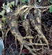
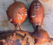
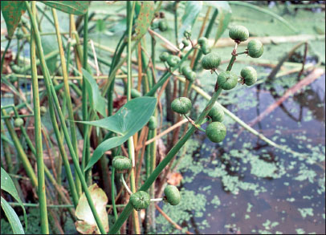

版权所有 © 2006 Samuel Thayer。保留所有权利。
未经作者书面许可，不得以任何电子或机械方式复制本书的任何部分，包括影印和录制，或通过任何信息存储和检索系统复制。唯一的例外是第76页和第77页的觅食日历，可以复印、放大或以其他方式修改并复制供私人使用，但不得出售或分发。
出版商编目出版数据
Thayer, Samuel.
《采集者的收获：识别、采集和制作可食用野生植物指南》/ Samuel Thayer
页码
包括参考书目和索引。
LCCN 205911400
ISBN-13: 978-0-9766266-0-2
ISBN-10: 0-9766266-0-8
QK98.5.A1T43 2006 581.6’32 QBI06-600299
书籍设计：Fiona Raven
照片和艺术作品由 Samuel Thayer 提供，除非另有说明。
第一次印刷 2006年3月，5,000册
第二次印刷 2006年9月，15,000册
第三次印刷 2009年1月，16,800册
第四次印刷 2011年1月，18,200册
第五次印刷 2012年3月，24,100册
第六次印刷 2013年4月，18,200册
第七次印刷 2015年1月，14,500册
第八次印刷 2016年12月，14,000册
第九次印刷 2019年5月，12,000册
第十次印刷 2020年6月，17,000册
中国印刷
出版方
Forager’s Harvest
709 West Arthur Avenue
Bruce, WI 54819
献给Josh，
不仅是我最好的朋友，也是所有人最好的朋友。
我曾经阅读我最喜欢的书中的致谢部分，想知道一个作者如何能在制作一本小册子时欠这么多人的情。现在我明白了。如果没有我的朋友们在过去十年中的鼓励、想法和偶尔的督促，我可能永远也完成不了这本书。我要感谢所有耐心相信我的人。
我怀着美好的回忆，向多年来和我一起淋湿、沾满泥巴、挨冻、出汗和被虫咬的许多觅食伙伴表示感谢，这一切都是为了享受地球上最美味食物的刺激。其中，我特别感谢 Mike Krause、Mark Pollock、Joe Eucolono、Jon Wheeler 和 Laurie Miskimins。
我非常感谢 Tammy Springer，她送给我拍摄这些页面上大部分照片的相机，还有 Jamie Springer，他反复忍受晒伤、蜘蛛和米虫，这样我就能”采集到一百磅”。如果不是 Edelene Wood 说服我尝试教授野生食物知识，我可能永远不会走上这条道路。Clayton Oslund 和 Bill Blackmon 慷慨地提供了建议和照片，没有这些，这本书会逊色不少。Sjana Schanning 让我在她的电脑上打早期草稿，我没有忘记这个恩情。几年前，Tom Elpel 慷慨地主动为我的努力提供了宝贵的支持。
在写这本书的漫长过程中，有几个人在各个方面提供了许多小时的支持和帮助：Glenn Schmukler、Abe Lloyd、Cindy Sakry 和 Josh Morey。我无法充分感谢你们。在技术建议和编辑方面，Mike Krebill 功不可没。尽管我付了钱，我的书籍设计师 Fiona Raven 也值得一提，因为她牵着一位谨慎的首次出版商的手。
我还要感谢在我之前的作者们，分享他们的热情和知识。当然，我也感激维持我生命的植物。我对它们无尽感激；我对它们无尽敬畏。最后也是最重要的，我要感谢上帝，是祂使这一切成为可能。
如果我没有提到任何人，那只是因为我怕你想要一本免费的书。上帝，你可以得到两本免费的书，但我需要你的地址。
引言
野生食物的意义
本书的目的和结构
觅食和野生食物文献的历史
开始使用可食用野生植物
为什么要觅食？
保护
在哪里觅食
用野生食物烹饪
植物识别和觅食安全
野生植物食材的采集和制作方法
绿叶菜
嫩芽和茎秆
地下蔬菜
水果和浆果
种子和谷物
坚果
储存野生食物
冷冻
罐装
干燥
冷藏
把握野生食材采集时机
日历
植物介绍
蕨菜(Ostrich Fern)
香蒲(Cattail)
慈姑(Wapato, Arrowhead)
野生稻(Wild Rice)
野韭(Wild Leek, Ramp)
菝葜(Smilax, Carrion Flower)
灰胡桃(Butternut)
西伯利亚榆(Siberian Elm)
荨麻(Stinging Nettle)
木荨麻(Wood Nettle)
酸模(Sheep Sorrel)
藜(Goosefoot, Lamb’s Quarters)
春美草(Spring Beauty)
驴蹄草(Marsh Marigold, Cowslip)
沼泽虎耳草(Swamp Saxifrage)
唐棣(Serviceberry, Juneberry, Saskatoon)
稠李(Chokecherry)
针叶樱桃(Pin Cherry)
地豆(Ground Bean, Hog Peanut)
土豆豆(Hopniss, Groundnut)
黑刺槐(Black Locust)
漆树(Sumac)
野葡萄(Wild Grape)
椴树(Basswood, Linden)
月见草(Evening Primrose)
欧防风(Parsnip)
马利筋(Common Milkweed)
弗吉尼亚水叶草(Virginia Waterleaf)
荚蒾(Nannyberry, Wild Raisin, Black Haw)
高丛蔓越莓(Highbush Cranberry)
牛蒡(Burdock)
蓟(Thistle)
参考文献和推荐阅读
参考书目
术语表
某个夏日，当我四岁的时候，我发现哥哥和姐姐蹲在我们家的前廊下。我钻到两根木板下面加入他们，急切地想分享吸引他们到那里的任何有趣事物。当我靠近时，我发现他们两个正在赞赏地凝视着一丛生长在那里的小巧精致的三叶草状植物，这些植物得益于从木楼梯缝隙中照进来的阳光而茁壮生长。姐姐拔起一整株植物，短暂地举到我面前让我看，低声说出”juicies”这个词，仿佛这个词是被禁止的。她接着把它吃掉了，连茎带叶，哥哥也同样吃了一株在他面前的植物。我效仿他们的做法，对那种柠檬般的味道印象深刻。
我的哥哥姐姐不记得他们是如何学会吃”juicies”的，但在我们童年的其余时光里，这是常吃的食物。直到六年后，我才发现这种植物的真名。尽管母亲曾严厉警告我杂草有毒，但那时我已经在吃十几种不同的野草了。我偷偷地这样做，活了下来，而且喜欢这样。
当我十岁时，我发现有关于野生可食用植物的书籍。这为我打开了一个全新的世界。我开始把荨麻和其他常见杂草带回家烹饪。起初这让我的父母陷入恐慌，但当我十四岁时，他们已经学会毫不担心地接受我的识别。我抓住一切机会采集和食用野生食物。我的卧室里堆满了装着山核桃和橡子的桶。晾晒的香草装饰着我的梳妆台。冰箱里装着其他人都不敢碰的东西，厨房里飘出陌生的气味。
在我青春期的头脑中，开始形成一个愚蠢的梦想——在远离城市的某个地方靠土地生活。我和我最好的朋友去露营旅行，我们几乎不带或完全不带食物，强迫自己觅食。我们会非常饥饿地回来，但活着，而且总是带着一些新知识。我学得越多，我的梦想就越不那么愚蠢。我的父母、老师和学校辅导员都不支持这个想法——但我意志坚定。我坚持阅读、烹饪、实验和计划。
今天，狩猎和采集是我的生活方式。野生谷物、茶、坚果、果汁、浆果、面粉和蔬菜都为各个季节储存着。几乎每天，几乎每顿饭，我都会吃一些来自未被破坏的土地的礼物。在一条死胡同乡村路边树林旁的简陋小屋里，我正处在我一直想要的地方。
找到一种野生植物并食用它，这件事吸引着每个人。即使是那些似乎对大自然完全不感兴趣的人，也会向任何他们看到拔起一株杂草并把它塞进嘴里的人提出六个问题。这种兴趣不仅仅是好奇的不认同；它是我们内心深处某种预感的表现。觅食是人类最古老的职业。在我们历史的大部分时间里，我们不知道其他生活方式。我们的身心都是为了成为狩猎者和采集者而建造的。无论我们与本性的这一方面失去了多少联系，在我们内心深处，我们都是觅食者。
今天，如果与购买的供应品隔绝，我们大多数人会在富足中饿死。许多人在我断言可以仅靠从野外获得的食物生存时感到震惊。我觉得这很有趣，因为在人类历史的大部分时间里，没有其他食物。当然，我不指望这本书的读者出去成为全职觅食者，但任何人都可以方便且有益地将野生食物作为美味、营养和多样化膳食的组成部分添加到他或她的饮食中。这本书可以成为你的门户。
食用野生食物的最大好处之一是，它提醒我们，养活我们的不是超市，而是阳光、雨水和土壤。作为一个社会，我们正在相信一个谬论，即人类制造食物。直接从大地获取哪怕一小部分的营养，有助于让我们保持对一个令人警醒的现实的联系：尽管我们拥有先进的技术，但我们无法制造我们最基本的需求。
多年来，我们一直听说需要更强的环境意识。没有什么能比实践人类古老的生态艺术——觅食——更确实、更有力地建立这种意识。不是对大自然的观察，而是参与大自然现象，才能让我们最深刻地理解我们在生命镶嵌图中的位置。
有些人认为，在这个现代技术时代，狩猎和采集已经没有立足之地。如果我们最重要的追求是过上健康、平和和充实的生活，并为后来者留下同样的机会，那么觅食在今天和以往一样合适。在上帝的花园中采集和食用是我们与他所创造的世界的直接联系。就像爱和美一样,科学的进步无法使其过时。
《觅食者的收获》以其他参考资料无法比拟的全面性、准确性和细节介绍可食用野生植物。我分享的关于收获和准备的信息不仅仅取自其他文献来源；它基于或经过我自己的经验验证。同时，我对植物学准确性给予了极大的关注。结果是一本独一无二的野生食物书籍。跟随我翻阅这些书页，走进树林，开启一段将改变你生活的冒险。
本书首先讨论了觅食的历史和哲学。在介绍采集野生食物的基本概念后，讨论了安全和负责任的觅食实践，包括植物识别的分步教程。之后，我介绍了收获、准备和储存不同类型野生农产品所涉及的许多技能。我设计了一个日历，帮助觅食者跟踪文中讨论的许多野生食物的收获时间。本书的主要部分由32个章节组成，每个章节涵盖特定植物或一组相似植物的识别、分布范围、栖息地、可获得季节、可食用部分、收获方法、保护和准备。还包括词汇表、索引和参考文献列表。
一些野生食物书籍按植物的常用名称字母顺序排列,其他的按季节排列。我意识到大多数读者不是植物学家,但我仍然偏爱植物学家使用的标准分类顺序。常用名称不一致,每种植物通常有几个名称,这使得字母顺序组织存在问题。许多植物在一年中的不同时间有多个可食用部分,这使得按可获得季节组织它们变得困难。遵循分类顺序,使相关植物彼此相邻,对读者有重要好处;它将相似的植物并排呈现,帮助识别,并加强对植物之间关系的理解。一旦学会了标准顺序,就很容易在任何这样组织的书中找到植物。
在描述中第一次提到植物时,会给出拉丁文或学名;此后偶尔使用,特别是在似乎需要避免歧义的地方。有些人对学名反感,但它们是绝对必要的。事实上,很少有植物像鸟类或哺乳动物那样有广泛接受或标准化的常用名称。使用学名是确定性地交流植物信息的唯一方法;习惯它们是值得的。
学名由两部分组成。第一个名称是属名(表示属,一组密切相关的植物);它总是大写。第二个名称是种名(表示属内的种);它从不大写。学名用斜体书写。当上下文明确我们正在讨论哪个属时,属名通常会被缩写。缩写”spp.”意思是”种,复数”,表示讨论一个属内的多个种。
具有相似常用名称的植物不一定相关;花楸(mountain ash)、白蜡树(white ash)和花椒(prickly ash)都属于不同的科。我通常使用植物最熟悉的常用名称,但我认为好的食物值得好的名称,所以偶尔,当更熟悉的名称笨拙、令人困惑或贬义时,我会使用一个似乎更合适的不太常见的名称。我有时使用多个常用名称,以便让读者熟悉那些在野生食物文献中最有可能遇到的名称。
也许有一种植物你失望地发现被排除在这本书之外。要充分详细地涵盖每一种可食用的野生植物并将它们全部放入一本书中是不可能的。我必须省略细节或省略植物;我选择省略植物。但不用担心——这本书是系列中的第一本。后续卷将涵盖更多物种。
这本书不是一本地区性指南。与所有其他指南一样,由于我生活在特定的地方,我的经验集中在那里,因此地区偏见内置于其中。我没有试图涵盖我最喜欢的植物、最好的植物或最常见的植物。本书中的物种被选择来代表各种食物类型、季节和栖息地。它们是从我认为有足够信息、经验和照片来制作令人满意的描述的植物中选择的。植物的选择将最适用于五大湖地区、中西部、东北部和加拿大东部南部。对于落基山脉、太平洋西北地区、北部平原、加拿大更北部地区和阿拉斯加的读者来说,它的用处只会略少。然而,这些信息对北美任何地区的野生食物爱好者都将非常有价值。
人们强烈倾向于认为一本关于可食用野生植物的书也会讨论它们的药用价值。在这本书中,我通常避开了这一点。虽然良好的饮食对健康至关重要,但药物和药品的主题在很大程度上与食物和营养的主题是不同的。我大约每两年服药一次,但我每天吃几次食物,所以我对食物有更多的经验。我不是草药师,所以我觉得没有资格就这个话题写作。此外,关于某些草药的有效性以及它们应该用于哪些疾病,存在很多争论和争议。食物没有可疑的安慰剂效应;没有卡路里意味着你会饿死。虽然本指南可以帮助识别植物,但主要对草药感兴趣的读者应该能够找到专门针对该主题的其他几本书。
我努力通过这项工作实现四个目标。这些目标使本书区别于许多其他关于可食用野生植物的书籍:
1. 根据我自己的经验,提供每种植物使用的全面描述。
在我看来，大多数野生食物书籍涵盖了太多植物，但细节却太少。由于塞进了所有这些物种，就没有足够的空间提供足够的信息来指导新手觅食者寻找、收获和准备这些植物。这些书籍对经验丰富的食物采集者也不太有用，因为在如此有限的篇幅中，作者无法提供除了已经在其他二十几本指南中重复过的基础知识之外的任何信息。因此，它们只不过是可食用植物的长列表——也许能让纸上谈兵的觅食者感到兴奋，但对那些真正想出去采集食物的人来说并不实用。
野生食物书籍的作者往往试图涵盖特定地区所有已知可食用的植物，或者涵盖其他已出版文本中所有”最好的”可食用植物。这不可避免地迫使他们包括一些他们很少或根本没有亲身经验的植物。因为作为作者，他们应该是该主题的专家，他们常常觉得有必要通过写他们认为是真实的内容或改写其他作者所写的内容来掩盖他们对特定植物缺乏经验的事实。
当Robert Henderson（2000）错误地画了四幅报春花的图片来配合他对月见草的描述时——这是一种完全不相关且不同的植物，只是碰巧有相似的通用名称——这强烈暗示他对月见草根部风味和用途的描述是基于文献记载而非他自己的经验。然而，他在文本中忽略了明确揭示这一点。同样，当Lee Peterson（1977）写道猪花生在地下的”豆荚”中生长时，很难相信他实际上收集过它们——因为他肯定会注意到这些种子根本没有豆荚。这种试图将他人的经验冒充为作者自己经验的做法在野生食物文献中猖獗。对于经验丰富的觅食者来说，这些错误很明显，但它们造成了严重的错误信息，让初学者措手不及，往往导致失望、挫折，并最终对野生食物失去信心。
本书中的所有描述都基于我自己的经验；我已经采集和食用了文本中涵盖的每一种植物数十次——其中大多数数百次。如果我对植物某一特定用途的第一手知识有限，我会在讨论中明确表明这一事实。读者应该知道这一点。
我经常听到沮丧的初学者对野生食物书籍中含糊不清的陈述感到愤怒，或抱怨那些绝对失败的食谱。在许多书籍中，读者被告知某种植物有可食用的块茎——但没有说明块茎有多大，在哪里和什么时候找到它，收集它有多困难，应该如何烹饪，或者它的质地和风味是什么样的。当我们拿起一本野生食物书时，这些是我们想知道的——所以这就是我打算告诉你的。如果作者没有投入”实地时间”，就无法做到这一点。
The Forager’s Harvest（觅食者的收获）分享了我多年来热衷使用野生植物所带来的发现，以便其他野生食物爱好者可以从这些经验中受益。这些信息通过我自己生活中的故事得到突出，希望能够赋予植物特性，并帮助读者记住关于它们的重要事实。
我不声称涵盖最好的、最知名的或最常见的可食用野生植物，或任何特定地区的所有有价值的植物。声称这些的书籍从未兑现承诺——但更重要的是，没有野生食物爱好者需要这样的书。无论是经验丰富还是刚刚起步，人们学习识别和使用植物的唯一正确方式是一次一种，带着极大的谨慎、兴奋和对细节的关注。我在编写本书时就考虑到了这一点。我没有包括大量的物种，但包括的每种植物都有非常详细的介绍。
2. 讨论在野生食物文献中基本上被忽视的植物、植物部位、用途和技术。
虽然某些野生食物植物在其他地方得到了充分的介绍，但仍然有许多优秀的物种，几乎找不到有用的信息。这些鲜为人知的植物在风味或质地上并不一定不如那些知名的植物，它们也不一定不常见或更难采集。关于它们的文字不多，仅仅是因为关于野生食物的大部分可用信息都来自少数原始来源，而这些来源恰好没有涵盖它们。
野生食物采集者很快就会注意到，各种流行的觅食书籍之间存在着一种诡异的相似性。它们不仅涵盖大致相同的植物，而且对这些植物的说法也大致相同。然而，即使是这些被广泛讨论的野生食物，关于它们还有很多东西需要学习，而不仅仅是通常出现在印刷品中的内容。我希望这本书对于那些厌倦了这种对陈旧观点的胆怯重复的人来说，将是一股清新的空气。
3. 提供必要的工具和图像，以便自信地识别植物，在其可食用阶段展示它们。
植物野外指南和识别要点非常有用，所有觅食者都应该使用其中的几本，但它们并不是专门为野生食物采集者设计的。它们通常描绘植物的开花阶段，这可能是识别它们的最佳时机，但通常不是采集植物作为食物的时候。野外指南和植物志经常使用二分检索表(dichotomous keys)，这是很好的工具，但无法提供觅食者所需的确定性水平。只有傻瓜才会吃没有仔细识别的植物；野生食物采集者在第一次识别植物时需要比被动的自然学家更高的信心度。这就是为什么觅食手册总是告诉你要在几本野外指南中交叉参考你的植物。
对于植物识别，大多数觅食书籍将责任转移给”可靠的野外指南”。作为识别工具，本书优于任何野外指南（对于它所包含的少量植物而言），因为它是为觅食者设计的。每种植物的多张照片清楚地展示了准确识别所需的所有部位和生长阶段。与其他野外指南不同，本书还展示了每种植物在适当采收阶段和条件下的可食用部分。植物的文字描述比读者在大多数觅食指南中看到的更详细，强调了大量易于观察的特征，可以与野外的植物进行比较。本书引言后面的逐步植物识别教程将帮助读者在第一次识别植物时感到自信。
文本偶尔会提到本书未详细介绍的可食用植物。在食用这些植物之前，读者有责任找到充分可靠的资源来识别这些植物，以及与其使用和准备相关的信息。
大量野生食物参考资料包含关于Nuphar属和Nymphaea属各种睡莲的描述。大多数声称”微甜的”块茎或根茎可以像土豆一样煮或烤。一些书籍包含在炖菜中使用块茎的食谱。涵盖这些”可食用植物”的书籍包括Lee Peterson的《可食用野生植物野外指南》、Bradford Angier的《可食用野生植物野外指南》，以及Elias和Dykeman的《北美可食用野生植物野外指南》。这些创意命名的书籍可能是该国最畅销的三本野生食物指南。它们中的一本或多本几乎存在于大陆上的每个书店和图书馆。它们由大型、受人尊敬的出版社印刷。但大多数（如果不是全部）Nuphar属和Nymphaea属物种的根茎和块茎是有毒的。如果这些作者真正吃过所讨论的植物，这个错误就永远不会发生。
Elias和Dykeman的书在某页包含一张标记为”刺荨麻，幼株”的照片，但实际上显示的是木荨麻；在另一页，“普通小檗”的照片实际上是日本小檗。木荨麻和日本小檗不仅可以很容易地与它们被误认为的植物区分开来，而且它们之间的差异对食物采集者来说非常重要。这些只是困扰野生食物文献的错误信息和草率学术研究的几个例子。
许多关于可食用野生植物的印刷书籍是由缺乏经验和不合格的人撰写的。这个领域没有学位，没有认证(certifications)，没有监管机构(regulatory body)或专业协会(professional association)来批准文本，没有广泛接受的权威机构(authority)可以验证印刷品中陈述的准确性。由于没有人拥有”可食用野生植物”学位，任何人拥有外围相关领域的学位就可以被他自己或他的出版商包装成野生食物”专家”。
我的名字后面没有学位缩写，但你可以放心，本书没有上述讨论的严重植物学错误。我基于自己的经验提出主张，而不是基于某些未经承认、未被引用的文献来源。我不需要声称自己是专家；我只会分享我所知道的，并希望你觉得有用。
尽管采集和狩猎野生食物在八千年前是普遍的，但此后它的实践一直在稳步下降。随着农业经济及其更高的人口密度在世界各地扩张，他们不断需要新的土地来耕种。这种扩张使他们与占据着令人垂涎的土地的觅食者在每一步都发生冲突。不仅因为人类社会倾向于鄙视他们的经济竞争者(economic competitors)，而且因为觅食者代表了一个完全不同的社会经济系统(socioeconomic system)，威胁到压迫性、封建农业文明的稳定，对狩猎采集者的仇恨成为文明文化的普遍教条(dogma)。一种偏见诞生了：野生食物有损真正人类的尊严，那些依靠它生活的人是亚人类(subhuman)。杀害或虐待他们是可以的，征服他们的土地是有道德的。这种态度一直持续到觅食者被消灭或他们的生活方式被摧毁。
为了配合对美洲原住民更明显的暴力活动，定居北美的欧洲人试图（并且在很大程度上成功地）让战败的印第安人为他们的传统饮食感到羞耻。他们污名化野生食物，假装这些食物令人作呕、粗糙、低劣，只适合野兽食用。虽然东部和南部的大多数美洲原住民主要依靠农作物为生，但所有部落的经济都在很大程度上包含了野生植物食物。这些知识几乎完全随着欧洲征服而消失了。
民族植物学(ethnobotany)这门学科直到十九世纪末才出现，所以关于原住民使用野生植物的记录非常少，尤其是在北美东部。人们认为记录”落后野蛮人”的知识没有任何价值，也许只是作为一种好奇心。所记录的内容都经过了有偏见的头脑过滤，给我们留下了大量无稽之谈。通过坚持原住民食物的令人不快和粗糙，并夸大使用它的困难，探险家将他们的征服合理化为给悲惨的野蛮人带来文明。这些早期记录经常错误识别原住民使用的植物，因为对那些撰写记录的人来说，准确识别往往并不重要。少数重视准确性的人也必然会犯错误，因为他们是在观察而不是实践。错误还因为北美植物的英文名称没有标准化而产生，这导致对旧记录的解释产生混淆。
就在1800年代末和1900年代初最后的传统原住民文化被摧毁之前，少数人类学家认真努力记录了他们对植物的使用。虽然我们关于可食用野生植物的许多信息来自这项工作，但这为时已晚且做得太少。大量的细节已经丢失。
人们普遍认为欧洲农民和北美早期定居者广泛使用野生植物食物。虽然他们使用这些植物的频率远高于今天的人们，但说他们是专业的采集者是有误导性的。大多数情况下，定居者因为附加在野生食物上的污名而鄙视它们，并尽一切努力不吃它们。大多数野生植物是在农作物或运输失败时出于必要而食用的，而这种情况并不经常发生。定居者不愿意熟练使用这些食物，或为它们开发好的食谱，因为它们只是临时的、紧急使用的。在每个地区，只有少数几种野生食物成为白人可以定期采集的可接受食物。这些是非主食食品，或者是以与狩猎采集者使用方式非常不同的方式使用的主食食品。
定居者确实使用了一些来自欧洲的准野生的、依赖人类的农业伴生植物。这一直是欧洲农民经济的一部分，几代人前的许多农村人对其中一些植物的使用相当精通。这就是我所说的可食用野生植物的”农民民间知识”。它只涉及一组特定的植物，这些植物在栖息地、起源、生命周期以及它们提供的食物种类方面相似。这些依赖人类的食用植物包括蒲公英、菊苣、车前草、荨麻、皱叶酸模、苦苣菜、繁缕、藜、苋菜、马齿苋、冬水芹、酢浆草、黑芥菜等等。
如果你读过一些关于这个主题的书，你可能已经注意到这些植物在野生食物文献中占主导地位。这不是因为它们在风味、丰度或采集难易度方面出色——尽管专注于它们的作者反复做出这样的声称。这些植物之所以受到关注，仅仅是因为它们是欧洲农民使用的植物，而北美的主流文化是那个农民传统的继承者。
你可能从未见过一本名为”如何开车”的书，就像十八世纪新英格兰没有人在阅读关于马术的书一样。我们不会写关于所有人都应该知道的平凡事物的书。所以当关于可食用野生植物的流行书籍开始出现时，例如1920年查尔斯·弗朗西斯·桑德斯的《美国和加拿大的可食用和有用野生植物》和1939年奥利弗·梅德斯格的《可食用野生植物》，我们知道野生食物的民间知识正在消失，并且可能已经是一件罕见的事情。这些作品帮助保持它的活力，并从美洲原住民使用植物的记录中收集信息，以便感兴趣的人可以轻松访问。
但是随着老印第安人的去世，第一次世界大战的食物恐慌结束，大萧条结束，北美人发现自己对传统野生营养来源越来越不感兴趣。在二十世纪中叶，关于这个主题的几本书问世，例如纳尔逊·库恩的《使用路边植物》、费纳尔德和金西的《北美东部可食用野生植物》，以及本·查尔斯·哈里斯的《吃野草》。但知识和兴趣继续衰退。
然后尤尔·吉本斯带着他1962年的经典著作《追踪野生芦笋》出现了，这本书在野生食物领域的影响力超过任何其他书籍。他随后推出了《追踪蓝眼扇贝》、《追踪健康草药》以及一些不太知名的作品。吉本斯是一个好奇的实验者、热情的采集者和出色的厨师；他的作品因此而脱颖而出，吸引了数百万人的想象力。他成为了名人，让许多人对觅食产生了兴趣。这成为了一种潮流，至少在某些圈子里是这样。
一些出版商察觉到觅食是一个热门话题，而这个细分领域几乎没有相关书籍。有钱可赚，于是书籍被写出来并出版了。大量平庸的野生食物指南出现了，作者们超出了自己的知识范围，创作出他们或出版商认为会畅销的成品。其中许多人显然不具备撰写此类作品的资格。更重要的是，自尤尔·吉本斯以来的野生食物文献一直以知识的彻底停滞为特征；大多数此类书籍几乎没有任何新颖或原创的内容。
最近出版的大多数书籍都是对上述七本原始书籍中相同信息的拙劣翻版。这些原著包含一些明显的错误和若干描述不充分或不当的植物用途；抄袭者无法发现和处理这些问题。因此，错误、观点和对经验的特定解读变成了”众所周知的事实”，甚至出现在市场上最畅销的野生食物书籍中。
如果一本野生食物书籍真正基于作者自己的经验，它就不会与他人的叙述非常相似。关于每种植物有太多东西要学习，有太多可能的做法，有太多精美的食谱，还有太多可食用植物，以至于即使是两个经验丰富的觅食者，更不用说二十几个，都会强调相同的食谱、物种和想法，这是不可想象的。野生食物书籍读起来像一堆基于同一本百科全书的五年级科学报告这一事实，说明它们都是从相同的来源复制的。
有许多知识渊博的觅食者，但不幸的是，很少有人写书。关于可食用野生植物的信息状况令人遗憾，如果撰写相关主题的人表现出专业精神并遵循几条简单的准则，这种情况可以随着时间的推移得到改善：
我们写的所有内容都应基于我们自己的经验（除非符合第2条）。
对于不是来自我们自己经验的任何观点或观察，我们应注明来源。
我们应该做出合理的努力，让读者了解我们对某种植物的经验水平，而不夸大其词。
我们不应该基于有限的经验而否定一种植物。
我们应该验证植物识别的准确性，参考并使用学名。
如果我们对一种植物有经验，我们不应该假设相关植物具有相同的特性。
野生食物文献正在迎来一场革命。当遵守这些原则的作者的作品取代那些学术草率的作品时，野生食物植物的研究将再次受到重视，人类历史上最古老、最美丽的消遣将从灰烬中重生。
人们可以列举许多采集野生食物的实际理由：营养、味道、多样性、节俭、应急准备、在野外小径上的便利性。但这些是好处，而不是原因。人们采集野生食物的原因与人们露营、钓鱼、狩猎、观鸟或只是在树林中散步的原因相同；它使他们与一个令人眼花缭乱、兴奋和惊叹的自然世界接触；它提供了一种深刻而原始的满足感；它感觉美丽而神圣。正是这种满足感保持了一个人对野生食物的兴趣——但好处也是巨大的。
如果你愿意投入必要的时间，你可以从野生食物中获得很多：金钱买不到的美食大餐、更好的健康、更低的食品杂货账单，以及你将终生铭记的激动时刻。你可以期待与觅食伙伴建立特殊的友谊，体验户外刺激的新方面。你将拥有一种美妙的方式，通过它让熟人（无论儿童还是成人）在大自然的祝福中受洗。最重要的是，你可以期待以一种你从未想过的方式享受食物。
对我来说，觅食也是一种精神体验。食物采集者在被称为大自然的神圣礼物中拥有无数小时的安静和反思时间。小奇迹被见证：一只刚出生的小鹿、一处隐蔽的泉水、一棵留存下来的古树。通过这些，我们更接近理解赋予我们生命的更大奇迹。
许多人认为野生植物就是不好吃；它们只是最后的选择，只在生存紧急情况下才食用的食物。如果真是这样，我早就失去了对觅食的兴趣。其他人说，如果这些植物真的很好，它们就会被栽培。但幸运的是，事实是野生食物比栽培食物味道更好。
很少有人能在品尝了野生草莓或蓝莓的愉悦体验后，不对农产品货架上发现的平淡、过度生长的草莓或蓝莓感到失望。然而，我们的大多数野生食物没有栽培对应物，因此是独特且无与伦比的体验。许多野生食物在质地、风味和外观上表现出完美，可以与最好的栽培农产品相媲美；按照任何定义它们都是美食，可以提供给最挑剔的味觉，而无需做出任何辩解。事实上，在最高档的餐厅和市场上获得最高价格的总是野生食物，而不是栽培食物。
野生植物被许多人认为粗糙难吃的主要原因，是我们的文化对这些食物根深蒂固的偏见，但其他因素也共同促成了这种名声。其中之一是，许多教授野生植物的人选择强调那些随处可见但平庸的可食用植物，如蒲公英和车前草。蒲公英是一种苦涩的绿色植物，几乎每个人第一次尝试时都不喜欢，而我对车前草叶子的风味或口感找不到任何正面评价。如果有人通过这些植物被引入野生食物，我不能责怪他认为我们这些新原始食物采集者是为了有个爱好而强迫自己进食。
某些野生植物确实需要培养对它们的口味，就像我们对咖啡或啤酒所做的那样，但当如此多美味温和的蔬菜触手可及，能让新手第一次品尝就感到愉悦时，没有理由用这些强效草本植物来向人们介绍野生食物。
某年十一月，我和一位熟人沿着当地公园沼泽中的木板路散步。他问我：“香蒲可以吃，对吧？”我告诉他是的。在我还能说出另一个字之前，他就弯腰抓住一个干燥蓬松的香蒲穗状花序，咬了一大口。绒毛在他嘴里膨胀，他咳出来，然后把花序扔在一边，评论道：“不知道他们为什么要吃它——味道不太好。”从这次经历中认为香蒲难吃，就像因为树枝太硬难嚼而拒绝吃苹果一样。
就像栽培农产品一样，野生植物有特定的可食用部分；错误的部分可能不可食用或有毒，即使是正确的部分，如果在不当阶段收获也会又硬又难吃。通常，初学采集者只是不知道植物准备收获时应该是什么样子，甚至不知道应该采集哪个部分。这种无知导致了许多让人们远离野生食物的经历。
当然，不是每个人都会喜欢每种食物。但让我向你保证，如果你学会识别本书中的植物，在适当的时候采集它们，并以合理的方式准备它们，你会喜欢其中的大多数。甚至更重要的是，过一段时间后你会渴望它们——你可能会发现很难想象没有它们的生活。
我经常被问到关于野生食物的营养成分。不幸的是，本书涵盖的植物中很少有经过营养分析的，所以我无法用每种植物的具体数据来回答这个问题。然而，已经分析过的少数野生可食植物产生了令人兴奋的结果。
野生植物平均被证明比类似的驯化作物含有更多的维生素和矿物质——通常拥有两倍或更多的含量。这一趋势已在不同农产品类型中得到证明，分析的植物物种样本足够大，可以安全地假设这一趋势是普遍的。虽然我们可能无法提供每种植物或植物部分的具体营养概况，但我们可以合理地说，每种野生食物可能都是维生素和矿物质的极佳来源。
这不足为奇；野生植物不是为了大小或保存性而培育的，也不是被迫在贫瘠的土壤上生长。此外，野生食物比你能买到的任何东西都新鲜，减少了通过变质而损失的复杂维生素部分。
我们不应忘记野生食物的另一个巨大健康益处——对人类和环境都是如此：它们不像我们大部分栽培农产品那样被浇上高毒性的杀虫剂或除草剂。
毫无疑问；食用野生食物极其健康。
采集不仅是一项廉价的消遣，还可以显著减少一个人的杂货开支。野生食物是一种巨大且未被充分利用的资源，适合那些宁愿花时间而不是金钱的人——无论他们是在荒野家园还是城市公寓。许多可食用的野生植物大量生长，可以像精心照料的花园中的蔬菜一样容易收获。有经验的采集者很少需要漫游和搜索；如果她在自己熟悉的地方，她通常知道何时何地可以找到她需要的东西，在陌生地区，她通常不需要很长时间就能发现比她可能带回家的更多的食物。
采集者不仅可以免费获得任何超市都买不到的独特、美味和惊人健康的食物，她还体验到对市场经济日益增长的独立感。通过学习采集，她有一天可以获得这样的保证：即使在最坏的时期，她也能养活自己和家人。
虽然我不主要将采集作为为大多数读者永远不会经历的最坏情况做准备的方式，但这种准备确实在大多数研究野生食物的人心中。荒野技能(wilderness skills)在过去三十年里越来越受欢迎，全国各地涌现出众多生存学校，数百本关于这个主题的书籍出版。虽然在荒野紧急情况（如迷路或被困）中食物不是首要任务，但即使是象征性的餐食也能给人们一种安全感，帮助他们保持专注。对饿死的恐惧会让人们陷入自我毁灭的恐慌，即使饥饿可能还有几周之遥。
你无法强迫自己学习野生食物知识，仅仅因为害怕有一天会在极端情况下被迫食用它们。你必须在学习的过程中实践觅食，并将其作为一项令人兴奋的消遣和热爱的劳动来学习。否则，当”生存状况”真正出现时，你将完全无法应对。
但”大地技能”运动不仅仅是为紧急情况做准备；大多数参与者都在寻求与造物主更深层次的联系，理解人类在生态系统中的适当位置。这些人中的许多人梦想有一天能过上原始或简朴的生活——让自己脱离他们认为不道德和具有破坏性的社会。为这一运动服务的生存学校和出版物主要关注生火、搭建庇护所、鞣制兽皮、打制燧石以及少数相关技能，这些技能能产生可以展示的可见成品。
但事实是，一旦庇护所、衣物和其他一些基本必需品得到满足，原始人在工作时间上会花更多时间狩猎、采集和准备食物，而不是做所有其他任务的总和。摩擦生火可以在一个周末学会，在一个月内掌握；但成为一名称职的觅食者需要数年时间。在短期生存情况下，当食物是一种安慰而非必需品时,了解野生可食植物很重要。在长期生存情况下,野生可食植物就是一切。
有些人坚持认为,我们人口太多,任何人都无法”靠土地为生”。我想知道这些人认为我们现在靠什么生活?事实上,觅食是一种历史悠久、经过时间检验、低影响且可持续的自然资源利用方式。负责任的野生食物采集者深切关注他们采集的植物以及这些植物所处的栖息地。他们努力在采集时运用良好的判断力和负责任的适度原则。在这方面,为个人消费而采集植物的人不应与采集人参的人和其他严重过度采集某些物种的野生采集营利者混淆。
负责任的野生食物采集者应该将景观视为她有幸从中收获的神圣花园;在采集时应始终牢记生态学。采集野生植物的基本保护规则是永远不要采集超过剩余种群能轻松补充的数量,并且始终以对植物及其周围环境造成最小损害的方式采集。理解你采集的每种植物的生活史是实施这些规则的关键。本书中的单个植物说明在适当时会更详细地概述保护考虑事项。
觅食者应该意识到的另一个生态问题是有害的入侵植物(invasive plants)。入侵物种是外来物种(有些是意外引入的,但大多数是有意引入的),它们占领自然植物群落,排挤本土植物并破坏本土野生动物的栖息地。其中许多物种是可食用的,采集可以帮助减少它们的流行。无论你是否为食物而采集入侵物种,你都应该考虑在你采集的区域花一些精力控制这些植物。例如,每年我都让我工作坊的参与者花一些时间在硬木森林中清除正在入侵的蒜芥(garlic mustard)。
本书中的所有植物在某些地区很丰富,但在其他地区很稀少。了解你打算采集的物种在该地区是否受到法律保护很重要。但由于立法者并没有在树林里四处奔走查看哪些植物需要保护,请主动确定哪些植物足够丰富可以采集。这是你作为觅食者的神圣责任。
最容易被过度采集的植物是多年生草本植物(perennial herbs),我们从中采集单个地下储存器官,如根、球茎或鳞茎。当储存器官被采集时,整株植物就会死亡。这些植物通常不会产生很多种子,因为它们适应了长寿命。尽管数量通常很多,但这类物种很容易被过度采集,因为它们繁殖得非常缓慢。在它们生长茂盛的地方通过疏除一小部分种群来采集它们。注意种群的任何长期变化并相应调整你的采集量。
产生多个块茎(tubers)的多年生植物不太容易被过度采集,因为它们会产生额外的块茎来补偿被动物消耗的那些。少量块茎几乎总是会被留下来开始下一季的生长。然而,即使对这些物种,过度采集也可能消除或大大减少当地种群——所以一定要留下相当数量的块茎。
一般来说,采集根茎(rhizomes)更容易对植物种群产生不利影响。单个根茎可能产生几根大茎秆,所以很容易忘乎所以地挖出一个群落的大部分。在采集时无意中将根茎折断或切成小块会导致在原来有几株大植物的地方出现许多小植物。这些小植物可能无法与周围的植被竞争。对于根茎,要注意只采集你正在采集的群落的一小部分。
在收获二年生植物的可食用根茎时，整株植物会被杀死。切勿收集一个群落中的所有根茎；至少让一半根茎在第二年结籽。由于二年生植物的种子产量大且生命周期短，它们的种群数量自然波动比多年生植物更大——但它们恢复得也更快。如果你想保持这些植物的供应，在收获时带上种子,并将它们撒在你挖根茎处扰动的土壤上。
从多年生植物采集绿叶蔬菜时,通常可以采集约三分之一的量而不会过度伤害植物,但在生长季节不要反复从同一株植物采集。这不仅会阻止植物产生种子,还会耗尽其储存的能量,导致它萎缩,如果持续采集,最终会导致其死亡。然而,杂草类一年生绿叶蔬菜的繁殖力很强,通常可以不加限制地采集。
多年生植物的嫩芽应该每个季节从每个群落采集一次,即使如此也应该采集少于总嫩芽数量的一半。年复一年地采摘所有嫩芽的野生多年生植物会逐渐变小,直到被未被采集的邻近物种挤出。当受到持续采集或割草的压力时,它们产生的嫩芽质量也会变差。
水果、浆果、种子和坚果是植物的馈赠,它们本来就是用来收获的。你对它们的采集很少会损害这些物种的繁殖,因为它们产生的种子数量远远超过可能长成成年植物的数量。然而,请记住这些是野生动物的重要食物来源。
北美的每一片土地上都有可食用的野生植物——尽管有些地区肯定比其他地区产量更高。在本书中,我选择了代表各种栖息地的植物,从野生森林到城市地块。特定的栖息地往往在年度周期的一个或几个时期产生许多集中的相似食物。例如,松树荒地在仲夏至夏末有许多水果,但可食用的绿叶蔬菜或根茎很少;而成熟的硬木林几乎没有水果,有许多根茎,春天还有丰富的绿叶蔬菜。狂热的觅食者会希望接触各种栖息地类型,以便在一年中尽可能长的时间内获得充足的农产品供应。
由于流行的野生食物文献过于关注农民的民间知识,它往往强调依赖扰动的植物。不幸的是,这导致一些作者忽视了森林食物,甚至贬低荒野作为觅食地点。事实上,偏远地区经常为采集野生食物提供绝佳的机会。
然而,你不需要荒野地区来觅食;农田和林地的混合提供了非常高产的景观。城市地区栖息着喜欢扰动的杂草,以及在荒地、公园、空地和观赏性种植中不可预测分配的食用乔木、灌木、藤本植物和草本植物。这片大陆上的每个人都住在步行可达的有价值的觅食机会范围内,我们大多数人周围的野生食物比我们知道如何处理的还要多。
许多地方,无论城市还是农村,都对公众开放,但在这些土地上采集之前必须确定收获植物是否合法(或准备好逃跑和躲藏)。大多数大型公共森林都允许收获水果、坚果、浆果和蘑菇,与护林员或森林工作人员聊天可能会获得适度收获绿叶蔬菜或嫩芽的许可。
在许多地区,农村路边被视为公共财产。特别是如果你明显是在路边采摘浆果或坚果,很少有人会为难你。每年有成千上万的人在路边觅食;事实上,可能这里进行的野生食物采集比其他任何地方都多。如果你在路边觅食,请使用常识:不要在住宅附近采摘,那里可能显得侵扰;不要采摘任何看起来被种植或照料过的东西;当然不要在有人可能怀疑你做一些非法事情的地方采集。抵制诱惑,甚至不要走出路肩一点距离。这会引起怀疑、愤怒和领地本能——而且会让你成为合法的入侵者。你可能有一天会遇到一个人愤怒地接近你,声称拥有路肩。他可能不值得争论;乖乖离开。
私人土地提供了很好的觅食机会,但你应该始终在使用它们之前获得许可。对许多人来说,接近陌生人并请求许可采集植物是令人生畏的——但这是值得的。
你可以做一些事情来增加获得许可的机会。第一次与某个土地所有者交谈时,请求许可收获可以从路上看到的特定植物;选择像接骨木浆果(elderberry)或胡桃(butternut)这样的东西,土地所有者可能以前听说过。主动提出与他分享你的收获。(别担心,他不会想要的。)如果土地所有者很友善,而且这处房产看起来很有前景,你想再次光顾,那么稍后带上一份觅食产品作为礼物,比如一罐果酱或果冻,以示感谢。在确信觅食确实是你的爱好,而且你没有其他企图之后,土地所有者会更加信任你。相反,如果土地所有者脾气暴躁,勉强同意进入他的财产,最好不要接受他的提议(除非你看到一棵非常、非常好的胡桃树)。
起初，您可能会在食谱中使用野生植物作为熟悉的栽培植物的替代品。这没问题，但您需要记住，这些野生食物与它们要替代的栽培植物并不相同；每种植物都有独特的风味和质地组合。
享受野生食物本身的特点，而不是它们几乎像什么。文献中经常将野生蔬菜比作某种特定的栽培蔬菜；许多这类老套的比较完全不准确。例如，菊芋经常被描述为”土豆替代品”，尽管除了它是块茎这一事实外，它与土豆没有任何突出的共同特征。人们曾数千次尝试以类似土豆泥的方式烹制这种野生块茎，结果令人沮丧和失望。在本书中，我尽量只在对读者有意义和有帮助时才进行此类比较。
当您第一次准备某种野生食物时，我建议单独烹饪它并少量品尝。它可能味道清淡而乏味——但要仔细品尝。体验和分析其风味和质地，试着想象什么能很好地搭配它们。设想您的新食材可能适合哪道传统菜肴。从简单的组合开始，看看效果如何，然后改进或完善您的想法，直到开发出适合您的食谱。
如果您在熟悉的食谱中替换单一野生食材，结果令人失望，您可能会认为这个食谱失败了，但不要放弃这种植物——它可能完全适合另一道菜。要有耐心——弄清楚如何烹饪不熟悉的蔬菜可能需要一段时间，特别是那些我们没有烹饪传统可以指导的植物。
随着人们越来越少做饭，烹饪书却变得越来越受欢迎。许多家庭的书架上摆满了成千上万的食谱——但这些食谱中很少有人会尝试。食谱需要厨师来实现它。如果您没有做饭的意愿，野生食物食谱对您没有帮助；而如果您喜欢烹饪，您会很快想出自己的方法将野生植物融入日常饮食。出于这个原因（也因为很少有读者可能同时拥有准备我的某个食谱所需的所有野生食材），我选择不在本书中包含食谱。
关于包含野生食物的更多传统食谱，我推荐尤尔·吉本斯(Euell Gibbons)的《追寻野生芦笋》和《追寻健康草本植物》，以及特蕾莎·马隆(Teresa Marrone)的《野趣盎然》。
像数百万其他老年人一样，尤尔·吉本斯死于心脏病发作。然而，这位觅食名人被他推崇的野生食物杀死的传说，无论是以胃癌的形式还是仅仅因为食用了错误的植物，在他去世后迅速兴起，并且仍然比真相更广为人信。我们文明的集体意识似乎因为野生植物杀死人的想法而得到某种安慰。
大多数人一生中会因餐厅食物而生病几次，每年都有许多人死于此类食物中毒。人们从未听说”如果你在餐厅吃饭，你可能会死”，但我经常听到关于采集野生食物的同样说法，尽管觅食导致的死亡几乎闻所未闻。
对于许多人来说，吃错植物并中毒的恐惧根深蒂固。有些人说得好像有毒植物潜伏在树林里，等待在最轻微的失误(faux pas)时跳进我们的嘴里并滑入喉咙。但觅食者不是一群在森林里走来走去随意把植物塞进嘴里的幼儿。食用某物是一种深思熟虑的行为，因此可以谨慎和仔细地进行。
任何人都可以通过遵循一个简单的规则来避免吃错植物：除非您100%确定植物的识别，并确定您打算食用的部分在您采收和准备的状态下是可食用的，否则绝不要食用植物的任何部分。 植物中毒总是由于忽视这一规则而造成的。
有时与野生食物相关的另一个危险是污染。当然，如果植物位于车辆频繁通行的道路旁、最近喷洒过的农田或草坪，或其他明显受污染的地点，不采集它们作为食物是明智的。然而，通常伴随野生食物的非理性恐惧常常导致对此类事情的警告被夸大。住在城市并在自家菜园吃菜的人告诉我们不要在城市觅食，因为那里的植物可能含有污染物，而从乡村路边采摘浆果长大的人发现自己警告其他人不要这样做，因为这些植物可能被废气污染。亨德森(Henderson)(2000)甚至声称”水污染和生物污染已经毒害了北美所有的野生水田芥……觅食者应该避开他们在溪流和沟渠中遇到的野生水田芥，无论它们在哪里。”
事实是，我们生活在一个受污染的世界；我们呼吸肮脏的空气，喝受污染的水，从充满化学物质的农田获得大部分食物——但我们存活下来了。野生植物是这个世界的一部分，不应该因为未经审视的双重标准而被忽视。
简而言之，虽然觅食确实存在一些固有风险，就像任何活动一样，但这些风险相对较小。运用常识和合理的谨慎，与采集野生植物相关的风险可以降低到最低水平。觅食并不比普通爱好更危险——而与野生食物相关的主要危险，即食用错误的植物，是完全可以消除的。
对于初学者来说，识别未知植物的过程可能很困难——即使对于有经验的觅食者来说，这仍然是一项严格而谨慎的任务。如果在相册或植物标本室中错误识别了一朵野花，这并不是什么大问题。但如果你要食用的植物被误认为另一种植物，后果可能会很严重。因此，野生食物采集者需要对植物身份有比普通野花爱好者或植物学家更高的把握程度。
野生植物并不比栽培蔬菜更难区分；它们对初学者来说之所以显得混乱，只是因为不熟悉以及数量众多。然而，通过练习，你可以学会像识别苹果、胡萝卜或草莓一样轻松和自信地识别野生食用植物。本节描述了用于达到这种自信识别水平的识别过程。这是每种植物的关键第一步，但一旦达成，在未来遇到同一植物时就能轻松识别。
当你在户外行走时，有时会看到一种植物并想：“嘿，这种植物在我的野生食物书里。”然后你会去拿书并翻阅，如果幸运的话，你会找到这种植物。这是你的初步识别(tentative identification)；这只是识别过程的开始。
坐在你初步识别的植物旁边，仔细观察它。将植物的每个可用部分与文字描述以及书中的照片或图画进行比较。你的植物应该与描述和图像非常匹配。勾画植物并配以文字观察是一种绝佳的方式，可以让你更仔细地观察细节，并帮助你以后记住这些细节。
不要仅仅因为你更喜欢图片就忽略描述。无论植物照片有多好，文字描述在识别中都起着至关重要的作用，因为它们告诉你要看哪些特征以及应该最重视哪些特征。通常，更重要的识别特征并不是最先注意到的。
当你将真实植物的特征与书中的描述和图像进行比较时，至关重要的是不要在心理上强迫你的植物符合描述。如果叶子应该有光滑的边缘，不要看着一片有很小或钝齿的叶子说：“嗯，它看起来足够光滑了。”不要仅仅因为总状花序(raceme)是一种花簇类型就把任何花簇都称为总状花序。你可能非常兴奋，真的很想找到某种可食用植物，你可能想证明你的初步识别是正确的，但不要鲁莽；观察并欣赏大自然的微妙之处。当植物实际上并不符合描述时却说服自己它符合描述，这是一个危险的习惯，任何描述都无法防范这一点。你的植物应该轻松合理地符合描述,不需要任何宽松的比较或牵强的定义。
某些识别特征比其他特征更恒定。植物识别手册通常关注开花和结果部分的形态和排列，因为这些是保存在植物标本室中的部分，它们通常是用于植物识别最可靠的特征。茎的横截面、气味、叶序(无论是复叶还是单叶，互生还是对生等)、叶形(脉络、齿状、厚度、质地)和根或其他地下储存器官的类型通常也是非常可靠的特征。最不可靠的特征是生境关联(habitat association)、物候学(phenology)、植物或植物部分的绝对大小以及颜色。这些不太可靠的特征仍应认真考虑，但不应给予与上述更一致的特征同样的权重。对于所有植物部分，形态远比大小或颜色重要。
注意在彼此附近发现的这两片普通牛蒡叶的巨大差异。奇特的形态(左)是由异常生长条件造成的。这种剧烈变化并不罕见，可能由遗传、损伤或生长条件引起。此外，植物在不同生长阶段可能看起来出人意料地不同。
许多新手期望每种植物都有一两个明确无误的特征来正面识别它。这是不现实的；野生植物不带标签。植物的每个特征在某些情况下都可能偏离常态——即使是最可靠的特征。因此，你绝对不应该通过单一特征来识别植物。
在识别植物的过程中，你会遇到诸如互生(alternate)、羽状复叶(pinnately compound)和伞形花序(umbel)等植物学术语。如果你不知道这些词的含义，请在词汇表中查找。(任何没有词汇表的植物书可能设计不良，不适合用于识别。)你需要理解这些基本的植物学词汇才能正确识别可食用植物——而且随着你学习植物知识,你会一次又一次地看到这些术语。
如果在仔细、公正、合理地将你的植物与第一本书中的描述和图片进行比较后,你有信心已经正确识别了它,那么请用其他几本野外指南重复相同的过程,再三核实你的识别结果。阅读关于”相似物种”的内容,使用这些植物的描述来确认你的植物不是它们中的一种。然后去找你的植物的更多样本,最好是在不同的生长条件下,检查它们以了解你的植物的变异范围。
在食用植物之前,你需要绝对确定已经正确识别了它;你需要有足够的把握拿生命去打赌。你对所吃植物种类的确定程度,应该与你吃香蕉时的确定程度一样毫无疑问。你需要对植物的识别具有我所说的矛盾性自信(contradictory confidence)。如果你达到了这种确定性水平,你会立即反驳任何告诉你相反意见的人,不管他的级别和头衔。总统、教皇和农产品经理都无法说服你苹果是橙子:这就是矛盾性自信在起作用,这就是你需要达到的确定程度。
1. 初步识别: 你已经找到了你认为是某种植物的东西。
2. 将你的植物与可靠的参考资料进行比较: 要仔细、彻底、批判性地、合理地进行比较。
3. 再次和三次核实: 与其他几本可靠的参考资料进行比较。
4. 找到更多样本: 持续这样做直到你能毫不费力地识别该植物;这可能需要几分钟、几小时、几天,甚至几年。
5. 评估矛盾性自信: 你真的具备了吗?你确定吗?你愿意拿生命打赌吗?你会在一群植物学家面前宣称这一点吗?
这里还有另一条很好的规则:如果你需要用书来识别植物,你还没有准备好食用它。你永远不应该食用一种植物,除非你对它足够了解,能够轻松地、立即地识别它而不需要书本。你可能在第一天遇到某种植物时就达到这一点,或者可能需要在几个月甚至几年的时间里多次遇到它。这需要多长时间取决于许多因素:植物是处于容易识别还是困难识别的阶段、你的野外指南的质量,以及最重要的,你自己在植物识别方面的经验水平。你最初的几种植物将是最困难的,你应该非常小心不要急于求成。
有时你可能在某个生长阶段认识某种植物,但在另一个阶段却不认识。最轻微的犹豫或怀疑都表明对所讨论的样本缺乏矛盾性自信。这意味着必须再次拿出野外指南来验证识别。如果你的指南没有充分展示植物在某个生长阶段的样子,你可能需要标记该植物并通过季节观察它,等到明年再采收它。
在研究或观察自然方面完全没有经验的人在觅食时处于劣势;他们倾向于低估植物的微妙性和可变性。有些人不了解关于植物的最基本概念,比如有些草本植物是多年生的、花会变成果实这样的事实。这没关系,但处于这种植物学知识水平的人需要认识到他们需要在自然观察方面接受基础教育,这将需要一些时间、努力和开放的心态。
首先,我建议你尝试识别和学习你所在地区最常见的植物,无论它们是否可食用,使用可靠的野外指南,如Newcomb’s Wildflower Guide或Pojar和Mackinnon的Plants of the Pacific Northwest Coast。识别你的第一株未知植物可能需要几个小时甚至几天,但这将是你植物学野外工作的入门。在你识别并绘制了大约十几种植物之后,你可能就足够舒适地考虑识别植物以供食用了。试图在没有这种基础训练的情况下直接进入觅食,就像试图用日英袖珍词典阅读东京报纸一样。
我曾经在夏令营带一群五年级男孩进行野生食物徒步旅行,并向他们展示了羊酸模(sheep sorrel)。我指出叶子如何在基部张开并以莲座状生长,然后要求他们带回一些羊酸模,通过我的检查后才能食用。几个孩子给我带回了一把没有基部裂片的叶子——通常被认为是该植物的显著特征之一——营地的博物学家协助我工作,他责备他们注意力如此不集中。但事实上,他们带回的每片叶子都是羊酸模的叶子——许多只是缺少特征性的裂片。那么,这些孩子是如何识别出那些形状与他们所看到的如此完全不同的羊酸模叶子的呢?
当你熟悉一种植物时,你的大脑开始形成一个与之相关的信息和特征档案。这个档案,或者说这组关联,就是我所说的搜索图像(search image)。人们不是通过具体的显著特征来识别熟悉的事物,无论是植物物种还是他们的父母之一。相反,我们用各自的搜索图像来识别它们,搜索图像包含的关于它们物理外观的细节远比我们能有意识记住的要多。搜索图像包含的质地、形状、位置、颜色、气味和其他诸如此类事物的细微差别,是无法用语言表达的。
三叶草的一个显著特征是它有三片小叶，任何植物指南都会告诉你这一点。但我们对三叶草的搜索图像(search image)不仅告诉我们四叶三叶草仍然是三叶草；它如此敏锐，以至于我们大多数人可以立即识别出粘在割草机刀片上的一小片三叶草叶片。那些五年级的男孩识别出酸模是因为它有酸模的颜色、质地、大小、叶柄和生长形态——叶片形状只是他们对它的搜索图像中包含的数十个特征之一。
识别(identification)和辨认(recognition)是两个完全不同的概念。识别在先；这是一个人在熟悉特定植物时必须经历的仔细而审慎的过程。辨认发生在通过反复的准确识别建立起有效的搜索图像之后。与该植物的每一次后续接触都会丰富和完善搜索图像，直到辨认变得瞬时而毫不费力。
发展完善的搜索图像涉及如此多的识别特征，以至于它本质上是万无一失的。这是一个令人难以置信的工具，使人能够识别出四分之一英里外牧场上的一棵榆树，或在州际公路上一瞥四分之一秒就发现一朵熟悉的野花。一旦你学会辨认一种植物,你就不必在每次采集它时都经历繁琐的识别过程。
不存在所谓的”完全相同”；只有”看起来相似”。如果人们无法区分这些植物，它们就不会被视为不同的物种。任何可食用植物都可以通过训练有素的眼睛与看起来相似的有毒植物持续可靠地区分开来——但你的眼睛只有在你仔细经历了识别植物并建立其搜索图像的过程后才算训练有素。在采集具有危险相似植物的可食用植物之前，你应该记住几个将可食用物种与有毒物种区分开来的特征。即使你自信地辨认出可食用植物，也要使用这些特征对你采集的每个样本进行复核。
一些可食用植物确实看起来与有害植物相似，这种相似性可能会欺骗那些在植物识别上不够谨慎的人。一个很好的例子是普通马利筋和普通夹竹桃。尽管在嫩枝阶段这两个物种之间有十几个容易观察到的差异，熟悉它们的人可以轻松区分它们，但许多采集者还是被它们的相似性所迷惑。
误认相似植物所涉及的危险因所涉及的植物而异。误认的通常结果是不得不吐出味道糟糕的东西，但少数植物毒性极强，即使少量样本也可能严重伤害你。因此，在任何情况下品尝或食用任何未识别植物的任何部分都是绝对不可接受的。
在各个植物介绍中，我试图提及似乎可能与所讨论植物混淆的有毒植物。然而，我不可能列出每一个可能引起混淆的物种。我建议在学习可食用植物的同时熟悉相似植物，因为这会让你对可食用植物的识别感到更加自在。如果相似植物剧毒，你应该避免食用与之相似的可食用植物，直到你能自信地识别两个物种。我还建议你等到对植物识别总体上感到熟练和有经验时，再食用任何具有真正危险相似植物的植物。然而，不要让不知情的人的恐怖故事吓得你过度谨慎，以至于无法使用完全可以食用的植物。
学习可食用野生植物的最好方法之一是陪同有经验的采集者到野外(希望也到厨房)。让别人为你识别食用植物当然比自己经历这个过程容易得多。然而，如果你这样做，你需要记住你是在把生命托付给另一个人。
已知发生过中毒事件，当某个粗心的人告诉另一个人某种植物可以食用，而实际上它有毒时。有些人说这样的话是为了炫耀他们的”知识”，也许没有考虑到有人可能真的会考验他们的说法。当被误导的人真的吃了那种植物时，误导者可能什么也不说，而不是承认他实际上不知道自己在说什么而丢面子。
然而，辨别谁是真正的采集者并不难。问他们问题；他们应该对他们声称可食用的植物了解很多。他们应该在提出此类声明之前吃过这种植物，并且应该乐意在你在场时再次食用该植物。(大多数人想看起来聪明，但很少有人会为此危及生命。)这里简单的寓意是要小心你信任的人。
所以，你已经完成了所有步骤；你用大量参考资料识别了你的植物，它们都一致；你从里到外、从上到下、彻彻底底地检查了它，它完全符合描述。你发现它长满了你家旁边的田地和其他十几个地方。现在是采集它的合适时节；你在冰箱里囤了一堆，你想看看是否值得付出所有努力。
第一次食用这种植物时，请保持克制。单独烹饪它，小心地品尝一小部分。如果它是苦的或有其他难吃的味道，就吐出来。这是一道极其重要的第二道防线。舌头的设计目的是告诉我们哪些食物是安全的，哪些不是，它在这方面做得非常出色。大多数有毒植物味道很糟糕。（当然，这并不意味着你应该到处品尝植物来看看它们是否可以安全食用，因为这条规则会有例外，而且有些植物毒性很强，仅仅品尝一下就可能有害。）例如，如果你把罗布麻(dogbane)误认为是乳草(milkweed)，你的嫩芽会尝起来非常苦。那种苦味实际上在尖叫”不要吃我！“但我知道有几个人，确信他们有乳草，并认为乳草应该是苦的，强迫自己咽下了罗布麻。不出所料，他们生病了。觅食中最重要的安全规则之一是：如果味道不好，就不要吃。
这里出现了一个问题，很像我之前所说的”硬套”问题。有人可能对觅食太兴奋了，以至于说服自己一种植物味道很好，而实际上并非如此。有些人甚至认为野生食物应该味道不好，所以他们对它的评判标准不同于对栽培食物的评判标准。这不仅是对觅食食物的侮辱，而且也很危险，因为味道不好的东西几乎总是对你有害的。
另一方面，如果你喜欢你的新植物的味道，那就继续食用一小份。即使它真的很好吃，也要抵制大吃大喝的诱惑。等待一天，看看这种植物对你有什么影响。（避免在同一天吃两种或更多新食物，否则，如果有问题，你将不确定是哪种食物引起的。）也许这种特定的植物虽然可食用，但与你的新陈代谢(metabolism)不合，会让你胀气或恶心。然而，最有可能的是，你之后会感觉很好。如果一切顺利，就像对待任何其他具有类似品质的蔬菜一样对待这种植物，以合理的方式将其纳入你的饮食。
你有可能对通常可食用的植物过敏或不耐受(intolerant)。这种现象在花生、杏仁、芒果和腰果等熟悉的食物中相当常见，因为有成千上万的人受到它们的影响。人们通常在幼儿期接触他们余生将要吃的大部分食物；此后食用全新食品的情况很少见。但觅食者会定期接触新食物，这增加了出现过敏/不耐受反应的可能性。
食物过敏很严重，会让人病得很重。第一次反应的症状通常类似于食物中毒或胃肠型流感；身体通过呕吐和腹泻清除不需要的物质，伴随着恶心和全身不适。某些植物群体，如坚果和豆类(legumes)，比其他植物更容易引起过敏。不幸的是，这些反应不一定在第一次接触植物时发生；你可能安全地吃了几次，然后你的身体才产生过敏或不耐受。如果你曾经因为你知道可食用的植物性食物而意外生病，就要怀疑这种反应。如果你确认自己过敏或不耐受，就把这种植物当作有毒的一样对待，因为症状通常会随着每次接触而变得更严重。
食物过敏是生活中不可避免且不可预测的事实。要采集野生食物，你必须承担这种风险。然而，不要让这吓到你；这种反应很少见，而且在野生食物中并不比在栽培食物中更普遍。
大多数人认为可食用植物和有毒植物之间有明确的二分法(dichotomy)。普遍的观念是，你可以无害地吃可食用植物，但如果你摄入有毒植物，你很快就会死亡，或者至少会被紧急送往急诊室。这种观点是有误导性的。如果没有对可食用和有毒概念的现实理解，一个人对饮食、营养和可食用植物文献的理解就会受损。
许多可食用植物是有毒的，许多有毒植物是可食用的：这两种属性并不相互排斥。我们所有人都定期吃有毒物质。在继续之前，让我们将可食用植物定义为一种产生一个或多个可以食用而不会对健康产生负面影响的部分的植物；让我们将有毒或toxic植物（这两个术语可互换使用）定义为一种产生一个或多个如果食用会对健康产生负面影响的部分的植物。这是在讨论野生植物时这些术语的常规用法。
同一种植物可以产生一个可食用的部分（土豆块茎）和一个有毒的部分（土豆叶子），但这不是我的观点。我也不需要重申某些植物部分如果在错误的时间收获可能是有毒的，或者某些植物是有毒的，除非经过特定的处理使它们可食用。这些事情广为人知且被充分理解。然而，许多人似乎不理解的是，同一种植物的同一部分，在同一时间收获，通常符合这两个术语的定义，既可食用又有毒：可以无害地食用它，也可以食用它直到它伤害你。
与其将植物二分为可食用和有毒两类,不如说在两个极端之间存在一个连续体(continuum)。一端是强效致命的植物,如毒芹,而另一端则是相当温和的食物,如苹果。然而,每种食物和饮料如果摄入过量都有可能对你造成伤害。肾脏和肝脏是人体生理的主要特征,因为我们吃的每种食物都含有有毒物质,以及在代谢和分解过程中会产生毒素的其他物质。因此,正确的问题不是某种物质是否会伤害你,而是需要多少才会伤害你。
小时候我很喜欢青椒。六岁那年,有一次我帮邻居除草,他好心地奖励我”想吃多少青椒就吃多少”。我立刻拿了一个吃掉,过了一会儿又去拿了一个。为了不浪费这个特别的待遇,几个小时内我吃了五个完整的生青椒。大多数人都会认为青椒是可以食用的,但我幼小的身体在那之后感到非常不适。
1915年,超过10,000名美国人死于糙皮病(pellagra)(Wardlaw, 1999),这是一种由于玉米在饮食中占比过大而导致的烟酸(niacin)缺乏症。在非洲和亚洲较贫困的地区,每年仍有数千人死于这种疾病。如果玉米只是缺乏烟酸,称其为有毒可能并不公平,但事实并非如此。玉米实际上含有相当多的烟酸;然而它会导致糙皮病,是因为它含有与烟酸结合并使其无法被身体利用的分子。过量摄入玉米会导致烟酸缺乏,从而引发糙皮病,即使你摄入了足够的烟酸。
如果你的饮食在较长时间内完全由蛋白质组成(比如你被困在一辆装满瘦鸡胸肉的冷藏半挂车里,还有烤架和保暖睡袋),蛋白质代谢产生的氨和尿素会超过肝脏和肾脏处理排泄的速度。它们会在体内积累,最终可能导致死亡。
我们常用的香料和调味料大多都有足够的毒性,摄入几盎司就会让人非常不适;剂量足够大时可能致命。但谁会吃几盎司迷迭香、芥末或肉豆蔻呢?谁会喝下一杯辣根?在有其他选择的情况下,谁会选择连续数月每餐都以玉米粥为主食?又有谁会被锁在装鸡肉的卡车里呢?
我们之所以能安全地食用这些东西,是因为我们的身体会告诉我们何时该停止。渴望和厌恶感使我们的饮食保持平衡。作为一种文化,我们已经形成了规范熟悉食物使用和消费的习惯和准则。将烤大蒜作为晚餐主菜肯定会让人侧目——这是件好事,因为吃了两杯大蒜的人之后可能会感到不适。然而,我们还没有为野生食物形成这样的规范,这增加了有人过量食用并遭受中毒后果的可能性。
当野生食物被以不合理的大量摄入并导致某人生病时,这会被归因于植物的毒性;但当同样的情况发生在栽培植物上时,该事件会被归因于那个人的愚蠢。当我因为青椒生病时,我的父母只是笑笑,说些”这就是教训”之类的话。如果是野生植物导致了相同的症状,他们可能会惊恐万分地把我送到医院,给我洗胃,并警告我永远避开那种可怕的植物——或者更糟的是,避开所有野生植物。这个故事可能会登上当地报纸,让其他有小孩的母亲也感到恐惧。
野生食物往往会被以不同于熟悉栽培植物的标准来评判。如果一种野生植物作为香料不为人所熟悉,却产生与少量墨西哥辣椒相同的生理效应(口腔和喉咙灼热感、刺激消化道引发通常很严重的腹泻,仅举几个较明显的例子),它会被普遍且明确地称为有毒。墨西哥辣椒确实有毒;我们只是照吃不误罢了。许多人说微量龙葵碱(solanine)使野生龙葵(Solanum nigrum)的果实有毒,而栽培番茄、土豆、茄子、酸浆和青椒中的同一种化学物质却被认为无关紧要。野生食物作者反复警告我们酢浆草、酸模和藜中的草酸(oxalic acid),而传统烹饪书从不警告我们大黄茎、菠菜和园艺酸模中的同一物质。
希望读者能够开始理解为什么文献中如此多的野生植物既被称为可食用又被称为有毒:适量食用它们无需担心,但如果摄入异常大量就会让人生病。当”轻微有毒”这类术语用于指代已被几代人食用的已知可食植物时,不要让它引起过度的恐惧。
这一切并不意味着有些植物食用起来不危险。某些物种含有极其强效或破坏性的毒素,或者毒素含量极高,这些植物无论如何都不应该食用。这类植物应该被明确地称为有毒的(poisonous)、有毒性的(toxic)或致命的(deadly)。
一些书籍，尤其是那些关注生存的书籍，声称某种植物”可食用但口感不佳”、“勉强可食用”或”仅适合紧急情况”。这是误导性的。一种被普遍认为口感不佳的植物是有毒的。它可能只是轻微有毒，允许你吃一点而不受伤害,但任何足以含有大量卡路里的份量都会让你生病。食用一定数量后,你会觉得它令人作呕。如果你强迫自己继续食用,你要么会呕吐,要么会生病,这两种情况在生存环境中都代价高昂。这类植物作为食物来源毫无价值。
我经常被问到这样的问题:“如果我在泽泻叶成熟时食用它们,味道虽然不好,但也不会伤害我,对吗?” 会的。如果它们不适合你,它们就对你有害。你的肾脏、肝脏和肠道有比处理这种愚蠢想法更重要的事情要做。你可能会惊讶于你的食欲、厌恶感和味觉偏好如何精确地调节你的饮食,以及要克服它们是多么极其困难;当你忽视它们时,你的健康会受到多么持续的负面影响,你不应该感到惊讶。这说明了安全觅食的最后一条规则:植物只有在味道好且食用愉快的情况下才可食用。
许多父母对让孩子觅食的前景感到合理的紧张,尤其是独自觅食——但他们往往无能为力。被允许在户外度过大量无人监督时间的儿童,尤其是与其他儿童在一起时,几乎总会开始食用少量野生植物。通常是相同的几个物种:酸模、酢浆草和葡萄卷须是最常见的。儿童喜欢并似乎渴望这些植物中草酸的酸味,令人不解和惊奇的是,即使在这个现代反觅食文化中,如此多的儿童是如何了解到它们可食用性的。我经常在我的工作坊中与成年人小组讨论这个问题,大约一半的人声称在童年时期吃过一种或多种这些植物——但很少有人能回忆起他们是如何得知的。
我为儿童或包括儿童在内做过少量野生食物项目,他们的天赋给我留下了深刻印象。一个男孩夏令营的四到六年级学生小组让我惊讶:我与九个孩子进行了四小时的采集和准备课程,向他们展示了大约二十种可食用植物。两周后我回来进行跟进时,大部分相同的孩子参加了,还有几个新来的。第一次课程的每个参与者都记得几种植物,一个聪明的男孩能够完美而自信地识别我们讨论过的所有植物,轻松地列举出识别特征。老学员已经教会了许多新来者这些植物。
在另一个父母和儿童的周末夏令营中,我教这个年龄从五岁到五十岁的小组营地周围最常见的九种树木、灌木和草本植物。在最后一天,唯一能识别所有九种植物的人是那个早熟的五岁小孩。
我一再惊讶于儿童观察植物的能力,以及在再次发现之前向他们展示过的植物时识别它们的能力。当向他们展示一种经过正确识别的植物时,搜索图像似乎很容易在他们的脑海中形成。事实上,我目睹的最严重的识别错误都是成年人犯的。也许觅食本能比我们愿意承认的更强。我怀疑文明人实际上随着年龄增长而失去了他们的觅食能力;就像一条肢体,它要么被使用和发展,要么萎缩。
然而,这对父母来说是一个困难的情况,因为大多数严重的植物中毒发生在五岁以下儿童将未知植物放入口中时(Turner和Szczawinski,1991)。然而,在某个时刻,儿童会完全认识到有毒植物的潜在危险,从那时起,他们毒害自己的可能性不会比成年人更大。每个父母都需要决定孩子何时发展到这种程度并准备好参与觅食。
本章概述的采集和准备指南是有用的概括——即使对于本书未专门涵盖的植物——但在食用任何植物之前,请找到该物种的详细信息,因为这些概括的例外情况可能很重要。
对于大多数觅食者来说,采集植物是一个令人兴奋、令人敬畏、甚至神圣的时刻,将从户外获取的原料转化为精美食物的过程几乎是神奇的。在实践中,这两个步骤是不可分割的:准备工作从选择要采集的植物开始,觅食者直到食物被食用才算完成。
所有野生植物,像栽培植物一样,需要在适当的阶段采集才能食用或适口。在许多情况下,这种最佳状态持续的时间非常短暂,采集得稍早或稍晚都会产生劣质产品。在少数情况下,处于错误阶段的植物可能有毒。那么,在识别之后,采集的下一步是找到处于适当采集阶段的植物。这将在本书后面逐个植物地讨论。
采摘植物时应当有意识地进行，心中要有最终产品的目标。这意味着你只采摘自己会用到的部分；野生植物太过珍贵，不应因贪婪的过度采摘而浪费。应该小心采集：切割或掐取多汁的嫩芽，剪切或干净地折断果实簇，只摘取嫩叶，挖掘根茎和块茎时不要将其切碎，不要压坏果实。采集后，将植物放入干净的容器中，保持凉爽并避免阳光直射，不要让它们干燥。最后，尽快准备食用或储存。
在学习采摘和准备每种植物时要有耐心；这些看似简单的任务涉及许多特殊技巧和细微技能。有句话说任何值得做的事情，最初做得不好也值得去做。这一智慧非常适用于觅食。你对本书所描述的一些事情的首次尝试会显得笨拙，或许令人沮丧。不要气馁——效率会随着时间、经验和坚持而来。
泥土和牙齿是敌人。在人类历史的大部分时间里，老年人常常因为牙齿磨损殆尽而饿死，因此我们对食物中的沙砾有一种本能的厌恶。花费所有精力采集和准备一道野生菜肴，却在食用时痛苦不堪，或者更糟糕的是，不得不把它从厨房窗户倒掉，这真是令人沮丧。即使你因为兴奋或饥饿而能够忍受沙盒沙拉，其他被你喂食的人也会明显不满。
我详述这一点是因为，通过教授许多觅食工作坊的过程——在这些工作坊中，许多人采集的植物会放入公共锅中——我逐渐意识到，粗心导致的泥土污染是一个巨大的问题。有些人会连根拔起整株植物，然后真的就带着大团泥土或泥巴直接扔进我们的沙拉碗里。但不需要的沙砾也有更隐蔽的方式侵入餐盘。
觅食时要时刻保持对泥土的警觉。低矮、铺展或匍匐的植物极易受污染；尽量在它们落在落叶上而不是裸露地面上的地方采集，或者彻底冲洗。任何低于12-18英寸的植物下方的裸露土壤都可能意味着严重的麻烦，因为雨水会将泥土溅到较低的叶子上。在海滩上以及裸露农田中或旁边的植物需要注意，因为阵风会卷起松散的颗粒。春季，河流经常泛滥并在大片原本完美的蔬菜上沉积冲积泥土。路边的灰尘虽然不像沙子那么糟糕，但也毁掉了许多完美的果实或绿叶植物。
在这方面，多毛或粗糙的植物总是比表面光滑的植物更成问题。由于泥土可以顽固地附着，最好找到生长在保持清洁的地方的植物，而不是试图清洗沾满沙砾的植物。
“大自然就像一场盛宴，”我们许多人都听说过。“人们只需要学会如何享用它。”
我不敢苟同。大自然不像一场盛宴。它也不像超市；甚至不像一个井然有序的农产品摊位，只是大部分摊位藏在灌木丛中。
在盛宴上，准备好的餐食摆在你面前；如果你在树林里发现这种情况,你是在抢别人的野餐。在超市里,你找到的食物已经加工过了——谷物已经脱粒、碾磨和烘焙，水果已经榨汁，蔬菜已经装罐。在农产品摊位上,你不必挖土豆、掰玉米棒或采摘树莓。
我完全赞成颂扬大地的恩赐，但让我们现实一点。如果你真的需要一个类比，那就说大自然就像一个你不必种植、耕作或除草的花园。你仍然需要挖掘、采摘、清洗、去皮以及其他一切工作。
许多人似乎对任何需要采集以及可能清洗和烹饪之外工作的野生食物都失去了兴趣。这包括大多数野生食物作者。这种限制基本上使我们只能选择沙拉绿叶菜、煮食草本、嫩芽、小籽浆果和蘑菇。你会发现野生食物文献主要关注这类植物。
我经常在工作坊上说，一种植物对生存越有用，你能找到的相关信息就越少。我希望我是在开玩笑。野生食物文献通常只是口头上提及主食植物，因为它们不属于上面列出的任何易于使用的类别。作者通常试图通过低估采摘和准备这些主食植物所需的时间和精力，并过度简化操作说明，来使主食植物对纸上谈兵的觅食者更具吸引力。这种天真、粉饰的叙述可能读起来令人愉快，但几乎没有实用价值。
我也吃沙拉、浆果、煮食草本和蘑菇——但那些一直占人类饮食绝大部分的根、块茎、坚果、豆类、淀粉类蔬菜、水果和谷物呢？好吧，这里有一个你可能从你妈妈那里听说过的事实：如果你想吃饭，你就得工作。我不明白为什么这么多人认为这条规则不应该适用于觅食。我一次又一次地惊讶地听到沮丧的觅食”爱好者”抱怨野生食物”需要这么多工作”。他们期待什么？可以直接食用、美味、丰富、营养完整的高热量食物长在树上？你已经知道我要说什么了：没有汉堡树。
你认识多少个渔夫会抱怨他们在水上度过的时光?猎鹿人为了射杀每只动物要走或开车多少英里?园丁为了每磅蔬菜要花多少小时耕作、除草和照料?然而他们都不会抱怨;他们知道付出努力是这些活动的一部分。正是这些努力让这些活动令人满足;没有努力,它们就只是购物而已。我讨厌购物。
我当然希望坐在扶手椅上的觅食者们会喜欢这本书,但我写这本书是为了那些真正计划外出并带着食物回家准备的人。因此,即使有些植物需要付出努力、技能和设备来采集和准备,我也将它们收录在内。
许多野生食物作者忽视或否定任何需要大量加工才能食用的植物。也许他们没有意识到大量栽培食物需要长时间加工,更不用说那些更多的野生祖先植物了。橄榄刚从树上摘下来是有毒的;它们至少要经过一周的浸泡才能食用。野生杏仁是有毒的,但在培育出无毒的驯化品种之前,人们采集和准备它们已经数千年了。木薯是热带地区数百万人的主食,生吃可能致命。事实上,如果因为野生食物需要加工——无论是浸泡、筛选、烘烤、去壳或其他方法——就将其否定,那就等于否定了地球上几乎每一种主要作物的祖先。
在这本书中,我不会让你去寻找野生食物的圣杯;我不会只给你糖霜而不给你蛋糕。觅食是一件要去做的事,而不仅仅是梦想。我会给你工具去做——但你必须付出努力。
“绿叶菜”(greens)一词是指植物可食用的叶子部分。常见的栽培绿叶菜包括生菜、菠菜和羽衣甘蓝。尽管有大量野生绿叶菜可供选择,但它们在普通人饮食中只占很小一部分。绿叶菜往往热量低、纤维高,维生素和矿物质含量非常高;许多绿叶菜的蛋白质含量也出奇地高。如果人们选择在饮食中增加更多绿叶菜,营养会更好,而野生绿叶菜是增加摄入量的有趣方式。
采集绿叶菜时,要寻找最新、最嫩的生长部分。这会味道更好、纤维更少,而且更容易消化,热量和蛋白质含量也相对更高。可以通过体型较小、颜色更浅的绿色、容易折断以及位于枝条或嫩芽末端来识别新生长部分。有些嫩叶有光泽,摸起来像橡胶;它们也可能下垂,因为茎秆还没有时间产生坚韧的纤维。另一个检验某些绿叶菜是否仍然鲜嫩的方法是轻轻拉扯——如果它们可以明显拉伸而不撕裂,说明还没有纤维化。
绿叶菜在春季和初夏最为丰富。对于大多数多年生绿叶菜,叶子在春季只有很短的一段时间足够嫩可以食用。一年生植物的绿叶菜通常在幼嫩时最好,但保持鲜嫩的时间比多年生或两年生植物要长得多;有些在整个生长季节都不错。对于叶子可食用的两年生植物,要寻找的绿叶菜通常是第二年植株的嫩直立叶子,特别是新长出的茎秆上的头几片叶子。贴地的基生莲座状叶子往往不好吃。在夏末和秋季,只有少数几种野生绿叶菜可供选择,因此变得非常珍贵。
将绿叶菜收集到干净的碗或袋子里,或直接拿在手里。掐断、折断或剪下你采摘的绿叶菜——不要拽掉整根枝条或扯出整株植物。有些人使用刀或剪刀采集绿叶菜,但没有什么工具比大小合适的拇指指甲掐在食指上更有效或方便了。
绿叶菜在采摘的那一刻最好。随着时间推移它们会失去风味和营养,而且随着干燥它们会变韧——通常是显著地变韧。如果不可能立即使用绿叶菜,将它们放在密封容器中置于阴凉处可以保持相当新鲜几小时到几天,具体取决于类型。
有些绿叶菜生吃很美味;这些是我在文中称为”沙拉绿叶菜”的,尽管我实际上很少用它们做沙拉。更多时候,我只是抓一把就地享用。除了单独品尝或添加到沙拉中,生的绿叶菜还可以用作装饰或放在三明治上。
煮熟的绿叶菜(potherbs)通常要么水煮要么蒸,尽管它们也可以用油焯,加入炒菜,或用于千层面这样的菜肴中。几乎任何沙拉绿叶菜也都可以作为煮熟的绿叶菜。蒸比煮能保留更多营养和风味,但两种方法都可以接受。大多数绿叶菜煮熟后会显著缩水,所以采集时要记住这一点。有些非常嫩,只需要短暂烹饪,而另一些则更韧,需要较长的烹饪时间。有少数绿叶菜带有令人不快的味道,可以通过煮沸然后沥干并倒掉水来去除。
不同的绿叶菜有不同的用途。有些味苦、辛辣或芳香，应该少量使用，而另一些则温和丰盛，可以大份食用。许多野生食物作者都评论说北美人的味觉厌恶苦味，尤其是在绿叶菜中。虽然这部分属实,但更多时候这是用来反驳人们对某些常见野生食物(如蒲公英和菊苣)的普遍厌恶。人们似乎对苦味的目的存在一些困惑。人们可以忍受,而且往往会学会欣赏小份的苦味绿叶菜,但如果你试图给他们上更大份量的同样绿叶菜,大多数人会感到厌恶。美国人可能确实没有吃足够的苦味食物,但在任何文化中,苦味绿叶菜都不是卡路里的主要来源。
我喜欢在几乎任何一餐中加一小份野菜,不加调料或者只加一点盐。其他人喜欢加胡椒、黄油、奶油、融化的奶酪、油煎面包块或类似的调味品。我也喜欢在我经常吃的许多汤、砂锅菜和热菜中加入绿叶菜。
嫩芽是各种植物年轻、柔嫩的茎。它们是在二年生或多年生植物利用先前储存的能量快速生长时产生的,而且它们柔嫩是因为植物还没有时间在茎中产生纤维素。除了蕨类植物的蕨头外,大多数嫩芽看起来像矛一样。它们通常有一些小的、未成熟的叶子,但与绿叶菜不同的是,茎占据了它们大部分的体积。人们倾向于将嫩芽作为饮食中比绿叶菜更大的一部分,但它们仍然是次要的卡路里来源。唯一著名的栽培嫩芽蔬菜是芦笋,但有数十种野生嫩芽。
其他植物有可食用的茎秆或中心有可食用部分。两种著名的栽培茎秆蔬菜是芹菜和大黄;野生植物也提供了广泛的这类选择。
可食用的嫩芽和茎秆主要在春季中期到初夏早期可以获得。通常,同一种嫩芽在田野中会比在森林中晚一到三周长出来。这种习性是对空地更容易结霜的反应;它大大延长了许多嫩芽蔬菜的季节。
尽管野生食物文献中充满了关于只有在特定高度以下才能采集各种嫩芽蔬菜的警告,但你应该忽略这些指示。高度是判断最佳状态的错误指标。寻找粗壮的嫩芽,具有高厚度-高度比、微小或未开放的叶子,以及柔软灵活的茎。
嫩芽的底部通常坚硬而木质化,而上部仍然柔嫩,这是很常见的。采摘嫩芽蔬菜时,沿着茎感受以确定易弯区域的范围:这将告诉你嫩芽有多少部分足够柔嫩可以享用。你需要通过实验来学习每个物种应该弯曲到什么程度才表示柔嫩。
采集嫩芽或茎秆时,不要直接向上拉扯;在适当的位置弯曲、掐断或切断它们。猛拉会拔出不需要的植物材料,这些材料稍后需要修剪,可能会弄脏食物,并且经常损坏根系。
与绿叶菜一样,尽快使用嫩芽。如果不能马上处理它们,它们在冰箱里的保存时间比绿叶菜稍长一些——只要确保它们不会变干。然而,大多数嫩芽在储存几天后会显著变硬,因此在食用前可能需要切掉较硬的底端。
我喜欢将嫩芽蒸或煮,配上一点盐或黄油。它们在汤和许多其他菜肴中也很美味。一般来说,只需将嫩芽煮到你喜欢的嫩度即可;烹饪时间会根据你的质地偏好和所准备的特定嫩芽种类而有所不同。大多数嫩芽和茎秆可以生吃,但人们往往更喜欢煮熟后食用。
由于嫩芽经常大量出现,它们是很好的蔬菜,可以大量储存以备后用。大多数太多汁而不适合晒干,但可以在快速焯水后冷冻或用压力罐装。
绿叶菜和嫩芽是很好的营养食品,但地下植物器官是更好的卡路里来源。它们通常纤维更少,味道更温和,更易消化,更适合作为一餐的主体。地下储存器官中的大部分卡路里以碳水化合物的形式存在。
一些觅食者对挖掘食物的前景感到反感,但这些人错过了大自然提供的一些最好的蔬菜。此外,在生存情况下,地下蔬菜的知识可能是无价的,因为在一年中的大部分时间里,没有其他容易获得的浓缩卡路里来源。
大多数地下蔬菜在深秋到早春之间处于最佳状态——对应于植物地上部分休眠的时期。它们也可以在休眠期前后的几周内采集,但在这些极端时期它们的质量不会是最高的。与其在书中为每种地下蔬菜描述这个可获得期,我简单地将其称为根季。春季短命植物(spring ephemerals)是这种模式的主要例外;它们的根也可以在夏季采集,因为植物在那时处于休眠状态。
大多数人将任何位于地下的植物部分称为根，但植物学家不会这样做。如果你要学习可食用植物，明智的做法是了解植物产生的各种地下贮藏器官(storage organs)之间的区别。理解植物部分及其功能有助于理解植物的生命周期，并能帮助识别植物。
植物的地下部分，用于固定植物以及吸收养分和水分。
| 茎(Stem) | 植物用于在根部与叶片、花朵等之间运输水分和养分的结构。茎可以位于地下、地表或地上。 |
|---|---|
| 直根(Taproot)  | 一种粗壮的锥形根，通常肉质且向下生长。例子包括胡萝卜、欧洲防风草和月见草。大多数具有可食用直根的植物都有两年生的生命周期。在第一年，两年生植物以基生莲座状存在，没有任何茎秆。这个莲座的唯一目的是进行光合作用并在根部储存能量。然后在第二年，根部的能量被用来支持花茎的快速生长。开花结籽后，植物通常会死亡。仅从处于莲座阶段、没有茎秆的植物上采集两年生根部。 |
| 块茎(Tuber)  | 茎(通常在地下)的膨大部分，用于储存养分。例子包括马铃薯、慈姑和菊芋。通常，单株植物每年会产生许多块茎，这些块茎是其主要的繁殖方式。块茎通常比根部含有更少的纤维。 |
许多可食用的地下部分含有相当数量的不可消化复合碳水化合物,称为菊粉(不是胰岛素)。菊粉被认为是某些根茎类蔬菜产生过量胀气的原因,特别是在生吃或未煮熟时。这种物质未被吸收就进入了下消化系统,在那里被细菌分解,产生气体。根茎类在初秋时含有最多的菊粉,但随后会逐渐转化为简单糖,为来年春天的生长做准备,这使它们尝起来更甜,同时增加了可用热量并减少了产生气体的倾向。
菊粉可以通过长时间烹饪分解为可消化的糖。大多数根茎类蔬菜,特别是在季节早期采集的,应该在食用前彻底煮熟,以分解部分菊粉,使其更容易消化。
在收获期间尽量不要损坏地下蔬菜;任何受损的应该首先使用。采集后保持它们湿润、凉爽,并避免光照。地下蔬菜可以带土储存,但在烹饪或食用前应该清洗干净。特别注意瘤状物、芽眼,或根茎分叉或分支的地方,因为这些地方往往藏有污垢。
主根类蔬菜是汤和砂锅菜中的传统食材,许多也适合单独食用。野生根茎可以用任何你使用栽培根茎的方式来使用,但风味和质地会有所不同。有些野生根茎甚至非常适合像胡萝卜那样生吃。块茎适用于大多数相同的烹饪用途,但也常被烘烤、煮熟捣碎,或切薄片油炸。块茎比根茎更适合作为一餐的主要热量来源。根状茎、鳞茎和球茎种类繁多,很难概括它们的烹饪用途。
挖掘野生根茎等可以使用任何类型的铲子,但我更喜欢短柄的——主要因为它们更容易携带,也更容易放进我的汽车后备箱。不要购买塑料、PVC或玻璃纤维手柄的铲子。制造商可能会保证手柄永不断裂,但他们忽略提及它会从铲头上松脱。木柄铲子既便宜又好用,其断裂通常是误用的结果。
铲子可用于挖掘许多地下蔬菜,但最常用于挖掘主根,主根通常笔直向下生长进入土壤。在观察了数百名学生尝试挖根之后,我意识到如今正确使用铲子完成这项任务的能力已经是一项罕见的技能,所以我将花点时间来解释一下。
将铲头的尖端放在距离你打算挖出的根茎2到4英寸的地面上(较大的根用较大的距离)。理想情况下,根茎应该在你翻起的那铲土的中间。现在重点来了:铲头应该是垂直定向的,这样它会平行于根茎进入土壤,而不是以相交的角度进入,那样会在中途切断根茎。这意味着铲柄不应该是垂直的;它应该向远离你的方向倾斜。保持铲子在这个位置,跳起来双脚落在铲头顶部,必要时用脚向下推,将铲头推入土壤。(注意:对于容易出事故的人,跳跃是可选的。)如果目标根茎很小,不要将铲子推得比挖出它所需的深度更深。一旦铲头正确地推入土壤,慢慢向后朝你的方向撬,直到你那铲土松动。(如果在这个关口无情地猛拉或拖拽,铲柄往往会断裂;如果必要,前后摇动,交替在手柄上施加压力然后释放压力。你可能还需要在根茎的另一侧插入铲子以松动整铲土。如果土壤非常坚硬,在撬动手柄之前不要将铲头完全推入。)必要时将那铲土掰成两半,然后将根茎拔出。上述整个过程执行起来需要5到30秒。
这根小挖掘棒用一只手握持,用于挖掘地豆(ground beans)、齿叶延胡索块茎(toothwort tubers)和其他小型浅层地下蔬菜。
这根挖掘棒非常适合许多根茎、鳞茎和块茎,需要双手握持。
手铲(trowel)是一种单手握持的小型铲子,常被园丁使用。在荒野中充满岩石、坚硬、根系密布的土壤里,它的效果远不如在精心打理的花园松软、易碎的壤土中好用。尽管如此,手铲仍是挖掘许多地下蔬菜的好工具。蒲公英挖掘器(dandelion digger)与手铲类似,但刀片更窄更长。无论使用哪种工具,都要选择你能找到的最坚固、质量最高的。
当我提到使用挖掘棒时,有些人会嘲笑我,仿佛我使用这种低级、过时的工具只是出于某种古怪的愿望,想在觅食时更像我的旧石器时代祖先。我也笑了回去。我和我的挖掘棒在采集地豆(ground beans)或春美草(spring-beauty)根茎时,能胜过任何使用铲子的竞争对手。
事实上,我使用两种不同的挖掘棒。第一种有一个长而窄的刀片,约12×2.5英寸(30×6.5厘米)长,手柄约8英寸(20厘米)长,顶部变宽以提供更大的握持面。它比手铲更精确高效,而且更坚固,可以用力撬动。这种双手挖掘棒用于挖出单个球茎、块茎或球茎,而不必翻动一大铲土,还可以在铲子无用武之地的岩石或树根周围工作。我的第二种挖掘棒要小得多,略微弯曲,使用时单手握持。它专门为采集地豆而设计,但偶尔也用于其他植物。
当我长途徒步时,携带挖掘棒很简单,而铲子则是累赘(除非我遇到好斗的熊,那种情况下铲子会让人安心得多)。因此,当我只需要花很少时间挖掘时,即使铲子效果更好,我也可能带根棍子而不是铲子。
野生水果有着令人眼花缭乱的颜色、风味、形状和大小。作为健康饮食的重要组成部分,它们提供许多重要营养素,包括以简单碳水化合物形式存在的卡路里和维生素C。在北美洲除北极地区外的每个土著文化中,野生水果都被大量采集和食用。
为了减少压碎,将浆果采摘到宽而浅的容器中,而不是又高又深的容器中(特别是非常柔软的浆果,如树莓或草莓)。这将延长它们的保质期几个小时。此外,浅容器不太容易发生灾难性泼洒。我将水果直接采摘到系在腰间的一加仑容器中。然后将其倒入一个带盖的矮胖3.5加仑桶中,作为我的散装容器。
我最近了解到,在某些地区,像我使用的这种绑带式浆果采摘容器被称为”blickey”。我立即采用了这个术语,因为我厌倦了说”绑带式浆果采摘容器”。对于认真的浆果采摘者来说,blickey是天赐之物。有了它,你永远不必追踪你把桶放在哪里,永远不必弯腰保持尴尬的姿势将水果放入碗中或浪费时间拿起和移动容器,永远不会洒出浆果,采摘时总是双手自由,甚至可以带着容器爬树!唯一blickey不起作用的时候是当你采摘生长在低处需要蹲下的浆果时。对于这类浆果,我只是将碗放在地上,边采摘边挪动它。
使用blickey采摘顶针浆果(thimbleberries)。
要制作blickey,选择一个盒状塑料桶,其深度等于或大于宽度。(靠着你腹部的深而平的边缘可以稳定容器,这非常重要。)在贴近身体的一侧的两个顶角各钻一个孔,穿过一根小绳,在背后打结,瞧,你就有了自容器本身发明以来最伟大的浆果采摘发明。(因为blickey很深,采集柔软浆果时你可能想在装满之前就倒空它,以免压碎它们。)
带脚环的浆果钩用于压住黑樱桃(chokecherry)树枝。
野生水果采摘者的下一个最佳工具是”浆果钩”。这是一根4-6英尺(1.25-2米)长的杆子,一端有钩,另一端系有绳环。这个工具像手臂的延伸一样使用,用来抓住高处的树枝或柔韧灌木的上部树干,将它们拉到热切的双手够得着的范围内。拉下树枝后,把脚伸进环里固定住,让双手自由采集果实。尽可能远或高地钩住树枝,以减少弯曲时施加在它们上面的压力。如果有必要,一旦树枝在够得着的范围内就用手抓住它,并重新调整钩子的位置以减少张力。如果茎很难拉下来,你应该放弃,否则它可能会折断。
小而软的浆果应在采集后尽快处理。在炎热天气下,它们通常会在几小时内发霉或变质,特别是在采集过程中被压碎的情况下。冷藏只能将这类水果的保质期延长到大约一天,而仔细的初始处理也许可以使其延长一倍。为避免浪费,你应该立即食用、烹饪或冷冻这些软浆果。皮较厚的水果,如蓝莓、黑樱桃和李子,可以保存得稍长一些,但仍应及时使用。有些水果,如苹果和蔓越莓,天然具有更长的保质期。
许多野生水果和浆果直接从植物上采摘后无需任何准备就可以美味食用,这些往往是最受欢迎的品种。其他野生水果本身过于酸涩,大多数人的口味难以接受。然而,这些浓烈的水果通常能制作出无与伦比的果酱、果冻、果汁、糖浆、酱汁、果干、派、烘焙食品、葡萄酒和其他产品。
果汁: 榨汁本身可以是一个目的,但它也是制作果冻、葡萄酒或水果糖浆的必要第一步。对于果汁,你通常需要完全成熟的水果,因为它更软更多汁,但有些种类在部分水果未完全成熟时味道更好。制作果汁有两种基本方法:压榨生水果,以及过滤煮熟的水果。
我更喜欢生榨的野生水果包括葡萄、秋胡颓子(Autumn Olive)、苹果和高丛蔓越莓。我通常用木杵(我称之为”捣锤”)在干净、结实的桶或盆中压碎水果。然后我把一些捣碎的水果放入果冻袋中,尽可能用力挤压以榨出液体。(在捣碎水果时加入少许水会稀释风味,但也能让你提取出更多果汁。对于一些味道极浓的水果我会这样做。)如果你能使用苹果酒或葡萄压榨机,生水果也可以用它来压榨。鲜榨果汁通常含有大量颗粒物质。在苹果酒中这些东西是好的,但在许多其他野生水果汁中,沉淀在底部的残渣味道不好,应该留在那里。这种情况下,上层更清澈、味道更纯净的果汁应该倒入另一个容器中。
我最喜欢鲜榨果汁,但这个过程对大多数水果效果不佳。任何无法有效生榨的水果都必须煮沸或慢炖以分解其组织并释放液体。非常酸涩、多籽的水果通常是榨汁的好选择,因为这种形式很容易与其他配料混合。我用这种方法榨黑莓、野樱桃(Chokecherry)、醋栗和许多其他水果的汁。烹饪会改变风味;煮沸的果汁很少能与新鲜水果的味道相匹配。
每加仑水果加入一到两夸脱水(取决于它们的多汁程度和浓度),用小火慢炖直到水果开始分解液化。然后你可以根据需要提高火力——但不要太高,因为如果烧焦了,风味就会被破坏。当水果温和煮沸一段时间并且似乎已经充分软化时,最后再捣碎一次以释放所有果汁。
将热的捣碎水果倒入悬挂在容器上方的果冻袋或布中。如果你想要非常好看的果汁或果冻,让它单独靠重力过滤几个小时。如果你对成品的外观没那么挑剔,可以用手挤出果汁,这样快得多,产量也稍多一些——只是要确保让捣碎物冷却到可以安全处理的程度。
果汁应冷藏以短期储存。对于长期储存,鲜榨果汁应冷冻,因为罐装会改变其风味。煮过的果汁可以用水浴罐装法储存。
过滤水果: 过滤将种子和果皮与果肉分离。大多数野生水果需要过滤或榨汁才能轻松愉快地食用。任何人如果忽视这一大部分而只关注少数例外,就会错过大自然所提供的许多东西。此外,需要过滤的水果通常比不需要过滤的水果更容易采集,这足以弥补加工过程中的额外步骤。我过滤的野生水果包括蔓越莓、李子、各种樱桃、荚蒾果(Nannyberry)、木瓜果(Pawpaw)、醋栗、秋胡颓子、苹果和许多其他水果。过滤产生的果肉称为果泥;它可用于制作果酱、派、酱汁、涂抹酱、果干,或用于烘焙和其他类型的烹饪。
组装好的Villaware果实过滤器,刚刚用来过滤野樱桃。
用于过滤的最简单工具是滤盆(Colander)。滤盆基本上是一个带孔的碗或锅。将捣碎的水果放入滤盆中,然后搅拌和按压;果肉应该从孔中流出,而种子和果皮留在里面。这只适用于种子大于滤盆孔的水果,但如果你使用孔非常小的滤盆,几乎不可能让任何果肉通过。因此,滤盆只对种子大小在一个狭窄范围内的水果有效。
比滤盆高一级的是简单的旋转过滤器或福利研磨机(Foley Mill)。这基本上是一个平底滤盆,带有一个刀片和一个连接到轴上的手柄。你转动手柄,带动刀片旋转,使材料做圆周运动并将果肉压过底部的孔。
分离水果的最佳工具是一种更复杂的机械过滤器，可以安装在桌子或架子上。这些设备有一个料斗，料斗下方是一个腔体,腔体内有一个螺旋推进器将物料推向漏斗状筛网。种子和果皮从筛网的窄端排出,落入等待的容器中,而果泥则从筛网长度方向的孔洞中滴出(或喷出)到另一个容器中。这些过滤器主要用于制作苹果酱和番茄酱,几乎可以有效处理任何小籽水果。可选配件包括不同尺寸的螺旋推进器和不同孔径的筛网。有些水果比其他水果更容易过滤,可能需要一些试验和调整才能让设备适配特定的水果。例如,我的过滤器在处理野樱桃核时会堵塞,除非我取出张力弹簧;而处理忍冬浆果时,除非它们是热腾腾的,否则无法通过。然而,这些过滤器非常有效,我推荐给任何认真对待野生水果的采集者。常见品牌包括Villaware和Squeezo。
谷物作为人类食物来源有着引人入胜的历史。如今它们是世界上最重要的营养来源,然而就在几千年前,当世界还是狩猎采集者的天下时,谷物只是大多数人饮食中的次要成分。虽然有数百种植物能产生可食用的种子,但其中绝大多数实在太小,处理起来太费工,不值得作为食物利用。不过,北美有几种野生谷物值得采收。
根据物种不同,谷物的采收方法包括:敲打或拍打使其落入篮子或其他容器中,或用手剥离穗头。也可以采收整株植物让其干燥——这通常会使更多种子成熟——然后拍打(脱粒)植物,让种子落到防水布或布料上。
采收的谷物总是混有不同数量的粗糙不可食用物质,如豆荚和外壳,统称为谷壳。可食用的种子往往被谷壳完全包裹,大多数禾本科种子就是这种情况。将谷壳打碎并从有价值的种子中去除,是谷物采收和加工中最耗时的任务,数十亿人一生中的大部分时间都在执行这项任务。
谷物采收后应该干燥,以避免发霉或其他腐败。根据谷物类型,通常将物料放在防水布上晒一两天就足够了。对于少量谷物,可以在室内使用烤盘或类似托盘。物料不必快速脱水,如果愿意,可以在室温下放置几天让其干燥。谷物干燥后,如有需要,可以在进一步加工前长期储存。
烘烤(Parching): 烘烤是加热种子物料(谷物和谷壳)的过程,目的是使谷壳变得更脆。(有些谷物不需要这一步骤。)烘烤可以在几乎任何热源上用金属容器进行(但不要用火山;那很危险)。我使用洗衣盆、改装的桶或明火上的大锅。小批量则在炉灶或烤箱中完成。烘烤时要不断搅拌种子物料以避免烧焦;目标是让它变热、变干、变脆,但不要烧焦。
搓揉: 无论是否烘烤谷物,都需要搓揉使谷壳从种子上分离。搓揉在烘烤后立即进行最有效,因为此时谷壳最脆。如果让谷物放置,谷壳会从空气中吸收水分,变得更柔韧,更难打碎。如果要搓揉未经烘烤的谷物,确保它在处理前彻底干燥。在搓揉前用漏勺筛选种子物料以去除不需要的叶片、茎秆或其他大块杂物也是个好主意。
很可能,你的第一次谷物搓揉实验会涉及简单地用手搓揉。在这种情况下,取一小把种子物料,用平摊的手掌紧紧握住。保持相当大的压力,用力搓揉物料,同时将手放在容器上方接住掉出的种子。搓揉直到所有种子物料都从手中掉出,然后拿起另一把重复这个过程。这样做直到大部分外壳从种子上松脱。
一种稍微更有效的方法,对手掌也更友好,是将少量种子物料放在搓揉表面上(如一块厚橡胶或皮革),然后用手持的小橡胶或皮革垫施加压力。用力搓揉物料,直到看到许多谷粒从谷壳中松脱。
扬谷: 这是完成谷物加工的最后一步。扬谷是利用有价值的种子和松脱的谷壳(称为糠秕)在空气中移动速度不同来分离它们的过程。扬谷是人类历史上最重要的创新之一——使得利用小种子作为食物来源成为可能,否则用手分离将困难到令人望而却步。大型谷物比小型谷物更容易扬谷,因为种子更重。
最简单的风选方法是在微风中将谷物-糠壳混合物从一个容器慢慢倒入另一个容器。理论上，糠壳比谷粒轻，会被风吹到一边,而种子会落入容器中。风选者需要调整倒谷物的位置,使所有谷粒都落入底部容器,但尽可能多的糠壳被吹到一边。风力越大,完成这一过程所需的倾倒高度就越短,而风力越小则需要更高的倾倒高度。一次倾倒不可能去除所有糠壳,所以要重复多次,直到只剩下微不足道的杂质。稳定的风比阵风效果更好。在无风的日子里,你可以使用风扇来制造自己的风,甚至可以在室内进行风选。
对于苋菜和藜(lamb’s quarters)等许多小颗粒谷物,风选将去除大量”空”种子,这些种子比正常的、有活力的种子更轻、颜色更浅。如果你看到种子被吹到一边,停下来检查它们。如果它们是好种子,调整你的倾倒高度和位置,以免损失更多。另一方面,如果它们是空壳,很高兴你正在去除它们。
第一次风选后,你几乎肯定会发现相当一部分糠壳没有从谷物中分离出来。在这种情况下,再次揉搓种子以松动剩余的糠壳,然后进行第二次风选。根据需要重复此过程多次,以获得你想要的干净最终产品。
在旧照片中,你可能会看到美洲原住民妇女或世界其他地区自给自足文化中的妇女用风选盘(winnowing tray)风选种子。与上述随风倾倒的过程不同,盘式风选很难解释,更难做到。然而,它的优点是只需要一个容器,而且不依赖于风的配合。一旦你熟练掌握,它也可能更快。有关盘式风选的更详细解释,请参阅野生稻章节。
磨粉:一旦谷物经过风选,就可以磨成面粉了——如果你想的话。如果你打算用谷物制作烘焙食品、薄饼(flatbread)、玉米饼(tortillas)、煎饼、肉汁或意大利面,就需要面粉。然而,请记住,野生谷物制成的面粉在用于这些产品时不会像小麦粉那样,因为它们缺乏小麦的数量和种类的麸质(gluten)。要获得类似你熟悉的小麦制品的成品,你需要将野生面粉与小麦粉混合。
你可以通过在两块形状适当的石头之间捣碎种子来制作面粉,这两块石头叫做mano和metate,但这些比面粉研磨机更难获得,面粉研磨机可以通过Lehman’s目录以及一些五金店或专卖店购买。面粉研磨机有各种尺寸,但最常见的大约是小型绞肉机的大小。它们通常夹在桌面或柜台上,用手摇动,尽管也有一些电动型号。
研磨机中实际进行研磨的两个部件称为burrs(磨盘),这些通常由铁或石头制成。大多数石制磨盘,无论是天然的还是合成的,只适用于软质、低油脂谷物,如小麦、黑麦和大麦。对于其他任何东西(即野生食物),你需要使用铁制磨盘。
手摇面粉研磨机组装并安装使用。
使用面粉研磨机很简单:将谷物放入料斗,转动曲柄,面粉就出来了。收紧或松开磨盘可以调整面粉的稠度。如果你的研磨机附带说明书,请阅读并遵循其中的任何说明。面粉研磨机可用于研磨除谷物之外的许多食物,包括坚果仁、干豆和切碎并干燥的块茎。如果你尝试这样的项目,只要确保你试图研磨的碎片足够小,可以正确送入研磨机。如果在使用研磨机时曲柄变得很难转动,试着通过交替向前和向后转动来通过困难点。如果感觉卡住了,不要在手柄上施加极大的压力——我见过面粉研磨机的部件在这种误用下损坏。如果你无法通过堵塞点,拆开研磨机并清洁它,而不是试图强行推动材料通过。找出造成堵塞的原因,不要再放入那种东西。
如果你选择不制作面粉,野生谷物在整粒形式下仍然有出色的烹饪用途。它们可以煮成热麦片或粥,加入汤中,或像使用大米或大麦一样用于热菜中。
有些人认为grain(谷物)一词专指可食用的草籽,但在本书中,我在更广泛的意义上使用该术语,也指其他草本植物的小种子。Seed(种子)用于表示豆类和其他大于典型谷物的可食用种子,尽管这个名称也可以正确地包括所有谷物和坚果。Nut(坚果)是一种种子,通常很大,包裹在硬壳中。“真正的”坚果周围没有肉质果实,但这是一个几乎每个人都忽略的无用技术细节。Stone(核)是肉质果实的硬壳种子。水果的硬种子也称为pits(果核),有时也称为pips(籽)。Kernel(仁)是任何类型种子的可食用部分,特别是坚硬的种子,而meat(如nutmeat坚果仁)指坚果或种子的可食用部分,特别是那些柔软或含油的。
坚果经常作为狩猎采集民族的主食，是自然界中最丰富、最实用的食物来源之一。其中一些，如橡子和栗子，主要由淀粉以及少量油脂和蛋白质组成，而大多数其他坚果主要由油脂以及大量蛋白质和一些碳水化合物组成。这种营养成分使坚果成为野外最浓缩的营养和热量来源之一。
商店购买和自制的取仁器。
一些坚果直接从生长的灌木或树上采摘，但更常见的做法是在它们落地后从地上捡起来。有时，当树上挂满坚果时，摇晃树枝或用粗棍子猛击它们会导致数百颗坚果掉落。如果坚果够不着，可以像回旋镖一样端对端投掷一根约三英尺长、约一英寸半粗的木棍来打落它们——效果出奇地好。
在收获时，需要辨别哪些坚果含有完好的果仁，哪些是空的或有虫的。这可能是一项棘手的任务。每个品种都依赖不同的视觉线索；我会在具体说明中介绍这些。
坚果是最容易储存的野生食物之一。如果储存在不极端炎热、潮湿或干燥的条件下，大多数坚果在壳内可以保存一年或更长时间。地下室的浅桶或盆就可以。大多数坚果都有一些包裹硬壳的不可食用的果肉或外壳(如核桃上的绿色物质或榛子上的外皮)。在长期储存之前，通常应该去除这些。如果你将坚果储存在松鼠可以接触到的地方，它们很快就会消失，而老鼠，尤其是鹿鼠，可以惊人地快速偷走一堆坚果。
不同的坚果有不同的破壳方法。坚果夹适用于一些，但通常锤子是更好的工具。将坚果放在金属块、石头或木头上。一只手握住它，另一只手用锤子敲击。在握住坚果的手上戴一只薄手套，以避免”弹壳冲击”。许多人对用这种方式使用锤子感到害怕，但值得熟练掌握。你也可以购买专门为黑核桃和其他大型硬壳品种制作的重型坚果夹。
破壳后，果仁通常可以用手指从壳中取出，但对于那些壳内有复杂腔室的品种，取仁器非常有用。商店购买的取仁器是为大型栽培坚果设计的，对一些较小的野生坚果来说太大了。你可以自己制作更好的取仁器，方法是将钉子部分敲入短木柄的末端，用钢锯切掉钉子的头部，然后在铁砧上敲击钉子突出的末端，使其变平并略微弯曲。有些人喜欢用钢丝钳来帮助他们剪开没有正确破裂的坚果壳部分，但我觉得这太费事了，通常只是把难处理的碎片扔到外面给山雀和老鼠。
果仁可以为烘焙食品、甜点或一碗热麦片增添活力。生的或烤的坚果作为零食很受欢迎，但坚果也适合多种鲜为人知的烹饪用途。有些在沙拉中很美味，而在汤中，许多品种的质地和味道都让人联想到豆类；它们的油脂为肉汤增添了浓郁感。磨碎的坚果可以成为热菜或砂锅菜的主要成分，当与面粉、鸡蛋和调味料结合时，可以制成汉堡或肉饼。
坚果也有一些特殊用途。那些主要由淀粉组成的坚果通常被磨成面粉。富含油脂的果仁可以磨成坚果酱。也可以从许多种坚果中提取纯油；剩余的粉末可以用作高蛋白面粉添加剂。
对于那些对生存或自给觅食感兴趣的人来说，没有哪一类野生食物比坚果更重要。
食物保存对于自给自足的食物经济至关重要，是节俭厨房的标志。也许更重要的是，它让人即使在冬天的寒风拍打窗玻璃时，也能享受夏天或秋天的冒险收获。曾经居住在北美的狩猎采集者通过巧妙而有效的方法储存季节性收获的食品，确保了全年的食物供应。现代休闲觅食者拥有更多的食物保存方法。
长期食物储存有四种主要方法：罐装、冷冻、干燥和冷藏或根窖储存。次要方法包括发酵和化学处理(如腌制)。所有这些储存方法之所以有效，是因为它们以一种或另一种方式阻止细菌和其他微生物破坏食物。
这些技术中的每一种都适合某些食品，但不是全部。许多物品可以使用所有四种主要方法储存——尽管你的选择会极大地影响最终产品(比较罐装番茄和晒干的番茄)。你的选择将取决于你的口味偏好、你对各种方法的经验水平、你可用的设备和时间，以及你收获并希望储存的剩余食物量。
冷冻可能是四种主要食品储存技术中最简单的一种。虽然它确实需要一件非常复杂且昂贵的设备——冷柜，但这恰好是我们大多数人已经拥有的东西。除了冷柜之外,你唯一需要的设备就是一些密封性好的容器。
冷冻食品有两个主要优点:它比其他食品储存方法需要更少的准备时间,并且它能比罐装或干燥更接近新鲜状态地保存食物。
冷冻最大的缺点是保持食物冷冻需要大量能源。如果你计划储存相当一部分食品供应,除非你拥有几台这样的设备,否则你很快就会耗尽冷柜空间。不幸的是,很多食物直到冷冻烧伤三年后都没有被吃掉,仅仅是因为翻遍一个装满的卧式冷柜去找一袋你认为可能在底部某处的草莓太不方便了。
在我成年后的大部分时间里没有冷柜的生活经历告诉我,这个电器对于自给自足的食品经济来说是完全不必要的,但同时它也可以非常方便。冷柜是一个非常有用的电器,但不要计划用它来保存所有东西。它最适合储存肉类、鲜榨果汁以及小型未煮熟的水果和浆果。
冷冻鲜榨果汁是非常可取的,因为罐装会大大改变它们的风味。当你在冷冻六个月后解冻一些果汁时,它几乎和一小时前榨的一样好。当你冷冻果汁时,一定要留出大约百分之十的容器空间,以便在液体凝固时膨胀。
在冷冻蔬菜之前,将它们煮沸约五分钟(绿叶菜一分钟)——这被称为焯水(blanching)。通常,被冷冻的活植物会经历不利于其烹饪质量的生理和化学过程。焯水会杀死植物细胞并使某些酶变性,从而防止这种情况发生。
罐装是将无菌食品储存在不透微生物的无菌容器中,这些微生物会导致食物变质。食物和容器同时通过加热灭菌。罐装有三种基本类型:压力罐装、水浴罐装和无菌产品罐装。每种都适合某些类型的食物而不适合其他食物。
本节仅对罐装进行简要概述;我的目的是让你了解并对其可能性感到兴奋。在罐装之前,你应该获取并阅读罐装参考手册,如《Ball蓝皮书》(Ball Blue Book)或美国农业部推广服务局的《家庭罐装完全指南》(Complete Guide to Home Canning)(农业信息公报第539号)。
几乎任何食物都可以罐装,但某些食物的风味受影响程度比其他食物更大。我喜欢罐装的野生农产品包括蕨菜和驼鸟蕨幼芽(fiddleheads)、芦笋、马利筋嫩芽和豆荚、果酱、果汁和野韭菜鳞茎。汤是罐装的绝佳候选品,因为它无论如何都要长时间烹煮,而且能够打开一罐汤而不必从头开始做一整锅是非常方便的。罐装的美妙之处在于,一旦食物经过处理,就不需要能源来保持其保存状态。
有一个持续存在的误解,认为家庭罐装很危险。当然,任何活动都涉及一些风险——但这些风险是最小的。除非你对罐装安全程序一无所知,或者你无视它们,否则你是安全的。就这么简单。不要让任何人因为罐装”危险”而吓跑你。事实上,由于更好的技术和对食品安全的更好理解,罐装比以往任何时候都更安全。
与家庭罐装相关的常见危险是食物中毒。这种危险被夸大到了荒谬的程度;事实上,你在餐馆吃饭时经历食物中毒的可能性要高出许多倍。更现实的担忧是由于溢出或爆炸而被罐装器内容物烫伤。这样的事故确实会发生,但简单的预防措施可以防止它们。
罐装被如此负面看待的真正原因是,在20世纪中叶,当冷柜成为常见的家用电器,商业罐装食品成为更常规的杂货商品时,罐装被视为过时的、老式的做事方式。它与贫困、过去、大萧条以及一切落后和乡村的事物联系在一起。正如人们出于社会原因鄙视或渴望某物时总是如此,他们必须编造经济理由来证明自己的立场。尽管我们已经忘记了那个背景,但对罐装和家庭罐装食品的蔑视依然存在。
罐装你需要一个罐装器、罐装瓶、两件式盖子、处理热罐的钳子以及擦拭罐口的干净布。
压力罐装只能在专门为此目的制造的罐装器中进行(Presto和Mirro是主要品牌)。水浴罐装可以在任何带盖的深锅中进行,只要在里面放些东西防止罐子直接接触底部即可。无菌产品罐装不需要罐装器。
罐装瓶的标准尺寸是半品脱、品脱和夸脱。半品脱适合任何你通常不会一次吃很多的东西,尤其是开封后储存不好的产品。夸脱用于快速消耗的东西。在大家庭中,夸脱将被证明是最方便的尺寸,而单身人士可能会将除果汁以外的所有东西储存在品脱或半品脱中。旧罐装瓶通常可以在车库拍卖或拍卖会上以非常便宜的价格获得,但较旧的罐子在罐装过程中比新罐子更容易破裂。
一些商业产品使用的罐子可以重复用于家庭罐装。最好的是那些底部有阿肯色玻璃公司标志(一个阿肯色州的图案,包含对角线缩写AGC)的罐子;许多小型食品加工公司都在使用这种罐子。你可以通过标准罐盖是否适配来判断它们的尺寸是否合适。
罐口和盖子有两种尺寸:标准口和宽口。选择哪种取决于个人偏好。宽口罐占用更多空间,盖子也更贵,但它们更容易清洁,也更容易取出食物。不要使用那种夹在罐子上的老式法式盖子。也不需要在果冻罐上使用石蜡。只使用由盖子和螺旋环组成的两件式密封盖,用螺旋环固定盖子。螺旋环可以重复使用,但盖子不能重复使用。
压力罐装是罐装低酸性食品的唯一安全方法,这些食品包括芦笋、豆类、玉米、肉类、鱼类、绿叶蔬菜、汤、乳制品以及所有非酸性水果和蔬菜。压力罐装的目的是杀死引起肉毒中毒的细菌孢子,这些孢子可以在正常沸腾温度下存活。罐装器内的高压使水在更高温度下沸腾,从而杀死这些孢子。
肉毒杆菌生活在黑暗、潮湿、缺氧的环境中;它们通常存在于土壤中。它们新陈代谢的副产品是一种极其强效的毒素,称为肉毒毒素。大多数肉毒中毒病例发生在餐饮服务场所,但由家庭自制食品引起的病例最常与低酸性水果和蔬菜有关,因为有些人错误地认为它们不像肉类和乳制品那样危险,因此不对它们进行压力罐装(Ray, 1996)。
最安全的压力罐装方法是购买新的罐装器,仔细阅读随附的说明书,按照说明操作,并保留说明书以供将来参考。罐装器公司印制的压力罐装说明准确、安全、最新且易于理解。当你在罐装器说明书中找到的说明与你在这里读到的不同时,应以说明书为准。
将要进行压力罐装的食物装入干净的罐子中。(虽然很多人会虔诚地这样做,但在任何类型的罐装之前都没有必要通过煮沸来消毒罐子。)食物可以预煮(称为热装),也可以生装入罐(称为冷装或生装)。冷装食品在罐装器中需要更长的处理时间。某些食物,特别是那些生的时候可能有很多气穴的食物(例如绿叶蔬菜),不应该冷装。(罐装器说明书会告诉你哪些食物不适合冷装。)
切勿将热产品装入冷罐子,否则可能会使罐子破裂。将较新的罐子保持在室温通常足以缓解这个问题,但较旧的罐子应该在装填前在热水中浸泡几分钟。
使用热装法时,将一些烹饪水连同食物一起倒入罐中。生装时,在食物装入后向罐中倒入沸水,然后沿着边缘按压并用木勺或软刮刀搅动内容物以释放被困的气泡。添加沸水以补充释放的气体体积。无论哪种情况,液体都应完全覆盖食物,并且距离罐盖不得少于一英寸。
确保罐口没有食物碎屑或缺口,因为这些会导致密封失败,或在储存期间破坏密封。在罐子上放置新盖子,并拧上螺旋环将其牢固固定。然后它们就可以放入罐装器了。
在你做这些事情的同时,你应该在罐装器中加热水。理想情况下,现在水刚开始沸腾。罐装器中需要的水量取决于其尺寸(查看你的型号手册),但不需要足够覆盖罐子。罐装器应该配有一个凸起的带孔金属架,放在底部用来放置罐子。将装有食物的罐子放在这个架子上,否则底部会过热,导致罐子破裂。
正确拧紧罐装器的盖子。让它煮沸直到蒸汽开始稳定地从阀门喷出,然后让它再这样蒸7-10分钟。装上压力盖。当罐装器内的压力达到所需水平(通常是10或11磅,取决于你的罐装器和海拔高度)时,调低热量,并根据罐装手册的时间表开始计算你的”处理时间”。调节热量以将压力保持在所需磅数或略高于所需磅数。不要让压力积累到危险水平,切勿无人看管罐装器。
如果你正在罐装野生植物,你可能不会找到大多数食物的推荐处理时间。使用物理性质相似的家养蔬菜的推荐时间和方法。如有疑问,为安全起见,延长处理时间。
当你的食物经过推荐的处理时间后,关闭热源,让罐装器自行释放压力。不要取下压力盖,否则压力的突然变化可能导致罐子喷出内容物并破坏密封。
在罐装器内完全没有压力之前不要打开罐装器盖子 – 这意味着当你取下压力盖时,不会有蒸汽或热空气喷出。如果你不注意这最后的警告,你可能会被严重烫伤。当压力完全释放后,打开罐装器并取出罐子,必要时使用钳子。
当罐子从罐头锅中取出一段时间后，罐盖应该会随着罐内压力的降低而发出”啵”的声音被吸下去。如果按压罐盖中心,它们应该不会移动。如果罐盖密封失败,每次按压中心时都会移动并发出啵啵声。如果有任何罐子密封失败,请将它们冷藏并尽快使用。尝试找出导致密封失败的原因。
罐子密封后,取下螺旋环。没有必要留着它们;密封后是靠吸力压力将盖子固定在罐子上的。然后你可以在下一批罐头时使用这些螺旋环,或者立即清洗它们以防生锈。
将罐子存放在阴凉、避光的地方,因为阳光会对食物产生不利影响。你不希望罐子冻住,但即使冻住也不一定会导致破裂或密封失效。在盖子上标注内容和装罐日期,并尽量先使用最早装的罐头。
现在是防止食物中毒的最后一道防线。肉毒杆菌中毒通常不会产生难闻的气味,但如果你有任何理由怀疑食物有问题,就扔掉它。将食物煮沸五分钟可以破坏肉毒毒素,因此建议在食用前这样做。
水浴罐装法比压力罐装简单得多。它用于高酸性食物,如水果、果酱、果汁,以及一些酸性蔬菜如大黄。由于肉毒杆菌无法在酸性环境中存活,这些食物不需要压力罐装。水浴罐装法不适合不含酸性的水果,如无花果、枣、橄榄,以及某些品种的桃子和番茄。不要对可以用水浴罐装的食物进行压力罐装,因为压力罐装会损害风味。
在水浴罐装中,装有热产品的罐子被放入装有沸水的罐头锅中,沸水至少要高出盖子一英寸。(水浴罐装绝不要冷装。)将水煮沸一段时间,使罐子及其内容物得到消毒。煮沸时间取决于罐子的大小和罐装产品的质地。果汁在罐中循环以促进热交换,因此它们加热均匀且相当快,而较稠的产品不会循环,因此从外到内加热缓慢。
无菌产品罐装法是将食物加热至沸腾温度,然后在离火后立即倒入干净的罐子中。立即将干净的两件式盖子拧到罐子上,并将它们倒置几分钟。产品的热量会对罐子内部和盖子进行消毒。
我橱柜里的各种罐头。顶排:苹果酱、乳草白、越橘、鸵鸟蕨。中排:顶针莓果酱、樱桃果酱、乳草芽、鹿肉。底排:李子酱、番茄、蕨菜芽、鹿肉炖菜混合料。请判断每种使用了哪种方法。
无菌产品罐装法主要用于果酱、果冻和浓缩糖浆。这些食物不易受肉毒杆菌污染,因为细菌无法在如此高糖环境中存活。它们不需要水浴罐装,因为溶解糖的高比例导致的密度增加会大幅提高沸点温度。即使在转移到罐子时冷却了一点,果酱或糖浆仍会安全地保持在消毒温度以上。然而,用于无菌产品罐装的半品脱罐子应事先浸泡在热水或沸水中,因为它们较高的玻璃与产品比例可能会使食物冷却过多而无法完全消毒。小于半品脱的罐子根本不应用于此工艺。
不要因为不切实际的担忧而被罐装吓跑。经过几批罐装后,所有的安全预防措施都会开始变成本能。你会希望自己早点学会。而且你将能够使用这个顺口溜:“我会罐装,你会罐装吗?如果你不会罐装,我可以教你罐装。”
脱水一直是长期食物储存最重要的方法。我们已经习惯了干货——面粉、糖、谷物、早餐麦片、薯片,甚至食用油——以至于我们往往忘记这些物品之所以能在室温下保存,是因为它们含有很少或不含水分。
干燥法和罐装一样,其优势在于一旦食物经过适当处理用于储存,它可以在那种状态下保存数年,无需进一步投入劳力或燃料来维护。它还有一个额外的优势,即脱水食物比其他储存方式占用更少的空间。我干燥的野生食物包括绿叶蔬菜、浆果、种子、谷物、坚果,以及各种淀粉类蔬菜制成的面粉。
食物可以在阳光下、在温暖地方的阴凉处、在食物脱水机中、在低温烤箱中,或在柴炉上方干燥。这些方法各有优缺点。
你可以将要干燥的食物放在布料、筛网甚至木板上。几年前我买了几个大烤盘,它们被证明是非常方便的干燥表面,让我成为觅食朋友们羡慕的对象。我为自己制作了一个架子,可以容纳十五个这样的托盘,这样我就可以一次在室内干燥许多加仑的坚果、谷物或根茎,而不会占用很多空间。
干燥种子、坚果和谷物相当容易,因为这些物品本身含水量就不高。它们可以在室温下在敞口的浅容器中干燥,或放在铺在阳光下的防水布上干燥。
对于薄而多叶的绿叶菜，应该在避免阳光直射的地方进行脱水，因为阳光漂白会损害它们的风味和营养品质。(由于绿叶菜相对于其体积有很大的表面积，它们会快速干燥，不需要阳光来加速这个过程。)叶子可以铺在托盘、布、筛子或其他干净的表面上，或者将带叶的顶部松散地捆扎成束，挂在不碍事的地方。一旦绿叶菜干燥后，你可以把它们放入密封容器中。厚实多汁的绿叶菜不适合干燥，因为它们在这个过程中往往会变硬。
脱水的绿叶菜可以用于大多数需要煮熟绿叶菜的菜肴中。它们也可以用手揉搓成细粉。这种叶粉可以用来增稠汤或砂锅菜，也可以与面粉混合来增强意大利面、玉米饼或面包的营养。
根据我的经验，嫩茎蔬菜干燥效果很差，因为它们又厚又多汁。我唯一经常干燥的嫩茎蔬菜是蕨菜的幼嫩卷叶(bracken fern fiddleheads)。我的做法是将嫩茎焯水约一分钟，然后将它们放在托盘上置于阳光下。在炎热的日子里，大约六小时后它们就会变得像未煮过的意大利面一样硬。
根茎类和块茎类也可以干燥；为了获得最佳效果，应该先将它们切成小块或薄片。我会在泽泻(wapato)和美洲土豆(hopniss)块茎去皮、煮熟、捣碎后进行干燥，有时在它们干燥后会将它们磨成面粉或粗粉。干燥的淀粉质块茎会变得非常硬，但在复水后可以用于烹饪。我还会将香蒲根茎(cattail)的芯切成短段后进行干燥。之后它们就可以随时磨成面粉了，并且可以完好保存数年。我从未尝试过干燥月见草(evening primrose)和欧防风(parsnip)等淀粉含量较低的主根类蔬菜，但如果我要做的话，我会将它们磨碎或切得非常细，或者先尝试焯水以防止它们变硬。
干燥水果比干燥谷物、坚果或绿叶菜更棘手，但最终的成品非常美味，值得付出努力。
小型水果和浆果可以整个干燥，但我发现只有使用电动食品脱水机才实用。否则它们干燥速度不够快，要么会变质，要么会失去大部分新鲜风味。电动食品脱水机效果很好，但它们消耗大量能源而且容量小；对于我要干燥的水果量来说，它们不是一个实用的选择。
一旦浆果被压碎，它们会干燥得快得多，这使得可以在阳光下快速脱水而不会变质，同时保留大部分新鲜风味。我每年会干燥许多加仑的浆果，我得出的结论是日晒干燥是最实用的方法。
我最喜欢干燥的水果是美洲唐棣(serviceberries)、野樱桃(chokecherries)、蓝莓、越橘(huckleberries)、秋胡颓子(autumn olives)、苹果和羊莓(nannyberries)，但我曾经几乎干燥过我能弄到手的每一种野生水果。带核或有麻烦种子的水果在干燥前应该过滤；脱水后的果泥被称为果皮，是一种很棒的零食。有些水果在过滤前必须煮熟，但如果可以的话，最好用生水果制作果皮。较大、坚实的水果可以切成薄片后在脱水机或阳光下干燥。
我会在炎热晴朗的日子里将压碎的水果和果皮放在大烤盘上置于室外。(如果不晴朗，我会改为冷冻或罐装浆果。)有时，如果我整天都在采摘，我会把托盘带在身边；一旦我采集到半加仑浆果，我就会压碎它们，铺在托盘上，把托盘放在附近阳光充足的地方，然后继续采摘。当我像这样立即开始干燥过程时，最终产品的味道明显更好。放置干燥托盘的好地方是你的汽车顶部或房屋或棚屋的屋顶；无论如何尽量把它们放离地面，这样它们可以更暖和一些。如果可以的话，将托盘向阳光倾斜。要小心放置的位置；我的干燥水果曾被孩子和狗踩过，有一次托盘甚至被卡车碾过。
压碎的美洲唐棣，拍打均匀后准备干燥。
我直接在干燥托盘上压碎浆果，用手或重的平底玻璃杯。然后我尽可能均匀地铺开它们，厚度不超过四分之一英寸。
对于果皮来说，非常重要的是要均匀地铺开果泥，不要在托盘上留下任何空白点。厚度均匀很重要，因为任何薄的地方会先干燥，当你试图翻转果皮时会粘在托盘上。铺开压碎的水果比听起来更像是一门艺术。首先，在托盘上倒约半加仑的果泥并铺开。会有厚的地方和空白的地方。初步铺开后，让果泥在托盘上静置一两分钟以与托盘”粘合”。然后通过用手指快速反复拍打捣碎的水果来压平高点并填补空白处，将它引导到正确的方向。(如果你的手指接触水果超过几分之一秒，果肉会粘在你的指尖上，把一切搞砸。)我称这个过程为”拍打均匀”水果，需要一段时间才能掌握要领。
在阳光下晒五到八小时后，取决于天气条件和你在托盘上铺的厚度，压碎的浆果就可以翻面了。翻面是必不可少的，因为它可以防止水果粘在托盘上；它还有助于更快地干燥。你要在顶部干燥但底部仍然湿润时翻转水果；它应该可以用直边木制或塑料刮刀轻松取下。翻面后，水果还需要在阳光下晒三到六小时才能充分干燥。
野樱桃果脯，一盘已切好并翻面。
如果你在制作果脯(fruit leather)，使用刮刀边缘将其切成2到4英寸宽的条状，并在尝试剥离之前松开托盘边缘，这样它们就能完整取下而不会撕裂。在适合翻面的时候，你应该能够轻轻地以长条状拿起果脯；如果它散开了，说明可能还不够干，还不能翻面。果脯比碾碎的浆果干得稍快一些，因为它不含果皮来阻碍水分流动；第一面可能需要3到6小时干燥，第二面需要2到5小时。
日晒干燥水果需要晴朗的天气，温度至少达到65°F(18°C)，持续1到2天。天气越热越晴朗越好。千万不要碾碎浆果并铺在托盘上后再等着拿出去晾晒。一旦碾碎它们会很快发霉或变质——甚至比新鲜水果还快。也尽量不要在傍晚才开始晾晒浆果；要确保它们在第一天有几个小时充足的干燥时间。大部分干燥发生在上午10点到下午5点之间，所以如果天气配合的话，尽量让你的水果在整个时段都在外面。在露水开始凝结之前把托盘收进来。
如果苍蝇成为困扰，你可以用纱网或轻薄的粗棉布覆盖托盘，但这会减慢干燥过程，因为会产生一些阴影。
当浆果变硬且不粘手时，你就知道它们干好了。如果你能把一些果肉蹭到手指上，或者你能轻易捏穿一块水果，那就还不够干。它不需要变得酥脆；干燥的水果会保持一定的柔韧性。要正确判断水果何时充分脱水需要一些试错，但如果不确定的话，总是让它多干一会儿。干燥不足的水果可能在储存几周或几个月后发霉，而完全干燥的水果在完美的条件下可以保存多年。
欧防风(parsnip)是一个活的有机体。就像人一样，如果它变得过于脱水，它会死亡。它可以承受轻微的冰冻，但温度过低会杀死它。一旦让植物死亡，你必须冷冻、装罐或烘干它以防止腐坏——但只要你能让它活着，它就会防止自己腐坏。然而，如果欧防风变得太温暖，它会试图生长，从膨大的直根中汲取养分，导致它萎缩和品质下降。因此，冷藏储存的目的是让植物保持活着但休眠的状态。冷藏可以在冰箱中进行，但空间和能源成本是限制因素。对于更大量的食物，地窖(root cellar)是最实用的冷藏储存方式。
地窖是一个地下储藏室，利用地球相对恒定的温度来维持凉爽、潮湿的环境，用于储存某些蔬菜和水果。有些人在地下室有一个封闭的小房间用于此目的，但经典的地窖是与住宅分开的结构，建在地下，特别是有山坡或土堆的地方。
如果你没有地窖甚至地下室，你仍然可以应用相同的原理来储存蔬菜。例如，你可以把一桶野生块根放在外面，用一堆树叶覆盖，直到天气变得很冷，然后把它带到房子里最凉爽的地方。这不会像地窖或冰箱那样有效，但你仍然应该能够用这种方式保存某些蔬菜许多个月。
冷藏储存相比其他储存方法有一些明显的优势。首先，它以自然、未改变的状态保存食物，在收获后很长时间内提供新鲜的水果和蔬菜。(在冬季中期，没有干货或罐头能与新鲜农产品相比。)其次，它需要很少的工作量来准备储存食物，也需要很少的能源来保存它们。
然而，可以用这种方法长期储存的食物数量是有限的。只有完整的有机体，那些完全能够生长或繁殖的农产品，才是候选对象。这排除了叶子和茎秆(除非作为整株植物储存)以及大多数水果。此外，这些物品通常只能在它们在自然界的正常休眠期或稍长一点的时间内保持活力。在温带地区，这意味着合适的食物可以从秋季到春季储存在地窖中——如果幸运的话，还能延续到初夏。虽然应用有限，但冷藏储存对于那些非常适合它的食品来说是一种绝佳的保存方式。
只有极少数野生水果可以用这种方式储存。蔓越莓和苹果是常见的例子，Turner(1978)报告说，不列颠哥伦比亚省的原住民对蓝接骨木浆果(blue elderberries)有一种特殊的冷藏储存技术。只尝试储存未损坏的水果。将它们轻轻地放入箱子或板条箱中，并用木屑、报纸、树叶或其他东西覆盖，以阻碍空气流动，从而最大限度地减少水分流失。
冷藏主要用于可以大量采集的地下蔬菜。例如野胡萝卜、月见草、欧洲防风草、牛蒡和蓟根、hopniss(豆薯)、菊芋和wapato(慈姑)。你可以将这些根或块茎松散地装在箱子或桶中,然后用湿润的沙子、锯末、树叶、报纸或泥炭藓覆盖,盖上容器,这些蔬菜应该可以在阴凉处保存至少几个月。由于在温带北美地区,地面顶部几英寸在冬季某些时候通常会结冰,这些野生根茎类蔬菜能够适应轻度冰冻。在这方面,它们比大多数栽培蔬菜更耐寒,但仍应避免严重冰冻。
大多数根茎保存一两个月很容易,但如果你计划整个冬天都保存它们,就需要小心处理。小心挖掘,尽量不要刮伤、切割或碰伤它们。任何不小心损坏的应该首先使用。将根茎松散放置使其尽量少接触,每隔几周检查一次以确保填充材料没有干燥。如果可能,将根茎保持在接近冰点温度,温度波动不要太大。
如果冷藏的全部目的是模拟自然休眠状态,为什么不直接让根茎在野外生长呢?
这是一个很好的问题。事实上,我建议只要根茎可以获取(即地面没有结冰),就让它们留在生长的地方,不要储存超过在它们再次可获取之前你能使用的量。尽可能将大地作为你的冷藏设施。
关于冷藏和地窖的更多信息,我推荐Mike和Nancy Bubel的书《Root Cellaring: Natural Cold Storage of Fruits & Vegetables》,Stackpole Books出版,1991年。
野生食物的供应不断变化,许多每年只有几周的季节。某种可食用植物的季节过得如此之快,这可能令人沮丧和惊讶,而且很难追踪如此多的野生食物。多年来,我一直记录我采集的野生食物的物候。(物候学是指季节性生物事件的时间和顺序。)我使用这些信息准备了一个物候图或生物日历,觅食者可以用来规划野生植物的采收。
该图表显示了本书涵盖的所有主要食品的季节性供应情况。数字日期是我在过去15年中在威斯康星州中部和北部观察到的日期的估计平均值,大约在北纬45度和海拔1000英尺(300米)。提供的日期最适用于气候相近的地方,但也可以调整以对应不同地区。
在春季,向北每100英里(160公里)大约增加一周,向南每100英里减少一周。(纬度一度等于69英里或111公里。)海拔每增加1000英尺也增加一周,海拔每降低1000英尺减少一周。
根据这个图表,可供采集三周的植物在东南部可能有五周的季节,但在安大略省北部不到两周。这是因为随着生长季节变短,分配给每个物候事件的时间段也变短。换句话说,越往北,春季的生物事件发生得越晚但越快,秋季事件发生得越早且越快。
随着夏季推进,春季适用的日历调整标准不再适用。由于日照时间更长和生长季节较短的生物编程,许多北方植物在夏季过程中赶上了它们的南方同类。例如,弗吉尼亚州的白胡桃在四月下旬开花,九月成熟,而我所在地区的白胡桃在六月初开花,但仍在九月成熟。到了秋季,那些由较短日照和较低温度刺激的物候事件,如落叶和许多水果和坚果的成熟,在北方比南方发生得更早。
无论具体日期如何,植物往往按相同顺序成熟。物候图的设置使读者可以使用一个事件来表示其他事件的同时发生。如果你看到黑刺槐开花,图表告诉你这也是采收漆树嫩芽、牛蒡茎、月见草茎、wapato(慈姑)嫩叶和藜嫩叶的时候。这确实是使用该图表最准确的方式,因为即使在同一地区,物候事件在异常寒冷的年份可能比极热的年份晚几周发生。
不幸的是,有些情况下物候事件的顺序可能与图表显示的不同。这是因为不同的植物对不同的刺激做出反应。太平洋西北海岸有漫长而凉爽的春季,某些植物可以在这种温和的天气中稳定生长。其他植物在中等温度下生长不良,直到天气真正炎热时才真正生长。因此,在温和气候中,喜凉植物可能在喜热植物之前成熟,但在炎热气候中,同样两种植物的顺序可能相反。甚至在同一地区,在炎热的春季和凉爽的春季之间也可能发生这种颠倒。
另一个重要的考虑因素是，在寻找处于适宜采收阶段的植物时，要注意小气候(microclimate)。由于朝南的方位，覆盆子通常在东西走向道路的北侧会提前几天成熟。同一座山的南坡和北坡之间的物候差异可能长达两周。在春季,生长在悬崖或建筑墙壁底部的植物,特别是南侧的,可能会提前一个月早熟。
生活在山区的人具有优势,能够通过相对短的距离移动来大幅改变气候环境;我认识西弗吉尼亚州的一对夫妇,他们利用海拔优势,从7月到10月初都能采收蓝莓。五大湖也会产生类似的效应,使湖岸地区的物候延迟一到两周。在我居住的地方,沙土上有一些被称为霜冻洼地的深而无水的低洼处,由于夜间冷空气下沉,这些地方几乎呈现出北极气候;在这些地方,我可以在7月份采集蕨菜嫩芽(fiddleheads)。许多植物,特别是嫩茎类蔬菜,在田野中的季节要比在林地中晚得多。精明的采集者总是考虑小气候以及如何利用它来获得优势。
植物在一年中的不同时期将能量投入到不同的部位。可食用的热量往往集中在植物在某一时期投入最多能量的部位。下面我列出了生长季节的一些主要划分,以及在这些时期最丰富的食物类型,按相对重要性排序。虽然在生长季节的任何时候都能找到少量各类野生食物,但你会发现,你的采集工作在一年中的不同时期往往集中在以下方面:
早春: 地下储藏器官,多年生绿叶植物
仲春: 地下储藏器官,多年生绿叶植物
晚春/初夏: 嫩芽和茎秆,绿叶植物
仲夏: 小型浆果,一年生绿叶植物
晚夏: 水果,种子,坚果
初秋: 坚果,水果,种子,地下储藏器官
深秋: 地下储藏器官,坚果,种子
冬季: 地下储藏器官,坚果,种子
此日历可以复印并修改供私人使用。
生长在河流泛滥平原森林中的光滑型鸵鸟蕨蕨菜嫩芽,处于理想的采集阶段。
每年5月,我会带着钓鱼竿、几个袋子和一把小铲走到家附近的小溪边。我挖出一些野韭(wild leeks),将遇到的任何蚯蚓放入一个小罐子里。当我对鱼饵或蔬菜的收获感到满意时,我把钓线投入泥色的湍急水流中,试图从凹陷的河岸下引诱一条饥饿的溪鳟。在带着几条鱼离开之前,我会停下来往袋子里加一把鸵鸟蕨的蕨菜嫩芽。林莺们正在歌唱,在刚刚披上春天新绿的树梢间飞来飞去,春雨蛙在每个池塘或水坑里鸣叫。在回家的路上,我遇到了一只黑熊,它和我一样正在享用春日林地的丰饶馈赠。
从上帝的花园里采收比在自己的花园里辛勤劳作容易得多,也有趣得多!
鸵鸟蕨是我们最大的蕨类植物之一;其落叶型叶状羽片经常长到6英尺(2米)长。像许多蕨类植物一样,它有两种羽片:大型、绿色、不育、叶状的羽片进行光合作用,以及小得多的、棕色、可育的羽片仅用于产生孢子。不育羽片以5-7片的形式排列成莲座状,形成一个大漏斗形状。可育羽片位于这个莲座的中心,直立生长而不是展开。所有羽片都从一个凸起的根茎上生长,看起来像一个有鳞的土丘。叶状羽片在中部以上更宽,顶端相当突然地结束。从中部向下朝向基部,羽毛状的侧枝(称为羽片)逐渐变小——下面的羽片非常微小。这种形状让一些人联想到鸵鸟羽毛,因此得名。鸵鸟蕨羽片的尖端柔软,经常下垂,与下方的下一个羽片重叠,形成级联状图案。
鸵鸟蕨的棕色可育羽片。
羽片的茎杆在顶部(面向莲座中心的一侧)有一条深的U形凹槽,沿其整个长度延伸,类似于芹菜茎中的凹槽。这条凹槽的存在将鸵鸟蕨与中断蕨(interrupted fern)或肉桂蕨(cinnamon fern)区分开来,这两种也是常被误认为鸵鸟蕨的大型莲座状蕨类。当羽片在春天首次长出时,顶端是盘绕的。这个阶段的嫩芽被称为蕨菜嫩芽(fiddlehead)。鸵鸟蕨蕨菜嫩芽的卷曲顶部有一些薄的、纸质的、棕色的鳞片非常松散地附着在上面,但茎杆的笔直部分没有任何鳞片或绒毛附着。这也将它与中断蕨和肉桂蕨区分开来,这两种蕨类的蕨菜嫩芽都非常多毛。然而,鸵鸟蕨的嫩芽有两种不同的表面质地:有些光滑且呈亮光泽的绿色,而另一些则覆盖着一层薄薄的、非常细的白色绒毛或粉末。
可育羽片通常只有约2英尺(0.5米)高。它们坚硬而笔直,成熟时变成深棕色,侧枝只有1-2英寸(3-5厘米)长。这些羽片经常在整个冬季保持直立,通常被采集用于干花装饰。
关于蕨菜嫩芽的困惑和错误信息可能比任何其他野生食物都要多。虽然荚果蕨确实是北美最著名的野生蔬菜之一,但它通常被称为模糊的”蕨菜嫩芽”。这个名称导致许多人错误地认为所有带嫩芽的蕨类都是荚果蕨——或者至少是可食用的。
在文献中,偶尔会看到有人因食用蕨菜嫩芽而生病的报告,在某些案例中荚果蕨被特别指出是罪魁祸首。1994年发生了两起著名的蕨菜中毒事件:一起在纽约州,另一起发生在不列颠哥伦比亚省、艾伯塔省和萨斯喀彻温省的连锁餐厅。在详细调查这些事件的报告中(MMWR, 1994; Morgan P. et al, 1994),我没有发现调查人员确认涉及的蕨菜嫩芽确实是荚果蕨的证据。这些调查机构似乎不太可能有能够自信地做出区分的人员。事实上,他们似乎将蕨类的具体鉴定视为报告中附带且无关紧要的细节。
加拿大卫生官员推测荚果蕨偶尔含有一种”神秘毒素”,可以通过彻底烹饪来破坏,但支持这一结论的逻辑和证据似乎都很薄弱。蕨菜嫩芽误认的普遍存在使得这些蕨类实际上属于荚果蕨以外的物种似乎更有可能。在1994年的加拿大案例中,一个商业采集者负责供应所有导致疾病的蕨菜嫩芽;这也表明误认是最可能的解释。
像任何其他可食用植物一样,荚果蕨有可能引起过敏反应,并可能对少数人产生不良反应。然而,我相信通常归咎于它的疾病案例中,很少(如果有的话)是由它引起的。
公众对蕨类识别和可食性感到困惑并不奇怪。我见过在地方报纸、网站、全国性杂志,甚至在可食用野生植物指南中,将间断蕨Osmunda claytonia和肉桂蕨Osmunda cinnamomea的照片标记为荚果蕨或”蕨菜嫩芽”——这些本应是我们用来澄清这类混淆的资源。例如,Basic Essentials系列野外指南《可食用野生植物和有用草本》(作者Jim Meuninck)在第44页的荚果蕨和蕨(bracken)部分展示了肉桂蕨嫩芽的照片。其他几本书有标记为荚果蕨的图画,看起来像Osmunda属蕨类,并附有明显涉及错误物种的文字描述,表明作者没有正确识别他正在采集、使用和撰写的蕨类。
肉桂蕨Osmunda cinnamomea(左)和间断蕨O. claytonia(右)的嫩芽。注意毛绒绒的覆盖物。不要食用这两种物种。
关于肉桂蕨和间断蕨嫩芽的可食性一直存在争议。许多书声称肉桂蕨可以食用,但其他来源称它们不可食用。我从未听说过间断蕨被特别称为可食用,但它似乎至少和肉桂蕨一样经常被采集。每年春天,整个大陆有成千上万的人采集这些物种作为食物。我不知道为什么,因为肉桂蕨和间断蕨味道都很糟糕;大多数人忍受不了吃几个这样的蕨菜嫩芽。然而,如果你把它们切碎并在炖菜中与其他蔬菜混合,它们的苦味就会被淹没,整个炖菜可能味道还不错。许多人吃这些蕨菜嫩芽已经很长时间了(也许认为苦味对他们有好处,或者野菜就应该是苦的),他们坚持认为肉桂蕨或间断蕨是正确的采集物种。
多年来,我偶尔采集肉桂蕨和间断蕨嫩芽的样本,尝试一些生吃和一些煮熟的。我从来没有发现它们好吃,因此从未认为它们可食用。我怀疑这种令人不快的特性表明含有有害成分。我还怀疑归咎于荚果蕨的疾病案例可能是由于食用这些物种造成的。面对这么多声称这些蕨类完全可以安全食用的人,我决定测试我的假设。5月的一天,我和一个朋友食用了10-12个生的间断蕨嫩芽。不出所料,我们生病了。我们的症状完全相同:严重头痛、恶心、头晕、嗜睡和全身不适。后来,我强迫自己吃了一份煮熟的肉桂蕨嫩芽。症状相似但较轻,而且蕨菜嫩芽非常令人反感,我不得不强迫自己吞下去。
许多野生食物作者声称所有蕨菜嫩芽都可以安全食用,只是适口性不同。不要相信这种说法——只从你已经识别并知道安全的物种中采集蕨菜嫩芽。肉桂蕨和间断蕨生吃显然不安全,尽管它们的毒性可能通过煮沸或蒸煮而降低,但我也强烈建议不要食用煮熟的。
关于蕨菜的诸多困惑可能会让你觉得这两个物种很难与荚果蕨(ostrich fern)区分，但事实恰恰相反。它们极其容易辨别，没有任何误认的理由。一个六岁的孩子，一旦被告知区别所在，就能百发百中地识别正确。肉桂蕨和间断蕨的蕨菜头上覆盖着厚厚的绒毛，茎上也没有贯穿整个长度的深槽。
文献中有许多关于荚果蕨含有硫胺素酶的警告，这是一种分解硫胺素的酶。这类警告通常还会附带告诫，只能在彻底烹饪后食用蕨菜。然而，蕨菜中的硫胺素酶只有在你长期定期大量生吃蕨菜时才会成为重大健康问题；已知家畜在被迫长期大量食用蕨类的牧场上会出现硫胺素缺乏症。我不知道有任何人类出现这种情况的案例。我认为偶尔生吃几根荚果蕨蕨菜是安全的。
成熟的荚果蕨莲座丛，叶片高约5英尺。
在美国，荚果蕨分布于中西部地区，南至伊利诺伊州、爱荷华州和俄亥俄州南部，东北部地区(在山区南至弗吉尼亚州)，以及阿拉斯加南半部。在加拿大，该物种从东海岸分布到西海岸，向北几乎延伸到有森林的地方。
荚果蕨的主要栖息地是河谷森林，通常在那里形成巨大密集的群落。整个大陆有许多河谷，这种蕨类的繁茂莲座丛绵延数英里，覆盖数千英亩。由于这种局部的超级丰富性，荚果蕨是少数几种商业化采收的野生绿色植物之一，其蕨菜在季节到来时可以在许多餐馆和农产品市场买到。较小的荚果蕨群落也可以在肥沃的树林中找到，特别是在池塘、峡谷、土路和陡坡附近。在这些地方，植株通常比河谷中的要小。这种蕨类需要裸露的土壤才能使孢子发芽，这也说明了它的分布主要局限于容易被洪水或人类活动侵蚀的地方。
采收荚果蕨蕨菜的时间是在春季中后期。第一批嫩芽在树木开始长叶时出现，最后的叶片在树叶完全长成之前展开。与大多数嫩芽一样，生长在开阔地的比在阴凉处的要晚一两周。在我居住的地方，采收季节大约三周，从5月10日到6月1日左右。
你可以在蕨菜很小的时候就采摘，但我通常选择让它们至少长到8英寸高才采收，否则似乎浪费了很多潜力。你经常会读到蕨菜不应该在超过8英寸高时采摘，但我从未找到任何支持这一论断的理由。我采摘的蕨菜只要茎还嫩、顶部还紧紧卷曲就行；平均大小约12英寸(30厘米)，最大约28英寸(70厘米)。我只需在基部附近切断或折断它们即可采收。底部一两英寸通常比较硬，在较大的蕨菜上，硬的部分可能长达一英尺。
蕨菜的可食用部分大部分集中在茎的直立部分，而不是卷曲的顶部。然而，有些人只采收蕨菜顶部的卷曲盘状部分——我认为这是极大的浪费。这仍然会杀死叶片，但只利用了它体积的三分之一或四分之一。此外，在我看来，茎的直立部分的风味和质地优于卷曲的顶部。
荚果蕨的粉末状形态。注意茎上的深槽以及一些蕨菜在卷曲顶部下方向后倾斜的方式。将此与Osmunda蕨类绒毛状、笔直、无槽的蕨菜头进行比较。
采集蕨菜时，不要从单个莲座丛中采摘所有叶片；五片中取两片，或六片中取三片。每季也不要从同一莲座丛采摘蕨菜超过一次。要谨慎行事，认真避免过度采收。虽然荚果蕨可能丰富且生长旺盛，但对植物索取过多会导致它消耗能量储备而萎缩，最终会完全死亡。持续的大量采收已经消灭了人口中心附近的一些荚果蕨群落。
荚果蕨蕨菜清脆甜美，生吃时是令人愉快的零食或沙拉配料。最常见的做法是煮或蒸至变软，像芦笋一样食用。它们温和的风味和宜人的质地几乎适合任何汤、炒菜或其他蔬菜菜肴。
在食用蕨菜之前，务必洗掉可能粘附在上面的沙子或泥土；在春季暴雨后河谷被淹没时，这个问题尤为普遍。你可能还想擦掉蕨菜卷曲部分中铁锈色的纸状鳞片。
当鸵鸟蕨当季时，我几乎每天都吃它——但在一年中的其他时间里，我也会经常吃。由于这些蕨菜(fiddleheads)生长得如此丰富，而且可以如此高效地采集，它们是通过罐装或冷冻进行大量储存的绝佳选择。每年春天我都会罐装几十罐，这样我就可以在全年任何时候打开它们，随时加入到餐食中。
作为北半球传统地球文化的春季仪式而被采集，鸵鸟蕨已经成为人类无数代的朋友。早在农业开始之前，这种美味蔬菜的广阔种植地就在清洁的春日阳光下郁郁葱葱地绵延数英亩，免费提供给熊、鹿和人类享用。在所有这些年里，幸运的是，一些美好的事物并没有改变。
初夏时节的普通香蒲沼泽。这是一个理想的采集地点，因为植物茂盛且分散在松软的泥土中。
我童年的一部分时光是在威斯康星州东南部一个大湖边的香蒲沼泽旁度过的，那片沼泽覆盖了几百英亩。成千上万的红翅黑鹂在那里筑巢，每年秋天的黎明时分，它们都会在我们院子里的垂柳顶上形成一群喧闹的队伍。沼泽植物中间有一池开阔的水域，彩龟在漂浮的睡莲根上晒太阳，鳄龟潜伏在泥泞的浅水中，绿翅鸭和野鸭在那里抚育后代，大蓝鹭捕猎任何小到能吞下的东西。麝鼠住在精心堆积的啃咬过的植物堆中，这些堆散布在沼泽中。每年四月，袜带蛇和水貂都会捕猎金眼豹蛙，这些豹蛙在被冬季风雪压倒、然后被春季融雪淹没的稀疏香蒲丛中呻吟着。
我在漂浮的香蒲垫上玩了好几个小时,它们在我的重量下下沉,直到我的小腿都湿透了。偶尔我会发现一片在暴风雨中松动的香蒲筏,然后在上面漂浮在湖上一段时间。我曾经拔起大把的年轻香蒲茎秆,把它们扔进邻居的家禽围栏里,非常满意地看着鹅像吃巨大的绿色面条一样吞下那些长叶子。但我从来没想过香蒲可能可以供人类食用。事实上,自从我姐姐给她的沙鼠喂了一些香蒲后其中一只死了之后,我们就认为它们有毒。当我第一次读到香蒲可以作为食物时,我持怀疑态度。但我错了。
尤埃尔·吉本斯(Euell Gibbons,1962)称香蒲为”沼泽中的超市”。虽然这可能有点夸张,但香蒲确实是一种非常多功能的食物来源。这种神奇的植物能产出四种美味的蔬菜,再加上富含营养、可食用淀粉的根茎;最后,它美丽的花粉提供了一种有趣的富含蛋白质的面粉。这种可食用部分的多样性,加上全年超大量的供应,使香蒲成为最有用的野生可食用植物之一。
香蒲是北美最著名的植物之一。它通常生长在密集的纯群落或近纯群落中,高5-9英尺(1.5-3米)。所有叶子都是基生的,非常直立;它们紧密聚集在一起,直到离地面两三英尺高的地方。香蒲叶片长而呈剑状,厚实且充满气腔。它们没有明显的中脉、毛发和锯齿。茎秆圆形,非常笔直,内部完全实心。它开不显眼的花,后来形成熟悉的热狗状种穗,一直持续到冬季。
只有少数其他沼泽植物具有相似的形态,可能与香蒲混淆。其中之一是菖蒲(Acorus calamus)。这种植物通常以小型纯群落的形式出现在硬底沼泽中,但它长得不如香蒲高。菖蒲的花穗在叶片中部偏向一侧悬挂。香蒲的花穗总是在茎秆顶部并垂直指向上方。菖蒲很容易通过其强烈宜人的气味来区分。另一组可能引起混淆的植物是鸢尾。鸢尾不如香蒲高,它们的叶子通常呈一定角度生长,而不像香蒲叶片那样几乎垂直。最重要的是,鸢尾叶片在基部形成扁平的横截面丛生,而香蒲叶片形成圆形丛生。这种区别很容易观察到,而且是明确无误的。
北美广泛分布着两种香蒲:宽叶香蒲(Typha latifolia)和狭叶香蒲(T. angustifolia)。这两种植物相似,可以用同样的方式作为食物使用,只是狭叶香蒲的根茎较小,更难采集和利用。狭叶香蒲栖息在比宽叶香蒲稍干燥的环境中,因此通常很难挖掘地下部分,因为根与湿地草的草皮纠缠在一起。宽叶香蒲通常生长在一英尺或更深的水中;它更常见于泥土松软、根茎易于采集的地方。两者之间的主要区别是狭叶香蒲的叶片、茎秆和种穗更细。另一个区别特征是狭叶香蒲的花穗雄性(顶部)和雌性(底部)部分之间有明显的间隙,而宽叶香蒲则没有。这两个物种经常杂交。
香蒲的一种或两种在北美几乎每个地区都能找到。它们在水位线处或附近的潮湿地面上生长茂盛。普通香蒲通常生长在比慈姑或黑三棱稍浅的地方,比野生稻和梭鱼草浅得多。香蒲需要有充足阳光的沙地、砾石地或淤泥地。虽然香蒲需要裸露的泥土才能发芽,但它们常常从岸边向深水区生长,要么形成漂浮垫层(在松软泥土处),要么生长在溪流或湖床上(如果底部较硬)。
穗状花序: 初夏时节,香蒲植株上首次出现花穗。这些花穗位于茎秆顶部,在还未成熟时会被叶鞘包裹。花穗分为两部分;顶部是雄性部分产生花粉,底部是雌性部分产生种子。成千上万朵微小的花朵紧密排列在茎秆上形成这个花穗。单个花朵非常小,肉眼几乎无法分辨,使整个花穗看起来像一个完整的绿色块状物。
当花穗还未成熟时,顶部(雄性)部分是不错的蔬菜。整个花穗很难用手掰断,但没必要这样做。你只需要顶部部分;当快速呈直角弯曲时,这部分很容易从下部分离。因此采收时不需要剪刀或刀子。
你可以将花穗简单煮一下,然后把花蕾从茎秆上啃下来(许多人把这比作吃微型玉米棒)——或者你可以用刀刮下来,用这些黄绿色物质做许多熟食。你也可以生吃。味道有一丝甜玉米味和一丝蘑菇味,但完全是香蒲特有的味道。关于这些花穗的营养价值存在疑问,因为它们似乎几乎未经消化就通过了消化系统。
花粉: 如果你不采摘未成熟的花穗,雄性部分会在几天内开始释放花粉。在一个小区域内,由于水温和小气候的变化,香蒲花粉成熟的时期长得令人惊讶,但在某个特定沼泽地,这个季节很短暂且容易错过。在合适的时候,花粉头会变成黄色,轻拍茎秆会释放出一团黄色花粉。
可以通过将花穗倾斜并在容器上方或容器内摇晃来收集香蒲花粉。(但要小心,因为很容易倾斜过度导致茎秆折断。)另一个好的收集方法是在干净干燥的一加仑牛奶或水壶侧面距底部约3.5英寸(9厘米)处切一个小孔。将直立香蒲的带花粉头部插入这个孔中并摇晃。使用这样的封闭容器会大大减少被风吹走和”散落”损失的花粉量。不必弯曲香蒲茎秆这一事实,加上单手握持容器的便利性,会大大提高花粉收集的轻松度和效率。最好在连续几个平静日之后收集花粉,因为阵风会把花粉吹走,雨水会摇落或冲走花粉。在良好条件下,我每小时可以收集约一夸脱花粉。
剥掉叶鞘的未成熟香蒲花穗;顶部是”香蒲玉米棒”。
满载花粉的花穗。
这些花粉是在几分钟内从几个花头收集的。
香蒲花粉的好处在于收获后只需要很少的处理;它已经是粉末形式,因此不必研磨成粉。不过你应该用粗棉布或筛网过筛,以筛除总会混入的昆虫和绒毛纤维,然后在储存前将其烘干。花粉呈美丽的金色,味道宜人。
香蒲花粉可以做出美味的松饼、面包和其他烘焙食品,但必须与小麦粉混合,因为它本身不具有粘性。它也可以用于热麦片或与许多其他食物混合,因为味道温和宜人。
侧芽: 我最喜欢吃的香蒲部位是根茎的侧芽,我简称为侧芽。香蒲侧芽呈白色或奶油色,外表光滑,因为它们还没有长出根。侧芽很容易折断,还没有分化成像成熟根茎那样明显的外皮和芯层。侧芽的尖端横向指,不会向上弯曲或终止于叶芽。
尽管侧芽在外观、质地、烹饪用途、风味和采收季节上与成熟根茎大不相同,但我不知道有哪位野生食物作者对这两种蔬菜做出过区分。一些书中对香蒲根茎的描述指的是成熟根茎,而其他书中的描述显然涉及侧芽。我相信这解释了各种文献中关于香蒲根茎及其用途描述之间存在差异的原因。
香蒲侧芽。注意浅色和没有根。右侧变深的部分正在成熟为根茎但还没有完全变硬。
你可以从夏末到初秋采收侧芽——通常是植物开花后但开始枯萎变褐之前的任何时候。在生长于软泥中的香蒲垫层深边缘最容易采收;不过整个香蒲丛中都能找到侧芽。
为了收获侧芽，需要伸手到茎秆基部的淤泥中，摸索根茎。当你找到一根朝向没有茎秆区域延伸的根茎时,用手沿着它摸索。如果它突然终止于一个尖端且没有向上翻转,那你就走运了。沿着侧芽向母株方向摸索;大约在你感觉到第一根根须的位置,向上拉直到侧芽折断。(很可能在你摸索时它就已经折断了。)然后抓住侧芽,尽量不弄断它地把它从泥里拉出来。这听起来很复杂,但一旦你掌握了方法,这些蔬菜就能快速采集。
侧芽大约一英寸(2.5厘米)粗,长度可能从3到14英寸(8到36厘米)不等。它们很容易清理,只需简单冲洗、切掉脏的末端,并去除通常附着在表面的少数叶鞘即可。如果包裹好防止干燥,侧芽可以在冰箱中保存数天。
香甜、温和、柔软且无异味,香蒲侧芽生吃作为零食就很美味。它们可以切片加入沙拉或在许多蔬菜菜肴中烹饪。在汤中它们更是美味绝伦。几乎每个人都会觉得水煮或蒸熟后配上黄油和调味料的侧芽很可口。侧芽体积大、容易处理,在风味和质地上都是所有香蒲蔬菜中最令人愉悦的。它们绝对值得你弄脏双手去采集。
芽:在成熟的香蒲根茎顶端,秋季会形成向天空指向的大型芽。它们由几层紧密包裹的幼叶束组成,长2到8英寸。这个部分也被称为”嫩芽”或(错误地称为)“球茎”。香蒲芽从秋天到仲春处于休眠状态,在整个季节都可以通过简单地折断或切断它们与根茎的连接来采集。
取较大的芽,切掉末端,剥去外层一两层叶子,因为这些部分太硬不能食用。芽的内部柔软,呈白黄色。像其他香蒲部分一样,芽具有温和宜人的风味,是一种极好的熟食蔬菜。然而,在我看来,其柔嫩的内部通常太小,不值得费力采集。我很少专门去采集芽,但有时在采集根茎制作面粉时会顺带收获它们。
叶心或嫩芽核:这是春季和初夏生长叶簇的内部。这个部分被称为心、嫩芽、核或”哥萨克芦笋”,可能是香蒲植物最著名的蔬菜。叶心可以从春季香蒲芽开始生长时采集,直到仲夏。最佳采集时间是晚春或初夏,此时植株长到一半到三分之二高度,花茎尚未形成。
初夏香蒲嫩芽或叶簇的基部(左)和剥皮后显示可食用核心的同一叶簇(右)。
采集香蒲叶心的方法是抓住叶簇的中心叶子(除了最外层的两片叶子,它们在其他叶子周围形成一种鞘),稳固而稳定地向上拉,力量缓慢增加,直到它们从根茎脱离并从叶鞘中抽出。当叶心被拉出时,通常会发出一种独特的橡胶般的吱吱声。我通常在香蒲丛中走动,用右手拉出这些叶心,同时用左臂抱着收获的一堆。因为拿到它们时完全干净,我会尽量保持这种状态。
有时核心容易在基部上方折断,留下最粗最嫩的部分。你可以通过用刀在基部切断整个叶簇,然后剥去外层来避免这种情况。然而,这需要更多时间,通常会弄脏蔬菜,需要你后来清洗。
叶心有点烦人,因为内层叶子比外层在更高处仍然柔嫩。为了处理这个问题,随着茎秆向上使用逐渐变小的核心部分。叶心底部几英寸会柔软且颜色较浅。你应该能用指甲掐透它;如果不行,就去掉外层叶子直到核心底部变嫩。从核心底部切下柔嫩部分(保留)。从核心其余部分去掉外层叶子,再次切下由此露出的柔嫩部分。重复这个过程直到到达最内层的叶子,此时你就从那个叶簇中获得了所有好的可食用核心。会有很多浪费的叶子材料,特别是在季节后期,但不要担心——香蒲足够多产,能承受这种收获。
我喜欢在各种菜肴中烹饪这些香蒲叶心,特别是汤。它们有温和、略甜的风味,很少有人会反对。许多人说他们喜欢生吃香蒲叶心,但它们让我喉咙后部感到发痒、受刺激。其他人也报告过同样的体验。因此,除非烹饪过,我很少食用它们。
根茎(Rhizomes)： 任何听从众多作者建议的人——这些作者声称香蒲”根”可以做成类似土豆的蔬菜——都通过经验了解到，这种文学类比并不总是准确反映现实。香蒲根茎确实富含淀粉，但这大概就是它们与土豆相似之处的终点了。虽然许多人说根茎可以像”嫩土豆”一样烤制或煮食，但请注意他们避免说像嫩土豆一样被食用和享用。在食用了数百根香蒲根茎之后，我仍然没有找到任何部分是我会享用的，甚至除非在极端情况下，如果按照新土豆的方式准备和食用，我都不愿意吃。或者老土豆也一样。根茎确实含有大量可口且可食用的淀粉，但它存在于厚实坚韧的牙线状纤维之间，大多数人根本不会食用这些纤维。
香蒲根茎在香蒲沼泽的每平方英尺下纵横交错，通常位于泥土表面下2到6英寸。每株香蒲的茎或植株都会通过这些根茎与许多其他植株相连。它们水平延伸，通常约一英寸粗，长度从几英寸到几英尺不等。香蒲根茎在茎秆之间不分支。它们的大部分长度呈棕褐色或红褐色，尽管前端有时颜色较浅。沿着根茎有许多细小的须根，长几英寸。根茎由两层不同的结构组成：海绵状外皮和致密的纤维核心，淀粉就储存在核心中。如果你捏一根香蒲根茎，你会感觉到外层海绵层在压力下被压缩，但这种压缩在到达核心时会停止。根茎的最外层光滑，但每隔几英寸就有粗糙的环纹，看起来将根茎分成若干段。窄叶香蒲的根茎比普通香蒲的要细得多，因此在用作食物时需要更多的劳动；我只在普通香蒲无法获得时才采集它们。
采集香蒲根茎的最佳时间是从秋季到晚春——休眠季节。它们在生长季节也可以使用，但那时淀粉含量明显较少。
在泥土松散、水深的罕见情况下，只需轻轻向上拉动地面茎秆就可能采集到香蒲根茎。在这些情况下，交替拉动和释放植株有助于松动泥土并打破吸力。不幸的是，通常只能在群落开阔水域边缘的孤立植株上使用这种方法采集香蒲根茎。在正常情况下，你必须挖掘它们。为了在挖掘时提高效率和便利性，你仍应寻找香蒲生长稀疏且泥土在群落深水边缘较软的地方。我用双手挖掘以防止折断，这样我能更好地感知正在发生的事情。
最好带一把刀将根茎从茎秆上切下，而不是试图撕扯它们。撕裂的根茎会产生微小的裂缝让泥土进入，泥土会沿着纤维渗透，毁掉大部分淀粉。此外，切割它们更容易。有些根茎连接两株植物，必须在两端切断；这些根茎比那些末端有芽的根茎更容易变质。末端有芽的香蒲根茎应从母株上切断，然后向着母株方向拉。
如果你发现漂浮的香蒲垫或”岛”，比如那些经常在风暴后从沼泽中脱离的，你就很幸运了。如果你能设法翻转其中一个垫子，底部通常会是一团已冲洗过的根茎，可以轻松采集。它们往往比从泥中挖出的根茎更小更扭曲，但总体而言这些漂浮垫对你的劳动来说是划算的。
无论我最终如何采集根茎，我总是小心地将它们切成便于处理的长度，这样我就不必弯曲它们以装入袋子或桶中带回家。那是因为当它们弯曲时会裂开，让泥土进入核心——而且弯曲的核心往往会磨损，后来我制作面粉时更难处理。我喜欢在采集根茎的水体处尽可能多地清洗，这样我打包带回家的部分几乎不需要进一步清洁。
在每根茎秆的基部有一个膨大的纤维团块，含有大量淀粉并密集覆盖着根须。这团根须通常含有大量泥土，所以如果可能的话，我会尝试在野外修剪它们。
根茎的两层——海绵状外皮和由粗纤维支撑的坚硬内核淀粉——明显分离，当切断根茎末端时可以在横截面上看到这种区别。切掉脏的末端是剥皮过程的第一步。核心和外皮几乎都是白色的，但它们的质地完全不同。如果你的核心被泥土污染，再多切掉一些。如果它是橙褐色，那么它开始腐烂，不应使用。
在生存情况下，或者就像我无数次经历过的饥饿徒步旅行中，你可以拿着核心咀嚼并吸出淀粉。这很容易，不需要工具或烹饪，淀粉实际上味道相当不错。几分钟的咀嚼后，你会得到一团纤维，可以吐出来；然后用另一块根茎核心重复这个过程。由于香蒲可用季节长且极为丰富，它是荒野中最好的能量来源之一。
可以将根茎核心煮沸后以同样的方式食用——但这绝对不像吃土豆。任何没有提到需要咀嚼并吐出一团纤维这一步骤的人都是失职的。在《追寻野生芦笋》一书中,尤尔·吉本斯(Euell Gibbons)描述了位于芽或嫩茎与根茎连接处的”相当大的一团柔软淀粉质材料”(SLOTSM),他建议像处理土豆那样与肉一起烘烤。这一说法后来被许多作者误解为根茎的某些部分是柔软的,可以像土豆一样使用。这完全不真实;成熟根茎的所有部分都含有坚韧的纤维。吉本斯所说的SLOTSM是嫩芽或芽基部与根茎连接处的一部分;它不是根茎本身的一部分。虽然体积小且提取起来有些麻烦,但它是一种极好的淀粉类蔬菜。
香蒲根茎的主要用途是生产面粉。有两种主要方法用于将淀粉从纤维中分离以制作面粉,各有优缺点。我将它们简称为湿法和干法。
两种方法的第一步都是从根茎上去除海绵状外皮。我用拇指指甲像凿子一样推(不是剥)掉一条条外皮。有时我用凿的动作开个头,然后再把剩余部分剥掉。这是我在课堂上最难解释的事情之一,我担心用文字表达会更困难,但任何人在剥了足够多的根茎后都会掌握窍门。正确剥离的核心应该没有松散的纤维,外表面光滑坚硬。这样剥皮的目的是避免抓住内部纤维并将它们剥掉,从而浪费淀粉;大多数新手会以这种方式扔掉大约三分之一的可食用淀粉。然而,对于有经验的人来说,减少浪费的剥皮方法也是更快的方法。
剥皮后的香蒲根茎截面。其中一个保留半剥状态以显示外皮和核心的相对大小。如果核心剥得正确,它会很硬挺,没有松散的纤维悬挂。
偶尔有人会因为我丢弃外皮而非常不安,外皮占根茎体积的很大一部分。也许这些人也会吃燕麦秸秆、坚果壳和鸡毛。他们会保存剥下的海绵状材料,满怀希望地看着它,问:“我们为什么不吃这部分?”其中一些人,无论我多么坚持认为这会徒劳无功,都会偷偷带一袋外皮回家尝试提取可食用的东西。不要在这上面浪费时间。
根茎横截面,显示两个不同的层。
湿法: 这也被称为”浸泡沉淀”法;由尤尔·吉本斯推广。
剥好根茎后,取核心部分放入装有清洁冷水的容器中用手掰碎。方法是抓住根茎相距约两英寸的两点,将两侧向中心推,同时稍微扭动一下。当纤维分离时,大力旋转它们以松动淀粉。然后沿着核心再往下一点,重复同样的动作。对许多核心都这样做之后,你可以拿起整团纤维在手中揉搓,以松动任何残留的淀粉。移除纤维,让淀粉在容器底部沉淀几个小时;它会形成一层浅色淤泥。小心地倒掉淤泥上方的粘稠水——注意不要损失任何淀粉。然后挑出任何剩余的纤维碎片,或者用筛子过滤淤泥来完成这一步。
有些人会对淀粉进行多次浸泡如上所述以去除更多杂质,但这并非必要。你可以把这种糊状淀粉用作煎饼面糊或面包面团的基底——只需加入足够的小麦粉来达到适当的稠度。或者你可以用它来增稠汤或砂锅菜。如果你想要香蒲根茎粉,就必须将这种淤泥脱水,这在任何实质性数量下都很困难,在我看来,这就是使用湿法淀粉分离的最大缺点。几乎必须将干燥表面放在柴炉或加热器附近,才能快速干燥淀粉,避免发霉或变质——正如我早期的几批淀粉所遭遇的那样。此外,与浸泡水一起倒掉的粘液是可消化的淀粉,因此在浸泡沉淀过程中会损失一些根茎的营养价值。
干法: 与湿法一样,首先剥离根茎。获得一堆剥好的核心后,将它们切成约四分之一到三分之一英寸的段。正确的剥皮在这里成为一个因素;那些核心部分被剥掉,导致松散的丝线和淀粉的根茎会粘在刀和砧板上。它们也会因为不够坚硬而难以切割且令人烦恼。另一方面,正确剥离的核心会切得干净利落。
切好的核心碎片应该晾干。它们干得很快,因为本来就不太湿。我把它们铺在烤盘上,放在干燥架上一两天。
也可以在去皮之前将整个根茎晒干。首先，清洗根茎并将它们切成易于处理的长度，去掉脏的末端。然后将它们摊在表面上晾干；它们不需要快速干燥，因为它们不容易快速腐败。事先晾干根茎可以让你在秋天收获很多，然后等到冬天再做更耗时的制粉工作。而且去除干根茎的皮也稍微容易一些——只要它们没有弯曲和损坏。然而，这些预先晾干的芯很难切割；我发现把它们折断更实用。
晾干后，我在磨粉机（带铁磨石）上以粗糙设置研磨切碎或折断的根茎块。最后得到纤维和面粉的混合物。现在，精彩的部分来了。我把一大把面粉和纤维混合物放入果冻袋中。然后我把果冻袋悬挂在一个玻璃加仑罐里面，袋口在罐口外面。我通过拧紧盖子让它悬挂在那里，这样也防止面粉像灰尘一样飘走。然后我用力摇晃罐子。面粉会通过袋子上的细孔，沉到罐子底部，而纤维则留在袋子里。结果是得到一种极其细腻的精制面粉，颜色类似全麦面粉。用这种方式生产的根茎面粉与湿法生产的面粉风味略有不同，质地更粘稠，但两者都是可口且有用的食品。
悬挂在罐子中的果冻袋，用于分离面粉和纤维。
香蒲面粉不是小麦面粉的替代品。绝对没有任何植物，无论是野生的还是栽培的，可以替代小麦面粉，所以不要期望用全野生产品制作蓬松的面包。香蒲根茎面粉缺乏谷蛋白(gluten)，不会自行发酵。我用它做出相当不错的玉米饼，但它们比用小麦做的更脆。我经常用香蒲面粉来增稠汤或帮助砂锅菜更好地粘合在一起。无论是在机械性能还是风味上，它都非常出色。我还有一个很棒的煎饼粉配方，包括香蒲、橡子和小麦面粉，能产生独特的风味和质地。我相信这种面粉还有许多有待发现的绝佳用途。
如你所见，香蒲是一种具有令人难以置信的多样化烹饪用途的植物。它的产品不是勉强可食用的——它们很美味。而且关于这种多功能植物肯定还有更多值得发现的东西：更好的收获方法、制备技术和食谱。也许你会成为发现这些的人。
难以捉摸的Sagittaria latifolia块茎，宽叶箭头草或慈姑。
慈姑或箭头草是许多野生食物爱好者听说过但很少尝试过的植物。深藏在淤泥中的东西不会引起人们的注意。关于土著妇女胸部深的冰冷水中行走以收获这些块茎的文学记载，并没有吸引人们到沼泽中寻找它们。此外，大多数关于慈姑的使用和收获的记载都没有充分描述这一过程。因此，北美最令人兴奋的野生食物之一在很大程度上一直是个秘密。
我仍然记得我吃的第一个慈姑。当我十岁的时候,我的家人住在一个大型浅沼泽湖旁边。春天的某个时候，当我在岸边涉水时，我发现了一个漂浮的蔬菜，大约有高尔夫球那么大。我把它捡起来检查，把它掰开闻里面。它闻起来像我想咬的东西。我认出它是慈姑，这是我最近读到的，所以我咬了一口。
今天我甚至认为生慈姑不值得吃，但那时它的脆度和略甜的味道足以让我非常兴奋。我在岸边四处寻找更多，但没有任何运气。在春末，我的兄弟姐妹和我在游泳时偶尔会发现我们称之为”臭弹”的东西漂浮在湖中。我们喜欢互相扔这些东西，或者更糟的是，把它们砸在彼此的皮肤上。下次我发现一个时，我意识到它们是腐烂的慈姑。我在收获慈姑时仍然经常发现臭弹。
我再也没有从那个湖里吃过另一个慈姑。然而，我学会了识别这种植物，在那次初体验之后的十多年里，我偶尔会把它们拔起来或挖出来，但没有发现任何块茎。我开始怀疑我很久以前吃的块茎实际上是不是慈姑。诚然，我没有很努力或很频繁地尝试，但我从来没有发现任何鼓励我的东西。
我在许多书中读到过慈姑。我了解到在东部，某些以它为重要食物的部落称它为katniss，而在西北部，它经常构成主食之一，被称为wapato。梅里韦瑟·刘易斯(Merriweather Lewis)记录说，在威拉米特河(Willamette River)河口，它是当地土著的重要食物来源。这些块茎被描述为”像土豆一样”，总是受到高度推荐。我后来发现，慈姑的一个物种Sagittaria sagittifolia在中国已被驯化。但我似乎从来没有能够找到那些难以捉摸的块茎。
然后我遇到了乔恩·惠勒(Jon Wheeler)。乔恩是个硬核玩家。他不怕弄脏或做普通人认为危险或愚蠢的事情。他也不介意进入冷水中。乔恩不仅是一位经验丰富的采集者，热爱户外活动的人，而且他向我保证他找到过箭头草块茎。
有一天,他从一次觅食中回来,带回了大约半打从威斯康星州北部Bad River边缘采集的大型wapato。当我看到它们时,我确信多年前我吃的确实是wapato。Jon解释了他如何采集这些块茎:“我看到河边有一些箭头植物,我就下水开始在淤泥里摸索。”
第二年,我找到了一个有很多wapato植物的地方。那里水更深,底部更软,植物也比我之前尝试过的任何地方都大。我带着铲子回去了。我下水”开始在淤泥里摸索”,很快就想起Jon的胳膊比我的长得多。我摸到了木棍、石头和碎玻璃,所以我走到更深的地方,那里的泥更软。水太深了,我无法在不把头浸入水中的情况下伸手到淤泥深处,而我不打算这样做,所以我抓起铲子开始挖。几分钟后,第一个块茎浮出水面,但半小时后,我已经有足够的wapato做我的第一餐了。从那以后,我每年秋天和春天都采集wapato,而且每个季节都变得更加熟练。我想在这篇文章中与你分享的就是这些经历。
箭头植物或wapato是泽泻科(Alismataceae)的一种挺水植物。(它与市面上销售的”葛根”不是同一种东西。)北美有许多慈姑属(Sagittaria)的物种,其中大多数都能产出可食用的块茎。然而,有些种类确实比其他种类更值得你花时间。最常被采集的物种是宽叶箭头植物(S. latifolia),它是我所熟悉的物种中最大的。S. cuneata是另一个常见物种,比前者小。它的块茎更小,因此更难采集。美国北部和加拿大的另一种常见wapato是S. rigida,它可以长得很大,但块茎总是很小。在该国其他地区可能还有其他优良的wapato物种。
所有wapato物种都有长柄的基生叶。这些叶片的形状变化很大,但经典形态是顶端尖锐,有两个长而尖的裂片向相反方向伸出。这种叶片形状(植物学术语称为sagittate,箭形)是”箭头植物”名称的由来。这些箭形叶片长度从3英寸(8厘米)到超过3英尺(1米)不等;它们可能呈带状,宽度仅0.5英寸(1厘米),或者可能很粗壮,宽达1.5英尺(0.5米)。仅相距几英尺生长的植物之间就可能存在巨大的形态差异。Wapato的大小也变化极大;有些叶片从水面升起5英尺(1.5米),而其他的只有几英寸高。
S. latifolia成熟的完整叶片。
Sagittaria rigida的不同之处在于其叶片没有向后的裂片;它们是披针形或线形的。我们常见的wapato物种之一S. cuneata有时会产生浮叶。大多数物种也会产生完全沉水的带状叶片。尽管存在变异性,但任何大小的wapato植物对训练有素的眼睛来说都看起来很独特。
还有其他具有箭形叶片的水生植物。其中值得注意的有箭叶芋(Peltandra virginica)和梭鱼草(Pontederia cordata)。这两种植物都不难与wapato区分,即使仅凭叶片特征也能区分。梭鱼草叶片的裂片是圆形的而不是尖的,叶脉通过从叶片中脉形成j形路径到达裂片,然后向顶端延伸,而箭头植物叶片裂片中的叶脉在那里终止。梭鱼草的叶片是卷曲的(而wapato的叶片相当平坦),而且有更多的叶脉。箭叶芋叶片的顶端和裂片通常不如wapato的尖。此外,芋叶在周边内侧有一条明显的叶脉环绕,从叶片中心辐射出的叶脉明显在那里停止。箭头植物明显缺乏这一特征。
有一个简单的方法可以一眼区分宽叶wapato的叶片:向后的裂片比任何其他具有类似叶形的植物都要大得多。两个裂片合起来的表面积通常与叶片主体部分的表面积相当,而且通常更大。每个裂片的长度也与叶片主体部分差不多。没有其他水生植物有这样的裂片。
Wapato的白色三瓣花在从仲夏到初秋的穗状花序上开放。花茎与叶片分离,但从水面升起的高度差不多。夏末,小绿球代替花朵形成。这些在秋天变成褐色并破裂,散布出微小、扁平、有翼的浮动种子。
S. rigida的叶片变异。
如果你错误地识别了wapato的地上部分,你可能会浪费大量时间在错误的地方挖掘——但没有理由错误识别块茎。它们看起来与箭叶芋或梭鱼草的根茎的相似程度,就像长颈鹿看起来像鳟鱼一样。
虽然wapato常被描述为”像土豆”,但这种块茎在外观上实际上非常独特,与土豆没有特别的相似之处。与许多块茎不同,wapato的块茎在形状上表现出惊人的一致性。它们的大小从豌豆大小到鹅蛋大小不等,在好的地点通常直径约1.5英寸(4厘米)。不出所料,较大的植物产生较大的块茎。Wapato呈球形或卵形,有时略微扁平,特别是最大的标本。生的块茎和植物的其他部分散发出轻微的葡萄柚皮香味。
箭叶慈菇 Peltandra virginica，最常与慈菇混淆的植物。注意其裂片相对较小，叶脉不同，叶片倾斜。其根茎与慈菇完全不同。

成熟的慈菇及其种球。
每个块茎单独生长在柔软、海绵状、不分叉的根茎末端,一株植物通常会产生2-8个块茎。中大型植株(您最有可能采集的对象)的根茎厚度为0.5-0.75英寸(1.25-2厘米),长2-6英尺(0.5-2米)。在底部较硬的地方,根茎会更短更浅。
S. rigida 的块茎。
每个块茎末端都有一个尖状芽突出,通常略微弯曲,使整体呈现大逗号的形状。慈菇块茎上通常有两个明显的环,上面附着薄薄的叶状”帷幕”。块茎上没有根附着。
S. cuneata 的块茎。
慈菇块茎的颜色变化很大,不仅在不同物种之间,在同一物种内也是如此。在某个沼泽中可能以某种颜色为主,而在另一个沼泽中典型的颜色可能截然不同。S. latifolia 和 S. cuneata 的中小型块茎通常呈明亮的紫色,这是我通常对慈菇的印象色,但在较深的水域中它们往往呈现更深的紫色或红褐色。S. latifolia 的大型块茎有时呈白色或奶油色。其他人报告过黄色、绿色、红色或橙色色调。S. rigida 的块茎比其他物种更圆,直径很少超过1英寸,我见过的所有块茎都是白色或奶油色的。
S. latifolia 的块茎。
切开时,慈菇块茎会渗出少量乳胶(latex)。这种物质的薄层有时会粘在烹饪器具和手指上,但并不是真正的问题。块茎的果肉呈白色,通常带有淡黄色,像非常硬的苹果一样脆。它不含可见纤维,也不是大理石纹或不透明的。
慈菇在植物生命周期中的功能与其他块茎不同。在春季它不会像马铃薯那样长出茎或根——它只会向上发出单一的芽到泥土表面,在那里形成一个”节”。叶子、根和花茎从这个节长出,块茎通过其”脐带”从泥土深处为它们提供能量。随着块茎能量的消耗,它会死亡和枯萎。这个系统使慈菇能够在泥土深处保护其淀粉储备,同时仍然享受在地表生长的好处。新手慈菇采集者有时会错误地采收这个节,但它不可食用,也不像块茎。
不同种类的慈菇遍布北美各地有湿地的地方,除了遥远的北方地区。慈菇在欧洲和亚洲也广泛分布。
在其分布范围内,大多数缓慢或停滞的温水湿地中都有某种慈菇物种,但至少在北美大部分地区,值得寻找的物种是 S. latifolia,即宽叶慈菇。当满足五个重要条件时,该物种会以几乎纯粹的群落形式占据大片区域:有大片浅层积水,水位高出泥线4-18英寸(10-46厘米);泥土中等柔软(足够硬以固定具有浮力的慈菇块茎,但又足够软使根茎能轻松穿透泥土);泥土不是浅层沉积在坚硬的基质上(否则香蒲往往会占据主导);水位波动很大;有充足的阳光。香蒲、黑三棱、菰米和梭鱼草是最常与大型慈菇群落一起发现的植物。
大型慈菇群落的适宜条件出现在河流和溪流的水道和回水区(水位随降雨快速波动),以及溪流流入五大湖或海洋的湿地中。每次暴雨后充满水然后慢慢干涸直到下次降雨的坑洼池塘,有时会布满密集的慈菇群落。大多数湖岸和湿地至少有几片分散的慈菇丛,如果植株很大,这些地方也可以是采收块茎的好地方。特别要在溪流流入较大水体的地方寻找这样的丛生植物。
整个大陆上有些地方可以采集到大量的慈菇。我见过覆盖数百英亩的几乎纯粹的群落。一旦学会识别这种植物,您很有可能在离家较近的地方找到一个不错的群落。
并非所有的慈菇群落都是相同的。在植株娇小的沙质湖岸,试图采收慈菇可能像给蚜虫挤奶一样令人沮丧。但不要气馁,要往大处想。寻找有大型植株和大型叶片的大型群落,因为这些会产生更大的块茎,积累更快,更容易清洗和去皮。特别要寻找宽阔的叶片和大的表面积,而不是有长而窄的裂片的叶子。在找到这样的地方之前,时不时地玩玩那些小而令人沮丧的东西,这样当您找到一个好的慈菇群落时就能准备好欣赏这个奇迹了。
Wapato可以从夏末开始采收，但大多数块茎要到植株开始变褐并枯萎时才会完全长成。我更喜欢在9月下旬和10月初采收，这时块茎已经达到完全尺寸，而水还不是特别冷。在水不结冰的地区，wapato可以整个冬天都进行采收。块茎在春季品质极佳，但那时水通常比秋季更冷更深。当新芽大量生长后，块茎会萎缩并死亡；这发生在春末或初夏，标志着采收季节的结束。
梭鱼草 Pontederia cordata。与wapato不同，叶裂片呈圆形，叶片呈凹形。还要注意不同的叶脉和果实。
有效采集wapato需要一些练习；一开始，你还需要相信那泥泞深处确实有值得你花时间的东西。相信我，确实有。
这是S. latifolia的窄叶标本。注意这种与宽叶形态之间的极端差异。照片由Clayton Oslund拍摄。
如果你只是试图拔起箭头草植株，希望块茎能以某种方式附着在基部，那你获得一顿饭的机会比饥饿的鳗鱼还要渺茫。遗憾的是，Wapato不会通过这种半心半意的努力让自己轻易到手。在我年轻时沿着这些思路进行了多次不成功的尝试后，我知道我对采收wapato了解不够。Euell Gibbons来救场了。
Wapato是Euell第一本觅食书籍《追寻野生芦笋》第四章的主题。在这里他推荐使用涉水靴，站在浅水中，用马铃薯钩(potato hook)（这是一种有四个齿以直角弯曲的长柄园艺工具）在泥泞中来回耙动。我为自己准备了一把五英尺手柄的马铃薯钩，以及一把类似的三齿园艺耙，手柄长三英尺半，然后前往我采收wapato的沼泽。成功了。那年我采收了大量wapato，几乎全部都是用这些工具之一完成的。有时我站在水中被淋湿，有时我跪在独木舟里采收到的wapato更少。
当Euell说”在泥中来回耙动，大力搅动”时，他让这听起来比实际容易一些。泥可能相当密实，通常你必须真正用力才能让耙子在其中移动。更详细地解释，你在几株wapato植株之间的一小片区域刮去顶层淤泥，然后越挖越深，在水中将淤泥从你的挖掘区域冲走。通常在继续之前，我必须从该区域移除几株死去的wapato植株，否则它们会缠绕在耙齿上。这种方法的一个缺点是耙齿会损坏许多块茎。
一开始不要气馁很重要，因为你可能要过几分钟才能得到块茎。事实上，当我带人出去采集wapato时，无论用什么方法，有经验的采集者通常在三十秒到一分钟后就开始获得块茎，而新手参与者很少有人能在十分钟内得到一个块茎。这只是必要的磨合期。我的建议是保持耙子移动，不断深入，不要害怕搅起大量淤泥。
最终，一个wapato会出现在你工作区域内或附近漂浮。这意味着你已经到达了”块茎区”的顶部。只要你继续工作，很快就会看到更多，因为箭头草将其大部分块茎沉积在泥中至少六英寸（15厘米）深的地方。（至少，在良好的采收区域是这样。植株较小、底部较硬的区域块茎会更接近表面。）它希望它们能够安全地避开冲刷性洪水（可能会冲走表面较软的泥并让块茎被冲走）以及各种吃它们的动物。较小的块茎通常更靠近表面，而大型块茎大约在泥表面下两到三英尺（60-90厘米）。
在良好的wapato片区，一个四英尺乘四英尺（1.2米乘1.2米）的区域，你可能会得到二十或三十个块茎。当你挖得相当深并且有一段时间没有收获时，你可能已经挖过了块茎区；是时候移到新地方或将你的挖掘扩展到一侧了。
有时我用手采集wapato。这是一项又湿又脏的工作，当我心情合适时，我很喜欢。我在wapato植株基部的淤泥中摸索从它那里辐射出的根茎(rhizomes)。每一根都终止于一个块茎，除非它水平延伸（在这种情况下它连接到另一株植株）。较大的根茎产生相应较大的块茎。通常它们以大约35度角向下延伸，尽管有些几乎垂直向下。通过这种方式触摸，我可以快速确定一株植株会有多少块茎，以及它们大约有多大。与其他采收方法不同，这种方法让我可以有选择性地只采集最大的块茎，从而节省了后续时间。
我沿着根茎一直摸到末端，小心不要拉扯或折断它，因为块茎很容易脱落。如果根茎意外脱落，继续在脱落端稍微往前摸一点；wapato就在那里某个地方。通常块茎距离母株两到五英尺，但在小植株上它们会更近。
在2000年9月与John Kallas交谈之前，我使用这两种方法来收获块茎。在《野生食物冒险家》第1卷第4期中，John详细描述了泽泻块茎的收获过程。他描述了涉入一片泽泻丛中，在一个区域非常彻底地踩踏和翻动泥土，以松动块茎并让它们浮到水面。
许多采集者忽视了泽泻，因为他们不愿弄湿和弄脏自己，表现得好像必须忍受近乎折磨才能享用这种食物。这是一种令人遗憾的态度。猎鸭者不会抱怨为了他们的运动而涉水，捕捞胡瓜鱼的人也不会。他们年复一年地热切期待这样做的机会，并在淡季时梦想着这些活动。许多人驱车数百英里，花费数千美元，只为获得在冰冷的水中腰深涉水的特权，同时在收获食物时沉醉于大自然的恩赐。为什么采集者不能以同样的热情热爱他们的户外追求呢？收获泽泻块茎是非常有趣的。
密西西比河沿岸几百英亩的泽泻。
自从学会”踩踏”技术后，我已经用它收获了数百磅泽泻。我喜欢在温暖的秋日前往。我穿着网球鞋、短裤和T恤进入沼泽。当我找到一个有希望的地点时，我开始原地跑步，同时缓慢转圈，将脚越来越深地踩进泥里。通常当水位到达大腿中部时，我开始获得块茎。我把它们捡起来扔向一个塑料袋（我把它放在附近的一些植被中，以防它漂走）。随着我越往深处走，通常每分钟会出现几个块茎。它们会自行浮到水面；你的脚所要做的就是打碎泥土，释放块茎。
水位到达我的肚脐后，我通常就到达了块茎区的底部。（同样，这个深度会因生长条件而有很大差异。）然后我开始通过将边缘的泥块踩进洞中来扩大我的洞。我会定期在积累了泥块的洞中用力踢腿或摆动双腿以产生水流，这会冲走泥土并释放嵌在其中的块茎。（我称之为”扇动”(fanning)。）通常块茎要等几分钟才会浮出水面，因为水需要溶解粘在它们上面并阻止它们漂浮的厚重泥土。
踩踏和扇动已被证明是迄今为止我用来收获泽泻的最有效方法。使用这种方法，我通常每小时收集约五磅，在最好的地点我能收获十到十五磅。
收获泽泻的剧烈运动让我在相当长的时间内保持温暖，但我总是确保在变冷之前出来。有些人比其他人更容易感到寒冷；为避免体温过低(hypothermia)，要了解自己的极限，不要超越它们。完成后准备好温暖的地方和干衣服，以及可以淋浴或至少冲洗的地方。
我读过几篇报道声称美洲原住民通过突袭麝鼠巢穴来收集泽泻。我所在地区的麝鼠通常不建造巢穴，所以我从未有机会尝试这个方法。这听起来很刻薄，但可以节省大量时间。
加拿大雁也喜欢泽泻。四月的一天，就在冰从我最喜欢的泽泻丛之一退去时，我坐了45分钟观察这些鸟以块茎为食。它们反复上下浮动，将长脖子深深伸入水中，用后脚用力划水以保持倒立姿势。它们反复这样做，最后才叼起一个泽泻块茎。在嘴里重新调整块茎位置后，它们会整个吞下。在两次潜水之间，这些雁甚至会在正立时用力踢腿来划走泥土，就像我扇动一样。
很难过度收获泽泻。当块茎变稀疏时，剩余的植物会长得更大，每株产生八到十个块茎，而不是通常的二到五个。分散开的植物长出更长的根茎(rhizome)，因此泥土中的任何空白区域很快就会被填满。再加上泽泻植物每年产生的大量种子，你可以看到它们繁殖力极强。要消灭一个大型泽泻群落需要粗心的工业开发，但你应该谨慎避免在较小的群落中过度采集。有一年，几个人在大约40×70英尺（12×20米）的区域内大量采集，第二年那里的泽泻明显变薄了；它花了几个季节才恢复。收获区域宽度不要超过6英尺（2米）（或在群落边缘为3英尺），这样附近的植物可以轻松收复被踩踏的区域。
一旦你把这些块茎带回家，你将有当之无愧的特权享用它们。泽泻不仅可食用；它还是一道美味佳肴——所以邀请一些朋友吧。也许这会促使他们在下次采集活动中与你同行。
首先，通过用手指去除叶状裙边并冲洗块茎来清洁它们。切掉有芽的一端以及相对的一端，即块茎与根茎连接的地方。然后用锋利的刀或胡萝卜削皮器削皮。在削皮时尽量不要浪费大量块茎的肉质部分。
关于块茎是否需要去皮存在一些争议。这是可以理解的，因为去皮需要工作。如果不去皮，它们不会伤害你，但苦味似乎在表皮中更为集中。然而，去皮的一个重要原因是更容易识别开始变质的块茎。大多数书籍建议先煮熟再去皮。我认为最好先去皮，否则会把一些表皮的味道煮进果肉里。此外，我发现煮熟后去皮并不会更容易。如果你发现你的块茎不需要去皮，那就不要去皮。
我经常被指责对食物太挑剔。我认为归根结底是这样的：如果你吃一两次某样东西，而且你对它非常兴奋，你就会喜欢它，除非它很糟糕。然而，当你经常吃它时，兴奋感就失去了压倒味蕾的力量。所以我期望我的慈姑不仅仅是可以吃的，而是我想每天都吃的东西。去皮块茎使最终产品的味道和外观更好，所以我会去皮。
去皮后准备煮的慈姑块茎。
块茎去皮后，你可以像使用土豆一样用它们做很多菜。它们让人联想到土豆，但你会立即认识到区别。慈姑有淡淡的苦味和类似甜玉米的味道；许多人更喜欢它而不是土豆。
我最常见的做法是煮慈姑大约半小时，沥干水分，然后捣碎。它们比土豆更干，所以我通常在捣碎的慈姑中加入一点水或牛奶，以及黄油、盐和胡椒。用这种方式做出来的非常美味。像你搭配土豆泥或烤土豆一样在上面加配料。(然而，我发现我不喜欢用大蒜调味的慈姑。)
我也把慈姑当热麦片吃。我把煮熟和捣碎的慈姑放在木炉附近的托盘上晾干，然后在面粉磨中粗磨。当我想要一碗时，我只需将一些磨碎的慈姑倒入沸水中搅拌，它大约一分钟就会重新溶解。慈姑在水中会大量膨胀，产生类似麦乳精的质地。配上枫糖浆、山核桃和碾碎的草莓，简直是人间美味。
收获的慈姑未成熟花茎嫩芽。
偶尔我在炖菜中使用慈姑，但由于其干燥的质地和淡淡的葡萄柚皮味道而谨慎使用。你可以用煮熟的块茎制作类似土豆沙拉或烤土豆片的菜肴，或者把它们放入砂锅菜、炒菜或任何你认为合适的地方。
边缘仍然卷曲的慈姑嫩叶，处于收集作为蔬菜的完美阶段。
虽然块茎是慈姑植物提供的主要食物，但它也产生一些其他值得注意的蔬菜。在夏末，当植物茁壮生长时，根茎(侧枝)的嫩尖无论生吃还是煮熟都是相当不错的蔬菜。味道让人想起块茎，但稍微甜一些，苦味比生块茎少。
从晚春到夏末，慈姑的嫩叶是一种极好的熟食蔬菜。它们与老叶子的区别在于浅绿色、极度光滑以及边缘卷曲的特点。新叶子也更薄、更软，并且有一种橡胶般的弹性。嫩叶子和叶柄上有明显的葡萄柚皮香味，但煮沸它们可以去除除了一丝之外的所有这种味道，使它们变得美味。它们非常嫩，我认为它们是夏末最好的熟食蔬菜之一；它们的多产性使得收集它们极其容易。事实上，仅凭其蔬菜就值得学习慈姑。
慈姑产生的最后一种蔬菜是花茎的嫩芽，当它还年轻和嫩的时候，远在花朵开放之前。这些出现在仲夏，并在几周的宽裕季节内可用。像叶子一样，它们应该煮沸以去除葡萄柚皮味道；之后它们就变得嫩滑可口。
冷藏对慈姑很有效，但如果你计划保存块茎超过一两个月，在收获后不久要仔细分类。将任何以任何方式受损的(包括芽被折断的)分开并首先使用。只有那些保持完好状态的慈姑才应该长期储存。它们应该保持非常湿润，但不应该放在积水中，并且不应该堆得太深。
慈姑块茎在变质的早期阶段不会显示出任何可见的退化迹象；它们只会开始变味。(它们会在能让你生病之前很久就开始变味。)由于一两个坏块茎可以毁掉一道菜，储存不当的块茎可能是一场烹饪灾难。如果你剥开一个块茎，发现它在任何方面看起来与其他块茎不同，闻一闻是否有异味。如果没有，生吃一口看看味道是否有什么不寻常的地方。如果有任何疑问，不要使用该块茎。不漂浮的块茎通常已经变质或正在变质。为了避免这种困境，在收获后几周内使用慈姑，将它们晾干，或非常注意适当的冷藏程序。未经烹饪就切片和晾干的慈姑会产生令人不快的味道。
我没有用慈姑粉进行烘焙实验，但这是另一个可能的探索途径。
我从未储存过这种植物除块茎以外的任何部分，尽管叶子可能可以晾干、罐装或冷冻，花茎可以冷冻。
当你坐下来享用一顿慈姑(wapato)时，你就会理解为什么世界各地如此多的狩猎采集群体将它们作为主食。你会以全新的眼光看待沼泽地，同时体验到很少有人品尝过的美味。毕竟，美好的事物属于那些愿意涉水而行的人。
完全成熟的野生稻植株矗立在水面以上约6英尺高。谷粒刚刚开始成熟，可以看到雄花从一些较低的枝条上垂下。
野生稻是少数几种几乎人人皆知的野生食用植物之一。它被广泛视为美食，经常在节假日期间供应。尽管农场种植的”野生”稻在全国各地的杂货店都有售，但很少有人意识到这种美食谷物可以在整个大陆的大部分地区从野外采集。而且，真正的野生稻味道远比商业”野生”稻好得多。
尽管在某些地区采集野生稻的传统依然强劲,但在大多数地区它实际上已鲜为人知。即使在野生稻使用传统得以保留的地区，这一做法也像美洲原住民文化的其他方面一样逐渐减少。有许多人渴望参与这项活动，但不知道从哪里或如何开始。在本章中，我希望提供使野生稻采集成为可能的基础知识。在整个过程中，我将尝试保持并传达对野生稻的传统敬意，因为不顾采集过程中众多保护考虑因素的新手可能会破坏资源本身以及他人的体验。
美洲原住民使用野生稻至少可以追溯到1500年前的晚期古风期(Late Archaic Period)，而且很可能更早。在与欧洲人接触时，已知佛罗里达州的塞米诺尔人(Seminole)、纽约州的塞内卡人(Seneca)、大平原上的奥马哈人(Omaha)和庞卡人(Ponca)，以及五大湖地区的奥吉布瓦人(Ojibwa)、阿西尼博因人(Assiniboin)、达科他人(Dakota)、福克斯人(Fox)、索克人(Sauk)、霍钦克人(Ho-Chunk)、梅诺米尼人(Menominee)、波塔瓦托米人(Potawatomi)和渥太华人(Ottawa)都在采集野生稻(Vennum, 1988)。当然，一定还有我们没有记录的其他采集地点。
尽管梅诺米尼人以这种植物命名，但奥吉布瓦人无疑是野生稻最著名的使用者。对于许多奥吉布瓦群体，特别是在其领地西南部的群体，野生稻是主食。通常大量储存并全年食用。
野生稻成为奥吉布瓦人与白人商人之间的重要贸易物品，但欧洲人认为它不太受欢迎。例如，1833年在明尼苏达州桑迪湖(Sandy Lake)，小麦面粉的贸易价值是野生稻的20倍(Vennum, 1988)。
白人定居者用许多名字称呼这种谷物，包括 folle avoine(愚蠢燕麦)、riz sauvage(野生稻)、水燕麦和水黑麦。在法国人控制该地区期间，folle avoine 是主流名称，但这个术语最终让位于 wild rice(野生稻)。奥吉布瓦语中这种食物的名称是 manoomin；达科他语是 psin。这些名称反映在该地区的许多地名中。
欧洲技术的某些方面逐渐被融入美洲原住民对野米(manoomin)的采集和加工中。很早就采用了钢制水壶和锅来炒制稻米。20世纪初，木制小艇开始取代桦树皮独木舟用于采集，后来又出现了铝制独木舟。在过去六十年里，小型机械越来越多地应用于稻米加工的各个阶段。然而，个人采集者的采集方法变化不大，今天使用的一对敲打棒放在100年前的稻米营地也不会显得格格不入。
虽然在1900年之前没有白人采集野生稻的记录，但许多(起初几乎所有)居住在稻米产区的人严重依赖它作为食物来源，并通过贸易获得。然而，到了1920年代，一些白人开始对这种谷物产生浓厚兴趣。起初，他们从传统的奥吉布瓦采集者那里购买并转售到城市市场。很快，他们开始直接从采集者那里购买生稻(未加工的)并用机器自己加工。然后发明了机械收割机，由此导致的过度采集摧毁了一些稻米田。在1960年代，非印第安人开始在加利福尼亚州和明尼苏达州的人工稻田中种植”野生”稻，过程的每一步都实现了机械化。今天，出售的绝大多数野生稻根本不是野生的；它与杂货店的白米一样，都是化石燃料、重型机械、杀虫剂、化肥和农业综合企业的产物。
来自栽培野生稻的竞争损害了真正的野米(manoomin)市场，以至于今天传统采集者很少，而且数量在稳步减少。但是稻米依然存在，每年为那些渴望参与这一古老技艺的人提供同样丰富的营养。
野生稻在营养方面与栽培谷物相当。其蛋白质含量约为11%，略低于小麦和燕麦，但高于白米或玉米。易于消化的谷粒约含80%碳水化合物和1%脂肪。野生稻铁含量低，但钙含量相当高。令人惊讶的是，它在镁、磷、钠、锌、钾、铜、硫胺素(thiamin)、核黄素(riboflavin)、烟酸(niacin)、维生素B6和叶酸(folic acid)方面的含量高于白米、玉米或燕麦——通常差距很大。(统计数据来自Vennum, 1988, 第40页)
因此，作为主食，野生稻使活跃的人口保持良好的健康状况也就不足为奇了。像所有谷物一样，野生稻本身不能提供完整的蛋白质，除非与豆类结合食用。
野生稻 Zizania spp. 是一种水生禾本科植物，尽管种子相似,但它与栽培稻 Oryza sativa 不属于同一属。不过，它在北美有一个近亲——得克萨斯野生稻 Zizania texana，这种植物在墨西哥湾沿岸的分布范围非常有限。据报道这个物种是可食用的，但我没有读到过关于其使用的任何记载。得克萨斯野生稻现在已经濒危。
野生稻成熟时很容易辨认。它是一种生长在水中的大型禾草。事实上，它看起来就像过度生长的芦苇草或试图淹死自己的黑麦。像大多数禾草一样，野生稻以数根茎秆丛生的方式生长。与生长在浅水区或水边的沼泽植物不同，野生稻通常生长在水中，形成覆盖大片区域的稻田(稻床)，否则这些区域将是开阔的湖泊或河流。
据我所知，唯一能达到类似大小并偶尔生长在水中的禾草是大甘露草 Glyceria grandis。但大甘露草的种子很小，可能只有野生稻谷粒大小的五十分之一，而且甘露草通常不会形成大片群落。
野生稻的典型高度为水面以上3-7英尺(1-2米)，但成熟时的高度范围为1.5-12.5英尺(0.5-4米)。最大的植株上，茎秆与小玉米秆一样粗壮。这使得野生稻可能是北美野生生长的最大的一年生禾草。
关于野生稻的分类存在很大的混淆。一些权威人士认为野生稻是单一物种，有两到三个亚种或变种：Z. aquatica aquatica、Z. a. angustifolia 和 Z. a. interior。然而，我自己的观察和经验使我同意那些认为存在两个相似但完全独立的物种的植物学家的观点。在这种情况下，它们被称为 Z. palustris(北方野生稻)和 Z. aquatica(南方野生稻)。南方野生稻往往是一种更高大、更健壮的植物，但它的谷粒比北方野生稻小得多，而且包裹谷粒的谷壳更多刺毛。
虽然这两个物种都可以食用，但由于植株体型较小且种子较大，北方野生稻可能更适合收获和加工。我说”可能”是因为，虽然我多次见过南方野生稻并采集过少量样本，但从未认真收获过它。
有经验的采稻人会区分河稻和湖稻。河稻的谷粒通常比湖稻更短、更厚。植株也往往更矮，谷物通常比湖泊中的早成熟5到14天。在丰收年份，湖泊的产量可能令人难以置信地高，但河流的产量似乎更稳定。
野生稻的自然分布范围从大平原延伸到东海岸，从墨西哥湾向北延伸到加拿大。在这个广阔范围的部分地区，由于缺乏合适的水道，该植物的分布一直很稀疏；在其他地区则相当丰富。在波托马克河、康涅狄格河和切萨皮克湾等地，曾经存在大片稻田，但今天已经消失。不幸的是，人类活动已经消除或大大减少了该植物在其大部分分布范围内的种群。
野生稻生长在深达5英尺(1.5米)的水中——这是挺水植物中的另一个独特特征。通常，它生长在1-3英尺(0.3-1米)深的水中，底部是非常松软的淤泥。在某些地方，淤泥可能薄薄地覆盖在沙子或砾石上，但在其他地方，淤泥可能有好几英尺厚。
Manoomin(野生稻的原住民语名称)也偏好不停滞的水域。没有入口或出口的小型孤立湖泊或沼泽很少能支持野生稻生长。泉水湖或位于溪流或河流系统中的湖泊是合适的，清洁河流的支流、回水区和缓流区也是如此。清澈的水很重要，因为与水生多年生植物的根茎或块茎相比，野生稻种子储存的能量很少，因此幼苗需要在湖床上接受足够的阳光进行光合作用。
为农业开垦土地会导致洪水严重程度增加，洪水冲走淤泥，连根拔起幼小的稻苗，并将它们冲入水流中。农业径流和工业污染物对植物也有不利影响。农业径流造成的淤积使水体浑浊，阻止稻苗接收生长所需的光线。机动船只产生的强烈尾浪会在野生稻更脆弱的漂浮阶段将植株连根拔起。因此，野生稻已从整个大陆的数千条水道中消失。
对 Zizania 不利的另一点是，它倾向于在大型、浅水、肥沃的湖泊以及河流流入大型湖泊的地方形成最大的群落。这些地方恰好也是人类形成最大聚居地的地方。德卢斯和格林贝是五大湖上游地区最大的两个城市,它们通过疏浚摧毁了该地区最大的两个野生稻床。威斯康星州的莱斯莱克市(Rice Lake,意为稻湖)位于一个非常肥沃的水体岸边，但现在那里连一根野生稻茎秆都没有了。
幸运的是，威斯康星州、明尼苏达州、密歇根州、安大略省和马尼托巴省的大部分土壤不适合农业，这些地区还包含数以万计的湖泊和河流。其中许多仍然保有丰富的野生稻床。在这些地区中的一些地方，采稻传统得以延续，但在该植物分布范围的其余地区，仍然散布着健康的野生稻群落，而这一资源在很大程度上被忽视了。负责任地收获野生稻不会对这些种群产生任何不利影响。
野生稻可能是北美唯一能够形成一种”顶级”群落(climax community)的一年生植物，在同一地区占据主导地位长达数百年。它通过完美地适应独特而特定的环境实现了这一非凡成就，在那里几乎没有其他植物有机会与之竞争。野生稻的特化适应性体现在其生长和繁殖的每个方面。
夏末时分，一粒稻谷从母株上掉落，被风、雨滴、黑鸟或采稻者的棍子击落。它像一支小矛一样穿过空气和水面坠落，由附着在顶部的长而有倒刺的芒引导方向。它立即下沉，直到到达湖床或沼泽底部，轻轻地刺入松软的淤泥中，停在视线之外或几乎不可见的地方。如果它在水禽的觅食中幸存下来，并且没有被洪水冲走，种子将在冰冷的水中静静地度过整个冬天。
第二年春天，谷粒可能开始向泥土中伸出细小的根系。(一部分种子会再等待一年甚至更长时间才发芽。部分种子的延迟萌发使得稻群能够在完全歉收或其他灾难之后的年份中恢复。)首先，幼苗会长出薄而带状的水下叶片。这被称为生长的沉水阶段(submerged stage)。这些叶片不断伸长，直到到达水面。大约在六月，叶片开始在水面形成漂浮的叶垫，以增加它们对光照的接触。每片叶子的漂浮部分最终会长到两到三英尺长。这被恰当地称为漂浮阶段(floating stage)。挺水阶段(emergent stage)始于七月，此时植株首次长出直立的茎秆。茎秆迅速生长，大约四到五周后达到其完整高度3-9英尺(1-3米)。
七月初处于漂浮阶段的野生稻。少数植株开始挺出水面并直立生长。
在沉水和漂浮阶段，野生稻很容易被洪水或强烈的波浪连根拔起或损坏。高水位也会剥夺植物的光照，对群落密度和谷物产量产生严重影响。因此，稻在低水位年份往往生长得很好。
八月时，茎秆会长出一个可达两英尺长的圆锥花序(panicle)或花穗。雌花生长在花序顶部，靠近茎秆，而雄花则生长在底部附近的精致分枝上，向外伸出几英寸。雌花比同一植株上的雄花早几天成熟，降低了自花授粉的可能性。几周后，种子开始成熟，植株顶部的种子首先成熟。成熟的高峰期在夏末，大约从8月25日到9月10日。
野生稻是湿地生态系统中一项令人惊叹的资产。就生物量(biomass)而言，一个群落的年产量是惊人的。麝鼠觉得茎秆美味可口。小鱼在茂密的植株中茁壮成长。大梭鱼(Muskellunge)和北方狗鱼大量潜伏在稻床中。稻虫——一种蛾子Apamea apamiformis的无毛毛虫，成虫阶段以乳草花蜜为食——通常在稻床中以数百万计的数量出现。虽然稻虫会严重损害稻作，但它们为鱼类、青蛙、海龟、其他昆虫和鸟类提供食物。水禽成群结队地来收集从水中掉落的谷粒。认识到其重要性，许多保护组织和机构正试图在野生稻的一些旧栖息地重新建立野生稻群落。我们祝愿他们成功。
我们的桨无声地插入茶色的水中，引导独木舟在狭窄的开阔河道中顺流而下。两侧是在水流中颤动的香蒲和灯心草，我们从沙质河床上推开以加快下游的行程。我们的独木舟经过一根孤零零的矮小稻秆，我们的扰动使它将一把黄绿色的花朵落到玻璃般的水面上。水流变慢了，兴奋感在增强。下一个转弯处就是第一片稻床。
在我们到达更茂密的群落之前，我伸手去触摸一簇零散的稻穗。在我的手触碰下，几粒谷粒坠入水中。
“它在落了。”
我们把独木舟掉转方向。桨被放在中间的防水布上。我抓起雪松棍，急切地敲打一些稻谷到独木舟里试试，尽管我们还没有真正开始。第一批谷粒击打防水布的声音让我肾上腺素激增。出发吧！
我的搭档把脚放在船尾，站起来，然后调整位置以保持平衡。她慢慢地将撑杆摆到位，开始推动独木舟前进。一切都不用言语，我们之前已经做过很多次了。我们出发了。
我用一根棍子伸出去，轻轻地拉过来一丛茎秆，然后用另一根棍子沿着它们轻扫，将一阵谷粒送入独木舟。它们有节奏地落在防水布上。她加快速度，我也加快了。棍子呼呼作响，稻谷倾泻而入。偶尔会有一粒谷粒打在她的大腿上。拉、扫。拉、扫。拉、扫。拉、扫。
她停下来。“不错……不错！落得很好！”桨板上满是稻米——只能看见把手。所有的谷粒都是芒尖朝上落下，让防水布看起来像某种绿色野兽的粗糙皮毛。她大口喝水；我把桨翻过来，破坏了我们的成果，因为我喜欢看着它在一层稻米下慢慢再次消失。我们又继续，节奏更加协调。划SWIPE，划SWIPE，划SWIPE。
我全神贯注，全力以赴：我要用流畅温柔的动作划桨，用速度和准确度快速拨动，双臂一气呵成。我不会折断秸秆。我不会漏掉稻米。我看着身后升起的秸秆，根据它们的高度、粗细和倾斜度调整每次划动。我专注着，谷粒堆得很厚。
我们停下来喝水。我从脖子上拉下一条米虫，然后跪在这堆绿色植物上俯下身。她爬过我，我们交换位置。
推动，轻摇，改变角度，推动，猛推，尽快收回撑杆，在独木舟停下来之前再次开始推动。驾驭船只；把她放在好稻区。不要重复打同一片稻米，不要交叉行进。保持以她的速度移动。不要太快，但不要让它停下来。作物茂密时放慢一点，作物稀疏时加快。
阳光晒黑我裸露的皮肤，照在成簇的桦树上；微风吹动它们的叶子。蜘蛛、虫子和飞蛾在独木舟里的稻米上爬行。彩龟在麝鼠觅食堆积的稻秆堆上晒太阳，狗鱼潜伏在植物间的空隙中。蓝翅鸭偶尔从沼泽中突然飞起，它们呼呼作响的翅膀把它们带到上游下一片稻床的某处藏身。manoomin(野米)不断累积。纸面上是8月27日，但稻床是永恒的。可能是今年，也可能是七百年前。我看到采米人过去扎营的半岛；那也是我会扎营的地方。那里的灵魂对我们微笑，因为我们让古老的方式继续存活。每年我们都来收获我们的稻米，稻米继续生长。
我永远不会忘记我第一次接触野米的经历。那是1992年9月初。我很早醒来，在我扎营的小水域上划船去钓鱼。湖中靠近岸边的一种高草引起了我的注意，所以我划过去查看。“这会不会是，”我想，“野米？一定是。还能是什么？”我抓住一个穗头，惊奇地盯着一把包在壳里的紫褐色稻粒。我剥掉一粒的壳尝了尝。我沿着岸边望去，凝视着延伸到视线尽头的狭窄稻带。我的心开始狂跳。
“怎么采野米？怎么采野米！？”这是我划回营地时脑子里唯一想的事。我抓起一个垃圾袋和一根棍子。“你用棍子打它——我记得读到过这么多。”
采收野米。
当我回到那里时，我把植物弄倒在独木舟上，试图把谷粒打进袋子里。我得到了一夸脱稻米，还有同样多的虫子，因为季节太晚了。我把那些稻米带回家，一粒一粒地手工剥壳，第一次品尝真正的野米。量虽然少，但却是朝着实现我毕生梦想——靠野外物产为生——迈出的巨大一步。
在我的家乡州有数百个稻米生长的地方，我怀疑每年甚至连一半都没有人类采收者光顾。在五大湖上游地区之外，野米很少被采收。当你找到一个地点时，你可能会独享它，或者可能只需要与少数几个人分享。
如果你不知道你所在地区的稻水域，请致电你的自然资源机构。如果他们帮不了忙，在河流系统上寻找相互连接的湖泊链。特别留意像”稻米湖”这样的名字。在7月或8月初带着双筒望远镜开车到这些区域，从船只下水点或其他有利位置寻找稻床。如果你看到像漂浮的黑麦田一样的东西，你就走运了。如果你仍然找不到任何稻米，和猎鸭人谈谈。
从8月初或中旬开始，划独木舟到稻田，检查谷穗上正在发育的谷粒。在有些地方，你会发现几乎所有的壳都是空的；在其他地方，它们中的很大一部分会是饱满的。你要找的谷粒应该是小而绿色的，处于柔软的”乳熟期(milk stage)“。如果你能找到一个每穗有几粒谷粒的地方，当稻米成熟时再回来。最好心里有几个地方，以防其中一些不成功。
一个地方是否适合采米取决于在那里可以收获的稻粒数量，而不是植物有多高、多密或多丰富。我看到没有经验的（和一些有经验的）采米人犯的最重要和最常见的错误是，他们坚持在一个有很多秸秆但谷粒很少的地方采米。有些稻水域，在某些年份，就是不值得你花时间——然而许多人在这些低产的稻床中浪费一天、一个周末或整个季节。
我更喜欢中等高度、生长在密集但不是密不透风的植株。不过任何地方都值得一试——尤其是如果离家近的话。有经验的采米人会试验一个地方一分钟左右，然后再决定是留下还是找另一个地方。当然，一开始你不知道该期待什么，但如果你开始觉得给蚜虫挤奶会更有成效，那就是该换地方的时候了。
新手水稻采收者第二常犯的错误是在错误的时间收获谷物。如果还没准备好，你无法强迫它成熟。一旦成熟了，它不会等任何人；它会脱落，如果你不在那里，那就太糟糕了。收获季节相当短暂：在特定水域只有10-14天。
大多数人认为野生稻是在秋季收获的。事实上，很难说服许多人相信野生稻实际上成熟得如此之早。我经常被无知的渔民训斥，他们声称我”过早”收获稻米。但野生稻确实更具有夏末特征而非秋季特征。
大部分野生稻在8月25日至9月10日之间成熟。成熟时间因几个因素而有很大差异：温暖的水、水流、薄的淤泥和矮小的植株似乎都有利于早熟；而冷水、缺乏水流、厚重的泥浆和高大的植株似乎都有利于晚熟。在极端情况下，威斯康星州有些地方的稻米在8月第一周就成熟了，而其他地方则有足够的谷粒可以一直收获到9月底。相隔仅几英里的水域之间会存在很大差异。河流中的稻米通常比湖泊中的稻米早脱落约一周到一周半。
当野生稻成熟时，它不一定是棕色的；可能是，但通常从远处很难注意到这一点。河流稻在成熟时往往比湖泊稻更绿。轻拍或轻扫穗头会使成熟的谷粒很容易从穗上脱落。用你的棍子试敲几下，或者只是用手拍几个穗头。如果没有稻米脱落，说明没有谷粒或谷粒尚未成熟——转移到其他地方或等待稍后返回。当谷物尚未脱落时，敲打植株是愚蠢且具有破坏性的。
Nils Pearson拿着一对不错的敲击棍。
让”只有成熟的稻米脱落”并没有什么特殊或神秘的技巧，尽管人们常在那些从未亲自收获稻米的观察者的描述中读到这一点。除非你猛烈敲打它，否则只有成熟的稻米会脱落。你用棍子给它一次快速但不猛烈的敲击（稍后将详细解释）。这就是诀窍。事实上，对采收者来说，“成熟”意味着”会脱落的”。
掉入你独木舟的稻米谷粒将是灰绿色、黄褐色、棕色和紫色的混合物。所有这些颜色都是可以接受的——真正的manoomin味道如此美好的部分原因就是不同成熟程度的混合。不要期望谷粒像商店出售的栽培品那样呈均匀的黑色。
通过反复试验，你会知道何时在正确的地点和正确的时间采收。在那之前，继续尝试。
如果你希望以可容忍的效率收获野生稻，你需要这些东西：一艘独木舟、一支桨、一根杆子、一对敲击棍、一块防水布和麻袋。如果你单独采收，可以不用杆子（参见单人采收部分），如果稻田离你将要下水的地点非常近，你可以不用桨。如果你的独木舟保持完全清洁，你可以不用防水布。
大多数独木舟都可以。我的长15英尺(4.6米)。在我看来，16英尺会是完美的。17英尺也可以，但感觉太大了，操纵起来有些笨拙。因为你要站着，太小或太窄的独木舟可能会很困难，因为这些不够稳定。你需要一艘32-36英寸(81-91厘米)宽的船。有些人使用小型、狭窄的、类似独木舟的带方形船尾的小艇，而不是独木舟。无论你选择什么样的水上工具，请记住，某些司法管辖区对可合法用于收获野生稻的船只尺寸有规定。出发前请查阅这些法律。
如果你使用防水布，它应该覆盖独木舟从座位到座位的整个底部，并延伸到侧面很高的位置。它应该绝对、肯定地没有沙子和污垢。
杆子是一个很好的工具。它应该至少10英尺长，12到16英尺是典型的。我喜欢使用与独木舟一样长的杆子。我有两根杆子。我最喜欢的一根长14英尺3英寸(4.3米)。它是为我最喜欢的采收地点量身定制的；在许多其他地方我会使用更长的杆子。杆子应该由轻木制成，应该尽可能接近完美笔直，锥度尽可能小；我的杆子是用香脂冷杉制成的。许多人使用雪松，它很轻并且不容易开裂，但很难找到合适尺寸的雪松杆。我曾使用过现场砍伐的劣质红松、枫树和白杨杆。它们很重、笨拙、对手粗糙，有时还会断裂——但我用它们收获了稻米。然而，你不想浪费宝贵的采收时间去寻找和制作杆子。在季节开始前很久就做好这件事。
黎明时被露水覆盖的谷穗。有些是展开的，而有些的枝条则紧紧收拢。
在理想世界中，你的杆子在剥皮前应该带着树皮风干一年——这样在干燥过程中它不会出现那么多横向裂纹。在现实世界中，你可能会在采收前几个月砍下杆子并立即剥皮以加快干燥。它会出现一些裂纹，但没关系。杆子干燥并剥皮后，用锉刀或刨子去除任何刻痕或凸起，这样它们以后就不会伤到你的手。
您可能需要为撑杆购买一个鸭嘴附件，以帮助在泥泞中提供推力。在大约三分之二的采收水域中，鸭嘴几乎是必需品：特别是在淤泥太深导致撑杆无法触底的地方。您可以在许多体育用品商店购买这种装置（猎鸭者会使用它们），并通过提供的孔用钉子或螺丝轻松将其固定在撑杆上。
在独木舟之后，敲击棒可能是最重要的装备。当我开始采收野米时，我经常只是在船坞附近从树苗上砍下我的棒子——通常是像榛木这样的硬木。它们还算能用，但敲击几个小时后我的手会非常酸痛。当我终于用干燥的白雪松为自己削了一对漂亮的棒子时，我对其中的差异感到惊讶。使用这些棒子既轻松、优雅、舒适，而且比我之前使用的有效得多。现在我有三对。帮自己一个忙，从一套好棒子开始。
您完成的棒子应该长26-32英寸（66-81厘米）；一个好的测量方法是大约从您的腋窝到指尖的距离。我最喜欢的一套棒子长29英寸（74厘米）。手柄区域长4.5英寸（11.5厘米），厚1.25英寸（3.2厘米）。确保手柄舒适。过了手柄后，棒子应该突然变细到大约⅞英寸（2.25厘米）。从那里它们应该逐渐向尖端变细，尖端大约⅜英寸（1厘米）粗。棒子应该轻便但仍然足够坚固以有效完成工作。雪松是理想的木材，因为它易于加工、重量轻、相对重量而言坚固，而且在反复浸湿和干燥后不会变形太多。避免使用弯曲或多节的木材制作棒子。对于高大茂密的野米使用较短的棒子，对于矮小稀疏的野米使用较长、较重的棒子。
除非您计划失败，否则您需要一些麻袋。这些通常在饲料厂便宜出售。带大约十个一蒲式耳的袋子或等量的袋子，以防万一。如果野米不是太多，您也可以只是将防水布折叠在上面并将其用作袋子——但要小心不要让沙子进入野米。
我的一个朋友曾经给了我一罐野米：美丽的长粒湖米。我煮了一些，但只吃了两口就停了。“咔嚓……哎哟。哦，我把牙齿弄断了吗？没有。好的。谢谢你的野米。”
我了解了那些野米的历史。送给我野米的朋友是从别人那里得到的，而那个人又从在明尼苏达州北部某处采收野米的另一个人那里得到的。这个轶事的寓意是什么？没人想吃沙子！我最终把那些野米喂给了鸟。
我怎么强调都不为过：避免让沙子或砾石进入野米！虔诚地清理独木舟中的任何泥土或沙子。如果您在底部放置防水布，也要确保它绝对没有沙子或泥土。当您踏入独木舟时，仔细冲洗每只脚。不要将撑杆推入砾石或沙底，然后让末端滴入独木舟。在整个过程的每个部分，您都应该考虑保持野米不受沙砾污染。
独木舟在采收时是反向的；通常作为船尾（后部）的座位变成船头（前部）。敲击者坐在前面但面向后方，而撑杆者站在后面并面向侧面。这种安排是为了让野米植株在独木舟经过敲击者时不会被船侧推得太远，这会使棒子更难够到它们；并且给撑杆者一个更好的站立位置。一些采收者成功地使用其他安排，例如让敲击者直接跪在撑杆者前面，两人面向同一方向。然而，我推荐的安排是最常见的，对于典型尺寸的独木舟来说非常可取。
采收野米是或应该是一项团队合作的活动。撑杆者的工作是保持独木舟以尽可能稳定的速度移动，根据野米条件和敲击者的技能或精力水平来调整速度。敲击者是实际将野米带入独木舟的人，她应该根据野米的高度、密度和成熟度，以及船的速度和许多其他因素不断调整方法。大多数长期的采收搭档是夫妇。通常，女性是敲击者。我喜欢两者都做，并且大约每一个半小时与我的搭档交换。
撑杆者必须站在独木舟中。这让一些人感到不舒服，但这是必需的。如果您不会游泳，采收野米是不安全的。当我指导一个第一次撑杆的人时，我让他们站起来用脚摇晃独木舟，以适应平衡。当我撑杆时，我右脚站在座位附近（朝向前方），左脚朝向后方，双腿稍微分开以保持平衡。不要面向前方，尽管您可能会想这样做；如果您是右撇子，站立时头和身体面向左侧，反之亦然。
撑杆的大部分技巧无法解释——只能通过观察和经验来学习。但我现在给您一些提示，其中一些在您尝试之前不会有任何意义。
以下是基础知识：您将撑杆的粗端放入靠近独木舟的泥泞中，位置在您身体前方某处，然后推动独木舟向前，双手沿着撑杆向尖端移动，就像爬绳子一样。当您到达撑杆尖端时，转向独木舟后部并推动，然后收回撑杆以开始另一次划桨。当然，没那么简单。
当撑杆首次进入泥中时几乎是垂直的,但当你逐渐推进到杆尖时,角度会减小到大约25到35度。这种角度的变化迫使撑杆在泥中弯曲,由此产生的张力使得很难将撑杆拉回来。因此,在撑杆行程大约一半时,我会做一个我称之为抖动(jitter)的动作:我非常快速地将撑杆拉出大约一英尺并摇晃它以打破吸力,然后一次性改变角度。这个小技巧通过使撑杆在行程结束时更容易取回,使撑杆操作更加流畅。如果泥很薄且底部坚实,或者如果你使用的是鸭嘴撑杆并且只是推开靠近表面的树根团,你就不需要这样做。
当你取回撑杆准备新的一推时,尽可能快地这样做,以便独木舟在两次推进之间不会停下来;这是成为优秀撑杆手的关键。事实上,我实际上是向前抛出撑杆然后接住它,这是移动它的最快方式,但不要担心这个细节,稍后再说。然而,有时条件使得根本不可能让独木舟保持稳定移动。
在撑杆时,你可以有效地向任一方向转向独木舟而不需要换边。要向左转(如果在左侧撑杆,就像右撇子的情况一样),将撑杆沿着独木舟推并稍微放在它下面。当撑杆的底端嵌入泥中时,将撑杆的顶端向你拉;这将把独木舟的后端推向右侧,并使前端转向左侧。要向右转,你必须将撑杆的底端嵌入距离独木舟一段距离的泥中,然后将独木舟拉向撑杆。转向在逐渐进行时最容易;它应该是几乎每次撑杆推进的一部分。你应该始终提前规划你想让独木舟去的地方。
不要仅仅因为撑杆容易就快速行进,或仅仅因为撑杆困难就缓慢行进。将你的努力与任务适当匹配。你是推动敲打者(knocker)的引擎,你的搭档的需求应该决定你的速度。
他们给这样一门优雅的艺术起了这样一个笨拙的词。奥吉布瓦语的术语一定更加雅致。“敲打”(knocking)这个词也误导了许多人关于如何真正使用棍棒。我饶有兴味地读到许多野生食物书籍中的描述,它们告诉我们要把植物弯过来并用棍棒敲打它们以使谷粒脱落。(也许这种暴力是由于试图在秋天收获谷粒时什么都没有剩下的挫败感引发的。)
敲打时,你是坐着的,未敲打的野米茎秆在你旁边,有时稍微在你前面或稍微在你后面。你向后移动进入未敲打的野米中。在你的右侧,先用你的右棒伸出去,将一些野米茎秆拉向独木舟。确保在种子头下方很低的地方与茎秆接触——通常在茎秆的中部或更低——否则你会过早地使大部分谷粒脱落。想象将野米向独木舟前面的中部弯曲。第一根棒应该在植物向独木舟倾斜时轻轻地滑向种子头。现在用你的左棒跟进;它与野米茎秆的接触应该在右棒之后仅几秒钟开始。第二根(左)棒加速,使它在到达种子头之前超过第一根(右)棒。第二根棒使谷粒脱落,但它不是轻拍、敲击、击打或打击茎秆。相反,它沿着倾斜的茎秆滑动,速度和力量逐渐增加,以一个从大约20到60度逐渐增加的角度施加压力。这本质上是通过茎秆发送一个波,使种子头在敲打结束时将其松散的谷粒沿波的方向抛出,就像当你通过甩动湿毛巾向某人喷水时水被抛出的方式一样。想象将第二根棒瞄准独木舟的左前方,并在结束时跟进,加速而不是减速。
这个复杂的动作,涉及两只手臂和两根棒协同工作,被称为”敲打”(knock)。你必须掌握节奏,但在典型的采米中,一次敲打大约需要一秒钟。随着独木舟移动,保持在两侧交替敲打;抵制反复在一侧敲打的诱惑。
非常高的野米(超过6.5英尺或2米)必须更缓慢和小心地拉入并更向前倾斜,因为你不能那么容易地够到种子头。从你身后尽可能远的地方抓住高野米,这样当它们倾斜时顶部离你更近;每次敲打需要更多时间和小心,但会产出更多谷粒。
当你开始敲打时,你可能倾向于在两侧都用同一只手(无论哪只是主导手)引导你的敲打。训练你的身体不要这样做,即使一开始感觉很自然。总是在右侧用右手开始,在左侧用左手开始。
敲打动作快速而果断,但不暴力。你不应该折断野米茎秆;那是当你以直角击打、敲打、拍打或轻拍茎秆时发生的。如果你正在折断茎秆,重新评估你正在做的事情。
初学者经常想反复敲打同样的野米,看看能否从中获得更多谷粒。不要这样做;成熟的谷粒应该在第一次就从穗上全部脱落。然而,在两天内,你可以再次敲打同样的野米,因为许多新的谷粒将已经成熟。
在开始采收前，先坐下来拿一对木棒练习敲打动作，让动作感觉自然；你甚至可以在芦苇草或类似大小的陆生草本植物上练习。你不需要完全掌握这项技能就能成功采收；只要你尝试去做，就会有成效。然而，当你真正掌握后，效率会大大提高。学习敲打就像学习一支新舞蹈，如果你这样看待它，学习会容易得多。
除了确保在合适的时间在好地方采收外，我能给初学者提高效率的最好建议就是保持船和木棒持续移动。形成一个节奏并且不要停下来。这就是跳舞。让动作流畅进行，直到不需要思考就能完成。这就是一天结束时独木舟里收获少量稻米和大量稻米的区别。
那么，你能收获多少稻米呢？我和我的搭档预计平均每小时能收获大约一蒲式耳的绿色（未加工）稻米。我们最好的成绩是每小时2蒲式耳。每蒲式耳能产出6-18磅（3-8公斤）的成品干燥稻米，相当于1-3加仑（4-11升）。另一方面，我知道有人出去一整个周末，回家时只有三磅稻米。在你变得熟练之前不要期望每小时一蒲式耳，但如果你一天都收不到一蒲式耳，那么你的技巧、时机或地点选择有问题。
如果你认真对待采收稻米这件事，很可能在找到认真的搭档之前，你必须独自完成。单人采收可以非常有效，但比双人采收更不舒适、更费力、问题更多。尽管如此，有些人声称单人采收的劳动效率更高。当然，在优质地点的单人采收者可以超过在普通条件下的双人组合，单人采收的主要好处是你不必担心别人的时间安排——你可以在正确的时间把自己放在正确的地点。
为此你并不总是需要撑杆。在独木舟后座前跪下。通过将一只手臂放在每一侧，每只手握一根木棒，同时用两根木棒向后推来推动独木舟。尽量推着能提供一点支撑力的东西，比如稻米植株、根部或硬泥。向前移动一点后，敲打一侧的稻米植株，然后是另一侧，使用上面敲打部分描述的相同动作。然后再次向前移动独木舟进行下一轮。把你的桨放在手边，以防遇到困难的地方。有时你可以只用桨在稀疏的稻米中推动自己前进。在这种情况下，敲打时你可以坐在座位上。
在其他稻米非常密集或水很浅的地方，你会发现几乎不可能用木棒移动独木舟。在这种条件下，你需要用桨或撑杆来进行单人采收。这样做时，我用撑杆推几英尺并把它放在独木舟外面，然后敲打船两侧的稻米。
单人采收通常是有效的；其主要缺点是人们觉得孤独，而且由于不断在推动和敲打之间切换，很难形成节奏。
很久以前，当野生稻米是主食时，谷物并不总是以刚才描述的方式收获；通常采用一种叫做捆绑的方法。在稻米成熟前不久，植株在仍在生长时被捆绑成束或捆。这防止了稻粒在成熟时掉落。在季节结束时，当所有稻米都成熟了，这些捆被靠在独木舟上并小心解开。然后通过用单根木棒敲打很容易把谷粒打下来（这解释了我们现在误解采收者是从植株上敲打谷粒的由来）。有时所有的稻米都被捆绑，其他时候只做几捆来标记某个家庭的收获区域。捆绑增加了可以收获的稻米比例，在稻米稀缺的地方可能更多地采用这种方法。人们有意将一把把稻米撒播以重新播种密集捆绑和收获的田地。
因为在植株上停留的时间更长，捆绑的稻粒比通过撑杆和敲打收获的稻粒更成熟，颜色几乎和杂货店出售的农场种植的”发黑”野生稻米一样深。它们还会形成更厚的种皮，因此需要更长的烹饪时间。这种稻米被印第安人单独保存，用于不同的目的。
如今在大多数地区，通过捆绑收获稻米是不合法的。事实上，收获野生稻米的人应该咨询当地的自然资源机构，了解是否有许可要求、季节或其他管理野生稻米收获的规定，就像威斯康星州和明尼苏达州那样。
不幸的是，野生稻米从植株上脱落时并不是即食甚至即煮的。与所有野生草本植物一样，野生稻米的谷粒受到一层盔甲的保护，使其难以被大型哺乳动物——尤其是人类——咀嚼和消化。这层盔甲在技术上由具有倒钩芒的内稃(palea)和外稃(lemma)组成，统称为谷壳——在食用稻米之前必须去除。
将绿色野生稻谷加工成可供烹饪的产品通常被称为”精制(finishing)“。要精制野生稻，必须将其干燥、炒制以硬化谷粒并使谷壳变脆、揉搓或”抖动(jigging)“以使谷壳从谷粒上松脱，然后簸扬以去除谷壳。为了减轻工作的单调性，提高劳动效率，并庆祝大自然恩赐的丰收，奥吉布瓦人将精制manoomin变成了一个盛大的社交活动。
精制野生稻比收获要耗费更多劳力，前几次可能需要一些故障排除。已经发明了一些机器，可以大大减少精制稻米所需的劳动。你无法购买这些机器，但如果你住在采稻流行的地区，可以将收获的稻米带到当地加工商那里，他们设计并制作了自己的设备。只需支付费用或分一部分稻米，这些加工商就会为你精制稻米。这很方便，但会失去自己精制稻米所带来的成就感，而且并非所有地区都有这种服务。我的大部分稻米都用机器精制，但我喜欢留一点用传统方式处理。
在本节中，我将讨论奥吉布瓦人传统上用于精制稻米的方法和设备，以及这些方法如何随着新技术的引入而改变。我会告诉你我如何处理我的稻米，并尝试让你了解现代采稻者通常的做法。
一旦你理解了这个过程，可以随意发挥，但我建议你的首次尝试严格遵循这些说明。这些方法是由成千上万的人经过多年试错开发出来的。我见过太多人试图用简陋、儿戏般的方法(如擀面杖)精制野生稻而浪费的时间。许多这样的方法看似显而易见且容易，但实际上效率极低且令人沮丧，以至于会暗中打消人们收获或食用野生稻的积极性。前期花费额外精力以经过时间考验的方式设置精制manoomin，从长远来看会让你受益匪浅。
收获时，绿色稻米含有大量水分，如果放在室温下容易变质。湿稻米放在麻袋里晒太阳只需一天就会发霉，稻虫每天都会吃掉更多谷物，直到稻米干燥。我在收获后尽快将稻米摊开在防水布上晒太阳。如果不能立即干燥稻米,请将其放在尽可能凉爽的地方。将其从麻袋中取出并松散地摊开,特别是如果没有凉爽的地方放置,因为紧密堆放的稻米会更快发霉。
在阳光下晒两整天通常足以充分干燥稻米,但这取决于气温、稻米在防水布上的铺设厚度(我尽量保持在一英寸以下)以及谷粒的大小。尽量每天翻动一次,使其干燥更均匀。沙子或砾石可能粘在你的脚、手、膝盖或防水布的底部,并混入稻米中,所以铺设时要小心。避免沙子的最可靠方法是将干燥用的防水布铺在漂亮的草坪上。如果在室内干燥稻米,干燥速度会很慢——而且在接下来的几天里,你通常会发现稻虫在房子里爬来爬去。但这总比让稻米变质要好。
要查看稻米是否充分干燥,从几粒谷粒上去除外壳并将其折断。如果谷粒坚硬易碎,折断时没有丝毫弯曲,那么你的稻米已经完全干燥,可以在精制前长期储存。我建议将稻米干燥到这个程度,除非你打算立即炒制。(如果你打算马上炒制稻米,就不必干燥,但大多数人仍然会在炒制前至少干燥一天。)
炒制(Parching)是将稻米加热以完全脱水的过程,这会使谷粒变硬并使谷壳变得足够脆,可以被搓掉。据说这也能让稻米保存得更好。奥吉布瓦人通常将这个过程称为”烤焦(scorching)“,但实际上在过程中会仔细照料稻米以防止烤焦。我认识的大多数自己动手的人会将稻米放在镀锌钢洗衣盆中,置于小火上炒制。这样他们一次可以炒制约四分之一蒲式耳。我将我的稻米放在镀锌浇水槽中,每次炒制约一蒲式耳。镀锌层本身没有什么好处——只是恰好大多数合适尺寸的金属容器都是镀锌的。如果使用镀锌容器炒制,务必不要让它太热以致涂层燃烧;你不希望这种毒素污染你的稻米。
我生一堆中等大小的火,让它烧成余烬,然后将水槽放在上面,用每端的混凝土块将其固定在离地面8-10英寸(20-25厘米)的位置。我手边准备了一些细柴火,这样我就可以相当准确地控制热量水平。

绿湖稻。
一旦将稻米置于火焰上方,就应不断搅拌以防止烧焦。确保火不要太旺,因为过度炒制的稻米会变脆,在去壳时往往会碎成小块——而且可能会有烧焦的味道。如果听到稻米大量爆裂声,说明火焰太高。在这种情况下,更猛烈地搅拌稻米直到火焰减弱,快速将余烬铺得更开,或移除一些燃料。用长柄桨搅拌稻米,可以是专门为此目的雕刻的桨,也可以只是一把旧木独木舟桨。
在锅中充分干燥的一小批稻米可能只需要炒制十分钟,而较大批次和水分较多的稻米可能需要炒制一个多小时。你可以通过检查一小把谷粒来判断是否完成。稻壳应该变成棕色且易碎,用手掌用力揉搓应该能让一些谷粒从外壳中脱离出来。谷粒应该坚硬易碎,大多数会因收缩而显示出纵向的褶皱。如果稻米在还相当湿润时就被炒制,许多谷粒会略微膨胀,颜色也会比完全干燥后炒制的稻米稍浅。初学者往往会过度炒制稻米,因为他们相信最终会达到一个神奇的时刻,稻壳会自动从谷粒上滑落。不幸的是,这种情况永远不会发生。
在帆布上晾晒收获的野米。最右边是河米(注意绿色),而其他帆布上是湖米。
在遥远的过去,在原住民能够使用金属锅之前,干燥和炒制的过程被合并为一个步骤:火焰烘干。人们搭建一个带有绿枝格栅的大型脚手架,在平台下生火。稻米就在这个平台上缓慢干燥约三天。在引入金属锅后,火焰烘干逐渐消失——并不是因为用锅炒制节省劳力,事实上火焰烘干需要的劳力更少,在人手短缺时有时还会采用这种方法——而是因为人们更喜欢炒制米而非烟熏米的味道。
用这种方式在明火上烘干的野米会带有明显的烟熏味,探险家和商人曾有记载。许多野生食物书籍仍然重复说野米有”烟熏味”,尽管这种烘干方法在一百多年前就基本停用了,在过去五十年里更是闻所未闻。
如果你有很多稻米,不要一次全部炒制;只炒制你能立即脱壳的量。如果你炒制稻米后让它放置几天,它会从空气中重新吸收水分,使稻壳变得更柔软,谷粒变得更脆——这两者都会使分离稻壳变得更加困难。炒制后放置很长时间的稻米可能需要短暂重新炒制,而重新炒制的稻米通常会严重破碎。所以如果是第一次,至少留出半天时间来处理第一批,而且批量不要太大。之后会变得更容易。
从炒制的稻米中去除外壳是处理野米中最耗费劳力且身体上最困难的部分。这是一个两步过程:从谷粒上破开外壳,然后簸去破碎的外壳。
要将外壳与谷粒分离,需要在外壳易碎时在两个表面之间揉搓。一个静止的表面”抓住”外壳的一侧,而一个移动的表面抓住另一侧,从而撕开外壳。奥吉布瓦人传统上的做法是将稻米放在铺有厚兽皮的坑中,然后大力踩踏谷物。其他坑则铺有bootaagan(脱壳桶)——看起来像一个巨大的木桶,顶部宽阔逐渐收窄至底部。脱壳桶的侧面由木板条制成,底部是一段圆木。脱壳桶高出地面几英寸,周围围着帆布以接住任何溢出的稻米,也防止在脱壳桶中踩踏的人如果踩出稻米休息时弄脏他的鹿皮鞋。炒制的稻米被倒入这个容器中进行踩踏。后来,金属桶、木桶和其他类似容器被用作现成的脱壳桶,橡胶垫通常被用来衬垫容器。踩踏是男性传统上唯一参与的采米环节。偶尔,稻米不是通过踩踏脱壳,而是用长柄软木杵。这些杵以适度的力量沿着脱壳坑的侧面戳击,使稻米摩擦坑壁(而不是像有些人推测的那样捣碎稻米)。
由于在脱壳桶或坑中脚部不断有节奏地运动,这个步骤通常被称为”跳舞”或”踩踏”稻米。它也被各种称为”脱粒”、“打谷”、“揉搓”或”踩踏”。(将这一步骤称为”脱粒”,虽然在文献中也很常见,但这是错误的。脱粒是将谷粒从植物上分离;那是在独木舟中用打谷棒做的事情。)
踩踏时要穿鹿皮鞋或有时现在穿网球鞋,但要清除鞋底上的所有污垢或沙子痕迹。目的是让一些稻米夹在脚上的鞋子和坑底或坑壁之间,通过脚的扭转动作,在两个表面之间擦掉外壳。是脚在接触稻米后的横向运动,而不是脚的向下冲击,使外壳松动。通常会在脱壳桶附近打入一两根杆子,或建造一个临时栏杆,这样跳舞者可以抓住以保持稳定。
稻米需要揉搓多长时间主要取决于批次的大小。一蒲式耳可能需要踩踏四十五分钟到一小时,然后簸选,再踩踏大约同样长的时间。另一方面,小批量可能只需要二十分钟的揉搓。在这个过程中,一些稻米谷粒会破碎;人们试图以足够有力但能最小化破损的方式施加力量。
脱粒时，穿紧密编织的衣服，比如牛仔裤：不容易让稻芒粘附或穿透的衣物。不要打算一整天都穿着同样的衣服，因为会发痒且不舒服。单独脱粒真的很无聊。试着让一群朋友过来（最好是和你一起收割稻米的人），把这变成一场聚会。当一个人厌倦了脱粒，另一个人可以接替他的位置，保持全速进行。
成熟谷穗特写，展示短而粗的谷粒，颜色从绿色到棕褐色到紫褐色不等。8月下旬这一天，这株植物上26粒谷粒中有18粒成熟了。
在谷壳从谷粒上松脱后，通过扬谷将其去除。谷壳和其他碎屑被称为糠。扬谷是利用不同材料因密度不同而在空气中下落速度不同来分离材料的过程。简单来说，重的东西落入容器，轻的东西被吹走。世界各地都使用扬谷来将数百种不同的可食用种子与其糠秕分离。理论上这非常简单，但实践中有时需要很高的技巧。幸运的是，野生稻是最容易扬谷的作物之一。
完成后的湖稻谷粒（左）和河稻谷粒（右）。
奥吉布瓦人传统上用手持的桦树皮托盘扬谷。托盘从身体向外伸出并向上向外摆动，然后稻米突然被抛回扬谷者身边。托盘会迅速拉回来接住谷粒。较轻的物质不会被抛得那么远，因此其中一些会落在托盘外。扬谷者反复这样做，数百次数百次，看起来很轻松，每次都会损失一点糠秕，直到只剩下（或大部分是）脱壳的谷粒。
这听起来不容易的原因是因为它确实不容易。在你掌握诀窍之前，你可能会在地上损失几磅稻米。这项技能使奥吉布瓦人能够在无风时扬谷，效率很高，但你不必用这种方式。
我通常只是在微风中或风扇前将稻米从簸箕慢慢倒入容器中来扬谷。这能达到同样的效果：糠秕被吹走，谷粒落入容器。根据风力强度调整倾倒高度和位置，这样就不会损失任何谷粒。一些糠秕总会和谷粒一起落回来，但只需不断重复这个过程，直到稻米基本干净。
前面我提到在第二次脱粒之前进行中间扬谷。这非常有帮助，特别是对于较大批量，因为脱粒稻米中松散谷壳的堆积会减少摩擦，导致脱粒需要更多努力。如果你的稻米完全干燥，你甚至可以在烘烤前扬出空壳；这通常约占体积的三分之一。我总是在烘烤后但脱粒前快速扬谷，以去除更多空壳以及烘烤过程中脱落的恼人灰尘和断裂的芒刺。这也给热稻米几分钟时间冷却，然后才需要有人站在里面。
扬谷后你会非常兴奋；将那些绿色发痒的混合物变成成品谷物有一种神奇的感觉。现在，你几乎准备好烹饪manoomin了。但首先，将其摊开在平面上，仔细挑选以去除不需要的碎屑和最后几粒仍带壳的谷粒。
最后一个可选步骤是将谷物在某种筛子上过筛或在滤网中摇晃，以将小的碎片与较大的谷粒分开。碎米可以以任何方式使用，就像完整或”精选”米一样使用，但最常用于汤中。它的烹饪时间比完整谷粒米要快得多。
只要保持干燥，稻米就能长期保存，但在加工后的第一个月左右味道最好，那时有烘烤带来的新鲜烘焙风味。确保将稻米储存在防鼠防虫的容器中，在不会被水淹的区域，最好不在潮湿的地方。
烹饪前，用冷水多次冲洗稻米，倒掉液体时轻轻搅拌。这将去除残留的糠秕碎片以及”米尘”。如果你在手工挑选时遗漏的几粒谷粒仍然带有谷壳，它们通常会在冲洗和搅拌过程中漂浮起来。
煮野生稻时应该以大约一比二的比例与水混合。河稻通常需要20-35分钟烹饪，湖稻需要30-45分钟。（栽培野生稻需要更长的烹饪时间，因为黑化过程会使种皮变硬。）当你有自己的真正野生稻时，不要像Uncle Ben那样用白米稀释它；直接吃，这样你就能充分体验其美妙的风味。别忘了品味从锅中升起的香气。
经过调味的野生稻米是晚餐或午餐的绝佳配菜。许多人在烹饪后只加黄油和盐就很享受。我喜欢在早餐时将它与山核桃和枫糖浆混合。你可以在砂锅菜、汤或任何其他菜肴中用它代替商业大米或大麦——只是它要好得多。美食烹饪书中有数以千计的野生稻米食谱，等待有人用真正的 manoomin 来做出美味。奥吉布瓦人通常将他们的稻米在水或肉汤中煮熟，搭配肉类食用。在户外度过充满活力的一天后，没有比这更好的晚餐了。
健康的野韭丛。
那是五月底。我十九岁，刚刚结婚，正兴奋地探索我刚买下的六十英亩废弃农场附近的荒野，我已经开始尝试实现我童年的梦想——建造一座原木小屋并靠土地为生。那些日子里，我常常在冬天仔细翻阅我收藏的植物书籍，这样当春天来临、真实的植物出现时，我能够一眼认出其中的许多，因为我已经在白日梦中发现和收集过它们很多次了。这是户外一个温暖而无忧无虑的春日,这样的幻想很容易成真。穿过茂密的年轻白杨和香脂冷杉林,间或点缀着大白云杉或红枫,我向地图上显示的一条小河走去,它在树林中约两英里远的地方,想看看那里有什么令人兴奋的东西。
沿着陡峭的粘土坡下行,专注于我的脚步以免滑倒,我首先听到了急流的水声。我兴奋地加快了步伐,水声越来越响,直到开始盖过周围的鸟鸣。最后,我看到了水——不是我想象中荒野溪流的那种清澈透明,而是带着山谷粘土的砖红色。河岸边的植被发生了戏剧性的变化。伐木工在上次采伐这片区域时留下了这条河岸带。河岸上方生长着高大的香脂杨、黑白蜡树和白杨,混杂着偶尔出现的椴树或枫树。到处可见曾经宏伟的榆树骨架,提醒我不仅仅是通过锯子,人们已经触及并损害了森林。
我沿着这条溪流行走,在可以的地方踩着倒下的原木过河,兴奋地发现这个偏远河谷的一些植物生命是我迄今为止度过整个生活的南部地区的典型植物。我知道这里的觅食会很好:南荚蒾、高丛蔓越莓、牛防风、牛蒡、蕨菜和其他可食用植物丰富。突然,被一股强烈而熟悉的气味所吸引,我停下来嗅了嗅空气。洋葱!洋葱?我跪下来从一株被我的脚部分压碎的植物上摘下一片大的、百合状的叶子,举到鼻子前。不完全是洋葱,但很接近。仔细观察了一会儿,我知道我发现了什么宝藏:野韭。我抓起附近的一根棍子,从地里挖出几个鳞茎,与我从威斯康星州南部熟悉的野蒜相比,它们的大小给我留下了深刻印象。我站起来审视周围;令我惊讶的是,我站在一英亩或更多几乎完全被野韭覆盖的地方!我跑到河岸边,手里拿着野韭跳到河边,在红褐色的水流中搓洗它们,然后咬了一口。这确实是一种强烈的味道,但我知道我会发现它美味且有用。
这种植物在其分布范围的北部通常被称为”野韭”,在阿巴拉契亚南部和中部被称为”坡蒜”,但这些名称可以互换使用。它属于那个庞大、多样且有用的葱属(Allium),该属包含我们的家养洋葱、韭葱、大蒜、青葱、细香葱,以及世界各地大量的野生葱类物种。尽管它的名字叫野韭,但它并不是与同名的家养蔬菜相对应的某种林地植物;它与栽培韭葱的亲缘关系并不比与洋葱或细香葱更近。
这种植物往往形成约四到十英寸宽的大丛,鳞茎在该区域紧密排列。当许多这样的丛彼此相邻或连在一起时,野韭可能会以神奇的茂盛覆盖大片森林地面。每株植物有两到三片披针形的基生叶,长8-12英寸(20-30厘米),宽1-3英寸(2-7厘米)。这些叶子相当不像葱;它们平坦而宽阔,类似百合叶。叶子的狭窄基部呈槽状。这部分通常是栗色的,这有时被认为是野韭的识别特征——但几乎同样经常,叶子的基部是纯绿色的。我一直无法弄清楚是什么因素导致了颜色变化。坡蒜叶光滑且相当脆弱,有橡胶般的触感。在炎热的天气里,它们经常像小狗的耳朵一样下垂。它们沿着叶子中心有一条凹槽,有时显示出纵向的波纹,但缺少明显的中脉。
野韭花序伞形花序。
在春末,一些植物上出现了带有小而尖的花蕾的花茎。随着这根花茎的生长,坡蒜的叶子开始枯萎。首先出现黄斑和枯萎的边缘,不久之后整片叶子变黄然后变褐。到几周后初夏植物开花时,叶子已经完全枯萎了。
野韭枯死的花茎和种子头。一年中的大部分时间,这些是野韭存在的最明显指标。
这种狭窄、笔直、不分枝的花茎高达8-20英寸(20-50厘米)，顶端长有紧密、近半球形的伞形花序，开着白色的三瓣小花。之后会结出一串坚硬、像BB弹一样的黑色种子；这些种子簇会持续整个夏季、秋季，通常还会保留到冬季。学会识别这些种子簇非常有用，因为一年中的大部分时间里，它们是定位野韭菜生长地的最佳指示标志。
野韭菜的鳞茎呈细长的泪滴形。外表光滑，呈白色。最大尺寸约为长2英寸(5厘米)、厚0.75英寸(2厘米)，不过典型的成熟鳞茎大约是这个尺寸的三分之二。鳞茎底部有一簇细小的纤维根，如果你把野韭菜倒过来，在鳞茎上画一张脸，它看起来就像一个有着脏辫发型的娃娃。鳞茎底部伸出一个小而粗糙的突起，每年会长长一点点(实际上根系就附着在这个突起上)。你可以利用这个突起来判断野韭菜植株的相对年龄。
野韭菜分布于明尼苏达州北部向东穿过安大略省南部和魁北克省到新斯科舍省和新不伦瑞克省，向南沿阿巴拉契亚山脉到田纳西州和乔治亚州，向西到密苏里州东部和爱荷华州。在其分布范围的最南端，它们仅限于高海拔地区。
这些植物生长在中湿性阔叶林和小河冲积平原的肥沃、湿润、中性土壤区域。它们与糖枫树有密切关联，在整个东部林地几乎所有糖枫树占主导地位的地方都能找到，特别是在糖枫树与山毛榉、椴树、黄桦和榆树一起生长的地方。在较干燥、较炎热的地区，野韭菜在阴凉的峡谷和朝北的山坡上特别茂盛。
野韭菜是春季短命植物(spring ephemerals)；它们在生长季节的很早时候出现，在林冠树木的叶子完全长成之前完成大部分生长，然后在初夏森林地面被浓荫覆盖后不久就枯萎。这种特殊的适应性使它们能够利用中湿性森林地面上短暂但优越的生长条件。它们与其他春季短命植物物种如春美人、齿根芥、荷包牡丹、松鼠玉米和鳟鱼百合有非常密切的联系——在这些物种缺失的地方很少发现野韭菜。野韭菜常常数量惊人；我知道有些地方可以走上好几英里，距离这些植物总是只有几步之遥。它们在春季经常主导森林地面，形成覆盖数英亩的茂密群落。
野韭菜的叶子和鳞茎都可食用，当人们丢弃顶部只吃鳞茎时，那是可耻的浪费。在我看来，采集野韭菜的最佳时间是叶子长到全尺寸的三分之二左右。这大约在春季中期。此时绿叶和鳞茎都会鲜嫩、美味且相当大。更早采收时，味道同样好，但为了获得相同数量的食物，你必须投入更多劳动并杀死更多植株。植株长到全尺寸后，叶子开始变老，味道也会改变——尽管所有野韭菜的绿叶只要还是绿色的就都是好的。我也觉得完全长成的鳞茎味道不如嫩的好，但它们仍然很棒。然而，长有花茎的植株往往鳞茎味道较差且较硬。如果你能定位野韭菜的生长区，无论是通过枯死的种子头、记忆，还是通过注意到休眠鳞茎的微小齿状顶端，你可以在整个夏季和秋季采收鳞茎。
一束已采收并清洗好的野韭菜，在我偏好采集它们的大小时。
全尺寸的、已清洗的野韭菜鳞茎，在顶部刚开始枯萎时采收。
使野韭菜便于采收的密集丛生是单个创始植株无性繁殖并向各个方向缓慢扩散的结果。这样的一丛可能已有数十年的历史。即使在野韭菜极其丰富的地方，它们繁殖缓慢且容易过度采收。许多野韭菜生长区已被肆意采集严重破坏或摧毁，特别是为了市场销售。当你采集野韭菜时，总是要让每丛的一部分不受干扰继续生长；把这片生长区当作你的花园一样对待，即使你打算永远不再回来。在群落周围这里那里挖一铲，而不是在小范围内大量采集。
我一次挖出大束野韭菜，留下约四分之一的丛生植株。鳞茎通常会粘在一起，使它们更容易处理。我喜欢在溪流或湖泊中清洗野韭菜，分离单个植株并冲掉多余的泥土。方便最后清洗的是，鳞茎外面有一层薄鞘。这层鞘可以从上往下剥掉，连同残留的泥土一起带走。最后一步是切掉或折断鳞茎底部的根突。
野韭菜的味道既像洋葱又像大蒜，用途非常广泛。我把生的绿叶或鳞茎扔进沙拉中，或用在三明治上，我在几乎任何需要洋葱的菜肴中使用煮熟的野韭菜。
由于坡蒜生长丰富且采集迅速,我喜欢在每年春季收集相当大的数量并储存起来全年食用。它们是我饮食中最重要的野生食物之一。我通过压力罐装保存一些,特别是与荨麻和蕨菜混合,这样我可以在冬季随时打开一罐作为汤或其他料理的基础。我还将一些鳞茎切成非常薄的片,在柴炉上烘烤至干燥。
坡蒜确实是觅食者最有用的植物之一。它们数量丰富、易于采集、制作简单且美味可口。东部许多高级餐厅都提供野韭菜也就不足为奇了。学会自己识别它们,你就可以在家中免费享受精致的美食。
这片阔叶林在仲春时节铺满了茂盛的野韭菜。
夏季的菝葜藤蔓。
有时最好的东西却有最糟糕的名字。腐肉花就是如此,这个名字如此令人反感,以至于初学者很可能会略过它——除非有人强烈推荐。我打算给予腐肉花这样的赞誉。
在我的可食用野生植物课程中,我坚持称腐肉花为”菝葜”,因为它的另一个名字既累赘又令人厌恶,而且大多数情况下并不恰当。在本文中我交替使用这两个术语。不过这确实有些令人困惑,因为并非菝葜属(Smilax)的所有物种都被称为”腐肉花”——该属还包含许多被称为绿藤的木质藤本植物。尽管大多数野生食物书籍将绿藤和腐肉花放在一起讨论,但它们实际上是非常不同的蔬菜。当指代那些通常被称为”腐肉花”的物种时,我使用不带大写或斜体的通用名”菝葜”。大写和斜体的版本Smilax指的是该属的科学名称。
“腐肉花”这个不幸的名字来自某一物种花朵的腐臭气味,但我喜欢告诉人们,这种植物被称为”carry-on花”,因为了解这种植物的人会不停地(carry on)谈论它有多好吃。
腐肉花的各个物种分布从佐治亚州北部到落基山脉东部,北至马尼托巴省南部,东至缅因州。它们主要生长在河谷、篱笆沿线、沼泽和田野边缘,以及其他接受部分至充足阳光的肥沃土壤地区。
腐肉花是多年生植物,但每年秋季地上部分会完全枯萎。这种习性以及缺乏刺或棘是将这些优质可食用植物与绿藤那些持久存在且通常长满刺的茎区分开来的最重要特征。
虽然人们通常说腐肉花是草本藤本植物,但这有些夸张;我称它们为”懒藤”。它们直立生长,直到变得太重而无法支撑自身重量,然后慢慢侧倒,直到依靠在其他植被上,并抓住它们作为支撑。这实际上是一种极好的适应性。这种植物在春季萌发时生长速度惊人(两周内长到六英尺并不罕见),并充分利用充足的可用光线。随着头顶树木和灌木的叶子在晚春展开,给菝葜植物投下阴影,它会倾斜并将叶子展开在更大的水平区域,以便在日益浓密的阴影中收集更多阳光。
菝葜叶子。
菝葜藤蔓通常长6-10英尺(2-3米),茎粗可达一英寸(2.5厘米);没有其他北美草本藤本植物如此粗壮。茎圆而光滑,有时有纵向的细微棱纹。一些物种的叶腋处长有卷须,另一些则没有;当这些卷须存在时,它们用于在植物倾斜状态下提供支撑。腐肉花形成大的分枝,这在草本藤本植物中是不寻常的特征。早期生长的茎是绿色的,到夏末变暗,常常变成红褐色,并在整个冬季作为坚韧的红褐色或稻草色枯死材料持续存在。
腐肉花叶子宽卵形至圆形或心形,在明显的平行脉之间有网状脉纹。它们以相对较长的叶柄交替生长。两面光滑,边缘完整,叶子通常长3-5英寸(8-13厘米)。幼叶淡绿色,略有光泽且异常柔软,但在季节后期会变成深绿色得多,边缘呈波浪状,质地坚韧而革质。
暗淡的绿白色花朵出现在初夏,生长在从上部叶腋长出的长茎末端的紧密圆形伞形花序上。每朵花有6片花瓣和雄蕊,但它们太小以至于难以观察。人们常说这些花会产生类似腐肉的可怕气味,但我相信这个特征仅限于S. herbacea;其他物种几乎没有气味或完全没有气味,但仍然沿用同样难闻的名字。菝葜花簇发育成蓝黑色果实球,每个果实含有几颗种子,在夏末和秋季成熟,常常持续到冬季。果实通常直径略小于半英寸,常常覆盖着厚重的果霜。
菝葜果实。
菝葜花簇。
腐肉花嫩芽约7英尺(2米)高，顶部2英尺(60厘米)非常适合食用。
菝葜(Smilax)是芦笋的远亲，当嫩芽刚长出来、叶子还只是紧贴在粗壮、多汁、柔嫩茎秆上的微小鳞片时，这种相似性就很明显了。茎秆弯曲时很容易折断，内部完全实心，呈现不透明的绿色。在茎秆顶部可以看到胚胎花簇，使整株植物在这个阶段看起来像芦笋和西兰花的杂交品种。这些微小的花簇混杂在细小、柔软、针状的叶片中，有时还有须状卷须。
春末只有短暂的时间腐肉花嫩芽处于最佳状态；这对应于大多数林冠树木长叶的时期，也是野菜采收的高峰季节。在我居住的威斯康星州北部，这发生在大约5月10日到5月25日之间。然而，较大的菝葜藤蔓，特别是那些生长在开阔地的，通常会比这晚得多才长出嫩芽，将采收季节延长到6月初。
较小的腐肉花嫩芽，比如那些只有四分之一英寸粗的，长到18英寸(46厘米)高时可能就会变老，应该在只有一半高度时采摘。另一方面，如果你看到腐肉花嫩芽长度为8-10英寸(20-25厘米)但有0.75英寸(2厘米)粗，不妨等它们长得更大时再采收。有些茎秆在3英尺(1米)高时仍然非常嫩——这可是一根巨大的嫩芽蔬菜！

两种腐肉花的柔嫩生长顶端。
春季稍晚一些时候，尽管茎秆基部已经变老,嫩芽顶部1-2英尺(30-60厘米)可能仍然又嫩又好。要采收这些顶端,在容易折断的地方将它们切断。折断顶端后,藤蔓不会回枯到基部,而是会从折断点长出几个分枝。到初夏，腐肉花茎秆侧倒并开始像藤蔓一样生长后，你仍然可以采收它们柔嫩的生长顶端作为野菜,但这提供的食物量会比粗壮的嫩芽少得多。
腐肉花往往不成片生长；单株植物分散在它们的栖息地中，每株长出一到五根茎秆。因此，找到足够多值得通过罐装或冷冻储存的量并不常见。然而，如果你熟悉菝葜,找到足够一顿大餐的量绝非难事，而且单根茎秆就能提供相当可观的路边小吃。腐肉花是多年生植物，根茎储存了足够的能量来承受偶尔的地上部分采收；然而，年复一年地重复采摘同一植株的茎秆最终会耗尽根茎，使植株萎缩并最终死亡。为了保护这些慷慨的藤蔓，请善待它们并在采收时保持合理的节制。
我无法告诉你腐肉花嫩芽在冰箱里能保存多久，因为我总是在一天之内吃掉它们——它们能完整带回家就算幸运了。它们的保鲜期肯定比叶菜长，可能和芦笋保存得一样好——但除非你有一大堆，否则何必等呢？由于它们没有绒毛且生长很快，往往非常干净；我从来没觉得需要清洗菝葜嫩芽。
腐肉花嫩芽可能是最接近芦笋的野生蔬菜，无论在风味还是质地上都是如此(当然，不包括野生芦笋)。生吃时它们爽脆、多汁、略带黏性、微甜，没有令人不快的味道。它们的味道比芦笋更温和，也更嫩，所以在沙拉中效果很好。它们是我在春天穿过树林时最喜欢啃食的野菜之一。腐肉花嫩芽煮熟后会变成非常柔软的蔬菜，在炒菜或炖菜中无与伦比。只需水煮或蒸熟，配一点盐或黄油食用就非常美味。
所以不要让名字吓跑你；这种植物比腐肉美味得多。试试看，你也会赞不绝口的。
8月下旬成熟的灰胡桃果实簇。
我父亲教过我的唯一可食用野生植物就是灰胡桃(butternut)。我们家对面的院子里长着一棵这样的树，在我大约五岁时，他指着人行道上的几个果实，说它们看起来像小绿色橄榄球。这只是他随口提到的，并不知道我对植物的着迷，但我从未忘记。此后不久，那棵灰胡桃树被砍掉了，多年来我一直徒劳地寻找另一棵。似乎每当我在城镇或树林中发现这些坚果时，都找不到母树。
也许正是这些早期的记忆让我如今对白胡桃树(butternut)如此喜爱。也许每次找到一棵,我都在用迟来的成功完成十几次童年的寻找。或者可能是因为我欠它们的情——有一次,一位卡车修理工告诉我在死去的白胡桃树附近找羊肚菌(morel);那年春天我听从了他的建议,找到了很多蘑菇。在北部森林(Northwoods)度过的第一个冬天,我对白胡桃树更加喜爱了——那个冬天如此漫长、严寒刺骨、大雪纷飞,以至于我怀疑自己的迁居是否是个错误。三月下旬的一天,我踩着滑雪板在结了冰、齐腰深的雪地上外出,寻找春天的希望,震惊地发现四棵白胡桃树高高耸立在铁杉和枫树之间,比我想象中生长的纬度还要靠北。如果这片森林有白胡桃树,我决定,那我也能在这里生活。
健康的开阔生长的白胡桃树。
白胡桃是一种中等大小的树,通常高达40-80英尺(12-25米)。开阔生长的树木往往和它们的高度一样宽,树冠呈扁平顶状、展开;而生长在森林中的则通常树冠较小,树干前三分之二部分没有分枝。白胡桃树经常成簇生长,2-3棵树从同一个地方长出,这可能是因为松鼠通常会在一个储藏点埋下多个坚果。树皮光滑,在较老的树上会被裂隙分割成独立的波浪状树脊。树皮的纹理非常独特,训练有素的眼睛仅凭这一特征就能立即识别出白胡桃树。嫩枝非常粗,带有深棕色、分室的髓部(chambered pith),上面有显著的叶痕,常被形容为”猴脸”。白胡桃的顶芽也非常独特。它们又大又长,表面略有褶皱(不像大多数树木的芽表面光滑或有鳞片),让我想起所有手指伸展并压在一起的手。
白胡桃独特的树皮。
白胡桃的叶子互生,为羽状复叶,有11-17片卵形小叶,每片长3-4英寸(8-10厘米)。整片叶子可能超过2英尺(0.6米)长。小叶非常薄,无柄,有细绒毛,边缘略粗糙或有非常细的锯齿,上表面通常呈浅黄绿色,使得这种树从远处就很容易辨认。靠近叶端的侧小叶明显变长,顶端小叶发育良好。这一特征,加上更薄、更宽、更大、颜色更浅的小叶,有助于区分白胡桃和它的近亲黑胡桃——黑胡桃最大的小叶长在叶子中部,顶端小叶萎缩或缺失。白胡桃是春季最晚长叶的树木之一,也是秋季最早落叶的树木之一。
白胡桃的冬季嫩枝。注意裸芽看起来像压缩的叶子,以及”猴脸”叶痕。
白胡桃的叶子。
白胡桃在春末叶子出现时开花。与所有坚果树一样,此时的天气是影响当年坚果产量的最重要因素。不显眼的雄花和雌花分别生长在同一枝条上。雄花呈下垂的绿色柔荑花序(catkin),而雌花是带有两个长附属物的小红花,成小簇生长。授粉通过风进行。
果实是一个大坚果,长2-3.5英寸(5-9厘米),呈蛋形或橄榄球形,末端较尖。外壳是深绿色,湿润多肉,带有粘性的红棕色绒毛。它散发出类似柑橘的强烈香气。这层外皮下的坚果壳表面参差不齐,有纵向的脊,顶端非常尖锐。白胡桃通常成簇产生,每簇3-7个,但它们也可能单独悬挂,我见过最多的一簇有16个坚果。
白胡桃生长在美国东部林地(Eastern Woodlands)的大部分地区,除了南大西洋和墨西哥湾沿岸平原。它也分布在魁北克和安大略的南部。白胡桃是北美胡桃/山核桃科中分布最北的树种。
白胡桃是一种生长快速、喜阳的树种,很少活过150年。它生长在富饶的混合阔叶林中,尤其是那些因伐木或风暴而受到干扰的森林。它似乎偏好干燥的石灰岩山脊、富含腐殖质的沙土和河谷洪泛区以上的地带。白胡桃通常只是其所在森林的次要组成部分。部分由于其种子较大,这种树是田野的有效定植者(colonizer),经常在废弃农田、林缘和篱笆行中普遍存在。它在开阔、阳光充足、生长出宽大展开树冠的环境中结果最多。
白胡桃在8月下旬到9月下旬成熟落下。有时树枝会在坚果的重压下向地面弯曲好几英尺,一脚踢或一摇晃就会让几十个、甚至上百个坚果坠落到地面。在丰产年(heavy mast years),一棵树可能产出几蒲式耳(bushel)的坚果;而在其他年份,树木可能不结果。坚果产量部分是周期性的,部分由天气决定。
正在去壳的绿色白胡桃,其中一些已经软化并变黑。
当白胡桃作物丰收时，我会收集大量的果实。这个任务很简单：只需从地上捡起它们，装满一个袋子或桶。通常十五分钟就能收集一蒲式耳。
如果一切顺利，白胡桃仁会像这样剥出两片”桨状”果仁。
收获后是更困难的部分：去除肉质外壳或外皮。我喜欢在采集后尽快处理，方法是将坚果竖立在砧板上，用锤子轻轻敲击另一端。这样可以松动外皮，然后用手指将其剥离。去除外皮后，让坚果干燥以防发霉。在剥青白胡桃外壳时，你可能需要戴上护目镜，因为锤子的撞击常会使液体从外皮中喷出，如果溅入眼睛会非常刺痛。此外，如果不戴手套处理白胡桃外壳，你的手会染成棕色，持续一周或更长时间。
如果在一两周内不去除外壳，它们会开始变黑变软，渗出墨色液体。白胡桃蛆虫会出现，吃掉外皮，但它们不会穿透果壳。你可以让一堆白胡桃腐烂数周或更长时间——甚至整个冬天。春天来临时，收集这些凌乱的坚果（外壳应该剩不下多少了），放在某处晾干。当坚果干燥后，残留的外壳会变得脆而易碎。这时我会拿起袋子在地上摔打或踩踏，这会使残留的外壳彻底分解，留下已清理干净、可以敲开的坚果。这听起来很复杂，但实际上工作量并不大，我不知道有什么更省力的方法来去除外壳。
然而，这种批量去除白胡桃外壳的方法有一个巨大的缺点：它会损害果仁的风味。从分解的外皮中渗出的墨色液体会透过果壳，使坚果略带苦味，更像黑胡桃。我喜欢黑胡桃，所以我仍会使用这样剥壳的白胡桃。然而，那些在青绿时及时剥壳的要好得多得多；它们几乎尝起来不像同一种坚果。因此，当我采集白胡桃时，我会尽量在外皮还新鲜青绿时将其去除，但如果我没时间处理所有的坚果，我会让剩余的外皮自然腐烂脱落。
一些作者报告白胡桃容易变质。我从未遇到过这个问题。然而，如果你像许多人建议的那样用汽车碾压坚果来去除外壳，你可能会在坚果上造成细微裂纹，导致一些变质。外壳完好的白胡桃可以储存数年，变质极少。
为了敲开白胡桃，我将它们竖立在砧板上，任一端朝上，用锤子在顶端给予一个有力、可控的敲击。我通常在握坚果的手上戴手套，因为果壳上的棱纹对手指很硬。当白胡桃破裂时，碎片往往会四处飞溅。因此，即使在敲击时，也要用一只手继续握住果壳，这一点很重要。你可能需要戴安全眼镜。在敲开前将坚果在水中浸泡一周左右可以减少飞溅，通常也会使坚果更容易敲开，但这绝非必要。白胡桃很坚硬，需要很大的力量才能敲开，但通过练习，人们会学会用所述方法快速高效地敲开它们。
敲开一些坚果后，我用手将果仁从果壳中分拣出来，用坚果钩将藏在果壳缝隙中的残余碎片挑出。如果一切顺利，我会从每个坚果中得到两片桨状果仁。你起初可能会对从这么大一堆完整坚果中获得的少量可食用产品感到失望，但不要灰心——下次多收集一些就好。它们很容易采集，值得付出努力。
在外皮还是青绿时剥皮的白胡桃是一种美味。它们的甜味带有香蕉和香草冰淇淋的味道，而且非常柔软。那些外皮已经变黑的尝起来很像核桃，适合烘焙。
我最常在热麦片中食用白胡桃。一个简单的食谱，堪称神品，是煮熟的野生稻配上未煮的白胡桃，热食，用枫糖浆增甜。另一种美妙的热麦片是橡子粗粒配白胡桃和枫糖浆。我也喜欢单独把白胡桃当零食吃，或者放在冰淇淋上。
白胡桃在汤中很美味；我有时会将它们作为主要配料。煮沸后，它们的味道有点像豆类，但它们会为汤汁增添自己的油脂。磨碎的白胡桃有多种用途。我喜欢将它们与冷浸橡子各半混合，加入香料制作一种炸豆丸子(falafel)。你可以将它们与野生稻、调味料、鸡蛋和面粉混合，然后油炸或烘烤成”素食汉堡”。发挥你的想象力；有数百种好食谱可以从白胡桃中受益。
白胡桃树还生产另一种鲜为人知的产品：糖浆。几年前的一个春天，我尝试制作过这种糖浆。四月下旬，大约在当年枫树树液流动的高峰期，我在四棵大白胡桃树上钻孔取汁。起初，白胡桃的树液从钻孔中快速滴下，但几天之内钻孔似乎愈合了，因为它们的流动停止了，而枫树仍在继续。我又钻了几个孔，流了一两天后又停了。这就是我停止实验的地方，因为我不想在树上钻满孔洞并杀死它们。我确实获得的树液煮沸后变成了非常美味的糖浆，与枫树糖浆非常相似。
很多时候我见过用未成熟的坚果制作白胡桃泡菜的食谱，只要”能轻松用针穿过它们”就可以。有一年夏天我尝试了这个方法，结果是一场灾难。沸水应该换到不再变黑为止,但每次换水都变得更黑。坚果本身变成了黑色，在煮了几个小时并换了六次以上的水后，我尝了一个，认为它是进入我嘴里最令人不快的东西之一。总有一天我会再次尝试制作白胡桃泡菜，使用更年轻、更小的坚果，可以更容易地用针穿过它们。
不幸的是，这种美妙的树木正在其大部分分布区域内因一种叫做白胡桃溃疡病的疾病而死亡。这种真菌病的学名听起来令人生畏：Sirococcus clavigignenti-juglandacearum。随着内皮死亡，树皮上出现大片黑色病斑，从树枝开始，逐渐蔓延到树干和根部。这最终会环剥树木并杀死它。在许多地区几乎没有白胡桃剩下——除了在开阔地带，因为树皮上有阳光照射的树木显然不太容易感染这种疾病。
然而，某些树木似乎对这种疫病具有很强的抗性，这带来了一些希望。如果你今天发现一棵茁壮成长的白胡桃树，它可能就是这样的个体。当你装满一篮子这个慷慨给予的食物提供者的丰收时，花点时间在土地似乎需要树木的地方种下几颗坚果。世界会感激的。至少，松鼠和我会的。
注意西伯利亚榆的块状树皮和粗犷、伸展的形态。
几年前，我班上的一个学生开始抱怨那种可怕的、无用的、入侵的、丑陋的西伯利亚榆，它正在占领明尼阿波利斯和圣保罗周围的旧田地和幼林。听到对一棵树——即使是所谓的杂草树——如此鄙视是不寻常的，我感到很惊讶。
我童年的许多冒险都发生在城市的荒地上，这些被忽视的地块上的典型树木——三角叶杨、复叶槭和西伯利亚榆——对我来说变得很亲切。我在这些垃圾遍布的小树林里追逐负鼠，追踪兔子，观察土拨鼠。我发现了红尾鹰和大角鸮的巢穴，赤狐的巢穴，野鸡躲藏的牛蒡丛，以及袜带蛇冬眠的混凝土碎石堆。诚然，这些树林没有原生森林的多样性和美丽，但对于一个困在城市里的自然爱好者来说，它们是次好的选择：一个拥有自己特色的植物和动物群落，隐藏在一个对其存在一无所知的城市中，有很多东西可以教导。它的教训中，最重要的是，无论人类伤痕累累的手在哪里留下痕迹，大自然都会覆盖伤口，带来生命的奇迹。
西伯利亚榆是一种外观粗犷的树，树干弯曲，树冠宽广，外观上比我们高大优雅的本土榆树更矮胖。这种生长迅速的树很少超过60英尺(18米)高和2英尺(60厘米)直径。露天生长的西伯利亚榆会产生圆顶状而不是花瓶状的树冠。树皮呈深灰色，厚实且呈块状，再次与我们本土榆树特有的交织软树皮脊相对比。
像其他榆树一样，这个物种具有互生的卵形叶子，边缘有锯齿，但这些叶子比我们本土榆树的叶子更对称，也小得多，通常只有1.5到2.5英寸(4-6厘米)长。西伯利亚榆的叶子坚韧且几乎无毛，上面呈深绿色，下面稍微浅一些，叶柄极短，约0.25英寸(0.5厘米)长。细长的树枝上有短而钝的芽，比我们其他榆树的芽更矮胖。花芽比叶芽大得多，呈球形；这些在冬季很容易注意到，是一个有用的区别特征。短柄、簇生的花虽然在早春叶子出现之前数量众多，但非常小且相当不显眼。果实是盘状的单籽翅果(samara)，直径从0.3到0.6英寸(0.8-1.5厘米)不等。这些在春季中期紧密簇生，大约在叶子长出的时候。
西伯利亚榆的叶子比我们本土榆树的叶子更小，也不那么不对称。
这种树在19世纪60年代从亚洲东北部引入北美，在那里它栖息在半干旱地区的河流洪泛区。在生态上，它似乎是复叶槭的亚洲等价物。在新家中，它已成为整个大陆城市地区的杂草树，除了最温暖和最潮湿的地区。经常被种植用于遮荫，西伯利亚榆在院子和城市街道上很常见，特别是在中西部和大平原地区。它在干燥的土壤上生长良好，并已扩散到许多路边、空地和篱笆行，靠近它作为观赏植物种植的地方。在某些地区，特别是在中心地带的草原与东部的林地交汇的地方，西伯利亚榆已经入侵了原生森林群落，并且是乡村树林中的常见景象。西伯利亚榆的耐寒性使它能够在我们任何本土榆树都无法生存的地方茁壮成长，因此它已被作为观赏植物种植在落基山脉的大部分地区，并一直延伸到加拿大草原省份的很远地方。它在许多主要城市及其周围被视为一种麻烦，包括阿尔伯克基、丹佛、堪萨斯城、明尼阿波利斯、温尼伯和盐湖城。
西伯利亚榆树生长迅速，喜欢阳光，在夏季炎热、冬季寒冷的地方茁壮成长，就像它原来的故乡一样。它通常比我们本地的榆树更小、寿命更短，但对荷兰榆树病的抵抗力更强。它能耐受各种土壤类型。
其他榆树品种也会产生可食用的翅果。美洲榆Ulmus americana的翅果较小、多毛且相当干燥，但也不算太差，不过有两份报告指出有人对这些种子产生过敏反应。然而，滑榆Ulmus rubra的翅果在口感上与西伯利亚榆树的翅果不相上下。
成簇的西伯利亚榆树幼嫩翅果，适合食用的状态。
西伯利亚榆树可食用的部分是翅果。这些硬币大小、浅绿色的薄片在春季成簇挂在树枝上。翅果一出现就可以食用了——只要它们的纸质翅膀呈浅绿色且柔嫩，没有干燥或变褐的迹象，它们就非常美味。薄片中心有一颗小种子，甜美、柔软且有坚果味。从空旷生长的榆树低矮枝条上很容易一把把地摘下这些果实，数量可以达到你想要的任何程度，因为这些树会大量结果。
采集西伯利亚榆树翅果的时间是在春季中期，刚好是叶芽开始张开的时候。两周后叶子就会完全长成，翅果会变得坚韧，因此采集季节很短。你不会想错过的。
干燥、成熟的西伯利亚榆树种子，揉搓和风选前(上)和后(下)。处理好的种子大约有扁豆那么大。
榆树翅果简直是美食。它们的大小、独特外观和令人愉悦的质地使它们食用起来很有趣，在它们短暂供应的幸福时期，我每天都会吃好几次。当西伯利亚榆树翅果正当季时，它们是我沙拉配料清单上的首选。
西伯利亚榆树的冬季枝条，带有小而钝的芽。
不过，你不必生吃它们。往任何汤或熟蔬菜菜肴中扔一把榆树翅果来增添风味。用它们来点缀意大利面菜肴，或让米饭炒饭变得色彩缤纷、有趣。煎蛋卷、千层面、墨西哥卷饼：西伯利亚榆树翅果如此温和、讨人喜欢，几乎可以放到任何地方(好吧，不是完全任何地方，但我甚至认为它们在燕麦片里也很好吃)。
一旦西伯利亚榆树的种子成熟，翅果就会变干变褐。它们在微风中从树上飘落，散落在下面的地上，有时会被吹成方便的堆。通常很容易就能采集到。彻底干燥后，你可以揉搓并风选它们，得到相当柔软、像扁豆一样的种子。成熟的种子生吃或煮熟都很美味。味道让我想起葵花籽和燕麦的混合。它们可以加入热麦片中，或像其他全谷物一样以多种方式使用，但它们的质地似乎太软或太油，不适合做成好面粉。我才刚开始尝试西伯利亚榆树的成熟种子，但它们显示出巨大的潜力，可以作为一种多用途、美味、有益健康且易于储存的野生谷物，在其他谷物还未成熟时就已经成熟了。
你可以称这种树为讨厌的入侵物种；把它砍下来当柴火，只是为了把它从你的树林里清除出去；诅咒路边那一排遮荫的树——但看到它顽强的身姿从很久以前被夷为平地的工厂破裂的地基中生长出来，它的根推起破碎的混凝土，让阳光照射到下面长期被囚禁的土壤上，风会在那里播撒种子，种植新一代不可征服的杂草，这难道不好吗？就我个人而言,我很高兴不必去西伯利亚就能得到我的榆树翅果。
荨麻的夏季叶子。
我听到很多人将荨麻列为他们最喜欢的野生可食用植物。很少有声誉良好的觅食指南没有提到这种受欢迎的杂草。因此不足为奇的是，Urtica dioica是我小时候最早学会的可食用绿色植物之一。事实上，它对我作为觅食者的发展起到了重要作用。
像太多的母亲一样，我的母亲不高兴她的儿子吃”杂草”，部分原因是她担心我会错误识别相关植物。然而不知何故，我说服了她，我可以准确地识别荨麻。然后我给她看了许多书，宣称它们在煮熟后完全有益健康。因此我获得了吃荨麻的许可。从那时起，我不再需要秘密准备野生绿色植物了——只要我能在我母亲不加分辨的眼睛下把它们冒充成”荨麻”。
我确实吃了很多荨麻。在我们家对面穿过一些铁轨和一小块田地的地方有一片荨麻，春季和初夏我每周会去那里好几次。在露营旅行中，我总会寻找一片荨麻来添加到我的食物中。我会加一点盐吃这些绿色植物，并把煮的水加糖或蜂蜜当茶喝。荨麻也成了我最喜欢的野生可食用植物之一。
当我尝试过的其他野生草本植物只有蒲公英、车前草、锦葵、牛蒡、冬水芹和黑芥菜时，我对荨麻(stinging nettles)印象深刻——我实际上可以吃下一整份。然而，多年来，随着我学会了越来越多的可食用野生植物，我吃荨麻嫩叶的次数越来越少。在我看来，许多书籍中对其风味的狂热描述有些夸大，偶尔将其比作芦笋既陈词滥调又不切实际。虽然荨麻嫩叶的味道不错，但其粗糙的质地让许多人失望。无论植物采摘得多早，它们总是相当纤维化。这并不意味着你不应该吃荨麻嫩叶；我仍然每年吃几次。它们仍然营养丰富且容易获得。但如果你对荨麻感到厌倦或失望，不要放弃野生蔬菜。
荨麻是一种高大优雅的多年生草本植物，通过狭窄的根茎网络连接成密集的群落生长。茎秆直径很少超过0.4英寸(1厘米)。它们是空心的，呈方形，有四条深槽贯穿全长，除非植物受伤，否则很少分枝。茎秆在成熟时通常高5-8英尺(1.5-2.5米)。茎的外皮由坚韧的纤维组成，当植物被折断时很容易注意到。主茎、叶柄和叶表面都长有刺毛，尽管当植物达到完整大小后，主茎下部通常不长刺毛。
叶片长2-5英寸(5-13厘米)，边缘有粗齿，每隔几英寸在茎的上半部分对生。它们呈卵形或披针形，顶端尖锐，基部通常呈心形。叶脉凹陷，使其看起来粗糙。叶柄相对较长，可达2.5英寸(6.5厘米)，在植物顶部往往较短。
花朵成小型分枝簇生长，通常短于3英寸(8厘米)，从叶腋处展开。每朵花都很小，不显眼，呈绿色；小果实隐藏在花朵部分的残余中。
我刚才描述的是我所了解的荨麻；在更温暖的气候中，这种植物生长得更大，并具有更大、更危险的刺毛。一位最近在尼泊尔做了一年植物学工作的朋友告诉我，那里的U. dioica生长得像竹子一样，高12-20英尺(4-6米)，粗1英寸(2.5厘米)，长出可怕的刺毛，会造成持续数天的剧烈疼痛。在这种巨型荨麻周围要小心。
荨麻几乎在北美任何有适当栖息地的地方都能找到，尽管在西部的高山、干旱平原和极北地区不常见或不存在。
关于这种植物在我们大陆的历史存在广泛的混淆。Urtica dioica原产于欧洲，由殖民者带到这里，但北美已经存在荨麻。一些权威人士承认两种原生荨麻物种：U. gracilis和U. lyallii，而其他植物学家认为欧洲和北美的形式属于同一物种。不参与这场辩论，为了方便起见，我们将在本文中一并考虑它们。它们的食用用途相同，植物看起来非常相似，并且被认为经常杂交，因此区分原生和引进品种没有什么意义。
开花的荨麻U. gracilis。
荨麻的自然栖息地是沿河流、溪流和湖泊的肥沃土壤中阳光充足的空地。这里可以找到更小、更稀疏、叶片更窄、刺毛更少更小的植物，据说代表我们的原生品种。荨麻在人类扰动的地区也生长得很好，只要有充足的阳光、非常肥沃的土壤和充足的水分。茂盛的荨麻群落沿着沟渠、篱笆和耕地的下边缘生长，以及在废弃的农田和空地上生长。这种植物在谷仓周围的旧腐烂的粪堆或干草堆上茁壮成长，因为它需要大量的氮。在许多地区，荨麻是一种丰富的杂草。
那些考虑用荨麻进行烹饪实验的人首先想到的总是刺痛。大多数觅食指南建议在采集荨麻时戴手套。这是个好主意，但我徒手做，我认识的大多数人也是如此。偶尔我会被刺到。这没什么大不了的。我发现被刺到的障碍远不如必须找到并携带手套的障碍大，或者戴手套的简单不适。是否需要保护取决于你自己，这在很大程度上取决于当地荨麻的效力。在我所在的地区，植物的刺毛很少，而且刺痛轻微。
我不想让你认为我是某个假装感觉不到荨麻刺痛的强硬樵夫。我也不喜欢它们。这不是关于坚强；而是关于实用性。需要手套是一种障碍，而且在我采集荨麻的大多数时候，我根本不会被刺到。有一种采摘方法可以大大减少被刺的频率。
适合采摘的年轻荨麻U. dioica植株。
首先，你只需让手指厚实的指尖触碰植物。（不经意间用手腕娇嫩的皮肤擦到采摘目标旁边的植物，是采集时被蛰的最常见方式。）茎上的刺毛通常朝向植物顶部倾斜，如果顺着它们倾斜的方向按压茎部而不是逆向按压，它们很少会刺到你。此外，横扫刺毛造成的蛰伤通常比直接压在刺毛上造成的轻微得多。手指皮肤的厚度和韧性会极大影响这种方法的效果（男性通常比女性容易得多），但大多数人发现这并不太难。通过练习，你可以学会小心、恭敬、精确地采摘荨麻嫩芽和叶片，而且很少被蛰到——你的采集速度将超过任何戴着手套的采集者。
春天早期地面解冻后不久，就可以采集幼嫩的刺荨麻植株。此时你可以通过去年植株的枯茎找到它们，因为它们每年都会在同一地点出现。我采摘顶部的两三对叶子——通常是4-6英寸（10-15厘米）的生长部分。
刺荨麻叶片在生吃时通常有一种麝香般的大麻味，特别是幼嫩的叶片。这种气味可能相当令人不悦，但烹饪后会消失。叶片在长出后的最初几周内品质最佳，这期间叶片常带有紫色调，比成熟植株的叶片颜色更深。此时它们的外观也比成熟叶片更皱褶。随着生长，植株会逐渐变得更纤维化——尤其是茎秆。当它们高度超过约一英尺时，我只采摘顶部的两对叶子做蔬菜，到初夏时，当荨麻茎秆高过我的腰部时，它们已经足够坚韧，我通常不再采集它们作为蔬菜食用。
幼嫩的刺荨麻 U. gracilis 植株。摄影：Glenn Schmukler。
烹饪荨麻，即使是短暂烹饪，也会破坏其刺蛰特性，使其完全可以安全食用。蒸煮或水煮后，荨麻叶可以像菠菜一样应用于几乎任何食谱中。它们的味道醇厚健康，没有苦味或其他强烈味道；喜欢绿色蔬菜的人很少会反对它们。我最常搭配少许盐食用它们，作为肉类或鱼类的配菜，配以野米或淀粉类蔬菜。我也喜欢把荨麻叶切碎用于汤中，因为它们能做出味道浓郁、饱腹感强的蔬菜汤。
即使在太老不适合作为蔬菜食用很久之后，叶片仍可用于泡茶。荨麻茶是通过煮沸叶片制成的；新泡制时呈黄绿色，但如果放置一段时间或用干叶制作，会变成深绿色。这种茶是荨麻精华的浓郁饮品；醇厚、饱腹且极富营养，感觉更像食物而非饮料。它原味就很出色，但我更喜欢加一点蜂蜜或枫糖浆。加盐后就变成了汤汁。
我喜欢将荨麻叶晾干，用于冬季泡茶或做汤。用脱水叶片制作的这些饮品味道几乎和新鲜植株制作的一样好。晾干荨麻和烹饪它们一样，会破坏其刺蛰能力。我把干叶片放在手掌之间揉搓成绿色粉末，可以轻松混入几乎任何菜肴中，增添色泽、风味和营养。
荨麻营养极其丰富。它们维生素C含量高，维生素A含量极高，根据某些来源，蛋白质含量高于任何其他已知的绿色蔬菜。它们的钙、钾、镁和铁含量也很高（Brill, 1994）。荨麻营养如此丰富，如果没有化学防护，它们会迅速被饥饿的食草动物消灭。鹿会搜寻荨麻丛，摘下那些偶尔没有刺毛的叶片、枝条，甚至整株植物。如果鹿学会了烹饪，荨麻就要遇到大麻烦了。
| 木荨麻(Wood Nettle) Laportea canadensis |
刺荨麻(Stinging Nettle) Urtica dioica |
| 主要生长在河底森林和湿润的硬木林中 | 生长在沟渠、肥沃湿润的田野、开阔的溪边 |
|---|---|
| 伴生植物包括鸵鸟蕨、美洲土豆豆、高大的草地芸香 | 伴生植物包括虉草、美洲接骨木、巨型向日葵 |
| 成熟叶片卵形，互生 | 成熟叶片披针形，对生 |
| 成熟植株通常少于十几片叶子，顶部的叶片明显更大 | 成熟植株通常有二十多片大小大致相同的叶子 |
| 8英寸（20厘米）的嫩芽顶部有几片下垂的叶子 | 没有嫩芽；8英寸（20厘米）的植株有几对向上的叶子 |
| 嫩芽茎干圆形、实心、多汁、强烈锥形 | 幼株的茎干有凹槽、空心、不多汁、锥度小 |
| 嫩芽出现在晚春（5月中旬） | 多叶植株出现在早春（4月初） |
| 植株对霜冻非常敏感 | 植株在经历几次霜冻后仍然存活 |
| 雄花从叶腋成簇生长，雌花在顶部形成大型、扁平、分枝的花簇 | 花在叶腋处形成细小的线状花簇；顶部没有大型花簇 |
| 种子深棕色、扁平，比亚麻籽略小 | 种子非常小，嵌在开花部分中，不易看见 |
| 成熟时高3至5英尺（1-1.5米） | 成熟时高5至8英尺（1.5-2.5米） |
| 新芽和秋季植株几乎没有活跃的刺毛；夏季植株的刺痛比荨麻更严重 | 春季一长出来就开始刺痛，一直持续到秋季，但通常比木荨麻的刺痛温和 |
| 嫩芽可制成美味、鲜嫩的蔬菜 | 幼株不错但略微坚韧 |
| 优质绿叶菜，营养丰富 | 优质绿叶菜，营养丰富 |
|---|---|
| 可制作美味浓郁的茶饮 | 可制作美味浓郁的茶饮 |
加拿大刺麻荨麻的嫩芽。
加拿大刺麻荨麻在野生食物文献中的介绍还不及普通荨麻的十分之一，尽管大多数品尝过这两种植物的人都认为，加拿大刺麻荨麻在蔬菜品质上明显更胜一筹。人们不禁要问，为什么加拿大刺麻荨麻通常只在普通荨麻介绍的”相关可食植物”部分被简短提及。普通荨麻是欧洲植物这一事实在很大程度上解释了它的知名度；关于它的民间传说和使用知识随着定居者来到新大陆，而他们对新大陆特有的加拿大刺麻荨麻一无所知。但这并非全部原因。
许多人采集加拿大刺麻荨麻时称其为”普通荨麻”。虽然两种植物都会刺人，但有些人错误地认为任何会刺人的荨麻都是”普通荨麻”。这两个物种很容易区分，但即使是应该清楚的博物学家也会混淆它们。Elias和Dykeman的《北美可食野生植物野外指南》是该主题最畅销和最受信赖的参考书之一，其第78页展示的照片标注为”普通荨麻：幼株”，实际上显示的是一簇加拿大刺麻荨麻的嫩芽。许多书籍中”普通荨麻”的线条图混合了两种植物的特征，看起来至少和它的近亲一样像加拿大刺麻荨麻。这种混淆一定很普遍；我经常听到人们将普通荨麻嫩芽与芦笋相比，尽管除了都是绿色植物，这两种蔬菜实际上没有任何共同之处。另一方面，加拿大刺麻荨麻的嫩芽在风味和质地上都明显让人想起芦笋；它们很可能才是这些比较中真正受到推崇的蔬菜。
如果你喜欢普通荨麻，你可能会更喜欢加拿大刺麻荨麻。如果你因为尝试的普通荨麻嫩芽没有达到引导你尝试它的那些好评而感到失望，不妨试试加拿大刺麻荨麻。它可能会达到你最初的期望。就我而言，它超出了我的期望。
加拿大刺麻荨麻生长高度为2-5英尺（0.6-1.5米），通过其匍匐根茎形成密集且往往非常广阔的群落。茎干横截面呈圆形，树皮由非常强韧的纤维组成。不分枝的茎秆在植株上部约三分之一处的互生叶片之间呈锯齿形生长，叶片间距较宽。茎秆、叶柄和叶片上有长长的刺毛保护。
加拿大刺麻荨麻的叶片呈宽卵形，长3-7英寸（8-18厘米），生长在长达4英寸（10厘米）的叶柄上。粗齿状的叶片薄而精致，外观柔软，有点像椴树叶。
加拿大刺麻荨麻的花从叶腋处长出分枝簇；下部的花簇较小，但顶部的花簇较大，在植株顶部的上层叶片上呈扁平的圆锥花序展开。花朵非常小，不显眼，颜色暗淡发绿。深褐色的盘状种子在夏末和秋季结出。
夏末加拿大刺麻荨麻植株顶部的大型扁平种子簇。种子隐藏在这个奇特结构的下方悬挂。
加拿大刺麻荨麻分布在北美大平原以东的大部分地区，除了最北部。其主要栖息地是河流洪泛区森林，在那里它经常形成覆盖许多英亩的巨大群落，几乎是纯群落。它的小型群落生长在溪流或池塘旁，或生长在富含硬木森林的潮湿洼地、峡谷或陡坡上。在阴凉处，植株往往要小得多。常见的伴生植物包括鸵鸟蕨和高草地芸香。
加拿大刺麻荨麻的嫩芽在春季中期长出，比普通荨麻的嫩芽晚约一个月。它们在外观和烹饪应用上与其近亲的嫩芽完全不同。当它们刚长出来时，主要是茎干，顶部只有一小簇叶子。这样的茎干尚未完全发展出刺人能力，可以不戴手套采集。通过在地面以上一点处掐断或剪断来采集它们。（嫩芽的最底部通常呈红色，而且通常很硬。）尽量在植物干净的地方采集，因为多毛的茎干可能会粘附泥土。
仲夏时节的加拿大刺麻荨麻。
木荨麻的嫩芽与刺荨麻不同，它们的大部分体积在茎而不是叶子上(而且吃起来不会像煮过的苜蓿那样)。这些嫩芽鲜嫩、多汁，从头到尾都是实心的；煮熟后柔软可口。木荨麻嫩芽是我最喜欢的熟食绿色蔬菜之一；它们的味道温和、略带甜味，非常讨人喜欢。我喜欢像吃芦笋一样，只加一点盐和黄油简单地食用。它们与捣碎的泽泻根(wapato)搭配美味可口，也是我最喜欢的汤料之一。你也可以把木荨麻嫩芽上的所有刺毛擦掉(仅限茎的部分，不包括叶子)，或者剥掉外皮(刺毛会随之脱落)，然后生吃。它们多汁、略带脆性，非常美味。
当植物长得更高一些、叶子展开后，刺毛会变得更加强劲。此时，在采集嫩芽或叶尖时，你需要格外小心或使用手套。尽管名字暗示相反，但木荨麻通常比刺荨麻有更大、更长、更强效的刺毛，而且数量更多。
从稍大一些(但仍然年轻且快速生长)的木荨麻植株上，我会采摘顶部4-6英寸(10-15厘米)的部分，这些植株的叶子已经完全成形。如果顶部容易弯曲和折断，还没有形成坚韧的纤维状外皮，就适合做绿色蔬菜。这些煮熟的茎和绿叶会比刺荨麻嫩得多，但味道几乎完全相同。我会使用木荨麻最顶端的嫩叶作为绿色蔬菜，直到初夏。在生长季节的任何时候，我都会用叶子来泡荨麻茶；在这方面，木荨麻和刺荨麻几乎没有区别。
木荨麻的嫩芽和绿叶是我饮食的重要组成部分。由于它们的数量巨大且容易采集，我每年都会通过罐装储存相当多的量。它们也可以冷冻保存。虽然罐装的嫩芽或绿叶远不如新鲜的好，但它们是汤、砂锅菜、野生稻米或捣碎的泽泻根的很好补充。木荨麻叶子在干燥时会变硬，不像刺荨麻的叶子那样容易碾碎。
木荨麻还产出另一种优质食品：种子。这些种子在大小、形状、质地和味道上与亚麻籽惊人地相似，煮熟后会变得黏稠。木荨麻种子在夏末和秋季成熟。我采收它们时(戴着手套——茎上有很多刺！)会把整个种穗剪下来。单个种子是裸露的，悬挂在种子簇的下方。干燥后，它们会从种穗上脱落，可以通过摩擦和簸扬来清除不需要的杂质。像使用亚麻籽一样，将这种木荨麻谷物用于热麦片或面包中。
在多年的觅食过程中，我一直忽视木荨麻作为食物来源，因为文献中没有提到它。当好奇心最终战胜了我，我尝试了这种植物时，我感到非常惊喜。尽管我对书中没有告诉我的东西感到有些失望，但我很兴奋地想到，类似的未被宣传的美味一定还在树林中等待着被重新发现。
酸模叶子，完美的采收状态。
孩子们喜欢酸模。不知何故，整个大陆上数百万的孩子在没有成人指导的情况下学会了吃这种植物。一旦他们学会了，就会把这个信息传递给彼此。它像野火一样传播开来。那些小时候吃过酸模的父母只是看着微笑，而那些小时候从未了解过这种植物的父母则惊恐地看着他们舌头发绿的孩子在前院愉快地啃食”酸草”。不要害怕。仔细观察这种植物：如果它看起来像酸模，尝起来像酸模，而且孩子们说他们一直在吃，那么它就是酸模，你应该加入这个乐趣。
酸模是一种小型多年生植物，与酸模属(dock)归为同一属，但它更小、更精致，叶子的质地与典型的酸模属植物完全不同。酸模的基生叶相当多肉但不厚，长在略微有沟槽的叶柄上，通常长1.5-3英寸(4-8厘米)。叶片向顶端变宽，通常不对称，基部有两个裂片或张开部分。幼株的叶子通常在基部没有张开的部分；相反，它们只是勺形的。酸模叶子的表面覆盖着许多反射阳光的结构，所以当你在光线下举起它仔细观察时，它会闪闪发光。
酸模的花茎很少超过14英寸(36厘米)高。茎上有几片小叶子，交替生长，用纸质的鞘包裹着茎。茎的上部有一个松散分枝的穗状花序，开着微小的绿色和红色花朵。在初夏，人们经常看到整片田野或路边因数百万朵这样的花而呈现出锈红色。
在北美还有其他种类的可食用酸模野生生长。没有一种像酸模那样分布广泛或常见，但它们可能同样好或更好吃。栽培的园艺酸模R. acetosa是一个大得多的近亲，已经逃逸并在东北部的一些地区野生生长。野生酸模R. hastatulus在美国东南部发现，与酸模非常相似，但稍大一些。
成熟、开花的酸模植株。
酸模是北美最容易获取的野生可食植物之一。从东海岸到西海岸，从加拿大到墨西哥都有分布，无论在荒野还是前院都能茁壮生长。
酸模喜欢阳光充足、植被稀疏的地方，尤其是沙土或砾石土壤。虽然这种草本植物需要排水良好的土壤，但其水分需求使其无法在干旱地区生长。寻找酸模的最佳地点是沙质土壤上的荒地、路边、砾石和沙坑，以及陡坡、海滩和河岸等天然裸露地。这种植物通常在干燥、阳光充足的松橡林或林地中大量生长。我曾在花园、农田和院子里，以及远离人类活动的地方看到过大片健康的酸模。它通过根茎和种子传播，被许多人视为讨厌的杂草。
酸模用于食用的部分是叶子；茎和叶柄太硬，花朵部分又小又苦。酸模叶子可以从春季采收到秋季。寻找最大、最多汁的叶子，避免采摘任何带红色的叶子，因为这些会很苦。开花植物的叶子比未开花植物的叶子更硬更苦；我在采集酸模嫩叶时会特别避开这些。
当你烹饪酸模时，它会收缩到几乎荒谬的程度，所以要采集很多——即使这样可能还不够。不过你不必烹饪它；酸模在三明治、沙拉中都很美味，或者只是在散步时随手摘来吃。
酸模非常酸。大多数人第一次品尝这种植物时都会有点震惊，因为它带来了意想不到的冲击。这种酸味是由于草酸(oxalic acid)浓度高，这种化学物质也使大黄变酸。
你可能听说过关于摄入过多草酸危险性的警告。虽然这些警告在野生食物文献的传言研究中被无休止地重复，但它们是没有根据的。根本没有证据表明含有这种化学物质的植物对人类不安全——除非摄入的量超过任何人都不会自愿食用的程度(Kallas, 2001)。我没有发现任何关于人类此类中毒的记录案例。有许多食物含有草酸，但人们并没有在含有这种化学物质的栽培植物食谱中发现此类警告。我确实说了有益，因为很少有味道像草酸那样受到普遍喜爱。
虽然酸模不太可能成为任何人晚餐的主菜，但由于其令人愉悦的酸味，它具有广泛的烹饪用途。我们大多数人会在沙拉上淋醋来增加酸味；酸模叶可以用来替代部分或全部醋——尽管味道不会完全相同。以米饭或库斯库斯为基础的菜肴如果没有一点酸味会显得平淡无味。传统上我们可能会使用干番茄或醋基酱汁来增添所需的风味，但酸模叶在这方面也能发挥出色的作用。
酸模幼苗，没有叶片展开。
在我自己的厨房里，酸模最重要的用途是作为汤的配料。一两把酸模嫩叶对于缺少某种难以言说之物的汤来说效果惊人。
我没有尝试过晾干或罐装酸模嫩叶，因为它们太小，很难大量采集。我怀疑这两种方法都会显著降低酸味，但仍然会得到不错的产品。
如果能储存一些酸模过冬就好了，但当它进入我的厨房时，似乎很快就进了我的胃。园艺酸模被认为是美食蔬菜，只在最高档的餐厅供应。酸模虽然更小，但同样美味。学会识别这种无处不在的杂草，你就可以在整个生长季节免费享用它。
幼小的枫叶藜植株。
当前科学知识往往在事实发生五十年左右后才传到公众——如果能传到的话。因此今天人们仍然普遍认为北美农业起源于墨西哥，缓慢向美国发展，数千年后才到达东部林地。然而，今天专家们一致认为，农业起源于密西西比河中部流域，独立于墨西哥的发展，时间大致相同或仅稍晚一些(Smith, 1999)。在这个独立的驯化中心栽培的植物原产于美国，其中只有两种是今天的重要作物：向日葵和南瓜。还有一些为了种子而种植的植物，称为豚草或沼泽接骨木Iva annua和藜Chenopodium berlandieri(Smith, 1992)。在欧洲人踏上这片大陆的数千年前，美洲原住民就在种植茂盛的藜菜园，收获易于储存的种子和营养丰富的嫩叶。
虽然在引入玉米和豆类之后,鹅足菜的栽培形式最终在北美消亡,但在南美高地种植的藜麦(Chenopodium quinoa)仍在那里生长,其谷物今天可以在我们的健康食品店买到。考古学家在世界各地的挖掘中发现了数千年前的鹅足菜遗存。显然,这些植物对以狩猎和采集为生的人们以及许多早期和一些现代农业种植者来说都非常重要。对于那些希望不劳而获的人来说,它们仍然是最值得了解的植物之一。
Chenopodium属中有几种类似的可食用物种,其中最著名且可能最丰富的是C. album,通常被称为藜(lamb’s quarters)、鹅足菜(goosefoot)或猪草(pigweed)。这种一年生草本植物可长到7英尺(2米)高,但3-5英尺(1-1.5米)是典型高度。它通常有分枝,但往往高度大于宽度。茎有槽纹,常带红色,特别是在叶节附近。
叶片长达4英寸(10厘米),互生,叶柄长约叶片长度的一半。成熟时大致呈菱形,边缘有不规则的齿或浅裂。叶片上表面呈深蓝绿色,但下表面常覆盖有厚厚的灰白色粉末,特别是在生长旺盛的植株顶端附近。成熟植株顶部附近的小叶呈线形或披针形,边缘无齿。
成熟的藜植株。
鹅足菜的花朵微小、绿色且不显眼,聚集在上部叶腋和植株顶端的穗状花序上。它们在初夏到秋季的任何时候出现。之后植株会产生数千粒微小、圆形、深棕色或黑色的种子,每粒种子都被宿存的花萼包裹。结果的花序顶部呈现为块状的绿色团块;当它们在秋季成熟和干燥时,这些团块会变成红色,然后变成棕色。
东部另一种常见物种是枫叶鹅足菜C. hybridum(有时也称为C. simplex),可长到7英尺(2米)高。这种植物的叶片比藜大;它们有很大的齿,齿间有浅裂,叶尖长而渐尖。枫叶鹅足菜的叶片通常比藜的颜色更深,下表面缺少灰白色粉末。这种植物的花和种子在穗状花序上分布得比藜更松散。年轻时,枫叶鹅足菜常有强烈的麝香味,但其味道宜人,几乎与其他鹅足菜相同。
该属的其他可食用成员包括北美北部和落基山脉的C. capitatum、西部的C. fremontii和美国中部的C. berlandieri,以及许多其他物种。
该属的两个成员不应被视为本讨论的一部分:墨西哥茶C. ambrosioides和耶路撒冷橡树或墨西哥香菜(epazote)C. botrys。这两种植物都有非常强烈的芳香气味,大量食用可能不安全;它们看起来与典型的鹅足菜有很大不同。
除了可能北极地区外,北美的每个地区都至少有一种鹅足菜。分布最广的可能是藜,它几乎跟随人类去了所有地方。(关于这些植物的分类存在一些混淆,这取决于那些喜欢将植物归类在一起的人和那些喜欢将它们划分为独立物种的人之间的典型分歧。我在这里使用”藜”一词的含义更广泛,就像一些植物学家所做的那样,涵盖几种相似的形式。尽管我在采集时认识到不止一种”藜”,但我对待这些不同类型作为食物的方式没有区别。)
人们普遍认为藜不是我们大陆的原生植物,但考古学家发现了可追溯到数千年前的Chenopodium种子(Smith, 1992)。根据分类,这些种子可能代表也可能不代表C. album;但其中一些肯定代表通常被称为”藜”的植物。显然,像荨麻、龙葵、人类和许多其他世界性杂草一样,这个物种确实是从欧洲引入的——但引入的是一个已经拥有自己本土品种的大陆。
幼年藜植株。
藜和类似的鹅足菜物种是农田、花园、庭院、路边、建筑工地、空旷的城市地块、向阳斜坡、海滩或任何其他土壤裸露或受扰动的地方的常见杂草。在东部的野生地区,它们主要局限于河谷地带,那里经常有洪水暴露或沉积的土壤区域。在西部,这些植物通常生长在沙漠或半干旱地区,那里有裸露的土壤,当有水分供应时,它们可以快速完成生命周期。在任何这些情况下,种子都可以在土壤中保持长时间的活力,等待萌发的机会。
枫叶鹅足菜主要是阔叶林的植物,其种子可在土壤中存活数十年。当出现适合萌发的条件时,例如在风倒、火灾、伐木或道路建设之后,这些植物会到处冒出来。它们比大多数其他Chenopodium物种更耐阴。
鹅掌藜是一种喜温植物，直到晚春霜冻危险过去后才会出现。一旦它们出现，你就可以采摘幼嫩的植株。有些人用园艺剪刀剪取,但我只是在基部附近掐断多汁的茎秆。当它们长到6到12英寸高时(取决于生长条件),你可以把整株植物当作食用蔬菜。随着它们长得更高,你需要自行判断,只采集嫩梢的顶部。通常,只要还没有开花,顶部几英寸的部分就可以食用。许多精明的园丁学会了识别鹅掌藜,将除草和采摘结合起来——在多汁的嫩芽长得足够高以遮蔽栽培蔬菜之前就把它们吃掉。即使在植株成熟、茎秆变老之后,单个叶片仍然相当嫩。因此,鹅掌藜在初秋之前都能提供容易获得的蔬菜。
鹅掌藜与菠菜关系密切,风味相似。这种蔬菜味道温和但浓郁,可以用在任何需要煮熟菠菜的食谱中,如乳蛋饼、煎蛋卷或千层面,效果都很好。生吃用在沙拉或三明治中也很出色。然而,我最常吃的鹅掌藜蔬菜只是用极少量的水蒸或煮,加一点盐,作为正餐的配菜。如果顶部被这些植物特有的粗糙白色粉末厚厚覆盖,你可能想在烹饪或食用前擦拭并冲洗掉。
不幸的是,鹅掌藜有一种特性,当大量食用时会刺激某些人的舌头,包括我在内。如果你像我一样对菠菜有这个问题,那么你对鹅掌藜也会有同样的问题。这并不妨碍我每年多次食用这种蔬菜——只是意味着我必须小份食用或与其他食物混合。(但这也是人们通常食用绿色蔬菜的方式。)
十月初的鹅掌藜种子,已成熟但未干燥。
有一年秋天,我在一个苹果园工作时,我们烧了一些灌木,在地上留下了一大片光秃秃的焦黑区域。大约一周后,鹅掌藜在那个小小的焦烧圈里长得密密麻麻,我连续好几天都很享受,很高兴在一年中这么晚的时候还能吃到嫩菜。然而,在一个晴朗凉爽的十月天,我知道夜幕降临时会有霜冻,所以下班后我收获了整片鹅掌藜蔬菜,带回家,熬夜到凌晨照看我的压力罐头机。如果你不喜欢压力罐头,可以通过干燥或焯水冷冻来保存它们。
大型鹅掌藜植株会结出数千颗被细糠包裹的小种子。从夏末到冬季都可以用手将种子-果实簇剥进容器中收集。我更喜欢在簇变成褐色并在深秋甚至初冬干燥时进行收集。潮湿的簇在收集后需要立即干燥,否则会发霉或变质。这些种子簇的收集速度相当快,每小时可收集一加仑以上——有时要多得多。避免在裸露干燥的农田附近采摘,因为这些地方的大风经常会将泥土和砂砾吹进种子簇中,在那里沉积并与谷物混合。
种子簇看起来像一团块状的褐色物质,但如果你在手掌之间用力搓揉这些材料,就会松散糠壳,露出深褐色或黑色的小圆形种子。如果种子是浅褐色或干瘪的,你的材料可能是在成熟之前收集的。
从鹅掌藜种子中去除糠壳是一项苦差事;我很想知道过去的美洲原住民是如何完成这项任务的。我的做法是在双手之间或两块橡胶之间用力搓揉,然后将杂质扬掉。这会大大减少体积,而且比单纯收获种子需要更多劳力。而且在扬谷时,种子本身非常轻,很难防止它们与糠壳一起被吹走。
我交谈过的一些人不会将糠壳与种子分开,但这些人也不怎么吃鹅掌藜谷物。糠壳大部分无法消化,它占种子材料体积的大部分;我认为你可以吃下所有未分离的鹅掌藜谷物,仍然会挨饿。而且糠壳的味道不如谷物本身好。如果你真的想吃鹅掌藜种子,你应该计划将它们分离。
根据我的经验,枫叶鹅掌藜是收获谷物的最佳品种。它的种子比其他鹅掌藜的种子大得多,所以在扬谷时不那么容易被吹到一边。(事实上,北美的C. hybridum有时被归类为C. gigantospermum,意思是”巨种鹅掌藜”。)每颗种子的花萼相对较小,附着更松散,所以需要去除的杂质更少,而且更容易与谷物分离。枫叶鹅掌藜种子的收集比其他品种更耗时,但它们更容易搓揉和扬谷这一事实完全弥补了这一初始障碍。

仲冬时枫叶鹅掌藜的干燥穗头,仍然满载种子。
谷粒可以煮熟后当热麦片吃，但由于坚硬的种皮，它们不太容易变软。我喜欢它的味道，很像藜麦，但其质地和外观给我一种奇怪的感觉，好像我在吃黑沙子。要改变质地并让它们更容易变软，你可以将种子粗磨，然后把粗粉煮成糊状。你也可以将它们磨得更细成面粉，与其他面粉混合使用。藜属种子富含蛋白质，含有一些油脂，是淀粉的良好来源。
世界各地的狩猎采集者选择采收，有时甚至栽培这种出色的两用食用植物，这并不奇怪。事实上，奇怪的是我们竟然停止了这样做。
弗吉尼亚春美草的花朵
有许多人说我们不应该吃春美草，因为它是一种美丽的春季野花。他们在一点上是对的：它确实很漂亮。但我还不相信仅仅因为美观就限制我的饮食有什么价值。如果真是这样，我根本就不会去觅食了，因为没有一种野生植物是我觉得不好看的。虽然我必须承认，主观上确实有些植物比其他植物更赏心悦目，但春美草（无意冒犯）并不在我列表的前列。
如果这种植物碰巧用的不是如此优雅的名字，而是像肝草、野韭、毒莓或哈加尔之类的，这种敬而远之的态度还会如此广泛地被提倡吗？我认为不会。那么，为什么我们要让那些给我们留下杂种蟾麻和小列当这些宝贝名字的、早已过时的无能命名者联盟来决定我们能吃什么、不能吃什么呢？
在几乎每一本涵盖这种植物的野生食物书中，你都会发现建议：“除非在大量存在的地方”或”在极度需要的时候”才采收它，因为它是”一种美丽的野花”。我完全同意我们在觅食时需要运用明智的克制，永远不要忘记生态考量，永远不要威胁我们采收的植物种群，但我反对仅仅因为一种植物的名字或外观而给予它这种特殊且不合理的对待。
在野生食物文献中，你从来找不到这样的告诫让人不要采收野生的坡蒜(ramps)。坡蒜和春美草一样，都是繁殖缓慢、寿命长的林地短命植物(ephemerals)；这两种植物在美国东部和加拿大有相同的栖息地要求。虽然春美草很少被采收，我从未听说过因过度采收而造成问题，但坡蒜是大陆上最受欢迎的野菜之一，并且已经被采集者从许多林地中消灭了。坡蒜实际上比春美草更容易被过度采收，但显然它们太丑了，不值得担心。
春美草在北美东部大部分地区是一种丰富的植物。在我居住的树林里，如果你盲目地扔一个呼啦圈，几乎每次它都会落在一株春美草周围。仅在威斯康星州，这种植物就遍布数百万英亩，而且这里并不罕见。所以，对采集春美草的考虑应该像对待任何其他采收时会被杀死的植物一样谨慎，但不要因为吃它而感到内疚。要感到快乐。
春美草与马齿苋科的其他几种可食用植物如苦根、马齿苋和矿工生菜在同一科。（少数植物学家甚至将矿工生菜归入同一属。）北美大约有十几种春美草，其中大部分多样性在西部。所有春美草都是小型、肉质的多年生植物，高度不到10英寸（25厘米）。因为我的大部分经验是关于弗吉尼亚春美草和卡罗来纳春美草的，所以下面的讨论将集中在这些物种上。虽然所有春美草都被认为是可食用的，但读者需要参考其他资料或自己的经验来确定各种类型的比较。
典型的春美草植株由从单一根部发出的几根短茎组成。这些茎看起来很脆弱，几乎无法支撑自己的重量；它们经常匍匐在地上。通常在茎的中部有一对深绿色的叶子对生；在弗吉尼亚春美草上，这些叶子是披针形或细长的，像草一样，没有叶柄，而在卡罗来纳春美草上，它们是卵形的，有短叶柄。春美草的叶子柔软、厚实、多汁，很少显示叶脉。
花有五片白色或淡粉色的花瓣，带有深粉色的纹路。它们宽约0.5到0.7英寸（13-18毫米），在植株顶端松散地簇生。花朵只在阳光下开放，通常转向面对太阳。你永远不会找到单独、孤立的春美草茎。相反，它们成群生长，这些群落通常非常密集，包含数百株茎。
卡罗来纳春美草和弗吉尼亚春美草都是春季短命植物。也许认为它们稀有的看法部分源于它们仅五到九周的短暂生长季节。在一年中的其他十个月里，这种美丽的植物以”仙女土豆”的形式在土壤中休眠，这是一种圆形、略微扁平的膨大根，直径从0.25到1.5英寸（0.6-4厘米）不等。这种根通常看起来像一个深色、膨胀的皮塔饼，但较老的标本形状会变得更不规则。仙女土豆实际上是春美草本质的所在；茎和花朵只是从它发出的短暂流露。每个根会长出多根茎。年复一年，根会变得更大，长出更多的茎；有些会长出十几根。
Virginia春美草 Claytonia virginica.
关于仙女土豆是块茎(tuber)还是球茎(corm)，文献中存在分歧，球茎似乎是稍微更流行的术语。实际上，它两者都不是；它是一种根。
如果它是球茎，它应该是直立茎的膨大部分,就像天南星或番红花一样。上部茎在生长时不会轻易从膨大的基部脱离。球茎是每茎一个，因为球茎只是茎的一部分，通常或多或少位于茎的中心。(事实上，Peterson的《可食用野生植物野外指南》中春美草”球茎”的错误画法就是这样，但真实的根不是那样的。)球茎在下方也有根冠，而春美草的根在顶部似乎有明显的根冠。由于多个茎都从这个根冠发出，而仙女土豆不像块茎那样长出芽或地下茎，它们应该被视为根。事实上，高山春美草的大主根很容易被识别为根，对此没有任何争议；较小的仙女土豆只是这种主根的短粗、形状异常的版本。
在东部，春美草是富饶阔叶林的植物，特别是那些以糖枫为主的森林。它与其他中生森林植物密切相关，如齿根芥、天南星、铁线蕨、蓝升麻、鳟鱼百合、野韭菜和荷包牡丹。它在这类森林中分布广泛，通常极为丰富。春美草也生长在河底林地中。
西部的各个物种栖息于不同的生态位(niche)。西部春美草 Claytonia lanceolata 生长在西部山区的潮湿林地和空地上，通常数量巨大。它长出抱茎的披针形叶子。内华达春美草 C. nevadensis 分布范围较为有限，仅限于内华达山脉的潮湿高山斜坡。该物种有短柄上的圆形叶子。C. acutifolia 生长在阿拉斯加，苔原物种 C. tuberosa 也是如此。东部两种常见的春美草是Virginia春美草 C. virginica 和Carolina春美草 C. caroliniana。这些物种大多通常只被称为”春美草”。
最独特的春美草是高山春美草 C. megarrhiza，它栖息于落基山脉的高山草甸。它的不同之处在于该植物既有圆形基生叶的莲座丛，又有花茎上的叶子。这种植物还有一个细长的主根，据Euell Gibbons(1973)报道，根相当大：顶部约1英寸(2.5厘米)粗，长达1英尺(30厘米)。他认为根和叶都很美味。不幸的是，这种植物仅限于高山地区，相当罕见。
请参考地区性鉴定手册，了解您所在地区生长哪些物种，以及它们是否稀有或受保护。采集者必须研究当地物种并决定可以可持续采集多少，如果它们确实稀有，就应该让它们保持原样。
春美草的根通常位于土壤表面以下2-4英寸(5-10厘米)处。可以用小铲子或挖掘棒相当容易地挖出来。铲子也可以，但它们翻动了太多土壤，反而碍事，所以我坚持使用较小的工具。
仙女土豆的采集带来了一个难题。根在生长季节之前和之后会更硬一些，淀粉含量也更高，这正是你通常找不到它们的时候，因为此时地面上没有植物的任何痕迹。因此，如果可行的话，我会在早春一发现植物就挖出来，当它们还很小、根中含有大部分能量时——或者在初夏茎干枯变黄后，将养分送回根部。然而在实际中，很少能这样做。我通常在植物开花时才得到春美草的根，因为那时最容易注意到大片的群落。

Carolina春美草 Claytonia caroliniana.
采集时，观察地面上茎的分布模式。经过一些经验后，看似随机的排列就有了意义。许多茎大致呈圆形或半圆形的丛生，表明环中间某处有一个大根。(所有这些茎可能都来自一个根。)四五根茎的小簇表示中等大小的根，而看似不成簇的茎地毯则表示许多小根的群落，每个只有几根茎。茎可能在地下延伸三四英寸，让事情变得有点混乱，但你会掌握窍门的。
要高效采集春美草的根，应在整个群落中选择性地挖掘大的根，而不是翻遍并彻底采集一个区域；小根不值得你花时间。与其他野生植物一样，只在它们生长良好的地方采集——并以可持续的方式进行。采取照料者的态度，像园丁一样疏理植株，重新种植小块茎而不是简单地丢弃它们。不要高估林地多年生植物的繁殖力(野生人参曾经是常见的森林植物，现在在北美几乎所有分布范围内都已灭绝)。仅仅因为春美草植物丰富并不意味着它们能快速繁殖；一些大根可能已有几十年的历史了。
我必须承认，按现代标准来看，采集春美草根茎的劳动效率并不高。蒙大拿州波尼市的Tom Elpel声称,他每小时能采集大约一杯西部春美草根茎(Elpel, 2002)。这与我在不选择性采集大根茎时的经验相当(选择性采集会稍快一些),从他的照片来看,根茎大小与我在这里找到的相似。这可以帮助维持迷路者的生存,偶尔做几次也很有趣,无论你是否迷路,但我不会计划储备大量这些小家伙。
这很遗憾,因为这种蔬菜有无数的烹饪可能性。仙女土豆(fairy spuds)有点像土豆,但更软,而且有非常温和的甜味。仅仅煮熟就很美味——在我看来远胜于土豆。与土豆不同,这些根茎生吃也很软嫩可口。然而,生吃有时会在我的喉咙后部留下令人不快的刺痒感。
春美草 C. virginica 的根茎,较大的一个约1.25英寸(3.2厘米)宽。
你不必给春美草根茎去皮,但无论生的还是熟的都相对容易去皮(尤其是大的根茎)。事实上,我不知道还有哪种根茎或块茎能如此轻易地脱皮。带皮的根茎尝起来有点泥土味,但仍然相当不错。去皮后,它们真的能给人留下深刻印象。我通常会给我的去皮,因为我希望烹饪达到最佳状态。
虽然不如仙女土豆那么出名,但春美草的绿叶同样是极好的食物来源。它们味道温和,厚实,多汁,略脆,不纤维化。我经常在沙拉中使用这些绿叶,煮熟也很好吃。说到绿叶,我指的是植物地面以上生长的全部部分:茎、叶和花。春美草的绿叶让我想起与之密切相关的马齿苋(purslane),只是春美草的味道没那么浓;它们在味道和质地上类似于矿工生菜(miner’s lettuce)。
你可以轻松采集绿叶而不破坏植物;只是不要从一个根茎上采摘所有的茎。避免在采集物中混入泥土,因为植物常常直接软瘫在土壤上。
是的,春美草是一种迷人的植物,但它也很美味。所以在把它放进嘴里之前先欣赏一下它。
沼泽金盏花在开花早期,此时较嫩的叶子仍然相当适合食用。
在美国北部和加拿大,冬天顽固地控制着大地。虽然雪可能在三月或四月的几个温暖日子里融化,但地面的霜冻不会如此轻易地消散。所有在野外追随季节循环的人都知道,第一次融雪和那些最初充满希望的温暖日子总是会被突然回归的霜冻打断,无法释放春天的辉煌。就像阴天午后阳光的戏弄性窥视。又一两周或三周的冬天接踵而至,所以当真正的解冻来临时,我们感谢上天,知道我们应得如此。
我们的大多数园艺植物都是来自温暖气候的一年生植物,甚至无法承受轻微的霜冻,但我们的许多本土绿叶植物在早春被赋予了一种防冻剂——这使它们呈现紫色,即使夜间温度远低于冰点也能生长。即使在雪壳下,臭菘(skunk cabbage)也会非常缓慢地开始将其花苞从淤泥中向上推。微小的紫色荨麻(stinging nettle)簇,坚硬而粗糙,几乎看不出植物成熟后的样子。酸模(dock)和沼泽虎耳草(swamp saxifrage)的栗色叶子平铺在冰冷的土壤上,而沼泽金盏花的叶子,薄如纸且有光泽,在母根上方卷曲并挤在一起,焦急地等待着。对于采集者来说,这些最早的绿叶比宝石更珍贵。
沼泽金盏花 Caltha palustris 是一种独特且容易识别的植物。它有许多叶子从基部长长的茎上长出,还有几根短而分枝的花茎。基生叶成熟时呈褶皱状,可以长到7英寸(18厘米)宽。然而,在采集时和植物开花时,大多数叶子宽1-3英寸(2.5-8厘米)。随着沿花茎向上,叶柄逐渐变短,叶子变小;最顶端的叶子完全没有叶柄,直接抱茎。驴蹄草的叶子有非常轻微的锯齿。它们呈肾形或圆形,在茎连接处有一个深深的”缺口”。幼嫩时非常娇嫩且有光泽。
早春的沼泽金盏花,显示未开放的花蕾。这株植物处于完美的采收阶段。
这种植物的花朵广为人知,作为春季最早出现的艳丽野花之一备受欣赏。鲜黄色,直径一英寸或更大,驴蹄草的花朵看起来像巨大、丰满的毛茛(buttercups)(它们是近亲)。它们有5-9个看起来像花瓣的萼片。花朵以松散的簇状展示。后来它们会结出绿色的星形果实。一旦你在开花时识别出沼泽金盏花,你可能在生长季节的任何时候都能认出它。虽然这种植物确实没有危险的相似物种,但一些紫罗兰(violets)确实有相似的叶形。
毛茛（Cowslip）经常与普通但剧毒的水毒芹并肩生长。除了都是绿色之外，这两种植物看起来完全不同，但一个非常粗心的采集者如果胡乱将后者混入她的毛茛绿叶中，可能会遇到严重的麻烦。但我们不粗心，所以不用担心。
顾名思义，这种植物是潮湿地面的居民。它通常生长在阴凉或半阴凉的地方，很少在全日照下生长。在美国东北部和加拿大及阿拉斯加几乎所有的林区，沼泽金盏花（Caltha palustris）都可供采集者使用。在我居住的地方以及其大部分分布区域，它非常丰富。我见过许多英亩的白蜡树和赤杨沼泽看起来像野花花园，到处都是这种植物。在我家附近，沿着树林中的每条小溪和排水沟都散布着毛茛植物，每个沼泽、泉水和池塘周围都有成片的毛茛。
一种密切相关的植物——Caltha leptosepala，生长在西部山区森林的潮湿地带。我从未食用过这个物种。H.D. Harrington（1967）经常生吃这种西部沼泽金盏花的花蕾和嫩叶，混在沙拉中，或作为煮食蔬菜烹饪。Euell Gibbons（1973）也报告了类似的用途。从这些记录来看，这种西部物种的味道比其东部对应物温和得多，也好得多。我没有找到关于北美其他Caltha物种可食用性的报告。
成熟的沼泽金盏花，显示大叶片和星形果实。照片由Glenn Schmukler拍摄。
如前所述，毛茛是早春植物。虽然在某些地点，一旦雪融化就能找到小叶片，甚至在雪下就能找到，但更常见的是，直到地面解冻、春天真正到来时，绿叶才可采集。在这里，通常是四月初至中旬。
我喜欢在植物3-7英寸（8-18厘米）高、还没有花朵开放之前采集沼泽金盏花。我采集基生叶以及茎秆。茎顶部附近的小叶片和花蕾是我最喜欢的部分。我只需用拇指指甲掐下毛茛绿叶或茎秆；在适当的时候，它们很嫩，容易折断。茎秆上常常有脏的纸质鞘，我会把它去掉。沼泽金盏花叶片在烹饪时会大幅缩水，所以采集时要记住这一点。到了季节晚些时候，当沼泽金盏花盛开时，我在采集时会更加挑剔，只采较小、较软的叶片。等到毛茛开完花，我这一年的采集也就结束了。
Caltha palustris绿叶可能不应该生吃。这种植物含有一种称为原白头翁素（protanemonin）的有毒成分（Turner and Sczawinski, 1991），通过煮沸可以消除。生绿叶味道非常辛辣；仅就味道而言，我不会吃它们。然而，我知道有人少量生吃C. palustris而没有明显的不良反应，所以这种毒素显然相当温和。
在英国通常称为”cowslip”的植物是Primula veris，一种可食用的报春花，与Caltha palustris非常不同。这导致了关于这两种植物身份的许多混淆。美洲毛茛或沼泽金盏花数百年来一直是东北地区最受欢迎的野菜之一。同一物种也生长在英国、欧洲大陆和亚洲各地。
将毛茛作为煮食蔬菜准备的可靠方法是煮沸20至40分钟，倒掉煮过的水，然后食用绿叶。许多人换水一次或多次，因为每次换水都会使绿叶味道更温和。我用三次水，让最后一次煮沸二十到三十分钟，然后沥干并食用。以这种方式准备时，它们质地非常软，沥干水后形成深绿色的团块。
煮熟的毛茛绿叶做成一道质地糊状的独特菜肴，有些人反对。有一次我在上这道菜时开玩笑地称其为”绿色布丁”，这个名字就流传下来了。我通常加一点盐和黄油吃我的绿色布丁。有些人喜欢加奶油或肉汁，配着吐司吃。我更喜欢花蕾的味道而不是叶片。
然而，沼泽金盏花绿叶的问题在于它们本质上味道很差。煮得越久以滤出辛辣成分，味道就越不差，但它们永远不会真正变好。只有通过添加调味料、奶油、肉汁或其他装饰，毛茛才适合招待晚餐客人。
沼泽金盏花的主要吸引力在于它数量丰富且易于识别，在最早的园艺产品出现前一个月就可作为煮食蔬菜使用。曾几何时，对健康新鲜蔬菜和饮食多样性的春季渴望对偏远地区的人来说，比单纯味道的即时满足更重要。也许正是这种植物促使Robert Frost写下这样的诗句：“大自然的第一片绿是金色。”
完美咀嚼用的沼泽虎耳草茎秆。
沼泽虎耳草并不是一种著名的野生可食用植物，尽管它在美国东北部和邻近的加拿大很常见。在野生食物文献中很少提到这种植物，所以当我发现它在我家附近的沼泽和溪边很丰富时，我很兴奋能更多地了解它。
我在多年前的五月下旬第一次尝试沼泽虎耳草的叶子，发现它们质地坚韧，带有令人不悦的苦味。后来的一个春天，我从四月下旬到五月中旬大约煮了六次这种叶子，想看看是否在季节早期它们会更可口一些。虽然这时的叶子不像我之前尝试的老叶子那么坚韧和苦涩，但仍然不是我会特意去采的东西。哪怕只要走十英尺。尤其是在春天。我把沼泽虎耳草归为不可食用的野生”可食植物”。
后来有一天，当我在树林里闲逛时，看到了一株幼嫩的沼泽虎耳草花茎；它看起来如此多汁诱人，我决定尝试一下。我选了一根粗壮的茎，顶部的花朵部分还紧密地簇拥在一起。当我从基部折断它时，发出的声音告诉我它像芹菜一样脆。液体从中空的茎中流出。这根嫩茎闻起来很诱人，但气味温和。我开始从茎的基部咀嚼，它非常美味。叶子中含有的那种苦味在这里变得微弱而宜人，就像生菜一样,混合着淡淡的甜味。茎很脆，但比我吃过的任何蔬菜都要多汁。从那以后，只要有机会我就会吃沼泽虎耳草的花茎；它们是我在春天最渴望的野生美味之一。
沼泽虎耳草是一种相当独特的植物，也是北美最大的虎耳草属物种之一。它是一种多年生莲座状植物，大叶片仅从植物基部长出，通常紧贴地面。钝尖的椭圆形或披针形叶片长达10英寸（25厘米）。叶片有毛，偶尔呈波浪状，即使有锯齿也很轻微。主脉呈浅绿色且突出，从下面观察时尤其明显。沼泽虎耳草的叶片长在短而粗、扁平的叶柄上，叶柄常带红色。
沼泽虎耳草的花。
单株沼泽虎耳草并非每年都开花。当它们开花时，莲座会在仲春时节长出一根花茎。这根茎粗壮、中空、易碎，覆盖着略带粘性的毛。它生长迅速，虽然起初花朵紧密簇拥在顶端，但很快茎就会广泛分枝成松散的圆锥花序，可达四英尺高。沼泽虎耳草在晚春开花。小而众多的花朵直径约0.25英寸（6毫米），呈奶油色至绿色，有五片披针形花瓣。之后这些会结出含有许多种子的小蒴果。
这种植物分布范围的北缘大致从明尼苏达州北部延伸到缅因州，向南可达密苏里州和弗吉尼亚州。沼泽虎耳草生长在潮湿的草地、溪边、阔叶林沼泽以及池塘和泉水附近。它在部分遮阴的区域最为常见。
北美有许多虎耳草属物种，尤其在西部。据我所知，虎耳草属（Saxifraga）中没有已知有毒的种类，但它们的品质确实差异很大。据报道，生菜虎耳草或鹿舌草（S. micranthidifolia）的叶子在该地区部分地方是一种受欢迎的煮菜和沙拉蔬菜，这种植物生长在宾夕法尼亚州至北卡罗来纳州的阿巴拉契亚山脉沿线溪流和小溪旁（Medsger, 1929）。据Elpel（2000）介绍，生长在西部山区高海拔溪边的溪流虎耳草（S. punctata）是一种很好的、味道温和的沙拉植物或煮菜。
沼泽虎耳草有两个可食用部分（如果你认为它们都可食用的话）。按时间顺序，第一个是嫩叶，可以作为煮菜使用，或少量加入沙拉中。即使是很嫩的叶子也很苦且坚韧。我不太喜欢它们——事实上，我几乎不认为它们可以食用——但我的课程中有几个人声称喜欢它们。如果你坚持要吃这些菜叶，在早春采集它们，在花茎出现之前。寻找没有红色色调的直立叶片。沼泽虎耳草的叶子粗糙且有点毛，很容易沾上沙子；它们生长在溪边的习性常常让它们有沙子可粘。仔细洗掉这些沙砾，除非你想要细小的牙齿。
我认为沼泽虎耳草植物中唯一值得采集的部分是花茎。这些花茎处于适宜采集阶段的时间只有仲春时节的大约两周。花茎可以在8-20英寸（20-50厘米）高时采摘——只要顶部还没有开始分枝开花。所有的花蕾都应该紧密地聚集在茎的顶端。如果采摘得太晚，它们会变得坚韧而苦涩。即使花茎处于最佳状态，顶部三分之一左右通常也不太可口。
有些人觉得花茎的毛茸质地不太舒服，像桃子皮一样。对此我没什么好说的，只是它完全不困扰我。这些嫩茎可以切碎加入沙拉或三明治中，但大多数时候我只是在户外时直接咀嚼它们。烹饪会使它们变得极其柔软，煮过后它们细腻的味道大部分会流失，但沼泽虎耳草茎是一种很好的、中性的汤料。我相信有创意的厨师能为这种有趣的蔬菜找到许多其他用途。
沼泽虎耳草有时数量丰富；但在它稀少或不常见的地方，应该避免采集它。摘取花茎不会杀死植物，但会消除它当年繁殖的可能性。除了人类，黑熊和鹿也以花茎为食。当然，适度采集是明智的——永远不要在一个区域大量收获茎秆，也永远不要从单个莲座丛中采摘超过几片叶子。这样你就可以放心，明年会有大量多汁的茎秆。

早春的沼泽虎耳草莲座丛，此时的嫩叶口感最佳。
八月中旬成熟的唐棣果实总状花序。
在其分布范围的大部分地区，唐棣的优良品质很少得到认可。在我居住的地区，它可能是最丰富的可食用野生浆果。每年，当地报纸都会刊登关于野生蓝莓收成的文章，告诉人们采摘的时间和地点，并讨论该季节相对于近年来其他季节的产量。尽管唐棣与蓝莓几乎在同一时间成熟，而且在几乎所有相同的地区都很丰富，尽管它更容易采摘，数量更多，而且在我看来味道要好得多，但这些文章从未提及它。曾有蓝莓采摘者在乡间小路边停下来问我采摘情况如何，当发现我在采集唐棣时，他们震惊地看着我，困惑于我为什么要做这么古怪的事情。“哦，你在采摘那些东西，”他们会嘟囔着开车离开。
但这片大陆的原住民更了解它的价值；许多人传统上会按蒲式耳采集唐棣，并为冬季晒干大量浆果。如今，在萨斯喀彻温省的部分地区，种植唐棣已成为一个主要产业，但我认为现在是时候让这种植物在北美其他地区得到应有的认可了。
唐棣是我们春季最早出现的艳丽树木花朵之一。在叶子完全展开之前，它芳香的星状五瓣白色花朵就为许多灌木丛和林缘增添了美感。这些花朵直径约1英寸(2.5厘米)，以3-11朵的疏松总状花序形式生长。细长的花瓣显得非常展开，基部不重叠。
唐棣的花朵。
叶片较小，通常长约1-2英寸(2.5-5厘米)，通过细长的叶柄互生排列，叶柄长度约为叶片长度的三分之一到二分之一。叶片呈圆形、椭圆形或卵形，上表面深绿色，边缘有细锯齿。枝条非常纤细光滑，有小而尖的芽。我们经常看到这些芽在深秋”误”开放。
蜿蜒树干上的光滑灰色树皮是Amelanchier属的特征。
北美有许多不同种类的唐棣，从齐膝高的灌木到小乔木都有。我见过在18英寸(45厘米)高的灌木上结果的，也见过在直径超过1英尺(30厘米)、高度超过40英尺(12米)的树上结果的。然而，唐棣通常是丛生的大型灌木或小乔木。我采集果实的大多数植株直径为1-3英寸(2.5-8厘米)，高度为12-20英尺(4-6米)。不同物种很难区分，植物学家对它们的分类也存在分歧。果实的品质因物种而异，但所有种类都可以食用，大多数都非常好。
另一种唐棣，果实小而甜美，叶片呈卵形。
唐棣树具有优雅的外观，因为它们的分枝和生长模式不产生尖锐的弯曲，只有波浪形的树干和轻柔分散的枝条。浅灰色的树皮极薄且光滑；只有最大的树木才会出现沟槽，而且这些沟槽极浅。
唐棣果实以小总状花序的形式生长，每个果实长约0.5英寸(1.25厘米)，呈卵形或球形。果实成熟时颜色从绿色变为红色，再变为深紫色。有时它们在达到最深颜色之前就可以食用，但最深色时总是最美味的。成熟的唐棣果甜美多汁，极其柔软。每个果实都含有几颗有嚼劲的种子，带有杏仁提取物的味道。有些人不喜欢种子并试图吐出来，但我认为它们增添了有趣的风味和质地，没有它们果实会逊色不少。
唐棣有很多名字。我所在地区的当地人称它们为六月莓(juneberry)，尽管即使在最温暖的年份，也很少有果实在该月成熟。“西鲱灌木”(shadbush)这个名字指的是这种树的开花时间，在某些地区它与西鲱的产卵期相吻合。有一个想象的故事说，这种树的开花也与早春的葬礼仪式相吻合，这些仪式因积雪和冻土而推迟到那时举行，这就是”serviceberry”这个名字的由来。这个传说是在这个名字开始使用很久之后编造的。“Serviceberry”实际上是英格兰对这种或类似水果的一个更古老名称”sarvissberry”的讹误，这个名字，或偶尔简称为”sarviss”，在美国较早的文献中仍然可以找到，指的就是这种水果。
Serviceberries（唐棣）在北美大部分地区都有生长，但在大陆北部和高海拔地区更为常见。品种繁多，不可否认，其中一些味道并不太好。特别是毛唐棣 Amelanchier arborea，其果实往往比较平淡；它是东部各州较常见的品种之一。然而，大多数种类都很美味，而且萨斯卡通浆果 A. alnifolia 是加拿大西部的主要作物。（城市以浆果命名，而非相反。）我家附近至少生长着五个品种，但我在采摘时不会试图区分它们。如果浆果味道好，我就会采集。
Serviceberry树需要充足的阳光才能生长，它们偏好排水良好的地点，但似乎在任何土壤类型中都能茁壮成长。松树荒地、湖岸、悬崖、篱笆行、田野边缘、废弃农田、路边以及年轻或开阔的树林都是它们喜爱的栖息地。在大陆的许多地区，这是最常见的可食用浆果。
在我居住的地方，最早的serviceberries在六月下旬成熟，最后的在九月初采摘。采收季节的高峰期大约从7月20日到8月15日，尽管任何一棵树上的果实很少会成熟超过两周。这种水果采收季节之所以漫长，主要是因为有几个品种在不同时间成熟。由于品种众多，风味差异相当大，这也解释了文献中关于它们适口性的矛盾报告。我发现有几棵树的果实确实难吃，但更常见的是它们结出的果实就像是来自天堂的礼物。
采摘serviceberries对我来说是件严肃的事。我在腰间系一个blickey（采摘桶），使用带脚环的berry hook（浆果钩）将树枝压低，这样双手就可以自由采摘。在好的树上，我每小时能采摘超过一加仑，而且我曾从一棵树上采摘了多达六加仑。
从满载果实的serviceberry灌木上采摘。这棵产出了超过6加仑的果实。
我储存了大量serviceberries，全年都在食用它们。如果天气炎热晴朗，我就晒干它们；如果多云，我就用水浴法将它们装罐（参见装罐部分，第64页）。干制的serviceberries绝对美妙，我最常单独作为零食食用。我经常在进树林的一日游中带一小袋。与山核桃混合，它们就成了一种令人满足的全野生混合干果，似乎好得令人难以置信。装罐的浆果我会涂在吐司或橡子面包上，混入热麦片，倒在煎饼或玉米面包上，或者直接倒进碗里作为甜点吃。在我看来，serviceberries本身不够酸，无法做出很好的派、果酱或果冻——如果加入一些酸果或果汁，效果会更好。对于此类产品，如果需要，你可以用滤网去除serviceberry的种子。
当serviceberries正值季节时，我喜欢直接从树上大快朵颐；我会狼吞虎咽，却一点也不感到内疚。在我看来，真正好的serviceberries是地球上最好的水果之一。
如果你是那些幸运地生活在优质serviceberries丰富地区的人之一，今年夏天千万不要错过它们。花一天时间在灌木丛中漫游，寻找熊所寻找的东西。你很可能会决定留下来。
黑色的过熟野樱桃果实，采摘的最佳时机。
大多数人不会吃任何名字中带有”choke”（呛）字的植物。因此，许多能够接触到其丰盛作物的人都忽视了野樱桃（chokecherry）。这很可惜，因为这种水果值得比它所获得的更多关注。
黑熊更清楚。在八月下旬野樱桃成熟时，熊会寻找这些树，将它们拉到地上并剥下多汁的果实。在它们的热情中，它们经常将小树撕成碎片以获取樱桃。浣熊同样以野樱桃为食，只是它们在这个过程中造成的破坏要小得多。花栗鼠和鹿鼠会采摘它们，取出果核，留下果肉，许多鸟类也热衷于食用这种果实。
这种广泛分布的本土樱桃的食用价值并未被美洲原住民忽视。对于许多部落，特别是在落基山脉北部、北部平原和北方森林地区，野樱桃是主食。Pawnee、Omaha、Osage、Kiowa、Assiniboin、Dakota、Lakota、Comanche、Cree、Ponca、Arikara、Ute、Mandan、Crow、Cheyenne、Hidatsa和Blackfoot部落都采集这种果实（Kindscher，1987）。对于这些部落中的许多，野樱桃是饮食中最重要的水果。
欧洲定居者在某些地区也采用了野樱桃——特别是在北部平原，那里传统上用它们制作果酱、果冻、葡萄酒和糖浆。然而，今天野樱桃大多被忽视，许多人实际上认为它们有毒。很少有人像以前那样将它们干制食用，而那曾是它们的主要用途。在野生食物的文献中，野樱桃经常被贬低为不如它们的表亲黑樱桃，许多作者完全将它们视为勉强可食用。我不同意，成千上万曾以它们为主食的人也不会同意。今天，一如既往，这种野生樱桃可以制成上好的果汁、果酱、果冻和糖浆。野樱桃果皮仍然是一种独特、方便、健康且美味的零食。每年夏天，在我们大陆的大部分地区，一串串这些华丽的黑色果实从下垂的树枝上悬挂下来，将自己献给第一个采摘者。
稠李 Prunus virginiana 是一种大型灌木或小乔木，通常以小型克隆丛生长。结果灌木的树干直径通常为1-3英寸(2.5-8厘米)，高8-15英尺(2.5-4.5米)。稠李灌木完全无刺。它们的树皮薄，呈深灰色或棕色，相当光滑，仅显示出微弱且分散的、纸薄的波浪形纵向纹路。树皮上还有软木质的椭圆形皮孔，长约0.2英寸(5毫米)。
稠李的叶子单生，互生，长1.5至2.5英寸(4-6厘米)，呈宽卵形，边缘有细锯齿。叶片上表面呈暗绿色，下表面为较浅的灰绿色。叶柄通常长0.7至1.3英寸(18-33毫米)，在叶片基部附近有两个腺体。
典型的稠李树皮。
稠李的叶子遮蔽着绿色的未成熟果实。
稠李在晚春开花，此时叶子几乎完全长成。五瓣花朵直径约0.4英寸(1厘米)，生长在相当紧密、呈拱形或下垂的总状花序上，每朵花的花梗约0.25英寸(6毫米)长。
成熟的果实呈球形或椭圆形，完全成熟时呈深紫色至黑色。(据报道，分布在其范围东部的稠李成熟时呈红色。如果这是真的，这可能有助于解释为什么这种水果在东部地区声誉不佳；我从不采集带红色调的稠李，因为这通常意味着它们太涩。)每颗樱桃直径约0.3英寸(8毫米)，含有一颗相对较大的椭圆形核。它们生长在下垂的果串上，长3-6英寸(8-15厘米)，每串含8-20个果实。
虽然稠李很容易识别，但它与几种常见的小树有些相似。许多乡村居民不区分稠李和其近亲黑樱桃的较小标本。由于我非常喜欢稠李的风味，这种区别对我来说很重要。黑樱桃的叶子颜色更深绿，更有光泽，形状更呈披针形；果实更大，生长在更长、间距更大的总状花序上；树皮上的皮孔更小、更薄、数量更多且更明显。普通沙棘 Rhamnus cathartica 是一种强效泻药，不同之处在于有刺，且其果实各含三至四粒种子。从远处看，有毒的光泽沙棘 Rhamnus frangula 与稠李相似。它的生长形态和树皮几乎相同，但仔细观察会发现叶缘光滑，果实从叶腋处小簇生长，含2-3粒种子。
有些人认为稠李是北美分布最广的树木。它分布从纽芬兰到不列颠哥伦比亚，遍布除最北部以外的所有北方森林。它的分布范围横跨美国北半部，在阿巴拉契亚山脉向南延伸至乔治亚州，在落基山脉延伸至亚利桑那州南部和新墨西哥州。它通常是植被中的显著特征。西南部的稠李据说颜色更深，涩味更少，有些人将其归类为单独的物种 Prunus melanocarpa。
稠李是一种河岸灌木。它耐受潮湿或干燥的条件，在干扰环境中茁壮成长。像许多其他本地河岸物种一样，稠李在开拓废弃田地、路边、篱笆行、铁路路权和森林边缘方面取得了令人难以置信的成功。稠李还生长在开放林冠的林地、松树荒地、采伐区和沼泽中。它耐中度阴影，但需要充足的阳光才能大量结果。
对稠李烹饪声誉的最大威胁来自那些在果实未成熟时就采摘的人。虽然少数品种完全成熟时呈红色，但稠李通常不应在变成深紫黑色几周之后才采摘。这样的樱桃味道会比刚变暗就匆忙采集的好得多，因为它们的涩味会大大降低。果实通常在七月下旬或八月初看起来成熟，但要注意红色调——这些早期的稠李质量较差。在中西部北部，稠李采摘的高峰季节几乎与野生稻的收获时间完全一致：8月20日至9月10日。
新鲜稠李的风味在不同树木之间差异很大；有些非常涩，大多数有些涩，少数几乎不涩，可以直接从灌木上摘下来吃，非常美味。有些人从未喜欢上新鲜的稠李。它们引起的口腔收缩是一种感觉，而不是一种味道。如果你能学会不让它吓退你，你就能自由地发现收缩背后的风味其实相当不错。
稠李经常大量生长。可以通过一次将一串果实剥到手中来相当快地采集。单个樱桃应该很容易从主茎上脱落；如果不容易脱落，说明成熟度不够。某些灌木丛可产出数加仑的果实，在好的地点，你每小时可以采集两到三加仑。采摘时要留意臭虫，并认真地将它们从你的桶中清除。
稠李花的总状花序。
我用一个blickey采集苦樱桃，这样可以腾出双手来摘果。有时我会用一个浆果钩来拉住较高的树枝，但如果你这样做，要注意不要像熊那样肆意折断树枝。幸运的是，苦樱桃不像大多数其他水果那样柔软，因此在大桶里不容易被压碎。它们也不像一些小型水果那样容易腐烂；采摘后可以在室温下保存大约一天，在冰箱里可能能保存三天或更长时间。
果冻可能是苦樱桃最受欢迎的用途。要制作果冻，你必须先提取果汁。清理掉树叶、树枝和无脊椎动物后，将苦樱桃放入一个大锅中。加入比刚好没过樱桃稍少一点的水。炖煮直到樱桃变软并释放出汁液，然后取出并通过果冻袋或铺有粗棉布的滤器过滤。每加仑樱桃大约可以得到一夸脱半的果汁。你可以直接饮用这种果汁，将其罐装或冷冻以备将来使用，或用它来制作优质果冻。
除了在清水中煮苦樱桃，你还可以通过将煮苹果的汁液倒在樱桃上来开始制作果冻。这将减弱略微未成熟的苦樱桃的浓烈味道，更重要的是，为果冻添加一些果胶(pectin)和苹果酸，以改善其风味和凝结性。除了制作果汁，你还可以通过滤器或食物研磨机将水果制成泥，过滤掉种子，用果肉制作果酱、蜜饯，甚至馅饼。我用我的Victorio过滤器做这个，但我需要移除张力弹簧，否则筛网会被果核堵塞。另一种传统糖果是苦樱桃糖浆，通过将果汁与糖大约各半混合制成，也许再加一点果胶使其变稠。这可以涂在煎饼、冰淇淋或松饼上食用。
八月下旬挂满成熟果实的苦樱桃灌木。
所有这些苦樱桃产品都很美味，它们是我开始用这种优质水果进行烹饪实验的起点。然而，今天我吃的几乎所有苦樱桃都是干果皮的形式。这既方便又美味，而且很健康，因为没有添加糖的掺杂。(关于制作果皮的详细信息，请参见第67-70页。)制作真正好的苦樱桃果皮的秘诀是采摘非常成熟的樱桃，然后让它们在冰箱里放置一两天再过滤。这种陈化促进了某些化学变化，显著减少了果肉的涩味。
我过去常常连核一起干燥苦樱桃，仅仅因为我不知道有什么好方法可以分离它们。当我吃樱桃时，我会边吃边吐出果核。这味道不错，但果核非常烦人。美洲原住民也缺乏有效的方法来分离果核，但他们会在晒干之前将整个水果(包括种子)粉碎。尽管今天我们大多数人会发现传统制作的苦樱桃饼中的种子壳令人不快，但果仁含有大量的油脂和蛋白质。种子含有氢氰酸(cyanide)(一种氰化物)，生吃时有毒。粉碎和干燥果核显然会分解这种化合物，使果仁可以食用。我喜欢干果仁的味道，但发现将它们从令人不快的外壳中分离出来不太实际。
干燥后，苦樱桃的味道变得醇和，涩味大大减少，几乎每个人都喜欢吃它们。整个冬天，我都把苦樱桃果皮当零食吃，偶尔给自己倒一杯冷的罐装苦樱桃汁。总的来说，我吃的水果中很少有比这种美妙、被忽视且经常被诋毁的野樱桃更多的了。我真希望我不会被它们噎住。
一根挂满多汁果实的针叶樱桃树枝。
我长大的房子旁边长着一棵巨大的针叶樱桃树。这棵树高达五十多英尺，虽然我不敢猜测它的直径，但它大到我哥哥在上面建了一个树屋，我们还在它的一根树枝上系了一个秋千。对于一棵针叶樱桃树来说，这是巨大的。有一天我回去测量它，确信它应该载入记录册，但房子的新主人刚刚把它砍倒了。
在我的童年时期，我找不到任何人知道这棵树的身份，但我母亲反复警告我和我的兄弟姐妹说浆果有毒。不幸的是,我们相信了她。我们称它为果冻树，因为无论树在哪里受损(比如被固定树屋的钉子损坏)，它都会渗出厚厚的半透明果冻来覆盖伤口。然而，今天我已经了解到一个更好的理由来称针叶樱桃为果冻树。
我怀疑在我的生活中，没有任何一棵树能比那棵针叶樱桃更重要。我哥哥教我如何在树上上下攀爬，四处荡秋千。我在那棵树上爬上爬下、荡来荡去，一待就是几个小时。我们做了一个”电梯秋千”、一条滑索，还有一个从树的上部枝干通往房子的秘密入口。每年春天，果冻树(jelly tree)的开花都让我着迷，因为我们街区里没有任何东西能有它一半的艳丽。当成千上万的红色小果实在七月下旬成熟时,针叶樱桃就成了当地鸟类的圣地:金莺、知更鸟、猫鸟、雪松太平鸟和黑鹂。对于一个初出茅庐的城市鸟类学家来说,没有什么比这更令人愉快的了。然而,我从未吃过我们那棵巨大针叶樱桃的果实。我的第一次品尝直到多年后才到来。
针叶樱桃是一种小型树木,通常以松散的克隆(clone)方式生长。结果的树木通常高12-30英尺(4-9米),直径2-6英寸(5-15厘米),有一个突出的树干延伸到狭窄、开阔的树冠内。树皮相当光滑且薄,但在老树上它经常剥落成纸状的薄片,让人想起桦树上的那些薄片。它呈深红褐色至黑色,带有大的橙褐色皮孔(lenticel)。细枝在第一年呈红色,然后变暗成棕色。这种树的一个显著特征是它的嫩枝末端通常聚集着几个侧芽。
针叶樱桃树皮。注意大的、水平方向的浅色皮孔。
针叶樱桃的互生叶片通常只有1.5到3英寸(4-8厘米)长,非常薄。叶片呈长圆形或披针形,浅绿色,两面无毛,边缘有小而尖锐的内弯齿。
针叶樱桃的五瓣白花直径小于0.5英寸(13毫米)。在仲春时节,在叶片长出之前,它们以3-5朵花组成的小伞形花序从嫩枝上垂下。鲜红色的樱桃果实着生在长长的单独茎上,直径通常小于0.3英寸(8毫米)。
针叶樱桃分布在美国东北部和中西部上游,向南延伸至阿巴拉契亚山脉;跳过大平原,它也分布在蒙大拿州和怀俄明州的落基山脉东部。它生长在加拿大所有的森林地区,除了不列颠哥伦比亚省西部和极北地区。
这种小型、短命的树木是典型的先锋物种(pioneer species),很少在成熟的树林中发现。针叶樱桃生长在排水良好、充分暴露在阳光下的地方,通常在大量伐木或火灾后大量出现。它偏好岩石、沙子或砾石,可以在贫瘠的土地上生长,如矿渣堆或砾石坑。它栖息在路边、海滩、篱笆行、山脊、陡峭的河岸或斜坡、松树荒地、幼林、灌木丛和废弃的田野中。
针叶樱桃叶片。
针叶樱桃在仲夏至盛夏成熟,比野樱桃早几周,比黑樱桃早几周。在我所在的地区,第一批针叶樱桃在七月中旬至下旬变红。在大多数年份,它们可以在整个八月采集,偶尔会持续更长时间。针叶樱桃的最佳采集季节平均比低丛蓝莓晚一周左右:7月25日至8月15日。当针叶樱桃成熟时,它们变得适度柔软多汁,通常变成鲜红色。然而,偶尔也会发现成熟的果实呈黄色或橙色。
不同树木的风味差异很大。有些针叶樱桃尝起来像栽培的酸樱桃,只是更酸得多。我喜欢直接从树上摘下来吃这些。其他针叶樱桃有苦味或硫磺味,需要加糖或与其他水果混合。
由于针叶樱桃体积较小、果串较小,而且树木通常不会大量结果,我采集针叶樱桃的速度远不及野樱桃或黑樱桃。针叶樱桃的设计是让鸟类单个采摘和传播,而不是让哺乳动物一口吃掉。长长的茎通常附着在果实上。这迫使人们在采摘后去除它们,或者采摘得更慢以获得无茎的樱桃。在一棵好树上,我通常每小时可以采集大约一加仑。不幸的是,针叶樱桃树往往将大部分果实放在够不着的地方——它们通常太大太硬,无法用采摘钩拉下来,但又太小太脆,无法攀爬。
针叶樱桃花。
针叶樱桃非常酸,风味通常太强烈,无法直接从树上享用。然而,偶尔有些针叶樱桃树的果实温和可口,我会一把一把地吃这些多汁的宝石,一边走一边吐出种子。
使用针叶樱桃作为食物的主要问题是必须将许多大而硬的果核从果肉中分离出来。你可以使用滤器来实现这个目的,但仍然不容易,而且往往会浪费很多果肉。幸运的是,去掉张力弹簧的食物过滤器在处理针叶樱桃时效果很好。得到的果泥可以用来制作有史以来最好的果酱之一。虽然它通常太酸,不能单独用作馅饼馅料,但与其他甜水果如蓝莓或唐棣混合也非常出色。我已经晾干了少量的针叶樱桃果肉,但只有来自最好树木的果肉才够温和,可以制作出好的果皮。
开阔沙地上典型的针叶樱桃克隆。
一如既往，制作樱桃果冻的第一步是获取一些果汁。用水覆盖樱桃并炖煮大约一小时,偶尔搅拌,也许轻轻捣碎它们。(我说轻轻是因为针叶樱桃的种子,不像野樱桃的种子,带有可怕的味道,如果破碎会污染果汁。这表明它们比野樱桃核更有毒,这可能有助于解释为什么美洲原住民使用针叶樱桃远少于其深色果实的近亲。)炖煮后,将热糊倒入悬挂在容器上方的粗棉布或果冻袋中,让果汁滴入其中。让它滴几个小时直到冷却,如果需要的话,再挤出更多果汁。
针叶樱桃汁本身可以饮用,但它太浓了,最好稀释加糖或与其他果汁混合。
针叶樱桃果酱和果冻在树木常见的乡村地区广为人知。两者都享有极好的美味佳肴的声誉。我完全同意。事实上,我第一次制作针叶樱桃果酱时,被迫重新排列我最喜欢的果酱层级。具有讽刺意味的是,我今天如此喜爱的东西来自一种植物,作为孩子时,我被教导要害怕它是有毒的。当人们不信任和诽谤任何不熟悉的野生植物时,这会剥夺他们潜在的有益体验。
十月初被地豆藤覆盖的森林地面。
我们倾向于想象优质的野生食用植物一定是难以捉摸的,躲藏在只有坚韧和坚定的流浪者才可能偶然发现的地方。令人惊讶的是,最好的野生食用植物可能就在他们家门口大量存在。你长期寻找的那种难以捉摸的可食用植物可能是平凡的景象:熟悉但被忽视,丰富但未被考虑。这就是我对地豆的经历。
有一个地方,我小时候经常露营,那是一片广阔的丘陵阔叶林、铁杉和松林,散布着壶形湖泊。我在那些树林里漫步了许多英里,在某一天我跪下来仔细观察蔓延在数百英亩森林地面上的微小豌豆状藤蔓之前,肯定踩过了数百万株地豆植物。它们看起来像我在某本植物书中看到的东西,但我记不清是什么,所以下次冒险进入那些树林时我带上了一些野外指南。当我发现这种植物是地豆或猪花生时,我震惊了。我曾多次寻找地豆,并留意了几年,但在那些搜索中我从未想过它可能是这种植物,因为这种植物到处都是。
在我们的文化中,我们被教导说古老的狩猎和采集生活方式需要不懈地寻找分散的劣质食物。地豆是我早期的迹象之一,表明也许情况并非如此。
人们会注意到我通常选择不使用这种植物的俗名”猪花生”。这个名字导致了一些混淆,而且相当不吸引人且笨拙。此外,这是一个贬义词,旨在贬低美洲原住民,对他们来说这种豆科植物是常见的食物。很久以前在美国南部,花生被认为只适合黑人食用;在绰号中加上”猪”意味着这种优质扁豆,在其分布范围内受到美洲原住民的喜爱,比花生更低级,不适合人类食用。这是美洲原住民在强制文化适应过程中感到羞耻的典型方式。这个名字已经失去了贬义含义,但听起来仍然很糟糕。
夏季的地豆藤蔓。
地豆是北美生长的最小的草本藤蔓之一。茎比缝纫线稍粗,覆盖着细毛。在有适度阳光的地方,它们会沿着树苗、灌木、荆棘和草本植物的茎秆向上盘绕,达到六英尺的高度;在浓荫下,它们以密集的垫子蔓延在地面上。互生复叶由三片宽卵形小叶组成,每片小叶长0.75-3英寸(2-8厘米)。叶子在相对较长的叶柄末端产生,叶柄长2-5英寸(5-13厘米)。小叶非常细微地被柔毛,薄如纸,极其精致。
地豆的惊人之处在于它有两种花和果实。其独特的适应性使它成为唯一能够与长寿多年生植物竞争并年复一年作为森林地面植被主要部分持续存在的一年生植物之一。如果有充足的阳光,地豆会产生2-12朵白色或紫色的两唇花簇,从攀爬藤蔓的叶腋垂下。这些将成熟为微小的豆荚状荚果,长约一英寸,每个含有三颗微小的、有斑点的、扁平的豆子或扁豆。当这些荚果干燥时,两半会卷成螺旋状并释放种子。
一簇空中地豆花。
如果像通常情况那样,地豆植物没有获得足够的阳光来生产这些地上豆类,它有一个绝佳的备用方案:它开始像多年生植物一样生长。它在地面或地面附近产生一两朵不显眼的、没有花瓣的花。这些花是自花授粉的,并且保证能结籽。每朵花产生一颗比地上种子大得多的豆子。然后母藤将这些较大的豆子推入土壤中——本质上是在自我种植。这些豆子的功能很像块茎,它们储存能量,下一季将从中长出新植物。
关于地豆的结果习性,文献中存在相当大的混淆。因为它的一个常见名称是”野猪花生”,而花生生长在豆荚中,也许还因为野猪花生的地上种子和大多数其他豆科植物种子都在豆荚中发现,许多撰写野猪花生相关文章的作者都假设其地下种子也长在豆荚中。许多可食用野生植物书籍都重复这一说法——这让我怀疑作者是否真的采集或检查过他们所说的种子。地豆的地下种子覆盖着一层薄薄的、紧贴的表皮,仅此而已。没有任何技术的、植物学的或通俗的定义会将这层表皮视为豆荚。所以不要期望在豆荚中找到你的地下豆子;根本没有豆荚。

地上豆类的簇状生长,藤蔓攀爬在Elaeagnus umbellata灌木上。
地下豆子的形状通常像一颗饱满的利马豆,但土壤中的障碍物可能会使它们形成奇怪的形状。它们的直径范围从0.2到0.6英寸(5-15毫米)不等。对于未经训练的眼睛来说,这些豆子,特别是较小的豆子,可能很难与光滑的鹅卵石区分开来——但你会掌握窍门的。如有疑问,看看你能否用指甲切开豆子;如果太硬切不动,那就是石头。豆子的颜色变化很大,但最常见的是紫色、奶油色或两者的某种斑驳混合。
地豆的分布范围从马尼托巴省南部向南至德克萨斯州北部,向东至弗吉尼亚州和缅因州。它遍布北美东部大部分硬木林地区,除了南方腹地,在大平原的森林河岸走廊中也很丰富。地豆喜欢中等水平的湿度和肥力;硬木林中大多数排水良好的土壤都是合适的栖息地。它在重粘土上生长不好。它无法在极度浓密的阴影下生存,因此在富饶的中湿森林中不太常见。它有时生长在大河的洪泛区,但似乎特别偏爱较小河流和溪流的山谷。
在我所在的地区,人们发现地豆与椴树、红橡树、白橡树、白蜡树和苦核山核桃的关联最为密切。我最好的豆地位于一片以白杨、红橡树、纸桦和白蜡树为主的林区。这里有连续的藤蔓缠结,遮盖着二十英亩的森林地面。地豆在受干扰的树林中生长茂盛,通常在穿过硬木林的沙土或砾石乡间小路旁生长旺盛。
地豆的地上种子在初秋成熟,可以通过从藤蔓上剥下一把一把的种子来收获。成熟时豆子变成斑驳状;不久之后豆荚变褐并开始干燥。收获得越早越好,因为它们干燥后会沿着接缝裂开并释放种子。这些可食用的种子即使在隆冬时节也可以收集,尽管那时剩下的会更少。

一个地上豆荚和一把扁豆状的种子。
由于种子很小并且需要风选,除非你找到一个它们大量生产的区域,否则不值得花时间收集它们。在伐木作业或风暴打开森林树冠后,这种情况经常发生。只有获得相当充足阳光的地豆藤蔓才会产生大量的地上种子;在这种条件下,它们几乎不会产生地下豆子。
地下豆子,即”野猪花生”,通常更值得你花时间收集。这些豆子散布在蔓生藤蔓缠结垫下的土壤中,深达四英寸。要收获这些豆子,你需要寻找那些最大、最茂盛、很少或没有地上豆荚的植物。不仅在土壤松散和粗糙的地方收集更容易,而且在这些条件下豆子也会长得最大。地下豆子可以从初秋一直收集到秋末地面结冰,以及春天地面解冻后再次收集——如果你能通过其线状藤蔓的枯萎残骸识别出这种植物的话。
我有一根小挖掘棒,大约九英寸长,我主要用它来收集地豆。它握在我的右手中,用来翻动土壤,而我的左手则拾取由此暴露出来的豆子。在这样做时,我会翻动相当多的泥土;我把所有较小的豆子留在松散的土壤中作为明年的种子。挖地豆有点上瘾——这是在树林里度过一个下午与朋友共度美好时光的绝佳方式。但是,请注意,在某些地方,特别是土壤坚硬沉重的地方,即使植物很丰富,也可能不值得你花时间收集它们。
采集土豆豆是一个缓慢的过程；我每小时大约能收集一杯豆子。然而，它们可以通过添加大量蛋白质将野菜汤变成丰盛的食物，而且可以用最少的设备采集。由于这些原因，再加上它们数量丰富且分布广泛，土豆豆成为生存主义者需要学习的最佳野生食物之一。不幸的是，由于很难积累大量土豆豆，它们还没有成为我饮食中热量的重要组成部分。
土豆豆曾经是许多美洲原住民部落非常重要的食物。关于它们使用的民族志记载比比皆是。民族植物学家梅尔文·吉尔摩报告说，密苏里河地区的部落，包括奥马哈人、庞卡人和波尼人，广泛食用这些豆子（吉尔摩，1919）。这些部落和其他部落收集并储存了大量的土豆豆，在冬天与玉米和其他食物一起炖煮使用。
但人们可能会问，原住民如何能够负担得起食用这种劳动密集型的食物来源，当其他可以更快采集的植物性食物可用时，他们为什么会选择土豆豆？部分答案在于豆子的营养质量；它们与玉米、野生稻米或其他草籽互补形成完整蛋白质(complete protein)，而且很少有野生蛋白质来源能很好地储存，以便在冬季肉类稀缺时随时可用。此外，这些豆子的采集速度可能很慢，但与大多数野生或家养豆类不同，它们不需要去壳，因此几乎不需要加工时间。
然而，当涉及到收获土豆豆时，印第安人有一个技巧，可以使他们的效率提高许多倍。许多记载一致认为，土豆豆主要是通过突袭啮齿动物储存大量豆子的储藏处来收集的。菲兰德·普雷斯科特（1849年，如金德舍尔1987年报告的）报告说，桑提达科塔人”有时会一次发现一配克，是老鼠为它们的冬季储备收集的。“如果这是真的，这是一个巨大的时间节省，因为一配克大约是我一小时收集量的30倍。然而，我从未发现过大量储存的这些豆子——只是一些我相信是松鼠制作的小型储藏处。吉尔摩（1919）报告说，达科塔妇女总是通过留下一些玉米或其他食物来回报她们从中取豆的老鼠。只有在找不到这样的储备时，妇女们才会自己挖豆子。
土豆豆的地下豆子，冲洗后摩擦，导致一些豆皮脱落。
旧记载对于哪种动物储存豆子并不一致。这种勤劳的啮齿动物被不同地报告为豆鼠、田鼠、老鼠、草地田鼠、小鼠和地松鼠。当然不止一个物种收集和储存豆子。如果我能学会如何找到这些土豆豆的储藏处，它们将成为我饮食中更重要的食物。
你应该对土豆豆做的第一件事是冲洗掉沙子和污垢。然后挑出你不小心扔进堆里的椴木坚果和小石子。你几乎肯定会漏掉一些小石子，所以遵循这个简单的程序来确保你不会弄坏任何牙齿：将豆子放入一个大玻璃容器中加水并搅动；如果里面有小石子，你会听到它们在玻璃上叮当作响和刮擦的声音。如果几乎可以肯定是这种情况，每次取出一把豆子，在另一个玻璃容器中搅动它们，听是否有石头。任何时候你听到小石子的声音，仔细搜索那把豆子直到找到它——不要假设里面只有一块石头——再次搅动直到你听不到任何声音。
经过所有这些搅动后，豆子应该相当干净了。如果你想立即使用它们，在手掌之间用力摩擦它们以松开豆皮，然后冲洗掉。（豆皮不是必须去除的，但每个人都更喜欢这样。）
如果你想储存它们以备后用，一旦清洗干净并检查过小石子，就把它们摊开晾干。像其他豆类一样，它们不需要很快变干；只要它们暴露在空气中并且没有堆积起来，它们应该在一周左右就会干燥。一旦干燥，这些豆子的豆皮很容易搓掉，可以毫不费力地吹走或簸去。脱水的土豆豆保存得非常好。新鲜采摘的豆子也可以在冰箱或地窖中储存数月，只要防止它们变干。
像小扁豆一样的小型地上种子需要从豆荚中取出并分离。为此，在收集后不久就将它们晾干，并在手掌之间摩擦干豆荚以松开种子。用孔足够大让小扁豆掉下来的滤器筛出粗糙的材料。之后可以簸去较小的碎屑。这些种子足够大，可以用手分离，但这要繁琐得多。
土豆豆尝起来像栽培豆，但它们比大多数豆类都好。你可以在食谱中用它们代替家养豆，效果很好。我最常在汤中烹饪它们，或者简单地与野生稻米一起煮。新鲜豆子不需要煮很长时间就能变软，但干土豆豆应该像其他干豆一样浸泡几个小时。尽管地上种子很小，也应该浸泡并长时间煮沸，因为它们不容易重新水化或软化。
Hopniss叶片。
一天,在我十三岁时的早春,我和一个朋友在密歇根州西南部我祖母家附近的一条小溪边寻找水蛇。我们来到一个地方,灌木已被清除,地面被推土机推平,准备建造新房。穿过这片工地时,我们惊讶地发现地上散落着成百上千个看起来像某种奇特品种的土豆。我们猜想那里曾经有个菜园,但这似乎是个奇怪的位置。
几分钟后,我们在溪岸边发现了一串八个小圆形块茎,悬挂在春季洪水冲刷掉沙土的地方。我们立即认出它们是地豆,因为我们在图片中见过它们,寻找过它们,并经常梦想着这一刻的到来。第二天,回到约320英里外的家中,我们确认了身份,然后按照一本书的建议,用培根油煎这些珍贵的地豆。在享用我那份量虽少但美味的食物时,我脱口而出一个令人兴奋的假设:“我认为所有那些’土豆’实际上都是地豆!”
我们立刻意识到这是真的,但这似乎不可能。那些块茎中有些像大土豆那么大,许多有我拳头那么大;我们从未读到过地豆能长这么大。而且那里有几蒲式耳之多,就放在那里等着采摘!我们觉得自己真该踢自己几脚,竟然错过了大宝藏——甚至都没认出来。
Hopniss Apios americana 是一种生长旺盛的草本藤本植物,缠绕在灌木、小树、高大草本植物和其他藤本植物上。它也蔓延在低矮植被和空地上。藤蔓外观茂盛、优雅,几乎呈热带风格,每季生长10-20英尺(3-6米),在秋季枯萎。茎干纤细,看起来很脆弱,直径很少超过0.15英寸(4毫米),表面稀疏覆盖着非常细小的绒毛。Hopniss藤蔓不用卷须攀爬;相反,它们缠绕并蔓延在支撑物上。藤蔓通常生长茂盛,形成大片密集的缠结。
Hopniss的外观显示了它属于豆科植物;它看起来很像长得过大的豆藤。叶片为羽状复叶,通常沿中脉部分折叠。由5-9片卵形到披针形的无齿小叶组成,长1-2.5英寸(2.5-6厘米)。Hopniss在7月至9月开出密集的小簇芳香暗紫色花朵。在夏末和秋季,会出现2-5英寸(5-13厘米)长的豆荚,每个豆荚含有几颗可食用的豆子。我从未尝试过甚至见过这些豆子,但美洲原住民食用过它们,我的朋友Bill Blackmon告诉我它们相当不错。在其分布范围的北部,这种植物很少或从不产生种子,但在其分布范围的南部,它经常产生种子。
Hopniss的主要可食用部分是其块茎(tuber)。这些块茎以2到20个不等的链状产生,间距从不到一英寸到超过一英尺不等。块茎通过厚度可变的根状茎(rhizome)连接,根状茎相当坚韧但不完全木质化。这些根状茎通常在hopniss藤蔓群落下形成一个相互连接的网络,但当它们从土壤中提取时通常会断成许多碎片。
Hopniss花簇。
Hopniss块茎的大小从葡萄大小到比葡萄柚还大不等。它们的形状从球形到极度拉长到不规则且多瘤不等。最常见的是约1英寸(2.5厘米)厚,1.5英寸(4厘米)长,大致呈蛋形。Hopniss块茎由相当厚的表皮保护,植物受损部位很快会渗出乳汁。
Hopniss有数量异常多的俗名,包括印第安土豆、地土豆、土豆豌豆、猪土豆、沼泽土豆、野豆、野甘薯、白苹果、pomme de terre,以及最常见的groundnut。虽然后者是野生食物文献中更常用的名称,但我不喜欢它,因为它也指花生Arachis hypogaea(尤其在英国)以及北美的矮人参Panax trifolia。所有其他名称由于一个或多个原因都存在问题。Hopniss简短、悦耳,是比较知名的名称之一,并且从未被应用于任何其他植物,因此这是我偏好的名称。
Hopniss豆子。在其分布范围的许多北部地区,hopniss从不产生这些豆子。照片由Bill Blackmon拍摄。
Hopniss广泛分布于北美东部。它从加拿大南部生长到墨西哥湾,从大平原到东海岸。这种草本植物的首选栖息地是沙质河底、洪泛平原、湖边、溪边和潮湿的灌木地带。它在全日照到部分日照条件下生长茂盛。常见的伴生植物包括沼泽白栎、接骨木、菊芋、毒藤和河岸葡萄。Hopniss是少数既适应干旱又适应水涝条件的植物之一。我见过的最旺盛的种群位于泉水渗出区,那里有非常疏松的深色土壤。
栽培条件下优良品系的一年产量。照片由Bill Blackmon拍摄。
北美还生长着另一种豆薯属植物，Apios priceana。这种藤本植物长出一个大块茎，而不是一串数个块茎。A. priceana 主要分布在肯塔基州和伊利诺伊州南部，数量稀少，受到保护，不应采集。其他物种生长在亚洲。
豆薯在整个分布范围内都是美洲原住民的重要食物。关于这种块茎使用的历史和民族志记载，可能比北美任何其他野生根茎类蔬菜都要多。豆薯有时会被种植在村落附近，以提供方便获取的食物来源。
“Hopniss 或 hapniss 是印第安人对一种野生植物的称呼，他们会食用它……根茎类似土豆，被印第安人煮熟后当作面包食用……住在更深入内陆的印第安人不仅食用这些味道如土豆一样好的根茎，还会取出这种植物豆荚里的豌豆，像普通豌豆一样食用。”
— 卡尔姆，1770年
豆薯因帮助清教徒移民度过他们在北美的第一个艰难冬季而闻名，这种植物很可能不止一次使欧洲殖民者免于饥荒。梭罗（2000）对它们进行了大量记述，说：“如果发生饥荒，我会立即求助于这些根茎。”
很久以前人们曾尝试在欧洲栽培豆薯，但很快就放弃了，因为这种植物不太适合欧洲式农业。20世纪80年代，路易斯安那州立大学开展了一项育种和研究项目，旨在将豆薯确立为一种粮食作物。目标包括提高产量和生长速度，以及培育块茎间距更紧密的品种。我相信，如果我们决定实施真正可持续的食物经济，豆薯将再次成为北美东部的重要食物来源，就像它在数千年来一直扮演的角色一样。
豆薯可以在一年中的任何时候挖掘，只要地面没有冻结实。这是该植物最大的优点之一：在初夏到仲夏，当采集者很难获得淀粉时，豆薯提供了现成的来源。我在地面冻结之前收获大部分豆薯，那时很少有其他植物正当季。
这种植物的群落通常很大且多产。我知道很多地方豆薯藤蔓在几英亩的灌木丛上形成纠缠的混乱。然而，只需要一小块地方就能提供充足的块茎供应，因为带块茎的根状茎在整个群落的地下纵横交错。
要认真挖掘豆薯，我使用铲子，尽管挖掘棒甚至徒手也可以奏效。有时块茎就在地表，但大多数情况下它们埋在地下一到六英寸深。找到一根藤蔓，沿着它追踪到进入土壤的位置。在这附近插入铲子，撬起一大勺泥土。从块茎或根状茎周围松开泥土，然后用手尽可能深地追踪它们，再将它们折断。
某些野生动物非常喜欢豆薯，经常能发现被啃了一半的块茎。（乳胶可能是一种适应性特征，用于愈合这类伤口。）我怀疑棉尾兔、囊鼠和土拨鼠是主要的豆薯捕食者。为了让这些哺乳动物更难接近，豆薯块茎对木头有明显的亲和力；它们在木头周围、下面、之间生长，有时甚至在木头内部生长。如果你看到一丛披满豆薯藤蔓的接骨木灌木，最大的块茎几乎总是藏在灌木底部的下方和周围。我不建议为了取得下面的好东西而拔掉灌木；枯死的灌木和树桩与活着的灌木一样，根部下方很可能藏有豆薯储藏，而且你不一定非要伤害灌木才能挖到生长在其基部的豆薯。
另一个值得留意的地方是春季洪水冲刷暴露出豆薯串的位置。我曾见过数百个预先清洗过的块茎在水流中摇摆或悬挂在沙质河岸上。梭罗（2000）写到，雨季时瓦尔登湖水位上涨会创造类似的条件。偶尔，建设项目也会暴露出意外的豆薯收获。
在最富产的春季渗水区，豆薯块茎长得如此之大，以至于许多块茎露出地表一两英寸。这些可以直接从地面拔出，完全不需要挖掘。在这些地方，平均块茎大约有我的拳头那么大，我找到的最大块茎长11英寸（28厘米），宽6英寸（15厘米）。它们通常非常丰富，当我跪在地上时，可以在十分钟内装满一个二十磅的袋子，而爬行距离不超过我的身长。你可能觉得我在夸大其词，但我可以带你去那里。
我不想抬高你的期望；通常情况并非如此，也不需要如此。多年来，我认为大块茎的尺寸就是乒乓球大小，而且我仍然对这种体积的豆薯感到欣喜。最好的块茎是中等大小、年轻、非常坚实，而且越光滑越好。在一般的豆薯片区，收集半蒲式耳需要两到三个小时（或者说，收集够一顿饭的量需要五到十分钟）。
你可以选定一个生长区域并反复回访。只要留下一些块茎，它们就会利用你留下的理想生长条件（疏松的土壤和减少的竞争）在下一季产出丰厚的收获。一旦找到第一片生长区，你可能会开始发现它们随处可见；在许多地区，hopniss（豆薯）的数量惊人地丰富。当你熟悉了hopniss生长繁茂的条件后，可以将一些块茎移植到离家更近的有潜力的地方。
Hopniss对霜冻敏感，因此生长季节较短。在北方各州，它在六月初开始萌发，八月初开始开花，并持续到九月中旬枯萎。当我在春季或秋季采集块茎时，通常只有枯死的茎秆来指引我。这需要练习，但任何人都能学会通过这种方式识别它们。其他可能与之混淆的草本藤本植物有野山药、旋花、铁线莲、啤酒花和ground bean（地豆）——所有这些植物可能共享相同的栖息地。干燥的hopniss藤蔓很脆，颜色很浅，粗细几乎均匀；它们没有卷须，叶痕非常不明显。如果不确定，可以挖掘；没有容易与hopniss混淆的块茎。
收获足够一餐的量后，你就准备好进入下一阶段的探险了。
Hopniss不应生吃，因为在这种状态下不易消化。生的植物含有潜在有害的蛋白酶抑制剂(protease inhibitors)（干扰蛋白质代谢的化学物质）。这些物质会在烹饪过程中被破坏（Reynolds等，1990）。此外，生hopniss很硬，味道很糟，而且像许多豆类一样会引起严重的胀气。
准备hopniss的第一步是清洗。我喜欢在湖泊或溪流中进行初步冲洗，而不是在水槽里。我只是用水和蔬菜刷，确保块茎上没有粘附污垢或沙子。你可以在将单个块茎从链条上切下之前或之后清洗它们。切掉结节和任何腐烂的部分，并丢弃任何软的块茎。它们的内部应该是白色或略带灰白色。
你会注意到有些hopniss相对光滑、薄皮、浅黄色或红棕色，形状规则。这些是新块茎，不到一年的生长期。它们往往是小到中等大小，非常坚硬。它们的表面有分散的皮孔(lenticels)（像马铃薯的眼睛），垂直于根茎排列。
老块茎稍微软一些，皮更厚更韧，切开后由于内部形成网格状的纤维，它们的肉质看起来有些大理石纹理。它们的皮孔发展成大的肿块或瘤状物。老块茎的大小可以从小到非常大。虽然两者都被认为是可食用的，但我发现新块茎的风味和质地更吸引人。（有关进一步的考虑，请参阅hopniss过敏部分。）
清洗完毕并从链条上切下后，我会按大小分类。我用削皮刀或胡萝卜削皮器生剥较大的块茎。较小的块茎我会先煮熟，然后用手指剥皮。对于某些应用如油炸，你可能觉得根本不需要剥新hopniss的皮，因为它们的皮相对较薄。
块茎清洗并去皮后，根据你想制作的食物，你有几种选择。从营养角度看，hopniss有点像豆类和马铃薯的结合。块茎含有11%-14%的蛋白质，高于马铃薯和其他常吃的根菜类蔬菜，与小麦的蛋白质含量相当。氨基酸组成与豆类相似，这意味着hopniss与谷物结合可以形成完整蛋白质（Reynolds等，1990）。
新块茎（上面2个）与老块茎（下面3个）的比较。注意老块茎上比例更粗的根茎。
Hopniss的味道被比作芜菁。我喜欢这两者，却发现这种比较没什么用。我会说这种蔬菜的味道介于花生和马铃薯之间，但独特而鲜明。
要制作hopniss面粉，我首先将块茎切成小块，然后用小火烘烤直到它们干燥。（这些干燥的hopniss块可以完美保存多年。）然后我用磨面机研磨它们。你也可以将hopniss煮熟捣碎后再研磨。细hopniss面粉可用于煎饼、面包和其他烘焙食品；粗粉煮熟后可制成热麦片，加牛奶和红糖味道还不错。
新鲜块茎可以整个烘烤或煮熟，也可以切片或切丁用于许多烹饪菜肴。它们比马铃薯稍硬一些，味道也不同，有时在马铃薯食谱中效果很好，有时则不然。很少有人觉得单独食用特别好吃，但捣碎配肉汁，或油炸加调味，大多数人都会喜欢。Hopniss在砂锅菜、炖菜和炒菜中也很出色。
我最常准备这种块茎的方式是像炸豆泥(refried beans)一样作为墨西哥卷饼(burritos)和玉米饼(tacos)的馅料。要使hopniss达到这种质地，我先去皮，煮熟，然后用绞肉机绞碎。（其他类型的食品加工器，如搅拌机，可能也足够用于此目的。）制作真正出色的”炸”hopniss的关键是加入适量的玉米饼调味料(taco seasoning)和一些酸味的东西，如青柠汁，或配上酸性食物如莎莎酱(salsa)。这样的墨西哥卷饼会让大多数墨西哥美食爱好者满意。我经常将炸hopniss与鹿肉末混合，用于玉米饼和墨西哥卷饼同样美味。
由于hopniss（土豆豆/美洲土圞儿）是我烹饪中的常规食材，我不得不学习它的保存特性。幸运的是，这种蔬菜在这方面也表现出色。只要不让它们变干，这些块茎在根窖中可以很好地保存，而且它们比任何栽培蔬菜都更能承受意外冷冻。干燥的hopniss产品可以无限期储存。有时我会用压力罐保存包含hopniss的墨西哥卷饼馅料或汤。
我还会大批量制作”重炸”hopniss，然后在我的柴炉上用烤盘脱水。（它必须快速干燥，否则会变质。）在干燥过程中翻面非常重要，这样它就不会粘在托盘上——它会像砂浆一样粘在上面。以这种方式干燥的重炸hopniss可以通过浸泡然后煮沸来重新水化。
在过去的十五年里，我吃了数百磅的hopniss，并让数百人品尝了这种植物。其中有五个人对它产生了过敏或不耐受反应。所有人的症状几乎相同：在食用hopniss两到三小时后，他们感到严重恶心，随后出现呕吐和腹泻。这种不适持续了几个小时。
几百人中有五人过敏，这是一个很高的过敏率，但这并不能说明全部情况。四名过敏/不耐受的个体之前曾多次食用该植物，没有任何不良反应。在最初的不良反应之后，这些人对hopniss变得极其敏感——即使是非常少量的也会产生反应。这表明许多尝试过一两次hopniss而没有反应的人在更多接触后可能会或可能发展出过敏。这也表明过敏率高得惊人。由于很少有人定期食用这种植物，无法从统计上说明这种反应的普遍程度，但可以安全地假设hopniss比普通食物更容易引起过敏反应。
据我所知，野生食物文献中没有提到这种过敏。比尔·布莱克蒙(Bill Blackmon)是路易斯安那州立大学Apios育种项目的负责人，任职十年，他告诉我在那段时间里他遇到过一例疑似过敏/不耐受病例，但他也指出研究人员并不定期食用该植物，而且他们的品尝测试中的人不一定多次食用该植物。
如果这么多人对hopniss过敏，它怎么可能成为美洲原住民如此重要的食物呢？尽管我长期以来一直在寻找对这个令人困惑的困境的解释，但我只有几个脆弱的假设。
一个答案可能是遗传学：也许，在与这种植物作为经济一部分生活了数百代之后，自然选择(selection)偏爱那些能够食用该植物的美洲原住民。（这与欧亚游牧民族在动物驯化后乳糖不耐受发生率大幅下降的情况并无不同。）
另一种遗传学可能性是，出于未知原因，欧洲血统的人在高水平不耐受方面是异常的。这与某些热带非洲和亚洲人群对蚕豆表现出的高发严重不耐受发生率相当。
然后，也许这个困境取决于植物的生长条件。如前所述，hopniss最常生长在沙地中，但在肥沃的腐殖质中长到最大尺寸。这些在水下厌氧条件下生成的块茎是否可能含有某些其代谢的化学副产物，有些人对此过敏？我考虑这种可能性，因为我多年来收集、食用和供应的大部分hopniss都生长在这种水涝条件下。
同样可能的是，食用这种植物的美洲原住民只是知道一些我们不知道的东西——关于其收获和准备的一些细微差别，这些细微差别没有被欧洲民族志学者记录或理解。
我怀疑所有hopniss中都存在某种物质，但在较老的块茎或生长在水涝土壤中的块茎中浓度更高。也许身体最初对这种神秘物质的较高浓度做出反应；然而，一旦敏感化，它就不会容忍任何数量的它。为了安全起见，也为了测试这个假设，我现在只从干燥土壤中收获、食用和供应新块茎。希望读者的反馈能够对这个问题有所启发。
无论如何，初次食用hopniss的人应该谨慎，记住这种植物有引起过敏或不耐受反应的历史。
造物主设计出像hopniss这样的植物是多么周到。这样的食物不仅容易收获，而且美味，这是多么幸运。对于一个知道一种叫做hopniss的藤蔓在那里等待的人来说，树林感觉多么友好和热情。
曾经有一段时间，距离现在并不遥远，这种植物分布范围内的每个人都很了解它。定居点的选址考虑到了它的丰饶，hopniss每天都会进入健康民族的丰盛晚餐。这种藤蔓提出了一个美好的提议：作为淀粉和蛋白质的交换，人们会在挖掘其财富时松动土壤，并在他们知道会茁壮成长的地方种植偶尔的块茎。几代人可能已经忘记了，但这个提议仍然有效。
这些黑刺槐花正处于食用的完美阶段。
I那是春夏之交的时节，草坪长得如此之快，让你无法相信它仅在一周前才修剪过。羊羔菜正在园子里发芽，而几天前那里还只是光秃秃的泥土。森林已从春天阳光明媚的欢愉转入夏日阴影幽暗的氛围。海滩上挤满了欢笑的孩子，公园里充满了雏鸭的啁啾声。天气再次变得宜人，当你悠闲地驾车行驶在乡间小路上时，可以将前臂舒适地靠在敞开的车窗框上。而当你这样做时……那股气味就会袭来。
它不像苹果花香那样悄然飘入你的车窗，也不像松树和甜蕨的气味那样在烈日下随热浪升腾；它以一阵爆发击中你，像嗅觉的洪流般充满你的鼻腔。如何形容这样的空气中的琼浆玉液？在表达大自然香氛的细微差别时，人类的语言已被证明无法与我们的嗅觉相匹敌。但如果要给气味一个最高级的形容，这种气味当之无愧。当你确信自己捕捉到了万花之花、盛开甜美女王的一缕芬芳时，请停下车来。很可能你正在追踪一棵开花的黑刺槐。
当你找到她时，你就会知道。下垂的白色花簇将装点她的每一根枝条，从树冠到最低的枝干，让最华丽过度的圣诞树都相形见绌。在一年中的其他时候，你可能会认为黑刺槐只不过是一棵畸形的野树——但当她在初夏时节向世界展示她的色彩一周半时,很少有人不欣赏她的努力。有些人学会了进一步加深这种欣赏，不仅用我们的眼睛和鼻子,还用我们流口水的嘴巴来享用黑刺槐这份短暂的礼物。
作为一种中等大小的树，Robinia pseudoacacia 的直径很少超过20英寸(50厘米)或高度80英尺(25米)。这些树通常成密集的克隆群生长,树干往往是弯曲的。乍一看,冬天光秃秃的树干像檫木,这两个物种在开阔、干燥、土壤贫瘠的沙质或砾石地最为常见。然而,黑刺槐的细枝和树枝更细。仔细观察,可以在枝条末端附近看到小刺(在幼树上更为普遍)。黑刺槐树皮厚实、有沟槽、软木状、呈褐色。这种树的木材是北美所有树木中最坚硬、最重、最耐腐的木材之一。叶子互生,羽状复叶,长8-14英寸(20-35厘米),有许多光滑边缘、精致的椭圆形小叶,长约1.5英寸(4厘米)。
黑刺槐典型的深沟槽树皮。
黑刺槐的花朵以松散、下垂的花簇形式生长,每簇有十几朵以上的单独花朵。花簇长度可达8英寸(20厘米)。花朵呈豌豆状,乳白色,上花瓣上有黄色斑点。它产生的豆荚长3-4英寸(8-10厘米),扁平,很像豌豆荚。干燥后它们变成深褐色,几乎是黑色,并且经常在整个冬天挂在树上。每个豆荚含有几颗小的、深褐色、像豆子一样的种子。
成熟黑刺槐的典型形态。
黑刺槐实际上的原生分布范围相当有限,主要在欧扎克地区以及阿巴拉契亚山脉的中部和南部。然而,它已被广泛种植到这一地区之外并成功繁殖。它现在是世界上分布最广的树木之一。它在北美东半部的大部分地区的路边、旧田地、城市地区和受干扰的森林中很常见,在西部的零散地点也有分布。在中西部它如此丰富,以至于大多数熟悉这种树的人都认为它是本地原生的。
约翰尼·黑刺槐籽尚未获得其苹果树同行的英雄认可,但也许他让自己更加忙碌,因为黑刺槐在世界范围内的传播时间只是苹果的一小部分。约翰·罗宾及其父亲维斯帕先在1500年代将这种树带到欧洲并进行栽培,该树属的学名就是为了纪念他而命名的。这种树现在不仅在整个北美野生生长,而且遍布欧亚大陆的温带地区。
Robinia 属在北美包含其他几个树种。其中,据报道新墨西哥刺槐 Robinia neomexicana 有像黑刺槐一样可食用的花朵(Brill, 1994)。这种树生长在亚利桑那州、新墨西哥州、犹他州、科罗拉多州、内华达州南部、德克萨斯州西部和墨西哥部分地区的山间溪流旁。我找不到关于粘性刺槐 R. viscosa(分布在阿巴拉契亚山脉)或凯尔西刺槐 R. kelseyi(仅限于大烟山地区)的可食性的具体参考资料,但Brill表示”北美没有类似的有毒花朵的树木。” Blanche Derby (1997) 讲述了食用刺毛刺槐 R. hispida 的玫瑰色花朵的经历,该属其他成员的花朵很可能也是安全的。
黑刺槐花只在初夏时节开放一周多一点的时间。一看到它们就采摘,因为如果你稍有等待,你可能就要等到明年了。你需要在它们完全开放之前,或在它们开放后的几天内采摘。之后它们将失去香味和风味。
你应该采摘的花朵外观饱满健康；轻微的皱纹或干枯萎缩的边缘表明花朵已经过了最佳采摘期。上花瓣上的黄色斑点很重要，因为它能显示花朵是否适合食用。如果这个斑点呈明亮的黄色，花朵就可以食用；如果呈暗淡或褪色，说明它们太老了。有些人品尝过过熟的刺槐花后，还没有真正尝试就放弃了这道美味。如果花瓣上有红色斑点或干枯的边缘，它们会很苦且令人不快。如果花瓣像雪一样散落在树下的地上，那你就来得太晚了。
那么，你该如何处理可食用的花朵呢？这是个好问题，因为在我们的传统美食中确实没有广泛使用的花朵。刺槐花的味道有点像甜豌豆，带有一丝香草味，它们美妙的香气和细腻的风味在各种菜肴中都表现得非常出色。我曾经做过意式奶油宽面条(fettuccine alfredo)，在奶油酱中加入了大量刺槐花，味道妙不可言；我还把这些花朵作为主要蔬菜用在一道美味的鸡汤中。它们在沙拉中也很棒：绿色沙拉、水果沙拉和土豆沙拉。这些金黄色的花朵很适合搭配烤鸡三明治或汉堡、用于炒菜、拌入热麦片，或撒在冷麦片上。然而，我最喜欢的吃法是直接从树上摘下来吃。我只需抓住一串花，摇一摇以确保没有蚂蚁和蜜蜂，然后就塞进嘴里。
对于我们当中的传统主义者来说，当然还有老式油炸饼(fritters)，你几乎可以用任何东西来制作它们。在一个夏天做了、吃了并享受了五批刺槐花油炸饼后，我心想：“我不是因为觉得甜甜圈对身体不好才戒掉它们的吗？”所以我也戒掉了刺槐花油炸饼。但如果你在寻找一个放纵享用自制垃圾食品的理由，刺槐花油炸饼是个不错的选择。另一方面，史蒂夫·布里尔(Steve Brill)有一个刺槐花冰淇淋的食谱，它与垃圾食品相距甚远，是冰淇淋所能达到的最健康状态。你可以在史蒂夫的《野生素食烹饪书》(The Wild Vegetarian Cookbook)中找到这个食谱。
我曾经在密歇根南部采集了一大袋刺槐花，然后前往上半岛(Upper Peninsula)，那里的春天比南部晚了一个月，这让我有机会在接下来的三天里将夏季花朵与春季蔬菜混合搭配。早餐是泽泻(wapato)、核桃、刺槐花和枫糖浆；午餐是野生稻米和煮熟的刺槐花配蕨菜(fiddleheads)和其他绿叶菜；晚餐是刺槐花沙拉配椴树叶、春美草(spring beauty)和紫罗兰叶。刺槐花为每一餐都增添了令人愉悦而细腻的风味，很少有人会不喜欢。在渥太华国家森林(Ottawa National Forest)露营时，我吃到了一顿如果能在餐厅找到就要花掉我一天工资的美食：用湖鳟鱼(lake trout)的油煎炸的鱼片配羊肚菌(morels)、野生稻米、野生洋葱和刺槐花。
刺槐的另一种可食用产品是种子。一些作者声称这些种子有毒，但我找不到任何关于其毒性的证实。尤厄尔·吉本斯(Euell Gibbons)声称，在刺槐豆荚长到完整大小但仍然柔软时采集的去壳青豆，煮至软烂后非常美味；他表示他和家人经常食用（吉本斯和塔克，1979年）。弗朗索瓦·库普兰(Francois Couplan)（1998年）在没有引用任何信息来源的情况下表示，“印第安人”会吃煮熟的种子，但生种子含有类似于生豆类和扁豆中的毒素。
七月的刺槐豆荚和豆子，已长到完整大小但仍是绿色的。
我吃过深秋采集的刺槐种子，那时它们已经干燥变成褐色。经过长时间浸泡和煮沸后，它们尝起来像豆子，但仍然太硬，无法真正享用。当豆荚呈绿色或绿紫色时，也就是在七月和八月初能找到的状态，种子要软得多，煮熟后会变成风味好且柔软的豆类，很少有人会在烹饪上提出异议。这些豆子采集起来非常容易，但缺点是剥壳工作极其繁琐，种子相对于豆荚的大小来说似乎过于小了。以我有限的经验来看，我每小时连一杯都剥不出来。也许有人会设计出更快的剥壳方法，使刺槐豆成为更实用的食物来源。
考虑到刺槐的所有用途，无论是实用还是烹饪方面，我发现令人惊讶的是刺槐并不是一种更受欢迎的树木。它确实是对世界的一份馈赠。
成熟的鹿角漆树(staghorn sumac)果实簇。
朋友的父亲在我七岁时教会了我漆树这个名字。在这位朋友家附近的一个山坡上，我们经常在那里玩耍，长着一大簇漆树。漆树那异国情调、近乎热带的外观在我知道它们的名字之前就让我着迷了。我过去常爬上这些小而脆的树，试图不触碰地面就到达树丛中的下一棵树。在我居住的小镇边缘的一片荒地里，生长着大片的漆树群落。我在这些漆树丛令人平静的树荫下度过了许多小时，沿着下面短草中的兔子跑道前行，或只是听着鸟鸣，做着白日梦仰望天空。那些回忆在我心中植入了对鹿角漆树永恒的喜爱。
在我所在的地区，最常见的漆树是鹿角漆树 Rhus typhina，它生长在美国东北部和加拿大东南部。鹿角漆树是一种小乔木或大灌木，通常高8-20英尺（2.5-6米）——尽管我见过一些高达35英尺（11米）的。枝条稀疏且非常粗壮，当年生长的枝条覆盖着天鹅绒般的绒毛（就像鹿角处于绒毛期）。叶片很大——有时超过2英尺（60厘米）长——呈羽状复叶，每个小叶披针形且有锯齿边缘。叶片与臭椿和黑胡桃非常相似。漆树树皮光滑，呈深灰色；内皮为浅绿色。当受损时，这些树会渗出乳液。这种和其他真漆树物种通常以克隆群落的形式生长。
滑漆树花簇。
开阔地中的漆树群落具有典型的克隆外观：中心最高，向外逐渐变矮，营造出一种温和山丘的错觉，而实际上并不存在这样的山丘。在这样的漆树克隆群中，树木通常只在树冠处长叶，因此当人们走到下面时，会有一种置身于温和圆顶下的印象，仿佛这是某位园艺大师精心培育出来的。
毒漆树。注意那有光泽的叶片和下垂的葡萄状圆形果实簇，成熟后会变成白色。
大多数真漆树在外观上与鹿角漆树非常相似，但有少数物种是小灌木，具有较小的复叶和卵形、深齿或裂片状的小叶。所有可食用的漆树都有红色或紫色果实，呈直立簇状，尽管在某些物种上这些簇相当小。
毒漆树 Toxicodendron vernix 通常被归为不同的属（与毒藤和毒橡一起）。这种灌木引起的反应甚至比其更知名的同类更容易且更严重，仅分布在东部。它可以通过许多方式与真漆树区分开来。最重要的区别在于浆果，毒漆树的浆果呈白色、蜡质、无毛，并以松散的葡萄状簇悬挂——与可食用漆树的浆果完全不同。毒漆树的叶片也不同，无毛、有光泽且边缘光滑。毒漆树还有一个区别是它很少生长在密集的纯林中，而且栖息在沼泽中。
路边结果的鹿角漆树灌木丛。
鹿角漆树常见于美国东北部及邻近加拿大地区的路边、铁路沿线和篱笆行、旧田地和其他开阔栖息地。它在火灾或伐木后的阔叶林中零星出现，有时会在溪流、湖泊和河流的干燥河岸上持续生长。漆树需要排水良好的土壤，在干燥地点生长茂盛。它们通常极不耐阴，在任何类型的成熟森林中都很少见。
北美有许多其他种类的漆树，几乎在大陆的每个有人居住的地方都至少能找到一种。草原漆树 Rhus lanceolata 分布在德克萨斯州和俄克拉荷马州及新墨西哥州的部分地区；米恩斯漆树 R. choriophylla 生长在亚利桑那州南部和新墨西哥州；柠檬莓 R. integrifolia 生长在南加州；光漆树 R. copallina 分布在北美东部的南半部；滑漆树 R. glabra 分布在美国东部各地以及落基山脉和大平原的分散地区；芳香漆树 R. aromatica 和非常相似的篮灌木 R. trilobata 分布在从海岸到海岸的山区、干燥或岩石地带，向南延伸至墨西哥，向北延伸至加拿大。这只是部分列表，所以无论你在哪里，你可能都靠近某些有用的漆树物种。请查阅你所在地区的野外指南。（月桂漆树 Malosma laurina，分布在西部，不是真正的漆树，据报道不可食用。）
由于漆树与腰果和芒果有亲缘关系，任何对这些食物过敏的人都应避免使用或谨慎进行。
各种红果漆树物种已被广泛用于冲泡酸爽清爽的饮料。这种饮料被称为漆树汁、芦水、漆树柠檬水、印第安柠檬水、漆树茶，可能还有一大堆其他名称。无论人们怎么称呼它，他们通常都认为它很美味。如果制作得当，它像柠檬水一样受到普遍喜爱。我个人曾多次用鹿角漆树、滑漆树和光漆树冲泡这种饮料。请记住，我的经验是针对中西部的这些特定物种，其他物种可能需要稍微不同的处理方式。
饮料的制备很简单。如果操作不当，饮料可能从糟糕到很好；如果制作正确，通常是极好的。
第一步是采收浆果。漆树”浆果”实际上只是覆盖着一层薄薄的酸性物质，有时还有绒毛的种子。它们很容易采集，因为果簇相当大。你可以通过快速弯曲来折断承载果簇的枝条，尽管使用修枝剪或刀子会更容易。
你要在浆果呈深红色并完全成熟时采收，这样它们的酸味已经充分发展，但在雨水有机会冲走味道之前。有些年份这可能非常困难。在北美大部分地区，第一批果簇通常在7月的某个时候可以采摘，最佳时间是8月初。在采收时品尝每个果簇，以确保你采集的是有味道的东西，因为它们通常是淡而无味的。
深紫色通常表示果实的风味已经完全发育；然而我品尝过的一些最好的果穗却是浅粉色的，违背了我的经验法则。有时候，白色的粘性物质会覆盖在浆果头上。这不是坏事；这是纯粹的漆树风味精华——只需一点点就能让你酸得打颤。不幸的是，有时候果穗里充满了蛆虫，你就不想要它们了。
漆树浆果的风味每年都表现出奇怪而剧烈的变化。在某些季节它们的风味不太足（而且味道也不好），而在其他年份味道则强烈而美妙。我不知道确切的解释，但似乎在降雨量大的年份，植物的风味更好更浓。味道的变化如此之大，以至于在某些年份我根本不制作漆树饮料(sumac-ade)；而在其他年份我会经常饮用。
漆树的一个常见错误是在浆果头的风味被雨水冲刷掉很久之后才采摘。虽然我在最佳风味季节之后的四月份还发现过味道好的果穗，但这是例外。在这一带，绝大多数果穗在八月底之前就耗尽了。如果你四处品尝，可能会在十月初甚至更晚找到好的果穗。要在非季节享用漆树饮料，值得在果穗最佳状态时采摘并晾干它们，这样你就不必担心使用平庸的材料了。
我为一壶漆树饮料采摘大约六到八个中等大小的果穗。我把这些塞进壶里，倒入冷水，用手稍微压碎它们，然后让壶在凉爽的地方放置一会儿。这是许多有希望的漆树饮料被降级的第二个地方：有些人在浆果上倒热水，甚至是沸水。这会从茎中浸出单宁(tannin)，导致饮料变苦。它不一定难以入口，但人们通常强烈偏好用冷水浸泡的漆树饮料。
当你倒漆树饮料时，最好通过粗棉布过滤，以避免喝到覆盖在果实上的细毛（以及任何可能存在于果穗中心的蛆虫）。这种饮料酸味宜人，呈淡粉色。有些人加糖，但我更喜欢不加糖的。
尽管听到许多人断言鹿角漆树(staghorn)是最好用的漆树，但我一直更喜欢光滑漆树(shining)和平滑漆树(smooth)的风味。
漆树饮料还有其他用途。我姐姐用它制作了我尝过的最好的葡萄酒之一。按照史蒂夫·布里尔(Steve Brill)的建议，我用同一份水浸泡四组浆果头各半小时，制成了一种令人难以置信的浓郁漆树浓缩液。这种浓缩液可以冷冻并随时稀释成清爽的饮料。我还用它制作了一种美妙而非常酸的果冻。由于煮沸会在一定程度上改变和削弱风味，所以一定要用非常浓的漆树汁来制作果冻。尤尔·吉本斯(Euell Gibbons)（1962年）建议使用漆树饮料代替普通水来煮沸接骨木果和其他需要一点酸味来增添活力以制作果酱或果冻的水果。
初夏的鹿角漆树嫩枝和枝尖，一些已剥去叶子并去皮准备食用。
漆树还有另一种重要的可食用产品：去皮的嫩枝。当我还是个孩子时，我家住在铁路旁边，每年铁路公司都会修剪铁轨沿线的灌木。每年春天，灌木都会从树桩上旺盛地长回来，铁轨沿线的漆树经常长出巨大的嫩枝。在春末和初夏，我每天都会采集这些嫩枝，剥掉叶子和苦涩的外皮，然后生吃嫩枝。这些嫩枝略带甜味，非常美味，尝起来更像水果而不是蔬菜。
自从那些美好的旧时光以来，铁路公司改用喷洒除草剂而不是修剪，所以我不再在那里吃漆树嫩枝了。（我很庆幸做出了这个选择，因为在开始喷洒后的头几年，所有生活在灌木丛生的铁路路权范围内的土拨鼠都死光了。）我再也没找到过有如此大的漆树嫩枝的地方，但我仍然在有机会时就吃它们。
漆树嫩枝在第一年作为吸根苗或树桩萌芽生长时最大最好，但你也可以从较老的植物上采集枝条的顶端。容易弯曲和折断的新生长部分将是很好的蔬菜。（检查嫩枝的粗端，看看它是否已经形成了明显的浅色髓。如果有，那部分就太老了；折断几英寸，直到嫩枝从头到尾都是实心的不透明绿色。）树皮可以用手轻松剥离。最大的去皮嫩枝大约有一英寸粗，12英寸长，但一半的大小很常见。
漆树嫩枝是在初夏漫长而愉快的日子里，在任何水果成熟之前享用的清爽果味小吃。我不仅喜欢它们，而且渴望它们。我从未煮过它们，也没有把它们切成沙拉，也没有把它们制成蜜饯。虽然我吃过数百根这样的嫩枝，但它们总是简单地剥皮后当场吃掉。它们可能有很好的烹饪用途，但我的贪吃从未让它们实现。
漆树是一种极好的食物和饮料树，值得那些热爱户外活动的人给予更多关注。仅仅因为它与一个危险的亲戚同名就回避它是不公平的。
河岸葡萄V. riparia的叶子。
在高中时，我曾和一个女孩约会，她的父亲喜欢酿酒。在一个美丽的九月周末，他带我们驱车穿越乡村，寻找野生水果来满足他的爱好。他在一条乡间小路旁停下车，那里有葡萄藤在带刺的铁丝网上形成了茂密的缠结。他跳下车去查看果实，然后匆忙返回车里拿了一个购物袋。当我自己拿了一个袋子爬到篱笆线时，那里挂着的葡萄数量让我目瞪口呆。与此同时，他已经开始以一种在成年男性身上几乎从未见过的兴奋状态填满他的袋子。我领会了他的意思，开始疯狂地摘下多汁的串串葡萄，扔进我自己的袋子里。
二十分钟内，我从那些果实累累的藤蔓上收集了五加仑的水果，而我从开始采摘以来只走了几步。当我们离开时，整个后座都装满了一袋袋、一箱箱的葡萄。第二天，我花了好几个小时分拣、捣碎、压榨、过滤和挤压野葡萄。一切完成后，我们得到了七加仑地球上最浓烈的葡萄汁。我们酿了五加仑的葡萄酒、一些蜂蜜酒、一些果汁和一些果酱。自从那个周末以来，我对野葡萄一直情有独钟。
野葡萄生长在多年生的木质藤蔓上，具有深灰褐色的树皮，呈长而窄的条状脱落。葡萄藤比大多数其他本土藤蔓生长得更粗更高，经常攀爬到阔叶林树冠60-80英尺(20-25米)的高度。它们通过分叉的卷须攀附，这些卷须缠绕在树枝和其他类似的支撑物上；这些卷须生长在与叶片相对的茎上。
野葡萄叶片大而互生，单叶，落叶性。它们呈三裂或心形，边缘有非常粗糙或不规则的锯齿，叶柄很长。细小的五瓣、绿白色、芳香的花朵生长在大型花簇中，这些花簇与卷须一样，从与叶片相对的主茎上生长出来。它们在初夏开花，之后形成硬的绿色葡萄串。在夏末，葡萄会变软和变暗；成熟时它们呈深紫色，直径只有约0.3英寸(8毫米)。它们看起来像微型版的商店购买的葡萄串。
有几种植物可能与野葡萄混淆。其中比较常见的一种是弗吉尼亚爬山虎(Virginia creeper)，也被称为五叶常春藤或木藤(Parthenocissus属)。Parthenocissus物种的叶片是掌状复叶，通常由五个椭圆形或卵形小叶组成，而不是野葡萄的单叶。五叶常春藤的微毒”葡萄”产生于间距较宽的伞形花簇中，其茎以相等的分叉形式分支(而不是葡萄的大型中央茎分支模式)。Parthenocissus果簇的茎通常是亮粉色，而葡萄的茎通常是绿色或稻草色。
弗吉尼亚爬山虎的微毒果实；注意掌状复叶和粉色的展开茎。
加拿大蝙蝠葛(Canada moonseed) Menispermum canadense 叶片。
加拿大蝙蝠葛果实。有毒。
加拿大蝙蝠葛 Menispermum canadense 的叶片在总体轮廓上看起来像葡萄叶，只是边缘没有锯齿。此外，蝙蝠葛的叶柄附着在叶片下侧，使其区别于葡萄和大多数其他藤蔓。葡萄通常含有2-4颗种子，而加拿大蝙蝠葛的外观相似的有毒果实含有一颗新月形种子，味道极苦。蝙蝠葛藤蔓从不会达到葡萄藤的巨大尺寸。它们通过缠绕支撑物攀爬，没有卷须。
河岸葡萄(Riverside grape) V. riparia 可能是北美最常见的野葡萄；它分布在从马尼托巴省到新不伦瑞克省的加拿大南部，以及美国东半部(除东南部外)。其主要天然栖息地是河底森林，但它在空地、幼林或受干扰的林地、道路沿线、铁路沿线、篱笆行和森林边缘变得丰富。它是一种喜阳的藤蔓，无法在浓荫中生存。
北美还有十多种其他野葡萄物种，从东海岸到西海岸，向南延伸到墨西哥，向北延伸到加拿大南部地区。在西南部，峡谷葡萄(canyon grape) Vitis arizonica 生长在峡谷和中等海拔的水道附近；它曾经被普韦布洛印第安人栽培(Elmore, 1976)。加州葡萄(California grape) Vitis californica 生长在加州北部三分之二地区和俄勒冈州南部的峡谷和山麓，而 V. girdiana，即沙漠葡萄(desert grape)，则生长在更南部的沙漠边缘地区。太平洋西北部和落基山脉的高海拔地区没有野葡萄。在东部，人们可以找到夏葡萄(summer grape) Vitis aestivalis、霜葡萄(frost grape) V. vulpina 和其他几个物种。
尽管葡萄叶的大小和形状变化很大，但它们之间有一个相似之处，可以让所有葡萄叶被识别出来。第一行的叶片是 V. riparia；第二行是 V. aestivalis。前景中的叶片翻转过来以显示它们不同的下侧：V. aestivalis(右)和 V. riparia(左)。
河岸葡萄花朵。
所有列出的野生葡萄都很小且极酸。我的主要经验来自河岸葡萄(riverside grape)和夏季葡萄(summer grape)，但本文中的信息可以很容易地应用于其他小果实品种。然而，当把北美所有野生葡萄混为一谈时就会出现问题，因为有两个著名的品种——狐狸葡萄(fox grape)V. labrusca和圆叶葡萄(muscadine)V. rotundifolia很特殊。这两个品种的烹饪品质与较小的葡萄完全不同。本章的说明不适用于狐狸葡萄或圆叶葡萄。同样，为这些较大葡萄设计的食谱(如Euell Gibbons的葡萄派)如果尝试用较小的葡萄品种替代，将会是灾难性的。
野生葡萄在夏末开始成熟，通常在整个秋季都可以采摘。我曾在11月3日站在两英寸深的雪中采摘了许多加仑的河岸葡萄。不过，我更喜欢在9月下旬或10月初采摘。
采摘野生葡萄不需要太多解释。我只是抓住葡萄串的茎，然后快速向下拉扯将其折断。我采摘的是整串葡萄，而不是单个葡萄。我把葡萄串松散地放进袋子或桶里，茎的弹性使葡萄不会被压碎。在好的地点，你一小时内可以采到几加仑的野生葡萄——而这一小时会在兴奋中飞快地过去。
8月下旬的河岸葡萄，刚刚成熟。
压碎的野生葡萄会很快开始发酵，但如果你打算在一两天内使用它们，就不必担心。如果葡萄没有被压碎，它们可以在冰箱或寒冷的门廊里保存一周或更长时间。
野生葡萄可以制成极其浓郁的果汁，这是制作果冻、葡萄酒和其他产品的基础。为了制作这种果汁，我把一些葡萄串放入桶或盆中(只有当茎与葡萄的比例很高时，我才会把葡萄从茎上去掉，比如当葡萄在阴凉处生长或开花时坐果不良时)，然后用杯子或捣碎器轻轻压碎它们(这样不会压碎种子并释放其苦味)。然后我把一些压碎的葡萄塞进果冻袋里，挤出果汁。(压汁机或葡萄压榨机也效果很好。)得到的果汁浓稠、深紫色，和柠檬汁一样酸。用粗棉布过滤它，去除种子、果皮和茎的碎片。
如果你喝超过几口这种新鲜压榨的果汁，它会让你的嘴和喉咙疼痛。这种感觉是由酒石酸盐(tartrate)引起的，这是一种存在于葡萄汁中的物质，会从中析出并形成刺激性的砂砾状晶体。实际上，在压碎葡萄时，如果果汁渗入你的皮肤，大约一小时后会让你感到灼热，疼痛可能会达到相当高的程度。与果汁的有限接触不会引起这种情况;它是由处理大量葡萄并且暂时不冲洗果汁的那种浸泡造成的。一旦疼痛开始，洗手对你毫无帮助;灼热、刺痛的感觉会持续长达四小时。当我制作葡萄汁时，我会在附近放一桶水，当我不得不接触果泥或果汁时，偶尔冲洗一下我的手。
葡萄藤上缠绕着蝙蝠葛(moonseed)藤。
酒石酸盐存在于所有葡萄中，但在河岸葡萄和其他一些小果实品种中高度浓缩。幸运的是，它很容易去除。只需让果汁在冰箱或其他凉爽的地方的容器中静置一两天。酒石酸盐会沉淀到底部;你会认出它,因为它形成难看的灰色污泥。倒出好的果汁，然后丢弃酒石酸盐污泥，它通常约占葡萄汁体积的三分之一。千万不要用新鲜压榨的小型野生葡萄制作任何东西，而不对果汁进行这种净化过程。
按照我描述的方法精心制作的野生葡萄汁会非常浓郁，但具有清洁、清爽的葡萄风味。我偶尔会单独饮用它，或与苹果等其他果汁混合。对于大多数人来说，它需要被稀释或与更温和的饮料混合。
如果你喜欢康科德(Concord)葡萄果冻，用野生葡萄制作的同样东西可能会显得很美妙，因为它更浓郁。许多资料声称未成熟的野生葡萄含有大量果胶(pectin)，有助于让你的果冻凝固。这可能是对的，但未成熟的野生葡萄太硬，当我制作果汁时很难压碎，而且它们不会像释放果胶所需的那样被煮沸，所以这是一个没有实际意义的问题。对于野生葡萄果冻，使用6.5杯糖、5杯未稀释的果汁和一包Sure-Jell粉状果胶。
如果你在制作野生葡萄果冻之前不从果汁中去除酒石酸盐，果冻通常会充满恼人的砂砾，除了破坏质地外，还会给糖果带来令人不快的味道。但你活该，因为我警告过你。
我制作野生葡萄酒不是为了酒精，而是为了味道。我通常不喝含酒精的饮料，但我会做一些罕见的例外;野生葡萄酒就是那么好。如果你是那种喜欢甜味、果味葡萄酒的人，你可能会爱上这款酒。
制作野葡萄酒也非常简单。首先，按照我描述的方法准备果汁。（不要像处理家葡萄那样在发酵时留下种子或果皮，否则会破坏风味。）将果汁加热至接近沸腾，每加仑（4升）果汁搅拌加入约1夸脱（1升）糖。（这是很多糖，但请记住这种果汁一开始就极酸，所以需要甜味来平衡风味。）让它冷却至微温，然后加入酵母并搅拌。将果汁倒入你要用来发酵的容器中。几周后，当发酵明显减慢时，品尝葡萄酒，如果你觉得需要可以加糖。我让我的葡萄酒发酵五到八周，然后用虹吸管装入瓶中。
当我确实酿酒时，我几乎会把所有的酒都送人，而且很快就送完了。我从未保存超过一年，但没有一瓶变质过。酿造其他葡萄酒可能是一门棘手且严格的艺术，但河边葡萄汁似乎天生就想变成葡萄酒；无论我多么粗心对待它，它从未给我带来丝毫麻烦。如果你从未酿过酒，或者在成功酿酒方面遇到困难，这是一个很好的起点。
年轻的河边葡萄叶。
我曾经取一些纯化的未稀释野葡萄汁，加入少许糖，搅拌至溶解，然后将葡萄汁倒在放在烤盘里的蜡纸上。我让果汁静置几天，直到它基本干燥。然后我用一块木块小心地将干燥的葡萄汁推成小块。我用手指滚动这些小块，直到它们形成圆球，然后把它们放在另一张蜡纸上放入冰箱。这制成了一种非常酸的葡萄糖果，那些热衷寻找酸味的孩子们会喜欢。
另一种数百万儿童神秘地学会品味的野葡萄产品是植物在初夏产生的酸嫩卷须和嫩藤尖。这些有一种令人愉悦的类似大黄的酸味，我经常在当季把它们当零食吃。
酿葡萄叶是一道著名的菜肴，一些作者建议使用年轻的野葡萄叶作为绿叶蔬菜。我不喜欢河边葡萄叶的味道，它们有涩味的余味，但夏葡萄叶的味道要好得多。无论你使用哪个品种，一定要在叶子还年轻嫩的时候采摘，并寻找生长在阴凉处的较大叶子。
野葡萄的另一个可能的食用用途是制作葡萄籽油。确实，从野生食物中提取的食用植物油很难获得，而葡萄籽油在我看来是市售最好的食用油。我没有从野葡萄籽中提取过，但完全有理由相信它可以成功制成。在商业上，葡萄籽油通常在研磨种子后使用酒精提取；油含量仅约10%，这使得通过压榨提取油很困难。
在整个北美，每年都有数千磅各种大小和风味的野葡萄免费采摘。它们是这片大陆上最丰富和最多产的野生水果之一。为什么不在你附近找一株葡萄藤，尝试一些这些美妙的野葡萄产品呢？
年轻的椴树叶，非常适合做沙拉绿叶菜。
野生食物文献中讨论的大多数绿叶蔬菜都是来自海外的杂草——仿佛原产于北美的植物在这种烹饪用途上较为逊色。美国的著作强烈反映了我们主要的欧洲传统，对从旧大陆引进的草本植物表现出巨大的偏好。当然，没有任何美洲原住民传统会选择强调白人觅食者似乎如此不愿超越的同一批欧亚杂草。
事实上，我们的许多本土植物都能制成上好的绿叶蔬菜——我敢打赌，那些很久以前因为蒲公英沙拉或车前草浓汤之类的建议而被野生食物拒之门外的潜在觅食者，如果能体验到一些一流的野生沙拉绿叶菜，如年轻的椴树叶，他们会立即重新加入我们这个小团体。
美洲椴树通常产生笔直的树干和狭窄的树冠，有时高度超过100英尺（30米），直径超过3英尺（1米）。在老年时，树干通常会变空，使它们成为野生动物的重要巢穴。椴树有一个奇特的习性，就是在基部周围长出新芽，常常导致一根大树干被几根较小的树干包围。
在年轻的树上，树皮薄、光滑且呈浅灰色；在老树干上，它变得更厚，并分成长而窄、几乎平行的脊。内树皮坚韧且富含纤维，这也是这种树的俗名由来。（“basswood”中的”bass”是”bast”的讹误，意思是绳索或纺织纤维。）椴树幼树的内树皮在其分布范围内被当地人广泛用于制作绳索、麻绳、篮子和袋子。
互生叶长4-7英寸（10-18厘米），几乎一样宽，无毛，生长在长约1.5英寸（4厘米）的细长叶柄上。椴树叶薄且通常不对称，大致呈心形，有粗锯齿。小枝相当粗壮。冬芽外表光滑，有时呈绿色，但通常呈红色。
一丛椴树树干。
椴树花在六月下旬或七月初开放,比叶子完全展开晚几周。花朵呈黄白色,有5片花瓣,以下垂的花簇形式生长,每簇不到十二朵花,每朵花都有一个较长的花柄。椴树的果实是一个小圆形坚果,大约豌豆大小,在秋季成熟。
椴树最显著的特征可能是连接在每个花簇或果簇上的长圆形苞片(bract)。这片奇特的浅色叶片看起来像舌头,北美没有其他树木有类似的结构。这些苞片通常在开花后整个生长季节都附着在枝条上,并且经常持续到冬季。即使树上没有这些苞片,通常也能在树下的落叶中找到它们。
椴树花簇和花蕾,每个花簇都连接着舌状苞片。
北美还有另外三种原生椴树:卡罗来纳椴树 Tilia caroliniana、白椴树 T. heterophylla 和佛罗里达椴树 T. floridana——此外还有几种欧洲和亚洲的椴树品种作为观赏植物种植。所有椴树都有相似的叶片形状和独特的舌状苞片,据报道都有相似的可食用特性。
美国椴树分布在北美东部,从马尼托巴省和达科他州东部向南到阿肯色州北部,向东到斯莫基山脉,向北到缅因州。另外三种原生椴树的分布范围覆盖了美国东南部的其余地区。
椴树是一种常见的树木,喜欢排水良好到略微潮湿的地点和肥沃的土壤。它相当耐阴且寿命长,但生长迅速,特别是从成熟的根部萌发时。椴树是东部地区最丰富和最知名的树木之一,是中生阔叶林的重要组成部分。
椴树有几个可食用的部分。刚从芽中展开的嫩叶是最好的野生沙拉蔬菜之一。椴树叶在不到完全大小的一半、呈浅绿色且有光泽时最好。嫩枝的顶端在过了光泽阶段后仍然可以食用——只要茎部柔软且容易掐断或折断。如果错过了这个时机,你就能分辨出它们太老了,因为你不会喜欢它们在口中的质地。老叶子不会伤害你,它们只会让你对咀嚼反刍的牲畜产生同情。
我吃椴树叶的数量比任何其他野生沙拉蔬菜都多。它们不仅有令人愉快的温和味道和柔软、略带粘液质的质地,而且从春季中期到初夏,几乎可以找到无限量的椴树叶。我喜欢用椴树叶作为沙拉的基础,混合当季的其他蔬菜。椴树蔬菜煮熟也不错,但我更喜欢生吃。
刚刚打开的椴树芽——这是我最喜欢吃它们的时候。
椴树非常有趣的食物来源是形成层(cambium)。它的味道让我想起黄瓜,但要甜得多。形成层可以在初夏快速生长期通过剥下树皮来采收,用刀、勺子、燧石片或任何你可能拥有的工具从木材外侧刮下柔软、泥状的形成层。或者你可以像我一样,交替咀嚼和吸吮。最好从因其他目的而砍伐的幼树上采集,而不是为此杀死树木。在真正紧急的情况下,你可以咀嚼内树皮(不是形成层)的条状物并吸出粘液,味道一点也不差。我还喜欢在徒步时摘下大的冬芽吃掉。
更知名的是用椴树花在热水中浸泡制成的茶。我经常尝试这个,认为它被高估了。也许这个名声来自小叶椴树 T. cordata,这是一种经常作为观赏植物种植的欧洲品种,有更甜更香的花朵。
有时我会采摘未开放的花蕾,与野米一起烹饪或用于炒菜。它们相当坚实,虽然不硬,味道令人愉快。有趣的质地在某些菜肴中很受欢迎。这些未开放的花蕾的主要缺点是需要去除大量的茎,这使得使用它们相当不切实际。
椴树最后一个几乎不为人知的可食用部分是小坚果。单棵树通常会产生数千颗。它们的味道很像葵花籽,但果仁比豌豆还小,包裹在厚壳中。我不知道有什么高效提取的方法,并且怀疑一个人可能会在装满这些坚果的筒仓里饿死。然而,它们是花栗鼠、飞鼠和鹿鼠的重要食物。
所有这些烹饪和实用用途使得椴树成为一棵很难不爱的树——如果它的自然美本身不足以让你喜爱它的话。如果你要种一棵树,我会考虑椴树。
成熟的美国椴树叶。
秋季的月见草莲座丛。这是一个适合挖根的好样本,但不要吃像照片中这样的叶子。
作为一个青少年，我常常在当地火车站周围废弃的砾石场寻找可食用的野草，尽可能小心地不被人发现。在一次这样的探险中，我在一个工厂停车场附近发现了一大片月见草莲座丛。周围没有人，所以我拿起铲子开始匆忙挖掘月见草的根，并把它们塞进我的袋子里。沉浸在兴奋中的我，突然被一个男人喊”嘿！“的声音惊醒了。我本想逃跑，但我有一把铲子和一袋子植物，所以我决定通过交谈来摆脱困境。毕竟，我只是在挖野草。
那个男人走近我，做了一件非常令人吃惊的事。他热情地问：“你是植物学家吗？你在挖什么？”然后他询问我附近其他几种杂草的情况。我非常震惊能被一个成年人如此认真对待，以至于我几乎想不出如何回答他的问题，但我希望无论我说了什么都能说服他带一把铲子来上班，自己尝试一些月见草根。
月见草是一种二年生植物，有一个由许多密集叶片组成的莲座丛。最大的叶片呈披针形或线形，可达9英寸（23厘米）长；它们构成莲座丛的最底层，通常平铺在地面上。莲座丛最上层的叶片呈椭圆形或卵形，只有1-2英寸（2.5-5厘米）长。所有大小的叶片都有明显的浅绿色或红色中脉，与深绿色的叶面形成鲜明对比。基生叶的边缘通常有大小不规则的散生齿。
月见草茎秆上的叶片互生，通常呈披针形，长约3-6英寸（8-15厘米），表面覆盖着细毛。上部茎秆的叶片无柄，而下部的叶片有柄。主茎坚硬，横截面呈圆形，因叶痕而凸凹不平，通常带有紫色；很少分枝。成熟时通常高3-6英尺（1-2米），基部直径0.5-0.75英寸（13-19毫米）。
仲夏时节的月见草花穗，显示开放的花朵和花蕾。
八月路边草地上成熟的月见草植株。
月见草从初夏到初秋开花。达到全高后，茎秆上部一到两英尺被数十朵处于不同发育阶段的花朵和果荚环绕。花朵宽约一英寸，黄色，有四片宽阔的花瓣，在基部连接形成一个细长的花萼管(calyx tube)。这些花在一个傍晚开放，然后在第二天上午晚些时候闭合；在特定植株上一次只有几朵花开放。花朵凋谢后，在其位置形成一个狭窄的、木质的、管状的种子蒴果，长约1.5英寸（4厘米），向钝尖端逐渐变细并向上弯曲。这个种荚充满了微小、坚硬、红棕色、细长的种子。
值得注意的是，报春花Primula veris（在英格兰也称为cowslip）是一种与月见草完全不同的植物，与月见草没有密切关系。关于月见草的这些讨论都不应应用于报春花。
普通月见草分布在北美东半部的大部分地区，在西部零星分布。它也被引入欧洲，在那里因其可食用的直根而被栽培。西部和东部还发现了许多非常相似的月见草相关物种。其中包括O. clelandii、O. oakesiana和O. villosa。所有这些都被认为是可食用的，但它们在品质上与普通月见草并不完全相同。
你可以在几乎任何土壤的阳光充足的地方找到这种美丽的草本植物，但它特别喜欢沙子和砾石或松散的土壤。寻找它们的好地方是建筑工地、休耕农田或耕地边缘、沙砾坑、湖岸、草地、河岸，或任何其他地面经常被扰动的干燥地方。
一串旧的、干燥的、开裂的种荚。这是你寻找莲座丛的线索。
一旦你学会识别它们，月见草的旧死茎秆会告诉你在哪里寻找莲座丛。同一地点植物的丰富程度每年差异很大，第一年和第二年植株的比例也是如此；可能有很多茎秆而很少莲座丛，反之亦然。
月见草的莲座丛产生可食用的直根，基部平均直径约0.75英寸（2厘米），长约8英寸（20厘米），强烈变细。它们呈白色，通常带有红色部分，特别是在顶部附近。我见过的最大的根是在五大湖的海滩上，粗端直径约1.5英寸（4厘米），长度远超过一英尺（30厘米）。然而，通常它们要小得多。一般来说，最大的莲座丛有最大的根，但这并不一致。月见草的根可以在整个根季采收。一旦花茎在第二年开始生长，根就会变得坚韧而木质化，不应再采收。
春季采收的根。注意顶部的小莲座丛。
晚樱草的根生吃时带有辛辣味——以至于有些人觉得难以下咽。和大多数辛辣食物一样,也有人很喜欢这种味道。根的辛辣程度、韧性和大小会因不同的生长条件、地区和品种而异,所以如果你在某个地方尝试过晚樱草觉得不好吃,也不要就此放弃它作为食物来源。生吃晚樱草的根会让我的喉咙后部产生一种不舒服的发痒感,所以我会把它们煮熟,这样可以减轻但不能完全消除这种影响。
晚樱草第二年的春季生长,有着极好的绿叶和茎。注意突出的浅色中脉。
一些书籍建议用多次换水煮沸的方法来去除根的刺激性。我从未发现这有必要;煮沸会使味道温和得多,并带出令人愉悦的、略带甜味的风味。它们让我想起甜菜,只是多了一点辛辣。
除了根之外,晚樱草还有几个可食用的部分。第二年植株的幼嫩茎叶带有轻微的辛辣味,可以生吃或煮熟食用。不要吃基生叶;它们比茎叶更硬、更不好吃,而且几乎总是带有沙粒。最好在春末或初夏植物旺盛生长时采摘茎叶,选择较小、较嫩的叶子。一些作者建议用多次换水煮沸叶子。我不这样做。(我怀疑这个建议的存在是因为有人试图食用味道浓烈的莲座叶。)
在春末和初夏,当第二年植株的茎生长非常快时,它们仍然多汁而柔软。你可以切下这些茎,剥去外层,得到一种非常嫩、略带甜味和辛辣的浅绿色蔬菜。
夏季晚些时候会出现花蕾。这些是很好的零食,可以加入煮熟的蔬菜菜肴或汤中。不要把它们与外观相似的种荚混淆。种荚很硬,几乎嚼不动,而花蕾更小、更软。虽然两者经常同时出现在同一株植物上,但花蕾总是在种荚上方。花朵甚至比花蕾更好,辛辣味比植物的其他部分少。它们可以出人意料地甜,尤其是刚闭合时。它们的质地、风味和外观使其成为沙拉或装饰的理想选择。
晚樱草种子油含有已知食物中最高含量的γ-亚麻酸(Balch and Balch, 1997)。因此,它被高度评价为有益健康的膳食补充剂。虽然每年有数百万美元花在晚樱草油上,但你自己免费收集种子非常容易。在种荚干燥并沿着缝线裂开后,折断种头,把种子摇入袋子或桶中。它们味道宜人,可以食用以获得健康益处。
所有这些用途使晚樱草成为最值得了解的野生食用植物之一。虽然它永远不会成为主食来源,但它在一年中的任何时候都能提供可食用的部分。
我多次被警告不要走玫瑰小径。这对我来说很容易,因为我更喜欢晚樱草小径。
来自良好土壤的典型野生欧洲防风草。
自从几百年前从殖民地花园逃逸以来,野生欧洲防风草一直耐心地等待着被那些放任它的人注意到。最终,在过去十年中,这种认可到来了,但却以讽刺的形式——恶名昭彰。欧洲防风草被鄙视为一种令人讨厌的、会引起皮疹的杂草,以及最后残存草原的非本土入侵者。它最初被栽培和引入这里的优点被完全忽视了;许多土地管理者和自然学家似乎不知道它就是这个国家几乎每家杂货店都有售的常见蔬菜。作为野生食物,欧洲防风草在很大程度上仍不为人知。这是我如何发现它的故事。
我和一个儿时的朋友过去常常抓住一切机会去看望他在威斯康星州西南部农村的祖母,在那里我们会探索小溪、草地、悬崖和陡峭的林木山丘。在七月初的一次访问中,我们徒步三英里到达一个叫鳟鱼溪(Trout Creek)的特殊地方,在那里我们度过了一天的大部分时间钓鱼、观鸟、采摘浆果和水芹、捉青蛙和蛇,交替在冰冷的水流中顺流而下游泳,然后在溪岸上晒太阳。
两天后,我们俩都出现了痛苦的大水疱皮疹,这让毒藤的病例看起来都令人羡慕。皮疹持续了几个痛苦的星期,给我们俩都留下了持续多年的疤痕。幸运的是,当时我不知道是欧洲防风草引起的皮疹;如果我知道,我可能永远不敢故意接触这种植物。
那年秋天,我们带着野外指南回到鳟鱼溪。在陡峭河岸的边缘,我识别出了我的第一株野生欧洲防风草莲座叶。虽然我没有铲子,但我很容易用双手从松散的河岸上挖出它的根。我对它的大小感到惊讶:很容易相当于十根普通野胡萝卜的质量。
我走到溪边清洗这根防风草根，并向朋友喊话说发现了什么。我们兴奋得生吃了它，尽管它还没完全成熟。我们仔细观察防风草植株，一旦把它们的形象深深印在脑海中，我们就注意到它们是我们所站立山谷的主要草本植物。这里有成千上万株。溪边的草地已经变成了一个大花园。离开前，我用一根棍子从土里撬出了更多根茎，带回家第一次品尝煮熟的防风草。从那以后，这种植物就成了我的最爱之一。
直到几年后，我才读到防风草能引起严重皮炎的能力。我脑中突然灵光一现，那个夏天旅行的神秘皮疹之谜终于解开了。然而，那次经历从未削弱我采集和食用野生防风草的热情。
野生防风草 Pastinaca sativa 与园艺防风草完全是同一种植物；只是碰巧生长在野外。 我在一次课上展示了这一点，当时我把我们从野外采集的和附近有机农场的产品并排展示。没人能分辨出区别。在激烈竞争和贫瘠土壤中生长的野生防风草会发育不良且粗糙，但如果把园艺防风草置于同样条件下也会如此。由于两者无法区分，任何熟悉园艺防风草的人也就认识它的野生近亲。
防风草是二年生植物。第一年植株的基生莲座丛会产生可食用的主根，通常由3-6片大型羽状复叶组成。到秋季完全长成时，叶片可达2英尺(60厘米)长。中肋相当细；呈绿色或有时带紫色，特别是在基部附近。叶片通常有9或11片小叶，但偶尔数量会有变化。小叶紧贴中肋，通常明显皱褶。它们常被描述为”梯形叶”，因为小叶不像典型复叶那样与中肋在同一平面上；相反，它们生长在大致垂直于中肋的平面上。这是野生防风草最显著的特征之一，非常容易注意到。小叶大致呈卵形，长1-3英寸(2.5-8厘米)，边缘有非常粗糙且不规则的锯齿。一些较大的小叶甚至会有裂片。
可食用的主根成熟时长约8-12英寸(20-30厘米)。顶部通常厚1-1.75英寸(2.5-4.5厘米)，尽管我采集过超过3英寸(8厘米)粗、重达近一磅的野生防风草。大型防风草锥度很急，而小型的锥度较缓；它们的长度往往差不多。除非土壤非常多石，主根很少分叉。颜色是灰白色或奶油色。防风草会稍微弯曲，就像园艺胡萝卜不应该的那样。它们的香气美妙、独特且非常浓烈。
第二年的防风草植株(不提供可食用根茎)长3-6英尺(1-2米)高。茎秆有非常深且明显的凹槽(或者说凸棱，取决于你怎么看)，通常只在顶部附近分枝。基部可能超过一英寸粗。老旧、枯死的防风草茎秆的形状很容易辨认，因此即使在高速行驶时，它们也能向训练有素的眼睛指示防风草丛的位置。
野生防风草在6月下旬至7月中旬开花。这是定位收获地点的好时机，因为开花的茎秆通常明显高于周围的草本植物和草。单朵花有五瓣，暗黄色，很小。它们长在大型平顶花簇(复伞形花序)上，从远处看，这些花簇呈黄绿色。
防风草的花序排列和整体形态与水毒芹(water hemlock)和毒芹(poison hemlock)有些相似，这两种都是剧毒植物。然而，有许多实质性的、一致的、明显的、容易观察到的特征可以区分防风草和这些有毒近亲。在这种情况下，我必须重申觅食者的首要安全规则：除非你对植物的识别绝对有信心，并且确定你打算食用的部分是可食用的，否则永远不要食用任何植物。
由于害怕犯这种错误,防风草在许多野生食物文献中被忽视了。这很不幸，因为这种蔬菜美味、丰富，在许多地方采集起来就像在自家花园里一样容易。对训练有素的眼睛来说，野生防风草可以立即、轻松、准确地识别出来——而且任何人的眼睛都可以训练。所以，如果你对野生食物感兴趣，花些时间熟悉防风草吧。
防风草是一种引入植物，直接源自同名的园艺蔬菜，在欧洲已被喜爱了数千年。像许多其他引入植物一样，它的分布是零星的，受人类活动和自然环境的影响。在北美任何具备适当条件的地方它几乎都可能出现，在某些地区仍在扩散。然而，它在南方腹地不存在，在中西部和东北部最为丰富。
欧防风在最好的农业土壤中茁壮生长：深厚、肥沃的沙质壤土。因此，它在许多农业地区都很丰富,尤其是崎岖的农业区，那里仍然有一些篱笆排、未耕种的牧场和溪边草地供它栖息。在许多地区，如威斯康星州、伊利诺伊州、爱荷华州和明尼苏达州的无冰川漂移区；俄亥俄州东北部；以及宾夕法尼亚州和纽约州的大部分地区，它是一种无处不在的杂草，几乎在每条路边或其他阳光充足、未耕种的地方都能找到。
早春时期的欧防风莲座叶，此时根部仍含有大部分能量。
在前高草草原地区，生态学家鄙视野生欧防风，因为它们在这些原生草原著名的肥沃土壤中茁壮成长，与稀有的本土野花竞争。每年都要花费数千美元和志愿者工时来控制这种”有害杂草”。当然，最好的策略是解决导致草原野花稀少的栖息地丧失问题，但如果这些生态学家必须将人类的过错归咎于欧防风，也许他们应该考虑把它吃到灭绝。
有一个持续存在且毫无根据的谣言，说野生欧防风有毒。我猜这个谣言起源于善意的父母，他们担心孩子可能会把某些有毒的近缘植物误认为这种蔬菜的野生品种。随着时间的推移，这个故事（不像”阁楼里有怪物”）被普遍接受为事实。
野生欧防风有毒的谬论甚至被一些受人尊敬的植物学家所延续——在一个极端的例子中，被一位食谱作者伯特·格林(Bert Greene)所延续。在《格林谈绿色蔬菜》（Greene on Greens，1984年）中，他提供了我所见过的关于任何野生植物最荒谬的描述。
格林告诉我们，虽然欧防风在古罗马时期被食用，但野生欧防风最初来自北欧，是”极其致命的”。由西哥特(Visigoth)战士作为矛头毒药带到罗马，一些欧防风显然被留下并设法生根。当在新土地上栽培时，欧防风不仅无害，而且可食用且美味。格林接着断言，逃逸并再次野生化的栽培欧防风已经恢复到其以前的致命毒性状态。
格林先生在哪里找到这个荒诞故事我无法猜测，但任何具有中等智力水平的人都应该能够认识到它不仅是错误的，而且是不可能的。日耳曼战士真的会拖着根茎蔬菜穿越大陆吗？这些蔬菜在如此长途旅行后能保持可生存状态吗？（也许它们被保存在由战车拖运的地窖里。）简单地扔下的欧防风真的会生长吗，还是这些笨拙的战士之一在方便时不小心埋下了它？地理差异如何能够影响从致命到美味的转变？罗马人为什么要开始栽培西哥特人的矛头毒药植物作为食物（因为他们也可能会对这种转变感到非常惊讶）？欧防风如何知道它们是否被栽培？它们有时会混淆并在照料不善时错误地杀死园丁吗？
这是一个很好的例子，说明许多人对野生食物的非理性恐惧。也许有一天，当讨论野生食物时，原本聪明的人会停止中止所有逻辑。
欧防风（Pastinaca sativa）不是有毒的——无论是在你的花园里、杂货店里，还是在草地或牧场上。
欧防风可以在整个根茎季节采收，一把好的、全尺寸的铲子是最好的采收工具。根茎在9月底达到完整大小，但在地里留得越久，味道就越好。我在10月下旬或11月初采收大部分欧防风，等到地面冻结前不久。春天土壤解冻后，你可以立即挖掘更多的欧防风——这是许多人喜欢采收它们的时候，因为此时它们更甜。根茎的辛辣味似乎也会随着时间的推移而减弱。
欧防风是采收效率最高的野生食物之一。在许多地方，完全有可能在一个小时内挖到三十到五十磅，而只需一分钟就能得到一两根用于一餐。如果你肆意采收欧防风，完全不顾及种群的未来，消灭整个种群，一些当地保护组织可能会授予你杰出志愿者服务荣誉勋章。但如果你喜欢欧防风，你可能想避免这样做。
欧防风由两个不同的层次组成：表皮和芯。这两层之间的差异在野生欧防风中比在家养对应物中稍微更明显。表皮略微海绵状且相当辛辣，而芯更密实、更甜，根本不太辣。这两层很容易分离。对于大多数用途，我使用整个欧防风，但偶尔如果季节早期且表皮味道非常浓烈，我会只使用芯。芯是我最喜欢生吃的部分。
10月的欧防风莲座叶。这张照片实际上显示了两株并排生长的。
一个世纪前，欧防风是加拿大和美国北部大部分家庭的常规食物，但食物选择会随着时间而变化。今天，这种蔬菜只在农产品货架上占据一小块位置，很少有北美人使用它们，尽管它们在欧洲仍然更受欢迎。烹饪文献中散布着数百种欧防风食谱：欧防风蛋糕、炖欧防风、欧防风和苹果配红糖烘烤，以及更多。
防风草是一种很好的汤料配料，这可能是它今天的主要烹饪用途。它独特的风味和甜味可以很好地与各种其他蔬菜搭配。我喜欢用防风草的另一种方式是将它们磨细并在砂锅菜中烹饪。我喜欢生吃非常成熟的防风草，尽管不是每个人都有这种偏好。
防风草很容易储存。传统上，秋季收获后，将它们装在装有湿沙或锯末的地窖中保存，可以轻松保存到春季。对于短期储存(最多两个月)，将它们用塑料袋包裹放入冰箱以防止干燥。
我偶尔会听到有人描述一种可怕的”毒葛”病例，包括巨大的、灼热的充满透明液体的水泡，并觉得有责任告诉他们这可能是防风草皮疹。直到最近几年，当防风草被用作对抗邪恶入侵植物运动中的典型反面角色时，防风草皮疹几乎不为人知。(讽刺的是，皮疹最常发生在人们因为它会引起皮疹而拔除它时——就像响尾蛇一样，大多数咬人是在人们因为它会咬人而试图杀死它们时。)这种皮疹被有效地用来激起人们对这种入侵者的恐惧和愤怒。我不想随波逐流，但任何计划采集防风草的人都应该了解它。
防风草只会在某些特定条件下伤害你。你必须折断植物并将汁液弄到你出汗且暴露在阳光下的皮肤上。在这些条件下，你会得皮疹；它不像毒葛那样依赖于过敏反应。人们很少从防风草莲座丛中得皮疹；它通常是由初夏的老植株引起的。园艺防风草可能引起同样的皮疹，但这种情况极不可能发生在收获植物的人身上，以至于园丁几乎不知道这种特性。在我多年收获防风草的经历中，这从来不是问题。所以不要让一点光敏性皮炎吓跑你远离这种美妙的野生根茎。
一片普通乳草群落，是北美最知名的野生植物之一。
大多数人只知道乳草是帝王蝶毛虫的食物，或者是干草田里顽固讨厌的杂草。如果那些蝴蝶不是那么美丽，如果它们每年向墨西哥的迁徙不是那么惊人，很少有人会关心这种草本植物发生了什么。但乳草不是你普通的杂草。
在第二次世界大战期间，整个中西部的学童收集了数千磅乳草绒毛来填充太平洋武装部队的救生衣，因为通常用于此目的的木棉来自日本占领的印度尼西亚，无法获得。今天，你可以买到填充有乳草绒毛的枕头、夹克和被子——它非常柔软，具有比鹅绒更高的保温值(Knudsen和Sayler，1992)。美洲原住民用乳草茎的纤维制作绳索和麻绳。
我很惊讶，尽管乳草作为纤维作物和蝴蝶植物受到了如此多的关注，但很少有人提到它作为食物的用途。民族志记录显示，普通乳草在其分布范围内被部落作为蔬菜食用，而且常常非常重要。它提供可食用的嫩芽(像芦笋)、花蕾簇(像西兰花)和未成熟的豆荚(像秋葵)。未成熟豆荚内柔软的丝是一种独特的食物，花朵也可以食用。乳草从晚春到夏末方便地提供一种或多种可食用部分，使其成为最有用的可学习野生可食植物之一。
北美有许多种乳草，但在这个描述中，我专门谈论的是丰富且知名的普通乳草Asclepias syriaca。我关于这种植物所说的不一定适用于其他乳草。
普通乳草是一种很少分枝的高大多年生草本植物。典型高度为3-6英尺(1-2米)。叶子沿着茎成对生长，具有非常短的叶柄。它们通常长4-9英寸(10-23厘米)，宽2-4英寸(5-10厘米)，形状呈长圆形或卵形，边缘光滑，厚实但不多汁。植物的所有部分都覆盖着非常细的柔毛，给它一种柔软天鹅绒般的感觉。汁液是乳胶，当植物被折断时经常大量快速流出。
乳草花生长在植物的上三分之一处，紧密的伞形花序从叶腋处垂下。花蕾簇看起来有点像微型西兰花头，但单个花蕾更大。独特的花朵呈白色、粉色和紫色的某种组合；五个花瓣急剧向后弯曲，在每个花瓣前面有一个厚实的裂片或附属物向前指，五个附属物形成一个完美对称的”冠”，这是乳草科独有的。随后的豆荚单独或成小簇出现。它们呈泪滴形，成熟时长2.5-5英寸(6-13厘米)。它们的外表通常是凹凸不平的，但有时是光滑的。
普通乳草花。
我第一次吃马利筋嫩芽时，准备得极其小心。我是说，极其小心。我知道这些嫩芽生吃时有轻微毒性，如果烹饪不当会非常苦涩，而且仍然有些毒性。我知道必须在三次或更多次的水中煮它们,确保用沸水而不是冷水浸没嫩芽——因为使用冷水会”固定”蔬菜中的苦味成分。我还知道这种苦味是由一种有毒的乳白色乳汁引起的。我知道这一切是因为我在六本书中读到过。
毫不奇怪，如此精细严格的准备要求，以及操作不当会带来的严重后果，让我把尝试马利筋推迟了好几年。既然有那么多优质的野菜可以选择，为什么要在一种需要如此费心、而且被描述为只是”勉强可食”的植物上浪费时间呢？
然而，五月初的一天，出于某种无法抑制的觅食者好奇心，我带回家一把粗壮、多汁的嫩芽试吃。我严格按照几本书中的说明一丝不苟地准备它们，然后满怀希望地品尝。它们太美味了！我想感谢那位天才，是他发现了如此难吃甚至有毒的植物可以通过这种特殊工艺变得美味可口。在接下来的几周里，我多次食用马利筋嫩芽，并对它们产生了高度评价。
几年后，我对这种植物感到更自在了，开始怀疑也许我一直用来烹饪马利筋部位的三次换水是否有些过度，所以我尝试只换两次水，仍然确保每次换水时用沸水而不是冷水重新注满锅。味道没有明显差别。第二年我变得更大胆了。尽管有关于可怕苦味和轻微毒性的所有警告，我在烹饪马利筋时只换一次水——仍然按照指示使用沸水。但味道仍然没有变化。这让我开始想：“也许马利筋根本不苦？也许我根本不需要换水？”
最终我尝试了煮马利筋嫩芽而不换水；而且，我确保用非常冷的水开始这个过程，这样我就可以”固定”这种难以捉摸的苦味成分，看看它到底是什么味道。（我已经花费了那么多时间、水和烹饪燃料来对抗这个化学罪魁祸首，我开始渴望见识它了。）结果是完全可口的，甚至没有一丝苦味。我也喝了煮的水，它味道温和宜人，让我想起了青豆。之后我出去尝了一些生的马利筋嫩芽，它们令人愉悦，略带甜味，味道温和。然后我单独尝了乳白色的汁液——结果发现它没有任何明显的难闻味道。原来我们苦涩的敌人是个懦夫，连露面都不敢。
这个发现引出了一个问题：这到底是怎么回事？在我生命中的那个时刻，我已经拥有一小堆野生食物书籍，每一本都声称马利筋难以下咽地苦涩，除非严格按照这些相同的精细说明来准备。
从那以后，我在马利筋分布范围的许多地方尝试了普通马利筋，并进行了一些味觉测试，看看其他人如何感知这种味道。我个人在威斯康星州、密歇根州和明尼苏达州的许多地点，以及安大略省、内布拉斯加州、俄亥俄州、伊利诺伊州、宾夕法尼亚州和新泽西州品尝过马利筋。它的味道并没有像某些植物那样因地而异，在这些地区都不苦。我在这个话题上的漫谈促使来自几乎每个有这种植物的州的其他人与我通信，他们肯定——通常是强调和愤怒地——他们当地的马利筋种群也不苦，那些经常报道的精细准备说明既荒谬又不必要。
五月份，我在威斯康星州北部采集了马利筋嫩芽，煮它们时没有换水，然后把它们给19个同意向我反馈味道的人品尝。他们所有人都说喜欢它们（对于任何食物来说这都是惊人的一致意见），当被要求描述味道时，没有人使用”苦”这个词。同年八月初，我在明尼苏达州中东部采集了未成熟的豆荚，再次在不换水的情况下烹饪它们。我让别人把它们端给大约二十个完全陌生的人。她向我报告说”每个人都喜欢它们。“后来，我在2000年西弗吉尼亚州北本德州立公园的自然奇观野生食物周末活动上供应了两道含有马利筋的菜肴，煮时没有换水。这些菜肴各有约75人品尝。它们不仅几乎得到一致好评，而且没有人将其中的马利筋描述为苦的，无论任何程度——其中一道菜还赢得了该活动的烹饪比赛。（甚至两位公开批评我关于马利筋不苦的断言的人都毫不犹豫、毫无保留地说，这些菜肴中的马利筋并不苦。）
在我过去五年教授的课程中，我有机会在三个州向数百名参与者提供马利筋，而且我从未对它进行规定的多次煮沸过程。它不仅是更受欢迎的绿色蔬菜之一，而且没有一个人说它苦。你可能会说这些学生只是不想伤害我的感情，但他们中的大多数不喜欢我教给他们的一两种绿色蔬菜，而且几乎100%的人都认为冬水芹、菊苣、蒲公英和沼泽万寿菊是苦的。
有一年春天,我有一个七人班级,他们都不熟悉这个问题。我让他们阅读了八篇不同的文章,这些文章都声称普通乳草(common milkweed)有轻微毒性,而且太苦了,不浸泡处理就无法食用。其中两名成员坦率地说,吃这种需要繁琐处理的危险植物是愚蠢的。当我用天真的语气坚持要我们试一试时,我担心其中一人会走出教室。我们去了一块田地,我最近在那里看到过(但没有尝试过)一些乳草。我找到一株植物,告诉他们,虽然我们不应该生吃它,但尝一小口体验一下苦味是安全的。
当我递给他们小段茎秆时,他们怀疑地看着我,但看到我毫不犹豫地把一段放进嘴里,似乎感到安心了。他们品尝这种植物时,我观察了几秒钟他们困惑的表情。最后,一个男人问道:“你觉得这种乳草的汁液会不会没有它应该有的那么多?”
“你为什么这么想?”我假装很惊讶地问。
“因为汁液是苦的部分,不是吗?这一点都不苦。”
整个小组立刻爆发出一阵强调性的嘈杂声,可以概括为:“这不苦,是甜的。那些书都在说什么?”他们讨论着这种植物,我听着但没有参与,令人惊讶的是他们达成了共识:生乳草尝起来像李子。
有少数人因为我质疑乳草是苦的这一公理而激烈批评我,但我真的找不到任何一个吃普通乳草并认为它是苦的人。美洲原住民不认为普通乳草是苦的;没有民族志记载提到这种植物是苦的或需要任何特殊处理才能食用,我遇到的少数今天吃乳草的原住民只是在食用前煮一下。一些1960年之前关于可食用野生植物的书籍提到了乳草的苦味,但没有一本像最近作者所表达的那种危险感或即将到来的烹饪灾难。
那么,在过去四十年写的几乎每本野生食物书中都重复的、精心描述的浸出乳草可怕苦味的过程是从哪里来的呢?幸运的是,这个问题的答案非常明显。对相关描述的检查清楚地表明,它们直接或间接地来自同一个来源:尤埃尔·吉本斯(Euell Gibbons)1962年的经典著作《追寻野生芦笋》(Stalking the Wild Asparagus)。
在关于乳草的章节中,吉本斯写道:“乳草有一种极其苦的成分,似乎渗透到植物的每个部分。幸运的是,这种过度的苦味很容易用沸水去除……将嫩芽、叶子、花蕾或豆荚放入锅中,用沸水覆盖并放在大火上。当它们煮沸一分钟后,沥干并用新鲜的沸水覆盖,然后放回火上。这个过程至少重复三次……用冷水覆盖然后慢慢煮沸……似乎会导致苦味成分固定在煮熟的产品中。”
尤埃尔·吉本斯是20世纪最有影响力的野生食物作者,由于这种影响力,乳草的极度苦味,以及去除这种味道所需的复杂过程,成为了野生可食用植物领域的福音真理。过去40年中大多数作者对乳草制备的描述都是吉本斯所写内容的重复。
有一次,尤埃尔·吉本斯可能犯了多年来许多觅食者都犯过的同样错误:将可怕的苦味的大麻叶罗布麻(dogbane,学名Apocynum cannabinum)的嫩芽,或某些有毒的乳草物种,误认为是普通乳草(Asclepias syriaca)的嫩芽。他很可能因为这样的经历而采用了浸泡过程,并且从未停止过这样做,尽管只要他找对了植物,这样做并没有什么好处。他描述的苦味实际上存在于普通乳草植物中的可能性似乎极低——但如果确实存在,那肯定是一个例外的标本。
有趣的是,尤埃尔·吉本斯在世时曾被人质疑过这一点。一位读者写信给他说:“你为什么说乳草必须煮三次?我喜欢只煮一次就吃。”他的回答是”不是每个人都像我一样喜欢清淡的食物”,这显然不像是他认为浸泡是制备乳草唯一可接受的方式(Akiyama, 1972)。
在过去几年中,陆续有报告传回给我,说有人采集大麻叶罗布麻嫩芽,以为是乳草,然后试图食用,结果被可怕的苦味击退。在其中四个案例中,犯错的觅食者经验相当丰富,只是不熟悉这两种植物之间的区别。有一个人无法承认自己的错误,强迫自己吃了”乳草”然后生病了。
有很多苦味和有毒的乳草物种,但大多数看起来与Asclepias syriaca不太像。一个例外是A. amplexicaulis,即钝叶乳草(blunt-leaf milkweed),分布在美国东北部和安大略省南部。这种乳草的形态与普通乳草非常相似,但叶子更薄、更有光泽,植物的所有部分都光滑无毛;茎上覆盖着白色粉霜。钝叶乳草极其苦,不应食用。
如果 Euell Gibbons 犯了一个简单的错误，这是可以原谅的；我们都会犯错。不可原谅的是后来的野生食物作者盲目、不加质疑地接受了这个错误，他们没有测试他的断言，而是在自己的经验幌子下抄袭性地重复 Gibbons 的描述。任何经常食用乳草的人最终都会发现它并不苦。事实上，成千上万的觅食者已经意识到这一点；很少有常规食用乳草的人会实践推荐的浸泡方法。这使得如此多流行野生食物书籍的作者从未弄明白这一点显得格外令人不安。正是他们的不负责任，巩固了现在野生食物文献中普遍存在的错误信息。
所以在这里我将澄清事实：普通乳草并不苦。它不需要在多次换水中煮沸——简单地煮沸就足够了。偶尔可能会发现一个特殊的样本略微有点苦，但甚至远远不及冬水芹或蒲公英等绿叶菜的苦味。事实上，普通乳草具有你能找到的任何蔬菜中最温和、中性和令人愉悦的味道之一，无论是野生的还是栽培的。这正是我喜欢它的原因，也正是它对美洲原住民具有如此广泛和普遍吸引力的原因。
一些觅食者因为普通乳草被声称”轻微有毒”而被吓退了。在不可食用的乳草和夹竹桃科植物中发现的有害心脏糖苷(cardiac glycosides)味道苦涩(John Kallas，个人通讯)。如果是这样的话，那么它们要么在 A. syriaca 中不存在，要么以一种难以察觉的痕量存在。我一直无法找到任何研究表明普通乳草含有对人类构成威胁水平的心脏糖苷，或任何证据表明该植物曾经毒害过任何人。没有一本警告我们乳草毒性的书引用了这个”事实”的来源。数百万人将这种植物作为日常饮食的一部分这一事实强烈表明它在正常使用中是无害的。
总之，像重罪定罪一样在觅食文献中伴随普通乳草的严厉警告是不必要的，应该带着怀疑的态度对待，不是一粒盐，而是一大块盐。
蔓生夹竹桃(底部)和普通乳草(顶部)的嫩芽。照片由 Glenn Schmukler 拍摄。
由于这些植物的嫩芽之间存在如此多的混淆历史，有必要详细讨论它们的区别。Steve Brill 声称，“乳草多毛茎上的微小毛发，只有在放大镜下才能看到，是普通乳草和夹竹桃之间唯一的区别。”这是危言耸听的胡说八道。嫩芽可以通过大量容易观察到的特征轻易区分。我带到野外的新手觅食者，在向他们展示这些特征后，发现区分这些植物非常容易。请注意，还有另一种常见的夹竹桃物种，蔓生夹竹桃 Apocynum androsaemifolium。该物种在叶子底部有微小的毛发，但在其他方面看起来远不如其较大的近亲那么像乳草。
普通乳草嫩芽靠近去年的枯茎，处于适合采摘的大小。
普通夹竹桃的嫩芽，一种经常被误认为乳草的有毒植物，位于去年的枯茎旁边。
| 普通乳草 Asclepias syriaca |
普通夹竹桃 Apocynum cannabinum |
| 叶底和茎有柔毛 | 叶和茎光滑，无毛。 |
| 叶片上侧叶脉为浅绿色,较为突出。 | 叶片上侧叶脉为奶油色,不太突出。 | | |
| 很少或没有叶腋含有芽。 | 许多叶腋含有芽。 | | |
| 叶片相互摩擦不发出声音。 | 叶片相互摩擦会发出吱吱声。 | | |
| 叶片大小沿茎向上逐渐减小;当叶片贴近茎时,会明显覆盖上方的叶片;叶片相对较大,呈卵形。(在最年轻的嫩枝上不明显。) | 叶片大小沿茎向上略有增加,叶片压平后几乎不重叠或完全不重叠,除了在植株顶部;相对小得多,呈长方形。(在最年轻的嫩枝上不明显。) | | |
| 茎无蜡质层,通常为浅绿色,横截面略呈方形。 | 茎有淡淡的蜡质层,通常有红色斑点或条纹,横截面呈圆形。 | | |
| 新梢形态较矮。 | 新梢形态较高。 | |
| 分泌大量乳汁。 | 分泌少量乳汁。 | | |
| 味道甜美宜人。 | 味道极其苦涩。 | | |
| 如果你的乳草有苦味,那就不是普通乳草。 | | 不要食用苦味的乳草! | | |
普通乳草分布在北美洲东部,范围从干燥平原以东到加拿大北方森林以南,不包括南方深处地区。它也零星分布在更西部的地区。其原生栖息地是河谷底部、森林边缘、空地以及湖滨或海滨沙丘,但它在人类对景观的改造之后表现得极为出色。现在它是路边、篱笆旁、荒地、农田、牧场、疏林和废弃农田中随处可见的植物。它是其分布范围内最广为人知的野生植物之一。
虽然本章重点介绍普通乳草 A. syriaca,但其他一些乳草物种也是可食用的。其中值得注意的是艳丽乳草 A. speciosa,分布在西部高原平原和落基山脉的低海拔地区。根据我有限的经验,这种植物几乎和普通乳草一样美味。不过我还没有尝试过所有可食用的部分。商陆乳草 A. exaltata 常见于北美东部大部分地区的林地,因其嫩叶与商陆(一种流行的野生蔬菜)相似而得名。它的嫩芽和普通乳草一样好或更好,而其嫩叶更加柔软,是极佳的熟食蔬菜。商陆乳草的花蕾也非常出色。读者应参考可靠的植物学手册来识别这些其他物种。任何未明确提到可食用的乳草物种都应视为有毒。
嫩芽: 五月下旬,当橡树和枫树刚刚开始装点上夏日的华丽时,在去年植株的枯茎中寻找普通乳草粗壮的嫩芽。它们看起来像芦笋,只是侧面有几对小叶片——起初紧贴茎部,但后来会展开。最佳采摘尺寸是6-14英寸(15-35厘米),只要叶片还未完全形成,茎秆仍然柔软,用手掐弯时容易折断。嫩芽的表皮比内部更快变硬,所以有时在烹饪乳草嫩芽之前剥掉纤维状的外皮会更好。
将嫩芽煮至软嫩,大约需要二十分钟。普通乳草嫩芽几乎人人喜欢,最常被比作四季豆。虽然它们的味道不完全相同,但我认为这个比较是合理的。随着植株长高,你仍然可以食用顶部几英寸的嫩尖,但这些顶端永远不如更年轻的嫩芽那么好吃。
带有幼嫩花蕾簇的普通乳草。
我最常吃的是马利筋嫩芽，只用少许盐和胡椒调味。有些人喜欢用奶油烹制或在上面融化奶酪。它们在汤中也非常美味，能让煮沸的水获得可口、浓郁的风味和漂亮的绿色。
马利筋嫩芽通常很容易大量采集,因为这些植物以克隆方式生长,有时范围相当广泛。每年春天我都会罐装几批,用来丰富冬季的饮食,它们的风味保持得相当好。也可以通过焯水和冷冻来储存。
一些书籍建议在煮沸后食用植株顶部较小的叶子。我尝试过几次,但在我看来这些叶子的风味不够好,不值得太多关注。
花蕾和花朵: 未开放的花蕾簇看起来像微型西兰花头,但要柔软得多。你可以在任何大小时采集,但在花朵开放前几天它们不够嫩。我更喜欢那些长到三分之二大小的花蕾。这些花蕾的采集季节贯穿7月和8月的大部分时间。
将一把这些花蕾切碎,扔进汤、砂锅菜、意大利面、馅料或炒菜中,效果极佳。如果单独食用花蕾,可以煮或蒸,沥干水分后调味。许多人认为这是马利筋植株最好的部分。人们常说它们尝起来像西兰花,但在我看来,它们的味道几乎与嫩芽和豆荚完全相同——只是看起来像西兰花。在烹饪花蕾之前,检查一下是否有微小的、刚出生的帝王斑蝶毛虫,它们经常藏在茎和花蕾之间。
结有未成熟豆荚的普通马利筋。所有可见的豆荚都适合食用。
马利筋的第一批花朵通常在7月初出现,开花季节长达近两个月。多色的花朵有甜美、麝香般的气味,是昆虫的最爱。它们通常被列为可食用的;我少量吃过,但它们并不吸引我。
豆荚和丝絮: 花朵凋谢后,种子荚会在茎的上部位置形成。一簇花很少产生超过四五个种子荚,平均每株马利筋每季只产生四到八个豆荚。这些豆荚最初呈泪滴状,完全长成时长3-5英寸(8-13厘米)。
在长到约三分之二大小之前,它们是极好的蔬菜。这可能是最知名和最受推崇的马利筋产品。最小的豆荚,长度不到1英寸(2.5厘米)且仍然坚实,最适合整个食用,而稍大但仍未成熟的豆荚最适合提取柔软甜美的丝絮前体(pre-silk)。当豆荚完全成形后,它们会变得坚韧且难吃,不应食用。
马利筋豆荚在炖菜、炒菜中很出色,或作为熟蔬菜食用。它们与奶酪和面包屑搭配非常美味。发挥你的烹饪创造力,你应该能为这种温和、独特且美味的绿色蔬菜找到许多用途。
未成熟的普通马利筋豆荚,显示出丝絮前体。
采集马利筋豆荚的最佳时间是夏末(在这里大约是8月初到9月初)。不同植株的豆荚大小差异很大。一株上的未成熟豆荚可能比另一株上完全长成的豆荚更大,因此判断哪些豆荚未成熟可能很棘手。太老的豆荚外表往往比嫩豆荚更粗糙。它们的尖端也往往更尖、更弯曲。然而,这些只是趋势,不是规则。有一些更可靠的方法来判断豆荚的成熟度。
每个豆荚的长度方向有一条线,成熟时豆荚会沿这条线裂开释放种子。如果你向两侧拉开这条线,它很容易裂开,那么豆荚可能太老了,不能使用。对于初学者,最好打开几个豆荚检查内部,以了解哪些处于适合采收的阶段。在未成熟的马利筋豆荚(可以食用的)中,所有种子都是完全白色的,没有一丝变褐。丝絮应该柔软多汁,而不是纤维状。应该很容易捏断丝絮束或将其拉成两半。未成熟的豆荚也比成熟的更饱满、更硬。不要让这看起来比实际更复杂——随着时间推移,你一眼就能知道该采集哪些豆荚。
偶尔我会采集大量马利筋豆荚。我在我最喜欢的地块中穿行,装满一个布袋,这不会花很长时间,因为马利筋通常成大片丰产的群落生长。我让微小的豆荚继续生长,忽略那些年龄可疑的。回到家后我会分拣豆荚,保留那些长度不到约1.25英寸(3厘米)的整个食用。如果不立即使用,我会在焯水后将它们罐装或冷冻。马利筋豆荚在采摘后几小时内开始变硬,可能在一两天内变得难以入口,所以尽量立即使用或准备储存,不要过度延迟。
未成熟的豆荚长度超过1.5英寸(4厘米)时，可以用来制作一种独特的食品，在我家称为乳草白。乳草白就是未成熟豆荚中的丝前物质和柔软的白色种子。我会打开每个豆荚，取出里面的白色部分，丢弃外皮。(外皮实际上可以食用，但我并不想把它全部吃掉。)生的乳草白香甜多汁。(不过我只会少量生吃。)煮熟后，它有一种温和宜人的味道和有嚼劲的质地。与其他食物混合时，煮熟的白色部分在外观、味道和特性上与融化的奶酪惊人地相似。事实上，大多数人会认为它就是奶酪，直到我告诉他们真相。我经常将这种煮熟的丝状物加入米饭、意大利面、砂锅菜和汤中，它从未让我失望。
乳草不需要反复煮沸来去除苦味，这并不意味着它应该生吃。我曾少量生吃过植物的所有部位，没有出现不良反应，我也知道有些人毫无保留地生吃它，没有任何问题。我甚至见过一位朋友在我们露营的一个下午里吃了大约一夸脱的乳草绿叶、花蕾和豆荚，之后他感觉很好。
另一方面，我与两个人交谈过，他们在生吃乳草部位后胃部不适。我还知道，当我连续几个小时处理这些植物，汁液不断沾在我手上时，比如在准备一批装罐时，我的皮肤有时会发痒，指甲下方的区域会变得敏感和疼痛。据报道，乳草含有能嫩化肉类的化学物质，这可能与我观察到生吃乳草会让我胃灼热有关。此外，我没有找到任何民族志记载表明美洲原住民曾生吃这种植物。鉴于这些证据，我建议在食用乳草之前先烹饪，尽管我不能明确断言生吃这种植物有害。
低调的普通乳草提供了两种不同的有用纤维(茎纤维和绒毛)，加上六种不同的蔬菜(嫩芽、叶尖、花蕾、花朵、未成熟的豆荚和白色部分)。它数量丰富，易于识别，为我们许多人所熟悉，并且年复一年出现在同一个地方。它的花朵为多种蝴蝶以及蜂鸟和蜜蜂提供食物。
由于围绕这种植物的误解，许多人与普通乳草保持距离。这很遗憾，因为它是我们最好吃、最容易采收、最丰富的可食用野生植物之一。这种奇妙的野草应该给我们所有人一个教训。还有哪些宝藏我们一直在忽视，尽管它们就在我们身边大量存在?
弗吉尼亚水叶新长出的带水印的叶子，处于食用的最佳阶段。
这种草本植物如此普通和朴素，以至于很容易被忽视。少数人认为它是一种杂草——但它是如此小巧不显眼，藏在灌木和较高草本植物的阴影中，似乎很难赢得这个称号。它缓慢而耐心地从树林和篱笆行中爬出来，征服阴凉的后院、花坛，以及丁香和银枫之间从来没有人走过的那小块地方。如果我们注意到它，很有可能只会微笑，抚摸一片精致的叶子，然后让它生长。因为水叶不会妨碍任何人。
弗吉尼亚水叶是一种小型多年生草本植物，很少长到2英尺(60厘米)以上的高度。它有几片大的基生叶，可达9英寸(23厘米)长，茎上还有几片较小的互生叶。叶片深裂或羽状分裂，有非常粗糙的锯齿。基生叶的叶柄相当长，有些呈沟状。幼嫩时，叶片上通常有明显的灰白色”水印”，这也是其名称的由来。然而，随着叶片老化，它们会变得更暗，通常失去这些水印。
Rudbeckia laciniata非开花标本的基生叶可能与弗吉尼亚水叶混淆，这是一种俗名几乎和染色体一样多的草本植物。它们更大、更暗、更粗糙、更坚韧，从不带水印，但两者经常并排生长。Rudbeckia laciniata的叶子不好吃但无毒。
这张照片显示了Rudbeckia laciniata(我称之为切叶松果菊)和Hydrophyllum virginianum(弗吉尼亚水叶)的惊人相似性，这两种植物通常一起生长。照片顶部是两片弗吉尼亚水叶(一片部分被落叶覆盖，一片带有水印)。底部从左到右依次是以下叶片：松果菊、非常小的松果菊、无水印的水叶、受损的松果菊和形状奇特的松果菊。注意水叶更大的锯齿和更尖的裂片，以及颜色更深、叶脉更明显的松果菊叶片。切叶松果菊无毒，但叶片通常太硬太粗糙而不能食用。然而，最嫩的新叶，比如底部中央水叶附近的那片，是可以食用的(我吃了这片)，味道与水叶非常不同。
这些花在晚春和初夏开放，紧密地聚集在长茎的末端形成圆形花簇,通常高高地伸出叶片之上。花朵约0.3-0.5英寸(8-13毫米)宽,呈钟形,有五片连合的花瓣。五根雄蕊着生在长长的花丝上,像胡须一样远远伸出花瓣之外,使花朵具有独特的外观。花朵颜色从白色到紫色不等,通常开始时颜色较浅,随着成熟而变深。
弗吉尼亚水叶草是我所说的”可选短命植物”。它在春季非常丰富,但许多或大多数植株在仲夏时消失。然而,少数会持续整个生长季节。极小部分能挺过冬天,冻僵且萎软但仍然绿色地躺在寒冷的地面上。
弗吉尼亚水叶草生长在富饶的阔叶林或其附近的灌木丛中,特别是沿河流或溪流生长。它有时会在其林地据点附近的开阔杂草地定居,在这些阳光充足的地方,它比在阴凉处长得更大。这种草本植物比大多数林地野花更能经受人类活动的影响;它在受干扰的阔叶林中常常极其丰富,地毯般覆盖着林地。在更原始的森林中,它与春季短命植物和其他草本植物共享可用空间。
弗吉尼亚水叶草 Hydrophyllum virginianum 是北美至少八种水叶草之一。我选择它作为本章的重点,因为它遍布我的树林,而且是我从四月到十月一直啃食的那种。我没有食用其他种类的经验,但它们都被认为是可食用的。
弗吉尼亚水叶草花簇。
西部有加利福尼亚水叶草 H. occidentale、太平洋水叶草 H. tenuipes、矮生或球头水叶草 H. capitatum 和芬德勒水叶草 H. fendleri 等物种。东部有大水叶草 H. macrophyllum、宽叶水叶草 H. canadense、附属水叶草 H. appendiculatum 和弗吉尼亚水叶草 H. virginianum。

晚春时弗吉尼亚水叶草的可食花茎,上面长着可食用的花蕾簇。注意新叶上没有水印。
早春时,弗吉尼亚水叶草的斑点叶片以两到四片叶子的小莲座状出现。从每个簇中摘一片叶子,以免过度伤害植物。叶子越小,其风味和质地越好。水叶草可以生吃作为零食或沙拉,也可以作为煮食蔬菜食用。在我看来,生吃要好得多,但偶尔我会在汤或其他熟食中加入一些。
与大多数绿叶蔬菜一样,制备方法简单直接。不要清洗它们;只采摘干净的。如果它们很脏,其表面质地不会让你把它们洗干净。与大多数绿叶蔬菜一样,人们愿意食用这种植物的量是有限的;它是配菜或零食,而不是主菜。有些人反对叶子在口中略微干燥和毛茸茸的感觉。春天的嫩叶在风味和质地上都是最好的,但这种水叶草在整个生长季节都还算不错。当它在十月和十一月成为少数可获得的林地绿叶蔬菜之一时,就变得非常珍贵。
在当季时,我每周会愉快地吃几次弗吉尼亚水叶草,最常作为路边小吃。它非常丰富且相当不错。这种植物具有温和的涩味和苦味(比蒲公英或菊苣温和得多)以及轻微的脆感。我喜欢它,但我不会跨县去采摘。我从未尝试储存这种绿叶蔬菜以备非季节使用。
花茎在高约12-16英寸(30-40厘米)且还不太硬时,在花朵开放之前,是甜的、多汁的和脆的。当它们当季时,我在林间散步时就会啃食这些花茎,但我没有尝试过烹饪它们。花茎顶部未开放的花蕾簇生吃可以,但煮熟后更好。这两个部分在晚春和初夏都可以采到。虽然我喜欢花茎和花蕾的风味,但它们都可能在食用后在口中留下挥之不去的令人不快的涩感。
有报道称美国原住民在东部和西部都食用某些水叶草肥大的主根或根茎,但我所见的所有报道都缺乏细节。我从未尝试过水叶草的根,因为弗吉尼亚水叶草的根不可食用。
弗吉尼亚水叶草当然不会成为主食,但凭借三个可食部分、漫长的供应季节以及植物的极大丰富度,它是一种非常值得了解的野生食物。
成熟的羊奶果簇。注意顶部爪状的芽。
很难向外行解释野丁香莓。它们不符合我们对野生浆果的任何刻板印象，对于那些还没学会喜爱它们的人来说，它们简直丑陋。尽管野丁香莓产量丰富且相当美味,但它们几乎不为人知——即使在那些偶尔周末采摘野果的人当中也是如此。也许这是因为它们在9月下旬和10月成熟，那时大多数人已经不再寻找野生浆果了。也许是因为它们又黑又皱，不像我们吃的任何其他东西——或者因为它们的质地不适合做果酱或果冻。也许是因为它们生长在沼泽地带和茂密的灌木丛中，很少有人游荡到那里去寻找它们，或者因为它们含有种子，而文明人讨厌食物中有种子。似乎自然和人性共同密谋将野丁香莓保守为秘密。但我受到启发，要把这个秘密公之于众。
野丁香莓是一种大型灌木或小乔木，通常高8-15英尺(2.5-5米)，直径1-2英寸(2.5-5厘米)，通常密集成簇或成丛生长。树皮薄而暗，几乎是黑色；在较老的茎上(直径超过2英寸)，它会破碎成许多小片或碎块。
野丁香莓的叶子对生，卵形，底部圆形，顶端尖。长2-4英寸(5-10厘米)，有细齿，光滑，略有光泽。秋天，当果实成熟时，叶子会变成褐紫色。
识别野丁香莓的最佳方法之一，尤其是在冬天，是通过那些长而尖、像喙一样的芽。这些芽基部的隆起表明它将在来年开花。花在5月下旬或6月初出现，野丁香莓是我们原生灌木中最引人注目的之一。大型扁平顶簇(聚伞花序)的乳白色花朵在典型的亮绿色背景下很容易被发现。成熟时，果实呈蓝黑色，带有常常磨损的果霜。它呈椭圆形，略扁平，有一个大而扁平、相对柔软的种子——就像一个小西瓜籽，但边缘更锐利。野丁香莓以大型粉红色茎的簇状生长。
野丁香莓花簇。
成熟的野丁香莓叶子。
野丁香莓分布在美国东北部以及安大略省和魁北克省的南部地区。它典型地生长在河滩、溪边、灌木沼泽、沼泽和池塘边缘，或其他潮湿、阳光充足的地区。然而，像大多数河滩物种一样，野丁香莓在高地也能生长良好，常见于幼林、灌木丛和田边。野丁香莓几乎可以在任何土壤类型中生长。这些灌木寿命短，只能忍受轻微的遮荫。尽管许多鸟类和哺乳动物喜欢吃这种果实，并将种子传播到新的地方，但通过地下茎或匍匐茎传播仍然是野丁香莓的主要繁殖方式。
除了本章重点介绍的V. lentago之外，还有几种其他深色果实的荚蒾属植物，它们的果实可食用，但它们的名称可能相当混乱。黑山楂V. prunifolium(也称为野葡萄干、羊莓和野丁香莓)分布在美国东部的大部分地区，看起来与野丁香莓非常相似，但往往更多分枝，通常生长在更干燥的环境中。我喜欢这种果实，但不如我喜欢野丁香莓。我没有尝试过的其他一些可食用的深色果实荚蒾属植物有V. nudum和V. rufidulum(它们共享前两个物种的所有俗名)、V. cassinoides(铁木、野葡萄干)和V. alnifolium(绊脚木、驼鹿木)。本文的信息专门针对野丁香莓V. lentago，因为那是我有丰富经验的物种。然而，大部分信息可能也适用于其他物种，尤其是那些与它共享俗名的物种。
野丁香莓是我们野生水果中产量最稳定的之一。这可能至少部分是因为它们开花季节较晚，那时霜冻极不可能发生。野丁香莓的病虫害问题也比大多数野果少；我认为这是因为果实几乎从不掉落到树下的地面上。相反，它们会一直挂着，直到鸟类啄食并带到别处。
10月初挂满果实的野丁香莓灌木。
整个夏季，浆果都是浅绿色和硬的。到8月底，其中一些会变成玫瑰色，但仍然很硬。从玫瑰色开始，果实会在9月中旬变成深蓝色并变软。簇中通常有一两个早熟的果实，比其余的早几周成熟；这些是它们种类的不良代表，通常非常干燥和苦涩。
梭罗是野丁香莓的狂热崇拜者，他说未成熟的果实如果采摘下来，会在一两天内在屋里成熟——即使是在绿色和硬的时候采摘(Thoreau, 2000)。我也发现情况确实如此，但要补充的是，这些果实无法达到在灌木上成熟的果实所具有的完整风味。此外，附着在采摘茎上的浆果比没有附着的成熟得更快；后者可能需要一周才能变黑。实际上，我建议你等到野丁香莓在灌木上成熟后再采收。
野丁香莓的树皮，树干约2英寸(5厘米)粗。
绝大多数美洲荚蒾(nannyberries)在九月的最后一周和十月的第一周成熟。一簇准备采收的浆果最初会呈现光滑的黑色，但随着时间推移，浆果会干燥并在收缩时出现褶皱或皱纹(因此得名”野生葡萄干”)。我更喜欢在十月初至十月中旬采摘，那时浆果还很湿润——而且在鸟儿有机会把它们吃光之前。随着季节推移，浆果的数量和质量都会下降。在大多数年份，它们在十一月底就消失了，但在某些丰收年份，它们会挂在树枝上直到春天雪融化。
我告诉人们，美洲荚蒾的味道就像香蕉和西梅的混合。大多数品尝过这种水果的人都喜欢这个描述，并称赞它准确，但我担心如果我在搅拌机里混合等量的香蕉和西梅，会产生一个可怜的美洲荚蒾果泥仿制品。
偶尔一丛美洲荚蒾灌木会产生有些苦涩的果实。不要气馁；找另一片。当你找到好的果实时，通常可以采摘得很快。每簇浆果可以快速地被摘到手中，然后扔进袋子或桶里。任何意外采摘的茎或叶可以稍后挑出来。用这种方式在一小时内采摘两到三加仑果实是完全可能的。
我喜欢在采摘时直接从灌木上吃新鲜的美洲荚蒾。我轻轻咀嚼一口浆果，果肉就会从种子上融化掉。当然，然后我把种子吐出来。美洲荚蒾比大多数野生浆果含有更多卡路里，更有饱腹感。它们在深秋特别受欢迎，因为那时很少有其他水果可供选择。
美洲荚蒾的黑色薄皮经常粘在牙齿的珐琅质上，看起来像是一个可怕的蛀牙。我们称这种表面的牙齿问题为”荚蒾牙”。症状包括同伴突然不受控制的大笑或陌生人的瞪眼——但患者甚至感觉不到它。荚蒾牙可以通过喝一杯水轻松治愈。
美洲荚蒾不像许多小水果那样容易发霉或变质。冷藏后，它们可以放几周而不会变质，在室温下可以保存几天。它们在冷冻室里储存良好。这允许人们保存多次采摘的果实，并将它们合并成一大批。
在用这种水果制作任何东西之前，你需要将种子与果肉分离以制作果泥。我把浆果放在一个大锅里，加少量水(不足以完全覆盖浆果)，用小火炖煮约一小时，偶尔搅拌。当水果煮透后，我用食物过滤器将种子与果肉分离。(除非是热的，否则它不会通过我的过滤器。)得到的果泥很浓稠，几乎像西梅酱。与大多数煮熟的浆果不同，这种果泥足够浓稠，可以用作涂抹酱，而无需添加果胶和糖来使其凝固。对于那些想要不需要制作果酱或果冻所需的大量糖的可涂抹水果甜点的人来说，美洲荚蒾是完美的。
为了充分利用美洲荚蒾，最好开始将其视为粉质或淀粉类水果，如香蕉，而不是多汁的浆果。从这个角度看，美洲荚蒾的独特特性变成了优势而不是障碍。一些作者告诉我们用美洲荚蒾制作果酱或果冻。我认为那是浪费。你没听说过有人制作香蕉果酱或无花果果冻，那么为什么要试图把美洲荚蒾变成它显然不是为此而生的东西呢?
美洲荚蒾果泥也可以干燥成果脯，或与燕麦片和糖混合形成一种布丁。用它来替代香蕉面包配方中的香蕉，美洲荚蒾会给最终产品带来美味的风味和漂亮的巧克力棕色。
我成功使用了三种主要方法来长期储存美洲荚蒾。我通过水浴罐装保存果泥(或不同的基于美洲荚蒾的涂抹酱)，我冷冻果泥或整个水果，我将果泥干燥成果脯。这样我可以在一年中的任何时候享受这种美味而独特的水果。
美洲荚蒾果泥像西梅酱一样深色，浓稠到可以竖起一把勺子。
九月的一簇高丛蔓越莓。(它们不是那样长在树干上的——是我把它们放在那里的。)注意淡灰色的树皮。
那是下午晚些时候，今天第一次温度刚刚突破冰点。我从黎明前很久就醒了，漫步了六英里，什么都没吃。我的脚步缓慢而小心，感官敏锐，注意力集中。我如此专注于在鹿感知到我之前先感知到它，以至于没有注意到我累了、饿了或渴了。在通往溪流的斜坡上，我蹲下来，小心地在榛树和桤木灌木之间穿行。当我来到湍急的水流旁时，几码外的一抹红色映入眼帘，在单调的冬季树枝及其新雪背景中像圣诞装饰一样突出。我口水直流，突然间我又饿又渴又累。我抓住那簇高丛蔓越莓，坐在一棵倒下的树上，一颗一颗地享受它们，冷冻的汁液在我口中融化。在那一刻，世界上没有什么是我更喜欢的了。
几十年来，关于高丛蔓越莓一直存在一场缺乏信息的争论；一些人坚持认为这种果实很苦且难以下咽，即使煮成果冻或酱汁也是如此，而另一些人则说果实非常酸但美味，就像真正的蔓越莓一样。这种意见分歧是由于实际上有三种广泛分布且密切相关的物种都被称为”高丛蔓越莓”，它们的食用品质差异很大。（顺便说一句，高丛蔓越莓与真正的蔓越莓Vaccinium macrocarpon关系并不密切。）两种原生高丛蔓越莓物种，Viburnum edule和V. trilobum，通常因其风味而备受推崇，而引进的欧洲V. opulus的果实则很糟糕。这里给出的一般描述是指V. trilobum，即美洲高丛蔓越莓，因为这是我最熟悉的物种。其他物种的差异将在之后提及。
美洲高丛蔓越莓是一种多茎灌木，通常高8-12英尺(2.5-4米)。枝条相当粗壮且光滑，无毛，颜色呈非常浅的灰色。在主干上，树皮变得更粗糙，颜色稍深。植物的所有部分都含有一种称为荚蒾素(viburnin)的苦味化学物质，自古以来就被用于缓解月经痉挛。这解释了另一个常见名称”痉挛树皮”(cramp-bark)，该名称最常用于欧洲物种。冬芽大而饱满，无毛，呈鲜绿色或红色。
枫叶状的三裂叶片，长2-4英寸(5-10厘米)，宽度大致相同，以相对的对生方式着生在长约1英寸(2.5厘米)的有槽叶柄上。边缘可能有轻微且不规则的齿，或者可能是光滑的。
高丛蔓越莓花簇，外围是假花，内部是真花。
高丛蔓越莓在初夏开花，此时灌木非常显眼且容易发现。白色的花朵出现在称为聚伞花序(cymes)的平顶花簇中。花簇的外围由大型的五”瓣”不育花组成，纯粹用于展示，而聚伞花序的中心由微小、单调的可育花朵组成。果实是圆形的核果，在夏末变成鲜红色。它含有一个扁平的软种子。
在阴凉处生长时，高丛蔓越莓通过压条(layering)方式传播。丛生外围的茎越来越向外倾斜，直到最终它们的顶端接触地面。一旦发生这种情况，枝条就会向土壤中扎根并产生新芽，这些新芽生长旺盛，因为它们与母树相连并部分由母树供养。几年后，连接新芽与原始植株的茎会死亡，留下子代灌木自生自灭。
另一种原生物种V. edule，也称为驼鹿莓(mooseberry)或南瓜莓(squashberry)，是一种较小的灌木，很少超过6英尺(2米)高。与V. trilobum相比，它的叶片边缘有更多齿状且裂片不那么深。这种灌木最好的鉴别特征可能是它的果实产生在比其较大表亲更小的簇中，位于枝条叶腋处而不是顶端。据说这个物种的果实是高丛蔓越莓中最好的，但我没有机会证实这一点，因为它不在我居住的地方生长。
欧洲高丛蔓越莓V. opulus，也称为欧洲雪球(guelder rose)，在外观上与原生的V. trilobum非常相似。一些植物学家甚至认为它们是同一物种，这增加了混淆，似乎为许多苗圃销售难吃的欧洲类型并将其标记为更受欢迎的美洲类型创造了漏洞。你可以通过植物特征区分两者(欧洲的叶片更小、更宽、齿状更多，枝条更细、颜色更深)，但更简单的方法是品尝果实：欧洲物种极其苦涩，还有其他不好的味道，而原生类型的味道很像蔓越莓。事实上，欧洲高丛蔓越莓如此糟糕，尽管一些苦味植物辩护者声称可以食用，我甚至不认为它们可食用——霜冻明显不会改善它们的味道。鸟类通常拒绝食用它们，直到深冬的绝望时期，它们经常挂在灌木上无人问津直到春天。另一方面，北美物种的果实通常在11月底之前就被吃光了。
V. trilobum的叶片。
两种理想的高丛蔓越莓物种分布在美国北部和加拿大所有森林地区。其中，V. trilobum分布更靠南，向南生长到伊利诺伊州北部和俄亥俄州。V. edule分布在远北地区；它是阿拉斯加和育空地区著名的高丛蔓越莓。欧洲高丛蔓越莓在美国东北部和中西部、太平洋西北部以及加拿大东南部最为常见，在那里它作为逸生的观赏灌木持续存在于城镇和农场周围。
V. opulus(你不想要的物种)的叶片。与V. trilobum的叶片相比，注意它们更小的尺寸、不太尖的裂片和更明显的齿。
原生高丛蔓越莓生长在溪流、池塘、河流和湖泊沿岸，以及潮湿的树林或灌木沼泽中。它们有时出现在高地地点，特别是南瓜莓。高丛蔓越莓在充足的阳光或轻度阴凉处茁壮成长。
V. trilobum 的小果实大约半英寸长,在八月下旬开始成熟。一旦它们变红就可以食用,尽管此时它们仍然坚硬而脆。在这个阶段,它们的味道几乎与真正的蔓越莓一模一样,尽管不同之处在于它们含有一颗大种子,如果咀嚼会有些苦味。你经常会读到高丛蔓越莓的风味在霜冻后会改善,但这与事实相反。这个误解源于那些不知道高丛蔓越莓实际上有明显好坏之分的人试图解释为什么有些味道比其他的好得多。这是一个假设,那些宣称其为真理的人从未对其进行过检验。高丛蔓越莓在刚完全成熟时味道最好;从那时起风味就走下坡路,无论有无霜冻。美国高丛蔓越莓在不同灌木之间差异显著;味道最好的往往有大而色彩鲜艳的果实。我尽量在十月中旬树叶掉落之前采摘所有的高丛蔓越莓,因为不久之后它们就会因蒸发而开始萎缩,失去一些新鲜的风味。
高丛蔓越莓的一个可爱特质是通常很容易大量采摘。果实方便地排列成簇,位于无刺且柔韧的枝条末端——几乎在恳求你移除它们累赘的猩红负担。我经常在仅仅20分钟内从一株灌木上采集超过一加仑。高丛蔓越莓是我所在地区最稳定高产的水果,并且拥有最长的可获取季节之一——所以我从未不得不忍受没有它的秋天。这些特质使其成为冬季储备的理想水果,每年我都会收集成桶的果实来制作冬季和春季的果汁。
要从仍然坚硬、刚成熟的高丛蔓越莓中制作果汁,你必须先冷冻它们然后解冻,这会使它们变软多汁。这是一个额外步骤,如果你稍晚采摘,当它们自己变软时,你可以避免这一步。(注意它们在自然成熟时不需要霜冻就能变软。)无论哪种方式,下一步是压碎它们。我的做法是将大约两加仑的浆果放入五加仑的桶或其他容器中,用我的木杵彻底捣碎它们(但要轻柔,以免打碎种子)。如果我想要果汁,我会每加仑蔓越莓搅拌加入大约一夸脱水;如果我想制作蔓越莓酱或果酱,我就不加额外的水。然后我用果冻袋(用于果汁)或滤网(用于果肉)压榨捣碎的水果。我不煮整个水果,因为这似乎会将种子的一些苦味释放到产品中。
Viburnum trilobum,结果的灌木。
我喜欢使用高丛蔓越莓果肉制作果酱、蔓越莓酱或蔓越莓苹果酱。果汁可以制作美妙的果冻。它也可以稀释和加糖饮用,或添加到混合果汁中。它甚至可以原汁饮用,小口啜饮——这是我更喜欢的方式。
你可以让果汁在冰箱的水罐中静置一两天,使固体物质沉淀到容器底部,从而获得更精致的颜色和风味。然后小心地将看起来更清澈、颜色更鲜艳的果汁倒入另一个容器中,将底部的沉渣留下。我曾通过水浴罐装来储存我的高丛蔓越莓果汁,但冷冻时味道要好得多。幸运的是,由于其天然的抗生素特性,新鲜果汁在冰箱中可以保存很长时间。
因为它们主要是种子、果皮和果汁,高丛蔓越莓不太适合干燥。
如果你喜欢蔓越莓,你可能会喜欢我们本土的高丛蔓越莓。如果你尝到一些觉得令人作呕的,要明白它们可能是它的邪恶双胞胎;不要据此评判所有的高丛蔓越莓。那将是你的损失。
成熟的普通牛蒡植株,即将开花。
当我还是个孩子时,我和一些朋友经常把徒手抓负鼠当作一项常规运动。方法是在可能的区域慢慢行走,倾听它们在干枯树叶中发出的明显沙沙声。当发现一只负鼠时,我们会冲锋,跑得比它快,迫使它采取防御姿态(坐在后腿上,张大嘴巴)。然后,如果我们有两个人,一个人吸引它的注意力,而另一个人只需抓住它的尾巴。然而,如果像更常见的情况那样,我独自一人,这就成了真正的挑战。我会反复跳过负鼠,每次它都会转身面对我。最终这只动物会变得头晕,失去对我所在位置的追踪。最后,在适当的时刻,当负鼠正在对我刚才站立的地方发出嘶嘶声时,我会抓住它的尾巴,带着它转一会儿,向有时不太印象深刻的路人炫耀,然后放它走。
就在这样一次远足中,我在一些铁轨旁遇到了一只陷入令人生畏的牛蒡缠结中的这种倒霉的有袋动物。由于熟悉该地区,我知道它前进的方向很快会到达一个土拨鼠洞穴,当受到攻击时它肯定会从那里消失——除非我立即行动。我权衡了后果:荣耀还是芒刺?
我没花多长时间就做出了决定。当他还在那可怕的牛蒡丛中时，我就采取了行动,完全没意识到我穿的是崭新的运动裤和运动衫。他拼命挣扎着四处乱窜,而我疯狂地跳过他,挡住了他逃到安全地带的路线。很快这场磨难就结束了,我站在铁轨上,手里拿着我的活战利品,但我们俩都被刺球缠得难以辨认。对旁观者来说,我们很可能就是大脚怪和她的宝宝。我很不舒服地回了家,一路上扯掉了大团大团的刺球,最后不得不扔掉无法挽救的衣服,还剪了头发。那只不幸的负鼠没有这些选择,但我想他只是为能在这次事件中幸存下来而感到高兴。
牛蒡是一种巨大的二年生或多年生草本植物。莲座叶丛由2-5片非常大的卵形或楔形叶子组成,基部有心形裂片;它们上面是深绿色,但下面是白色的,密集地覆盖着细绒毛。这些褶皱的叶子长在长长的、有凹槽的叶柄上,叶柄通常带有紫色,这些叶子长达28英寸(70厘米),宽超过14英寸(36厘米)。它们有明显的浅色中脉和主脉,这些脉在上表面凹陷,在下表面形成凸起的脊。叶缘粗糙,呈不规则波浪状,但没有锯齿。牛蒡莲座叶丛让人想起大黄。它们的整体形态确实相似,但大黄叶子有光泽,下面没有绒毛,叶柄更光滑。
普通牛蒡的花茎非常粗壮,强烈锥形,有凹槽,略呈之字形,呈绿色——通常带有紫色的亮点,特别是在基部附近。它长到约6.5英尺(2米)高。茎叶互生,比基生叶小得多。它们的边缘往往不太波浪状,基部的裂片通常不那么明显。成熟的茎和莲座叶丛通常一起生长。
花朵生长在植株顶部,成簇地由几个复合头状花序组成,每个头状花序由许多管状紫色小花组成。普通牛蒡的头状花序直径约0.8英寸(2厘米),与其近亲蓟的头状花序具有相同的”剃须刷”形状。种子发育后,头状花序保留其许多钩状苞片,变成令人烦恼的刺球,这也是这种植物得名的原因。
虽然乍一看它们可能看起来不相似,但牛蒡与蓟有非常密切的关系,把它们看作野生食物的”双胞胎”是有帮助的。这些植物的花朵结构、生命周期、一般形态和可食用部分几乎完全相同。主要区别在于,蓟选择用刺来保护自己,而牛蒡则通过在外表面覆盖一层难以置信的苦味物质来驱赶食草动物。
牛蒡有两个种,都可以食用。普通牛蒡Arctium minus要常见得多,这是我们大多数人所熟悉的种。大牛蒡A. lappa在局部地区很常见,但在北美大部分地区都不存在。文献中经常传播一个误解,即大牛蒡明显比普通牛蒡大,但这是不真实的;这两种植物的典型大小大致相同。与A. minus相比,A. lappa有更大的花序,这些花序在单独的茎上广泛分布,而不是聚集在一起。在两者生长在附近的地方,A. lappa通常比A. minus早开花约两周。大牛蒡的叶子更圆,稍薄,不那么褶皱,特别是在边缘;它们的下表面也比普通牛蒡更银白。大牛蒡的茎比例上更细,锥形程度更低,使开花的植株看起来更优雅。最后,普通牛蒡的叶柄有凹槽且中空,而大牛蒡的叶柄有凹槽但不中空。这两个种不难区分。
两种牛蒡都是北美的引入种。它们的分布范围从美国北部三分之二地区和加拿大南部横跨东西海岸。这些植物是受干扰土地上的常见杂草,在旧田地、谷仓院子、路边、沿着小路和铁轨、在空置的城市地块、花园、院子、篱笆边界和其他此类地方经常大量生长。它们偶尔会沿着河岸出现在野生区域。在我居住的地方,牛蒡经常在野生苹果树和李树下发现;这可能是由于来吃水果的动物造成的践踏所致。
根部： 牛蒡的直根非常粗壮，深入土壤。除非在特殊情况下，必须使用铲子并付出一些劳动才能收获它们。最大的牛蒡根可达3英寸(8厘米)粗，但最适合食用的大小是0.75-1.5英寸(2-4厘米)粗。特别是在较大的根上，顶部三到八英寸外面通常又黑又粗糙。这个粗糙的部分通常对应着坚韧、味道不佳且部分中空的内部；根的这些部分应该丢弃。适合食用的良好部分将相对光滑，呈奶油色或浅棕色，内部完全实心。牛蒡根底部约40%的部分是食用的最佳部分——但不幸的是，这是最难从泥土中提取的部分。确实，如果不是因为这个困境，我会更频繁地收集这些根并更高度推荐它们。
只从没有茎秆的植株上采集牛蒡根。(我曾经在课上讲过这一点，一个参与者不服气地去挖了一株开花的第二年牛蒡。他举起来说：“你什么意思?这株也有根啊!”我的意思不是老植株没有根——那确实很奇怪——而是老植株的根又硬又木质。)
尤尔·吉本斯(Euell Gibbons,1962)声称收获(A. lappa)根部的最佳时间是初夏，之后它们会变得坚韧。这不一定正确。有些根可能在夏季最好，但其他的在典型的根茎季节秋季和春季最理想。这种差异发生是因为个别牛蒡植株不一定遵循它们被归类的典型二年生模式。在第一个生长季节结束时，一些牛蒡莲座状植株已经储存了足够的能量，准备在第二年春季发芽(典型的二年生模式)。少数持续以莲座状植株形式进入第二个生长季节，只有在夏季后期储存足够能量后才以奢华的牛蒡方式长出茎秆。(这就是为什么你从未见过微小的牛蒡茎秆。)通常，牛蒡植株整个第二年都以莲座状植株形式度过，在根中储存更多能量，将开花推迟到第三年。这意味着在野生条件下，你可以在任何时候找到处于多种生长阶段的牛蒡根。
我从初夏到深秋从牛蒡莲座状植株采集根部，然后在早春植株开始生长之前再次采集。(即使在初夏有小茎秆的植株，在顶端也会有一小部分好的根。)在我看来，在任何这些时候，它们的味道都很好，但质地比我喜欢的要硬一些，无论是生吃还是煮熟。通常外皮是嫩的，而核心却令人不快地坚韧。
越大并不总是越好。对于牛蒡，不要寻找有巨大根的大型植株；这些很难从土壤中挖出，最好的部分几乎总是断裂并留在泥土里。相反，选择中等大小的莲座状植株，它们应该有中等大小的根。将它们从泥土中取出的最佳方法是在几株牛蒡紧密生长的区域中间挖一个深洞，然后将挖掘处旁边的植株横向拉入其中，小心不要折断它们的根。如果只有几英寸的根比你的洞深，你可以通过稳定向上拉(而不是猛拉)直到它被释放来提取它。理想质量的牛蒡根通常长14-26英寸(36-66厘米)，所以你的洞需要远超过铁锹刀片的深度。如果你马虎地使用铁锹，将所有的根在地表下几英寸处折断，通常会发生这种情况，那么你从每株植株得到的只是应该丢弃的部分。
这些优秀的人展示了一些普通牛蒡的大根，长约32英寸(80厘米)。
牛蒡根由明显的外皮和核心组成，它们很容易分离。许多书说应该削掉外皮并丢弃，而其他书说丢弃核心并保留外皮。我两者都不做，也看不出理由这样做。外皮占根的三分之二；它的味道和核心一样好，也不更硬。核心占根的三分之一；它的味道和外皮一样好。我只是刷洗并冲洗根部，切掉任何脏的末端、中空部分和粗糙部分。然后我通常用刀或削皮器刮掉外面。
早春的普通牛蒡莲座状植株。
我喜欢把切碎的牛蒡根放入炖菜或炒蔬菜菜肴中，或与野生稻一起烹饪。最甜的牛蒡根我会生吃作为零食，或有时作为煮熟的蔬菜食用。
牛蒡根如今在许多健康食品店都有售，而且越来越受欢迎。这种根被认为具有提神、排毒和全方位健康蔬菜的功效。为市场栽培的品种是大牛蒡(A. lappa)，其根部比普通牛蒡味道更好、更嫩。
叶子和叶柄： 一些作者报告说，牛蒡的嫩叶是可食用的，并补充说在食用前应该用几次换水焯煮。也许有某种语义上的漏洞，可以让这种可怕的蔬菜被归入”可食用”的分类，但牛蒡叶子在野生食物爱好者中已经臭名昭著。事实上，它们非常苦，以至于处理它们会在你的手指上留下苦味残留物，之后会污染你触碰的任何食物。我尝过几次生牛蒡叶子，我的舌头实际上暂时对苦味不敏感了一段时间，这让我暂时可以享受那些通常对我的味觉来说太强烈的蔬菜。但这还不足以让我想再次食用它们。
牛蒡长而粗的叶柄则是另一回事。它们外面很苦，但如果小心地刮掉外皮，叶柄内部可以煮成相当不错的蔬菜。这些叶柄上有长长的纤维，很像芹菜中的纤维，在老叶子上这些纤维会变得相当坚韧，所以你需要在初夏叶子完全长成之前采摘它们。将它们切成短段也会使纤维不那么明显。
处于最佳采摘阶段的牛蒡茎秆。
茎秆： 在我看来，牛蒡提供的最好的食物是嫩茎的芯。这些在晚春和初夏采摘，当时嫩芽有一到三英尺高且尚未变硬——在花朵出现前几周。从基部切下茎秆，拔掉任何叶子或小侧枝，然后仔细剥掉苦涩且多纤维的外皮。我的做法是用牙齿咬住茎秆基部的纤维，然后将整个茎秆从牙齿处拉开；最后的修整用片刀或削皮刀完成。重要的是要去除所有的外层，那是绿色的，因为它含有强烈的、令人不快的苦味。你最终得到的芯应该完全是不透明的白色。它的长度为6-20英寸(15-50厘米)，厚度可达1.5英寸(4厘米)，并且不应该有纤维。
嫩牛蒡茎秆，采摘时已去除叶子。
相同的牛蒡茎秆，剥皮后显示可食用的芯。
剥皮的牛蒡茎秆可以生吃，但煮熟后它们非常棒。当蒸或煮很长时间后，它们会变得非常软，像新土豆一样；它们富含淀粉，完全不像根或叶柄那样有纤维。我喜欢单独作为蔬菜菜肴食用，它们温和、略带甜味的味道在汤或炒菜中都不会出错。当牛蒡茎秆当季时，它们是真正优质的蔬菜。
对于这种可能是大陆上最受诅咒的植物之一来说，这是一份相当不错的可食用部分清单。下次你遇到这种广泛分布的杂草时，试着从不同的角度看待它。称它为牛蒡(gobo)。告诉人们它是日本的美味，数千年前首次在那里种植。然后，如果你必须除掉它，就通过吃掉它来做到这一点。
牧场蓟花。照片由Glenn Schmukler拍摄。
公牛蓟在我早年食用野生食物的回忆中占据重要地位。像大多数草坪一样，我家草坪上也有不少蓟。也许比大多数孩子的脚更频繁，我的脚是赤裸的。不可避免的事情很早就发生了——而且一次又一次地发生。像大多数孩子一样，在赤脚与蓟多次相遇后，我开始讨厌它们。
春季的公牛蓟莲座丛，此时叶脉中肋最佳。照片由Glenn Schmukler拍摄。
然后有一天，在踩到蓟之后，我沮丧地自问：“它们为什么有这些刺？其他植物都没有！”然后我恍然大悟——它们一定需要那层盔甲来防止被吃掉。在那之后，每次看到蓟植物，我都会思考这个问题，并再次想：“它需要刺才不会被吃掉。”不知何故，在某种程度上，我就是知道公牛蓟一定是可食用的，所以当我终于找到一本验证这一点的书时，我兴奋地去尝试了一些。我小心地从草坪上的莲座丛中摘下一片蓟叶，想知道该如何食用它。在去除刺的过程中，我几乎剥掉了叶子的全部表面，只留下浅绿色的中肋。我小心地咬了一口并咀嚼。与蒲公英、酸模以及我当时知道的其他几种野菜相比，它似乎是一种相当不错的蔬菜。于是我吃下了第一片蓟叶。几年后，当我向七年级科学课做野生可食用植物演示时，剥皮并食用公牛蓟叶是我演示的第一件事——令我同学们大为震惊。
在我今天教授的可食用植物课程中，我告诉学生们把牛蒡和蓟视为野生食物双胞胎。这些密切相关的植物之间的主要区别在于，虽然蓟用刺保护其可食用的内部，但牛蒡通过在其表面覆盖令人难以置信的苦味和难吃的化学物质来击退食草动物。一旦你越过植物的防御，它们的食用用途几乎完全相同。
本文指的是蓟属（Cirsium）的”真蓟”以及垂头蓟（Carduus nutans）；不包括苦苣菜（Sonchus）或水飞蓟（Silybum）。美国和加拿大有数十种真蓟，既有本土物种也有引进物种，几乎遍布每个地区和栖息地。大多数都可以用类似的方式作为食物，其中一些曾被美洲原住民食用。已知真蓟中没有有毒的种类，但它们的适口性当然有所不同。我唯一用作食物的加拿大蓟（C. arvense）部分是茎秆；它的其他部分品质较差。
蓟在作为基生莲座丛积累能量一年或多年后，最终抽出花茎并死亡。构成莲座丛的基生叶可长达2英尺（60厘米）。它们深裂且不规则分裂，特别是在基部附近。裂片的顶端配备有极其锋利的浅色刺，其大小和密度因物种而异。每片叶子的中脉粗大、明显且非常厚实。它的颜色非常浅，与叶片主表面的深绿色形成鲜明对比。大多数物种的基生叶都有绒毛，特别是在下表面。蓟叶往往呈现波浪状、褶皱的外观，特别是在充足阳光下旺盛生长时。茎生叶与基生叶相似，但往往较小，裂片较浅，绒毛较少。
秋季牧场蓟的莲座丛，叶片翻转以显示绒毛状的银白色下表面。
开花的蓟植物会生出单一、直立、粗壮的茎秆，通常笔直且除了靠近顶端处往往不分枝。这些花茎通常直径超过1.5英寸（4厘米），高度达6英尺（2米）。叶片沿茎长度互生排列，某些物种的茎生叶下方的茎秆上有带刺的翼。
成熟蓟植物的顶端会有几个1-2英寸（2.5-5厘米）宽的粉红色或紫色小花组成的复合花簇，由带刺的苞片保护。许多人将这些花簇的形状比作老式刮胡刷。蓟从初夏到盛夏开花，产生带有绒毛降落伞的细小、深色、细长种子，用于风力传播。
引进的牛蓟（Cirsium vulgare）分布从东海岸到西海岸，在大多数纬度都有，只要有充足的水分。它栖息于田野、牧场、草坪、路边和林间空地。牧场蓟（C. discolor）分布在东部，在许多开阔林地、田野和排水良好的牧场中大量生长。高蓟（C. altissimum）栖息于北美东部的林地和森林边缘，有时在土壤肥沃的田野中生长。垂头蓟或麝香蓟（Carduus nutans）是一种引进植物，现已广泛分布，生长在田野和受干扰的土地上。
秋季高蓟莲座丛，显示叶片下表面。
北美大部分地区还分布着许多其他可食用的蓟种。包括：沼泽蓟（C. muticum），东部湿地物种；引进的欧洲沼泽蓟（C. palustre）；食用蓟（C. edule），生长在西北部中高海拔的草甸和林间空地；印第安蓟（C. brevistylum），西北部低海拔植物；波叶蓟或绒毛蓟（C. undulatum），分布于大平原、落基山脉和半干旱西部的干燥开阔地区；德克萨斯蓟（C. texanum），在德克萨斯州、俄克拉荷马州和新墨西哥州部分地区常见；以及草原蓟（C. flodmanii）。
叶片和叶柄： 我最常食用的蓟的部分是叶片的中脉，在将其余部分小心剥离后。史蒂夫·布里尔说，任何试图切掉蓟叶上所有刺的人”都会先老死”。我现在一定活过了无数个时代，因为我已经做过数千次了。在不被刺伤的情况下从植物上摘下叶片是最困难的部分；一旦你的手习惯了这项任务，剥离叶片就不成问题。我不会试图去除单个刺；我会剥掉整个叶片部分，所有刺都会随之脱落。经过练习，整个过程最多只需十五到二十秒。
蓟的中脉粗大而脆，像芹菜一样，有几根粗纤维，味道甜美宜人。我发现它们是一种几乎让人上瘾的路边小吃。在初中时期，我通常每天在上下学的路上会剥掉并吃掉好几根。最近十月的一次鹿狩猎中，我在最近风暴造成的倒根丘上发现了宽度超过四英尺的巨大牛蓟莲座丛；这些叶片的中脉和我的小指一样粗。咀嚼完一根18英寸长的”蓟芹菜”花了很长时间，但它美味而且绝对令人神清气爽。所有那些噪音一定是吓跑鹿的原因。
有些人反对叶片的绒毛，但大部分绒毛可以通过用两根手指拉动中脉轻松擦掉。蓟叶中脉在春季和秋季味道最好，似乎纤维最少。我更喜欢基生叶，可能除了尺寸之外没有其他原因。根据我的经验，牛蓟的中脉最适合食用。
尤厄尔·吉本斯（1971）报告说，在仔细切掉刺后，将整片蓟叶作为熟食绿叶菜食用，他给予了高度评价：“几乎好到值得所有那些修剪工作。”然而，他没有具体说明蓟的种类。
茎秆：在春末和初夏，人们可以采集蓟仍然柔软、生长旺盛的茎秆，去除叶子，剥掉茎的外层，获得一种生吃相当不错、烹饪后极好的蔬菜。你应该在茎秆还能轻易弯曲时采集——远在花朵出现之前。通常这样的茎秆高度不到3英尺（1米）。
这是为数不多的明显更适合使用很长的刀的户外任务之一。我在蓟还站立时就切掉茎上的叶子，从顶部向底部作业，这样我可以利用不断增加的工作空间，同时尽量避免被刺到。之后我在底部切断茎秆并切掉顶部。在大型样本上，未剥皮的嫩茎在底部可能有1.5英寸（4厘米）粗，长达16英寸（40厘米）。然而典型尺寸大约是这个的一半。最后一步是剥掉外层深绿色的纤维层——留下柔软、湿润、空心、不透明的芯。
初夏时处于最佳采收阶段的年轻牛蓟茎秆。
已去除叶子的采收的年轻牛蓟茎秆。
剥皮后的相同牛蓟茎秆，准备食用或烹饪。
剥皮后的嫩茎味道略甜、温和且非常宜人。质地柔软但不糊状，没有纤维。大多数尝试这种蔬菜的人都会喜欢它。我喜欢把它切碎后在各种菜肴中烹饪。我吃过沼泽蓟、牛蓟、加拿大蓟、高蓟、牧场蓟和低头蓟的剥皮茎秆，全都非常好。也有其他物种以这种方式食用的民族志记录。
根：我们的野生蓟还提供第三种可食用产品：主根。蓟根颜色浅、坚实且几乎脆（但通常不像普通牛蒡根那样坚韧或木质化）。它们的内外层不像牛蒡或欧防风那样容易分离，表皮的质地使其不太容易沾染泥土，因此相当容易清洁。蓟根有时长度超过一英尺，通常前半段没有锥度。在根季从没有茎秆的植物上采集它们，并像储存其他根茎类蔬菜一样储存。
蓟根的质量因物种而异。最好的品种味道非常像牛蒡根但更好。牛蓟的根锥度收缩快，通常小得出人意料，但也不算差。低头蓟有很大的主根，但往往令人不愉快地坚韧。沼泽蓟和加拿大蓟的根往往小而纤维多。牧场蓟C. discolor有很大的主根。它们相当长且锥度收缩慢，有时中间比顶部还粗。牧场蓟根比牛蓟根更甜且纤维更少。
大型牧场蓟根。这个碰到石头后突然停止生长——通常它们会长得更长。
典型尺寸和形状的高蓟根。
根据我的经验，最好的蓟根属于高蓟C. altissimum。这个物种的主根细长、光滑，易于清洁。生吃时它们脆、爽、甜，但不坚韧——像胡萝卜一样令人愉悦。烹饪后它们变得嫩。这些是我最喜欢的根茎类蔬菜之一。
花蕾：球茎洋蓟是一种与我们野生蓟关系非常密切的植物的巨大花蕾。可以（虽然不一定愉快）从蓟花蕾外部剥掉有刺的苞片（远在开花前），露出一个微小、嫩、美味、类似洋蓟的心。不幸的是，这种蔬菜直径不到半英寸——太小了，除了作为好奇之物，几乎不值得一提。
如你所见，备受诟病的蓟有许多烹饪用途。不应该因为其多刺的特性而将其视为不值得关注，正如许多野生食物爱好者所做的那样。如果土地被诅咒为我们生产荆棘和蓟，也许这毕竟不是什么坏事。
我对大多数现有野生食物参考书的不满只会让少数好书显得更加珍贵。以下列表仅包含我熟悉的、容易获得的、我认为合理遵循负责任的写作和研究实践的书籍。这些是我认为初学采集者装备自己会有优势的参考书：尤尔·吉本斯(Euell Gibbons)的追踪野生芦笋、追踪蓝眼扇贝和追踪有益健康的草药；南希·特纳(Nancy Turner)的不列颠哥伦比亚印第安人的食用植物，第1卷、第2卷；凯利·金德舍尔(Kelly Kindscher)的大草原的可食用野生植物；特蕾莎·马罗内(Teresa Marrone)的丰富的野生；克里斯托弗·尼尔格斯(Christopher Nyerges)的野生食物和有用植物指南；韦瑟比和布鲁斯(Weatherbee and Bruce)的可食用野生植物；以及约翰·卡拉斯(John Kallas)编辑和出版的期刊野生食物冒险家。
其他一些书籍虽然包含众多准确性存疑的陈述，但仍以对读者非常有用的方式汇编了信息。其中较受欢迎的有：Steve Brill的《识别和采集可食用及药用植物》(Identifying and Harvesting Edible and Medicinal Plants)（最佳）；Elias和Dykeman的《北美可食用野生植物野外指南》(Field Guide to North American Edible Wild Plants)（优秀）；Gregory Tilford的《西部可食用及药用植物》(Edible and Medicinal Plants of the West)（优秀）；以及Lee Peterson的《可食用野生植物野外指南》(A Field Guide to Edible Wild Plants)（我很难将其列入，但确实常常被证明有用）。这些书籍构成了优秀觅食图书馆的开端。
对于识别植物，最好拥有几本可靠的地区性参考书。最可靠的识别指南涵盖植物的总体情况，而不仅仅是可食用物种。寻找具有高质量图形的书籍，无论是绘图还是照片。寻找具有详细技术描述的书籍，这将帮助你验证植物的特征。如果一本书不使用学名，不要依赖它进行植物识别。没有词汇表也应该被视为可疑。
在以下参考书目中，我列出了本书中引用的参考文献，以及我在研究野生食物时经常使用的其他未引用的参考文献。
Akiyama, Takao. “犁夫访谈：Euell Gibbons。” 载于《地球母亲新闻》(Mother Earth News)，第15期，1972年5/6月。
Angier, Bradford. 《可食用野生植物野外指南》(Field Guide to Edible Wild Plants)。宾夕法尼亚州哈里斯堡：Stackpole Books出版社，1974年。
Balch, James F. 和 Balch, Phyllis A. 《营养治疗处方》(Prescription for Nutritional Healing)，第3版。纽约：企鹅出版集团，2000年。
Barnes, Burton V. 和 Wagner, Warren H. Jr. 《密歇根树木》(Michigan Trees)。安娜堡：密歇根大学出版社，1981年。
Brill, Steve. 《在野外（及不那么野外）的地方识别和采集可食用及药用植物》(Identifying and Harvesting Edible and Medicinal Plants in Wild (and Not So Wild) Places)。纽约：William Morrow出版社，1994年。
Brown, Tom Jr. 《Tom Brown的野生可食用及药用植物野外指南》(Tom Brown’s Field Guide to Wild Edible and Medicinal Plants)。纽约：Berkley出版社，1985年。
Clarke, Charlotte Bringle. 《加利福尼亚可食用及有用植物》(Edible and Useful Plants of California)。伯克利：加州大学出版社，1977年。
Cobb, Boughton. 《蕨类植物野外指南》(A Field Guide to Ferns)。波士顿：Houghton Mifflin出版社，1956年。
Coon, Nelson. 《使用路边植物》(Using Wayside Plants)。纽约：Hearthside出版社，1957年。
Couplan, Francois. 《北美可食用植物百科全书》(The Encyclopedia of Edible Plants of North America)。康涅狄格州新迦南：Keats Publishing出版社，1998年。
Derby, Blanche Cybele. 《我的野生朋友：来自田野和森林的免费食物》(My Wild Friends: Free Food From Field and Forest)。马萨诸塞州北安普顿：White Star Press出版社，1997年。
Elias, Thomas S. 《北美树木》(Trees of North America)。纽约：Times Mirror出版社，1980年。
Elias, Thomas S. 和 Dykeman, Peter A. 《北美可食用野生植物野外指南》(Field Guide to North American Edible Wild Plants)。纽约：Outdoor Life Books出版社，1982年。
Elmore, Frances. 《西南高地的灌木和树木》(Shrubs and Trees of the Southwest Uplands)。图森：西南公园和纪念碑协会，1976年。
Elpel, Thomas J. 《一日植物学》(Botany in a Day)，第4版。蒙大拿州波尼：HOPS Press出版社，2000年。
Elpel, Thomas J. 《参与自然》(Participating in Nature)，第5版。蒙大拿州波尼：HOPS Press出版社，2002年。
Fernald, Merritt Lyndon 和 Kinsey, Alfred Charles. 《北美东部可食用野生植物》(Edible Wild Plants of Eastern North America)。纽约：Harper and Row出版社，1943年。
Gibbons, Euell. 《追踪野生芦笋》(Stalking the Wild Asparagus)。纽约：David McKay出版社，1962年。
Gibbons, Euell. 《追踪蓝眼扇贝》(Stalking the Blue-Eyed Scallop)。纽约：David McKay出版社，1964年。
Gibbons, Euell. 《追踪健康草药》(Stalking the Healthful Herbs)。纽约：David McKay出版社，1966年。
Gibbons, Euell. 《追踪美好生活》(Stalking the Good Life)。纽约：David McKay出版社，1971年。
Gibbons, Euell. 《追踪遥远之地》(Stalking the Faraway Places)。纽约：David McKay出版社，1973年。
Gibbons, Euell 和 Tucker, Gordon. 《Euell Gibbons的可食用野生植物手册》(Euell Gibbons’ Handbook of Edible Wild Plants)。弗吉尼亚海滩：Donning出版社，1979年。
Gilmore, Melvin R. 《密苏里河流域印第安人的植物使用》(Uses of Plants by the Indians of the Missouri River Region)。内布拉斯加大学出版社，1977年。（重印本；首次出版于1919年）
Greene, Bert. 《Greene论蔬菜》(Greene on Greens)。纽约：Workman出版社，1984年。
Hall, Alan. 《野生食物小径指南》(The Wild Food Trailguide)。纽约：Holt, Rhinehart, and Winston出版社，1973年。
Hamerstrom, Frances. 《野生食物烹饪书，来自五大湖各州的田野和森林》(The Wild Food Cookbook, From the Fields and Forests of the Great Lakes States)。威斯康星州阿默斯特：Amherst Press出版社，1989年。
Harrington, H.D. 《落基山脉可食用本地植物》(Edible Native Plants of the Rocky Mountains)。阿尔伯克基：新墨西哥大学出版社，1967年。
Harris, Ben Charles. 《吃杂草》(Eat the Weeds)。马萨诸塞州巴尔：Barre出版社，1961年。
Henderson, Robert K. 《邻里觅食者：野生食物美食家指南》(The Neighborhood Forager: A Guide for the Wild Food Gourmet)。佛蒙特州白河交汇处：Chelsea Green出版社，2000年。
Kallas, John. 《野生食物冒险家》(The Wild Food Adventurer)。第1卷，第4期，“Wapato，印第安土豆。”俄勒冈州波特兰：Wild Food Adventures出版社，1996年。
Kallas, John. 《野生食物冒险家》(The Wild Food Adventurer)。第6卷，第3期，“草酸盐不算什么。”俄勒冈州波特兰：Wild Food Adventures出版社，2001年。
Kalm, Peter. 《1750年的美国：Peter Kalm的北美游记：1770年英文版》(America of 1750: Peter Kalm’s Travels in North America: The English Version of 1770)。由Adolph B. Benson修订和编辑。纽约：Dover出版社，1966年。
Kindscher, Kelly. 《大草原可食用野生植物》(Edible Wild Plants of the Prairie)。堪萨斯州劳伦斯：堪萨斯大学出版社，1987年。
Knudsen, Herbert D. “乳草：杂草的价值，”载于《新作物、新用途、新市场：1992年农业年鉴》(New Crops, New Uses, New Markets: 1992 Yearbook of Agriculture)，118-123页。美国农业部，1992年。
Marrone, Teresa. 《丰富的野生：在中西部上游采集和烹饪野生可食用植物》(Abundantly Wild: Collecting and Cooking Wild Edibles in the Upper Midwest)。明尼苏达州剑桥：Adventure Publications出版社，2004年。
Medsger, Oliver Perry. 《可食用野生植物》(Edible Wild Plants)。纽约：Macmillan出版社，1939年。
Meuninck, Jim. 《基本要点：可食用野生植物和有用草药》(Basic Essentials: Edible Wild Plants and Useful Herbs)。康涅狄格州吉尔福德：Globe Pequot出版社，1988年。
MMWR（发病率和死亡率周报）(Morbidity and Mortality Weekly Report)，第43卷第37期第677页，1994年9月23日。
Morgan, P., Morton, T., 和 Iverson F. “鸵鸟蕨中毒，”载于《加拿大传染病报告》(Canada Communicable Disease Report)，1994年。
Newcomb, Lawrence. 《Newcomb的野花指南》(Newcomb’s Wildflower Guide)。波士顿：Little, Brown and Company出版社，1977年。
Nyerges, Christopher. 《野生食物和有用植物指南》(Guide to Wild Foods and Useful Plants)。芝加哥：Chicago Review Press出版社，1999年。
Peterson, Lee. A Field Guide to Edible Wild Plants of Eastern and Central North America. Boston: Houghton Mifflin, 1977.
Pojar, Jim and Mackinnon, Andy, Eds. Plants of the Pacific Northwest Coast. Vancouver, BC: Lone Pine, 1994.
Ray, Bibek. Fundamental Food Microbiology. Boca Raton, FL: CRC Press, 1996.
Reynolds, B.D. et al. “Domestication of Apios americana” in Advances in New Crops, Eds. Janick, Jules and Simon, James. Portland, Oregon: Timber Press, 1990.
Saunders, Charles Francis. Edible and Useful Wild Plants of the United States and Canada. New York: Dover, 1976. (重印版；首次出版于1920年)
Smith, Bruce D. Rivers of Change. Washington: Smithsonian Institution Press, 1992.
Smith, Bruce D. The Emergence of Agriculture. W.H. Freeman, 1999.
Soper, James H. and Margaret Heimburger. Shrubs of Ontario. Toronto: The Royal Ontario Museum, 1982.
Tatum, Billy Jo. Billy Jo Tatum’s Wild Foods Field Guide and Cookbook. New York: Workman Publishing Company, 1976.
Thoreau, Henry David. Wild Fruits. (Ed. Bradley Dean.) New York: W.W. Norton, 2000.
Tilford, Gregory L. Edible and Medicinal Plants of the West. Missoula, Montana: Mountain Press, 1997.
Tull, Delena. Edible ands Useful Plants of Texas and the Southwest. Austin: University of Texas Press, 1987.
Turner, Nancy J. Food Plants of British Columbia Indians, Part 1/Coastal Peoples. Victoria, BC: British Columbia Provincial Museum, 1975.
Turner, Nancy J. Food Plants of British Columbia Indians, Part 2/Interior Peoples. Victoria, BC: British Columbia Provincial Museum, 1978.
Turner, Nancy J. and Szczawinski, Adam F. Common Poisonous Plants and Mushrooms of North America. Portland, Oregon: Timber Press, 1991.
Vennum, Thomas Jr. Wild Rice and the Ojibway People. Saint Paul: Minnesota Historical Society Press, 1988.
Voss, Edward. Michigan Flora, 3 Vols. Ann Arbor: University of Michigan Press, 1972, 1985, 1996.
Wardlaw, Gordon M. Perspectives in Nutrition. Boston: McGraw-Hill, 1999.
Weatherbee, Ellen Elliot and Bruce, James Garnett. Edible Wild Plants: A Guide to Collecting and Cooking. Weatherbee and Bruce, 1979.
Young, Kay. Wild Seasons: Gathering and Cooking Wild Plants of the Great Plains. University of Nebraska Press, 1993.
渐尖的(Acuminate)：逐渐变细成一个长而窄的针状尖端。
互生的(Alternate)：在茎的不同点从两侧交替生长(而不是像对生叶那样在同一点生长)。不成对。
芒(Awn)：一种细长的刚毛，常见于禾本科植物种子的外稃(lemma)上。
叶腋(Axil)：叶片或叶柄与茎连接处的上角。
基生的(Basal)：从植物基部生长，在接近地面处附着。
浆果钩(Berry hook)：末端带钩的杆子或棍棒，用于拉下并固定够不到的树枝以便采摘果实。
二年生(Biennial)：通常具有两年生命周期的植物，第一年以无茎的莲座状储存能量，第二年利用这些能量长出花茎，之后植物死亡。然而，如果生长条件较差，二年生植物可能会以莲座状态持续数年才开花。
焯水(Blanch)：将蔬菜短暂煮沸以破坏酶并杀死单个细胞；通常在冷冻前进行。也指覆盖生长中的植物以遮挡光线，使其颜色更浅、质地更嫩、味道更温和。
腰挂式采摘篮(Blickey)：一种系在腰上的浆果采摘容器，使双手保持自由。
果粉(Bloom)：一层可以擦掉的薄蜡质或粉状涂层。常见于水果和光滑的草本植物茎上，果粉使表面呈现较浅的色调。
北方森林(Boreal forest)：主导加拿大大部分森林地区的植物群落，以冷杉、云杉、白杨、白桦和其他北方植物为特征。
苞片(Bract)：位于花或花簇正下方的小型变形叶。
鳞茎(Bulb)：一种变形的芽，如洋葱，其叶片膨大增厚以储存能量。
花萼(Calyx)：花的萼片的总称。这些有时在花受精后仍附着在果实上。
形成层(Cambium)：位于木质部(xylem)和韧皮部(phloem)之间的分裂细胞层，产生两者。形成层常被错误地称为”内树皮”。更恰当的说法应该是”外木材”，因为它通常在剥离树皮时仍附着在树干上。但实际上，它既不是树皮也不是木材。
谷壳(Chaff)：通过搓揉从谷物中分离出来，然后通过簸选去除的不需要的、不可食用的干燥花和果实部分。
分隔的(Chambered)：通过横向隔膜分成多个隔间，通常带有空腔；常用于描述髓部(pith)。
槽状的(Channeled)：沿其长度有凹槽或凹陷；通常用于描述叶柄。
顶极群落(Climax community)：在没有重大环境干扰的情况下无限期持续存在的植物群落；特定地点植物演替(succession)的最后阶段。
克隆(Clone)：通过某种形式的无性繁殖自我繁殖的一群遗传相同的植物或茎；克隆本质上是一株有许多茎的大型植物。
冷藏(Cold storage)：在凉爽但不冻结的环境中储存农产品。
群落(Colony)：一组生长在一起的同种植物的许多个体或茎。
复合花序(Composite)：看起来像一朵花(如蒲公英)的花簇，其中许多微小的小花(floret)聚集在一个花托(receptacle)上。也指菊科的任何植物，所有菊科植物都有这一特征。
复叶(Compound leaf)：由多个小叶通过小叶柄连接组成的叶片，通常连接到一个主轴或叶轴(rachis)上。复叶内的茎永远不会变成木质。
矛盾的自信(Contradictory confidence)：对植物身份的绝对确定，以至于你愿意反驳任何告诉你不同答案的人。
球茎(Corm)：直立茎的基部，膨大以储存能量。
波纹状的(Corrugated)：具有由凹谷、脊、皱纹或褶皱形成的粗糙表面纹理。
聚伞花序(Cyme)：一个宽阔、平顶或凸起的花簇，不是伞形花序。
落叶的(Deciduous)：在生长季节结束时死亡并从植物上脱落。
皮炎(Dermatitis)：皮肤的皮疹或刺激。
二分检索表(Dichotomous key)：一种用于识别植物的工具，通过反复决定两个技术描述中哪一个适用于它，每组描述都缩小可能性的数量，直到确定物种。
双子叶植物(Dicot)：（双子叶植物的简称）被子植物（典型的开花植物）中两个主要分支之一。双子叶植物通常具有网状脉络、一个主要中央根，以及发芽时的两片子叶（cotyledons）。例子包括枫树、草莓、蒲公英和三叶草。
核果(Drupe)：一种果实，果肉包围着具有坚硬外层的种子。
规则花的部分
可食用植物(Edible plant)：一种植物，其一个或多个部分通常可以在生长的某个阶段被采摘，以特定方式准备，并以某种方式食用，且没有明显的不良影响。可食用植物也可能有毒！
全缘的(Entire)：没有分裂、裂片或锯齿的叶片或小叶。
蕨类嫩芽(Fiddlehead)：蕨类植物的芽，其末端部分卷曲或下垂而不是尖的。
小花(Floret)：复合花簇中许多微小花朵之一；也指禾本科植物的花。
花蕾(Flower bud)：尚未准备好开放的花；稍后将成为花的芽。
花茎(Flower stalk)：承载一朵或多朵花的茎；有时用于区别于叶柄(petiole)。
叶状体(Frond)：蕨类植物的叶子或地上茎。
果皮(Fruit leather)：干燥果肉的薄片。
无毛的(Glabrous)：光滑的；缺少毛发或刚毛。
球形的(Globose)：球形或大致球形。
绿叶菜(Greens)：植物的可食用叶子或叶状部分。
花序(Inflorescence)：一朵花或一簇花及其所有附带部分，如茎和苞片；植物的整个开花部分。
菊糖(Inulin)：一种不可消化的淀粉，可以通过长时间烹饪分解，菊糖存在于许多地下蔬菜中，这些植物在用它为生长提供能量之前将其转化为更简单、可消化的糖。
果仁(Kernel)：可食用的种子，或种子的可食用部分。
披针形(Lanceolate)：形状像矛头：比宽长得多，在基部最宽，向尖端逐渐变细。
乳胶(Latex)：一种白色乳状汁液，干燥后形成橡胶状物质，用于愈合伤口。
压条法(Layering)：通过枝条与土壤接触处生根来传播或繁殖。
小叶(Leaflet)：复叶中较小的叶片或叶部之一。
叶痕(Leaf scar)：叶子或叶柄曾经附着在茎或小枝上的地方留下的痕迹。
皮孔(Lenticel)：小树和灌木树皮上的小软木斑点。
裂片(Lobe)：叶片的延伸部分；叶子的一个分割部分，在基部宽广附着而不是收缩或有柄，如白栎和红栎的叶子。
边缘(Margin)：叶子的外缘。
坚果产量(Mast)：一组树木产生的坚果作物的总称；最初主要指山毛榉，但现在使用得更广泛。
中湿森林(Mesic forest)：具有中等土壤湿度水平的森林；由糖枫、山毛榉、椴树、黄桦、铁杉和白蜡树等长寿物种主导的富饶硬木森林。
中脉(Midrib)：叶子的主脉，特别是放大并提供支撑的主脉，如大多数分裂叶片上的主脉；有时也用于指复叶的叶轴(rachis)（主茎）。
主脉(Midvein)：叶子的主脉。与中脉(midrib)相同，只是在含义上有所不同；如果主脉相对较小，主脉更常被称为主脉，如在大多数单叶上所见。
花/果簇
单叶形状
单子叶植物(Monocot)：（单子叶植物的简称）被子植物（典型的开花植物）中两个主要分支之一。单子叶植物通常具有平行脉、没有主根，发芽时有一片子叶(cotyledon)。例子包括禾本科植物、莎草科植物、天南星科植物、洋葱、黄精和百合。
黏液(Mucilage)：一种粘性或黏滑物质，通常表明存在溶解的淀粉。黏液性的(Mucilaginous)指含有黏液或咀嚼时产生黏液的植物或植物部分。
节(Node)：茎上长出一片或多片叶子的点。
果仁(Nutmeat)：坚果的可食用部分。
对生的(Opposite)：从茎的同一点生长但在茎的相对两侧；成对的。（互生叶在不同点的相对两侧生长。）
卵形(Ovate)：大致卵形；比宽稍长，最宽部分靠近基部。
掌状的(Palmate)：手形的，有几个手指状的裂片。
掌状复叶(Palmately compound)：有几个小叶从同一点辐射出来。
圆锥花序(Panicle)：具有复合分枝模式的花簇，分枝从细长的中心茎生长。葡萄是一个众所周知的例子。
炒制(Parch)：加热和烹饪（谷物）以硬化果仁并使谷壳变脆。
花梗(Pedicel)：花簇中单个花或果实的茎。
多年生植物(Perennial)：通常生活超过两年的任何植物。
花瓣(Petal)：花的最内层修饰叶之一，通常颜色鲜艳。
叶柄(Petiole)：叶子的茎或柄。
物候学(Phenology)：季节性生物事件的时间和顺序，以及对这种时间和顺序的研究。
羽片(Pinna)：羽状蕨类植物叶片的主要分支。
羽状(Pinnate)：像羽毛一样；小叶、分枝或叶脉沿中脉或中肋的两侧排列成两行；这是蕨类植物最常见的形态，也见于大多数豆科植物叶片和复合树叶，如核桃、山核桃和白蜡树。
雌蕊(Pistil)：花的中央雌性部分，用于接受花粉。通常比雄蕊大得多（如果两者都存在）。
髓(Pith)：许多茎的中心部分发现的柔软、海绵状物质。
有毒植物(Poisonous plant)：一种植物，其一个或多个部分如果食用可能有害。同一植物可能既有有毒部分也有可食用部分。
煮食蔬菜(Potherb)：煮沸或蒸煮后食用的绿色蔬菜。
被毛(Pubescent)：覆盖着毛发。
果泥(Puree)：通过过滤去除种子、果皮和茎后的果肉。
总状花序(Raceme)：一种花簇，其中每朵花都着生在从延长的中心茎发出的茎上。
叶轴(Rachis)：复叶或花簇的主茎。
根茎(Rhizome)：多年生植物的水平茎，位于地下或地面上，通常较粗并在节点处生根；其目的是传播植物和储存能量。（根茎这个术语也可能被错误地应用于许多蕨类植物完全不同的地下储存结构。）
叶形
叶序
肋(Rib)：叶片中明显的叶脉。
根(Root)：植物用于固定自身并吸收水分和溶解养分的部分。根没有叶片或芽。
根冠(Root crown)：从根到茎的过渡区域。
根季(Root season)：一年中收获大多数地下蔬菜的时间：从夏末到春季中期（从深秋到早春初期最佳）。
根茎(Rootstock)：用于储存能量而膨大的根茎。也用于指代蕨类”根茎”。
莲座状(Rosette)：从同一点辐射出的叶片环形簇，通常是根冠或茎基部。
箭形(Sagittate)：箭或箭头形状，在叶片基部有两个尖锐的裂片。
翅果(Samara)：有翅的果实，如枫树、白蜡树和榆树的种子。
萼片(Sepal)：花中改良叶片的外圈之一。萼片可能是绿色的，也可能像典型花瓣一样有颜色。
锯齿状(Serrated)：具有大小相对均匀的尖齿。
无柄(Sessile)：直接附着，没有茎或叶柄。
嫩芽(Shoot)：植物快速生长的茎或秆，如芦笋。可能有叶片存在，但未完全形成，仅占嫩芽体积的一小部分。
单叶(Simple)：不是复合的；单一叶片单元。
凹缺(Sinus)：叶片两个裂片之间的空间。
穗状花序(Spike)：一种细长、不分枝的花簇，其中花朵直接附着在主茎上，没有单独的茎。
春季短命植物(Spring ephemeral)：在春季有短暂生长季节的植物，可见生长通常在晚春或初夏消退。
雄蕊(Stamen)：花的雄性、产生花粉的部分。通常有多个。
核(Stone)：包裹在果实中的带有硬壳的种子；果核。
过滤(Straining)：从果实或浆果果肉中去除种子、果皮、茎和其他不需要的粗糙物质的过程。
肉质(Succulent)：厚实、肉质且多汁。
主根(Taproot)：向下生长而不是横向或水平生长的主要中心根。
卷须(Tendril)：改良的叶片或分枝，抓握或缠绕其他物体以支撑藤蔓。
翻倒土丘(Tip-up mound)：树木倒下时，附着在树根上的土壤形成的土丘。
块茎(Tuber)：茎的膨大部分，用于储存能量，主要以淀粉的形式。
伞形花序(Umbel)：一种花簇，其中所有花梗从同一点辐射出来。
营养繁殖(Vegetative reproduction)：任何不涉及种子的繁殖或传播形式，如通过块茎、吸根或根茎传播。
翅(Wing)：从茎、叶柄、果实或其他植物部分延伸出的薄而平坦、通常呈叶状的结构。
簸(Winnow)：使用风、空气或不同材料下落或在空气中移动的不同速率，将籽粒或种子与谷壳分离。
绵毛(Wool)：长而缠结的毛发，平铺在植物表面而不是直立的。
地下部分